Chickxel guide
You don't need to read from start to finish. Follow the first-time path, or choose the task you want to do and read only what you need.
First-time path
- Install and launchChoose the right download for your operating system and handle the first-launch warning.
- Learn the screenFind the canvas, toolbar, timeline, and other main areas.
- Draw an imageLearn the basic controls for colors, brushes, and selections.
- Save and exportSave your project and export sheets and GIFs.
In the app, press F1 and click any button or field to open its explanation. If you know the feature name, type it in the search box on the left.
Common controls
Basic controls that work the same everywhere in the app. Each part of the screen is covered in the Screen layout chapter. To follow the main features step by step, open the tutorials with Help > Tutorial… or the graduation-cap button at the right end of the menu bar.
Changing number fields

Size, coordinates, FPS, zoom, effect strength: every number field in the app changes in the same three ways.
- Click and typeClick the field and type a number. You can also type arithmetic such as
256*2(add, subtract, multiply, divide). Press Enter or click elsewhere to confirm. - Up/down buttonsClick the buttons at the field's right end to step by one (Ctrl steps by 10). Drag up or down on them to keep changing the value (Shift is 10× slower); while typing, the wheel works too.
- Right-click and pickRight-click the field for a list of common values. Recent: … is the value before the last change, handy for switching back and forth.
Details such as how expressions are calculated and the up/down buttons are in Number fields and menus.
Drawing with AI
Claude Code or Codex on your own computer drives Chickxel with your own account (no API key). Say something like "draw a 32×32 wooden barrel" and it draws right into the open image.
- Open AI chatCtrl+L or the AI button in the top bar. Pick the Claude or Codex tab and log in once.
- Describe what you wantInclude size, subject and colors for the best results. Progress shows while it draws.
- Undo if you don't like itEach reply is one undo step. Use Ctrl+Z or "Undo this step" under the reply.
In our testing, Codex's Astra model (gpt-6-astra) drew the best results. See the AI chat chapter for details.
Pixelate
Turn AI-generated art or any image into clean pixel art. Settings and scoring are explained in detail in the Pixelate AI images chapter.
Comparing cell by cell in the enlarged view
See the cell grid Chickxel actually used laid over the source, then check the result and the source side by side at the same size, one cell at a time.
- Show gridThe source view draws the cell borders the selected candidate used, so you can see right away whether the cells line up with the color blocks.
- EnlargeClick the result or the source in the large preview to open both at the same size.
- Inspect a cellClick a result pixel or a source cell to highlight where that color is used and which result pixel the source cell became.
Every enlarged-view control is described in Source and preview.
Turning images into pixel art
Drop in an image and Chickxel finds the pixel size, snaps to the grid, removes the background and reduces the colors. It builds one candidate per preset and shows them side by side with their scores, so you just pick the one you like.
- Add an imageOpen AI > Pixelate AI image… and drag an image in or paste it with Ctrl+V.
- Pick a candidateOne candidate is built per checked preset, each shown with its score. The enlarged view compares the result and the source cell by cell.
- InsertInsert it as a new layer in the current document or in a new tab.
Settings and scoring are covered in the Pixelate AI images chapter.
Removing and adding colors
Check each color in the result, remove the ones you don't need, and pick missing ones from the source.
- Show where a color is usedClick a color swatch or a result pixel to highlight where that color is used.
- Remove a colorRight-click to remove it; its pixels take the nearest remaining color. Right-click again or use Restore all to bring it back.
- Add a colorClick the + at the end of the swatches, then click a source cell to add that color to the result as a pinned color.
Pinned and excluded colors are described in detail in Source and preview.
Animation effects
Layer effects on without touching your pixels to create motion. Effect types and settings are in Layer effects.
Drag effects from the effect list
Add an effect without opening the effects window: drag it from the effect list onto a timeline cel. It goes onto that layer with its default settings and applies only to the frames you dropped it on.
- Open the effect listClick the Effects button at the top of the left toolbar (below the Files button) to open the effect list in the left column. Click it again to close it.
- Choose the framesDrag across the cels of the layer that should get the effect. If you don't select any, the effect goes only on the frame of the cel you drop it on.
- Drop the effect on the celsWhile you drag over the selected cels, the canvas already previews the effect. Dropping adds it for that frame range and opens the effect row in the timeline.
Double-click an effect to add it to the current cel. Drag the ends of its box in the effect row to change the range, and double-click the effect row to change its settings. Details are in Effect list.
Stacking effects
Stack as many effects as you like: outline, shadow, shine, shake, explosion, fade and more. Your pixels stay untouched, so you can toggle or reorder them anytime; saving bakes the result into the sheet.
- Open the effects windowRight-click the layer name in the timeline and choose Effects….
- Pick and stack effectsDouble-click an effect card or drag it into the list. Effects stack from the top of the list down, with a before/after preview.
- Set the frame rangeDrag in the frame strip under the preview to set each effect's range. Frame extension can add the animation frames for you.
Effect types and settings are covered in Layer effects.
Effect clipping
An effect with Clip to effect above on applies only to the pixels the effect above it made, not to the sprite. For example, you can paint just the outline with a gradient.
- Add a base effectStart with an effect that creates new pixels, such as outline or reflection.
- Add an effect right below itPut the effect you want on top of it — color overlay, shine, afterimage and so on — directly below the base effect.
- Turn on Clip to effect aboveIn the lower effect's settings, turn on Apply to > Clip to effect above. It shows indented in the list and the timeline.
Save a base effect with its clipped effects in the Custom tab to reuse it. The Apply to setting is described in Layer effects.
Using palettes
Import palettes and fit your sprite's colors to them. Every palette panel feature is in Palette.
Importing Lospec palettes
Browse the Lospec palette list of palettes by pixel artists worldwide inside the app, and import them. Each palette shows example art.
- Open Palette webChoose Palette web (Lospec)… from the menu button on a palette header.
- BrowseSort by popular or newest, and filter by color count, tag (e.g. gameboy, pico8) or name.
- ImportUse as palette replaces it, or Add to current palette adds only the missing colors.
- FavoritesStar a palette; choose Favorites in the sort box to browse and import it even without internet.
Reference site: lospec.com/palette-list (internet required — favorites work offline; palette copyrights belong to their authors)
Recoloring with a palette
Replace every color in a sprite with colors from a chosen palette in one step. Use it to try a different mood or to bring a whole game onto one palette.
- Pick a paletteOpen the palette with the colors you want — palettes imported from Lospec work too.
- Open Convert to palette colorsChoose Convert to palette colors… from that palette's menu button.
- Choose a target, rule and dithering, then OKPick the target (current cel, all frames of the current layer, or all layers) and Color matching. Nearest color maps to the closest colors; Brightness order spreads the shading evenly over the palette. Check the before/after preview; one undo reverts it.
Every rule and the dithering options are described in Convert to palette colors.
Skins
Draw several looks per layer and swap them. The layer tree and skins are explained in detail in the Layer tree · skins chapter.
Swapping skins
Split a character into child layers like head, body and arms, draw skins for each, and swap them in one click. A skin preset switches several layers at once.
- Split into child layersUse a new empty layer (Ctrl+Shift+N) as the parent and add new child layers (Shift+P)
- Add skins and drawRight-click a layer and choose an empty skin or a duplicate of the drawing under Add skin, then draw. With children… on a parent adds a same-named skin to all children and a skin preset.
- SwapPick a skin from the timeline skin chip or the skin row under the preview, or step with Alt+[ / Alt+]. In the Skin settings window, a preset card switches several layers together.
Empty cels in a skin stay empty, so duplicate a skin to start from the same art. Skins export as separate files per skin or as a Unity Sprite Library. See Layer tree · skins for details.
Tile and item skins
Put a tile and the items it drops under one parent and make each material (wood, dirt, ore) a skin. Every variant lives in one file at the same size and position.
- Nest them as child layersPut the block tile and its items under one parent layer as child layers (e.g. tile, item_1, item_2, item_3).
- One skin per materialOn the parent, make plank, dirt and ore skins with Add skin > With children…. One same-named skin preset switches every child together.
- Export in one goSaving exports per-skin sheets or a Unity Sprite Library, so the game only needs to switch the skin name.
Adding and editing skins is covered in Skins.
Unity integration
Values you set in Chickxel carry straight into Unity. The exported files are covered in the Files · saving · export chapter.
Pivot sync
Set an image's anchor point (pivot), such as a character's feet or a weapon's grip, in Chickxel, and saving carries it into Unity. No adjusting in Unity needed.
- Pick the Pivot tool (K)Drag the anchor on the canvas, or use the 5×5 buttons and X/Y fields in the tool settings.
- Choose the targetThe pivot of the layer selected in the timeline changes. For the anchor of the whole image (the canvas pivot), click Canvas W×H at the top left of the timeline.
- SaveSaving writes the pivot into the Unity settings file (
.meta) next to the PNG sheet.
Every layer has its own pivot, so rotation and transforms center on it. Pick a Representative layer to use its pivot as the canvas pivot; layer atlas exports write each layer's own pivot.
Every Pivot tool setting is in Pivot tool.
Export
Use it to make sprite sheets (PNG) for your game. Set it up once, and every save rebuilds the sheets.
- Open the export windowCtrl+E. A preview of the sheets and the list of files to be written appear on the right.
- Set layout and skinsChoose the cell layout and spacing, and whether skins share one image or get their own files. You can split files by tag, layer or skin, and set the Unity import settings (including Sprite Library) here. Save settings you use often as presets.
- SaveEvery save rebuilds the PNGs and the Unity settings file (
.meta) with these settings. The file browser shows only the.chickxel, and searching by an exported file name finds it.
Every export setting is in Export dialog.
Getting started
Chickxel is a pixel art editor for games (especially Unity 2D). Projects are saved as .chickxel, and saving also writes a PNG sprite sheet and a Unity .meta. Nothing else needs to be installed.
This chapter covers installation through your first project, plus help, updates, network use, feedback and accounts.
| Page | Read it when |
|---|---|
| Installation | You want the right download for your computer, or want files to open in Chickxel when double-clicked |
| First launch | A security warning appears on first launch, or you want to know what to choose on the start screen |
| Tutorials | You want to learn the key features by following along on screen in the app |
| New project | You start a new drawing from an empty canvas or a clipboard image |
| Getting help (F1) | You want to know what a button or panel does right away, or want to search the guide |
| Updates | A new version was announced, or you want to turn off or run update checks |
| Network and privacy | You want to know when Chickxel goes online |
| Feedback | You want to report a bug, share an idea or support development |
| Chickxel account | You sign in to or switch the account used for gallery and asset uploads |
| Account level | You want to know how to earn XP or what the level badge means |
| Level rewards | You want to see or choose the profile decorations you unlock by level |
Installation
Download the ZIP for Windows, macOS or Linux and unzip it to run. You can also install with one terminal line; after that the app updates itself (see Updates).
Which file to download
| OS | Download (latest version) | Run |
|---|---|---|
| Windows 10/11 | Chickxel-windows-x64.zip | Unzip and double-click Chickxel.exe |
| macOS 12 or later, Apple Silicon (M1 and later) | Chickxel-macos-arm64.zip | Unzip, move Chickxel.app to the Applications folder, then double-click it |
| macOS 12 or later, Intel | Chickxel-macos-x64.zip | Same as above |
| Linux, x64 (Intel or AMD) | Chickxel-linux-x64.zip | Unzip and run Chickxel. If it doesn't start, turn on Allow executing file as program in its properties, or run chmod +x Chickxel |
| Linux, ARM64 | Chickxel-linux-arm64.zip | Same as above |
Your Mac's chip is shown in Apple menu → About This Mac. On Linux, uname -m prints x86_64 for x64 and aarch64 for ARM64. Changes are listed on the releases page.
Installing from the terminal
macOS and Linux — paste the line below into a terminal to download the build for your CPU, install it and launch it. macOS installs to /Applications/Chickxel.app; Linux installs to ~/.local/share/Chickxel and adds it to the applications menu (no sudo needed).
curl -fsSL https://raw.githubusercontent.com/1000Pro-1997/Chickxel/main/install.sh | shWindows — paste the line below into PowerShell to install to %LOCALAPPDATA%\Programs\Chickxel with a Start menu shortcut. This way the 'Windows protected your PC' prompt doesn't appear.
irm https://raw.githubusercontent.com/1000Pro-1997/Chickxel/main/install.ps1 | iexFile associations and Open in Chickxel
These files and website links open in Chickxel. If Chickxel is already running, they open in that window.
| What you double-click or click | What Chickxel does |
|---|---|
.chickxel | Opens it in a new document tab in the editor. |
.chickxel-asset | Imports the assets inside it in the Asset Manager. |
| Open in Chickxel on an asset page of the website | Shows that package in the Asset Manager store (you click Install yourself). |
- Windows: start Chickxel once to register the associations and the Explorer preview (see Opening files). If you move the exe, start it once more.
- macOS: the associations work once
Chickxel.appis in the Applications folder. If another app opens these files, choose Chickxel in the file's Open With setting. - Linux: file associations and Open in Chickxel links aren't available yet.
First launch
On Windows and macOS, you need to get past your operating system's security warning the first time (Linux shows no warning). Once the app starts, the start screen appears with no document open; choose the folder or Unity project you want to work in.
Getting past the security warning
The app isn't developer-signed, so Windows and macOS show a warning the first time.
- Windows "Windows protected your PC": More info → Run anyway.
- macOS "unidentified developer": right-click → Open on
Chickxel.app. If that doesn't work, go to System Settings → Privacy & Security → Open Anyway. - Linux: there's no warning. If it doesn't start, turn on Allow executing file as program in the file's properties, or run
chmod +x Chickxelin a terminal.
The homepage download button opens the illustrated download guide. On Windows, open the ZIP file's Properties and select Unblock before extracting to avoid the protected-PC warning. If Edge stops the download as 'not commonly downloaded', choose More options → Keep → Show more → Keep anyway. PCs with Smart App Control enabled may block the app without offering a Run button.
Start screen

- ① Open folder… picks a folder with your images. New project… next to it opens the New project dialog.
- ② Double-click a row in the Recent folders or Recent files list, or select it and press Enter, to open it.
- ③ Once you choose a folder, the file browser on the left shows its images.
- ④ Double-click a project registered in Unity Hub to open its
Assetsfolder. If the list is empty or can't be read, a note appears; Refresh project list reads it again.
After opening a document you can return to the start screen with File > Start screen.
The Tutorials window also opens at every launch. It lets you learn the key features by following along on screen, and you can turn it off in that window.
Display language and macOS keys
On first launch the display language follows your computer's language (Korean or English; English if there's no match). See Changing the display language to change it.
On macOS, read Ctrl in this guide as ⌘ (Command) (e.g. ⌘+S to save). The eyedropper is ⌥+click, and holding ⌘ switches temporarily to the Move tool. Menus and tooltips also show ⌘.
Tutorials
Tutorials teach a feature by having you follow along on the real screen. Only the spot to use stays lit, and a bubble next to it tells you what to do, step by step.
Opening it
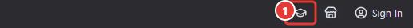
The Chickxel tutorial window opens every time you start the app. After closing it, reopen it with ① the graduation-cap button at the right of the menu bar or Help > Tutorial….
Tutorials window

- ② The four key features are large cards with an example clip. Click a card or Start to start that tutorial.
- ③ Learn more holds the other seven tutorials. Ones you haven't done come first.
- ④ A locked card has tutorials to finish first. Effect Maker opens after Draw with AI (MCP) and Use effects; the buttons under Finish these first: start the remaining ones.
- ⑤ A finished tutorial shows a green Done, and its button becomes Do again.
- ⑥ Turn on Don't show again and close the window to stop it opening at startup. Reopen it, clear the checkbox and close it to bring it back.
When you finish a tutorial, this window opens again so you can pick the next one. Progress and Don't show again are stored only on this computer.
Following along

- The bubble shows the step number (
1 / 6), the explanation and Back/Next (Finish on the last step). The X at its top right stops the tutorial. - A required step has no Next; do what the bubble says and it moves on by itself.
- An optional step moves on with Next.
- Windows without a bubble (such as the AI status check or the account window) stay usable during a tutorial.
The tutorials
| Tutorial | What you do |
|---|---|
| Turn an image into pixel art | Load an example image into the AI image pixel cleanup window, change the quick settings, run one preset, and remove or add result colors |
| Turn 3D into pixel art | Load the example chick model into the 3D model window, rotate it, recolor it, set the output, camera, light and outline, then import it as a new tab |
| Use effects | Add an outline effect to frames 3–5 of the example wolf, then look at the effect settings, the timeline effect row and the effect list's store download |
| Draw with AI (MCP) | Open AI chat and learn the Claude and Codex sign-in, drawing settings, writing a request, layer locks, and connecting outside AI apps through MCP |
| Effect Maker | In the Effect Maker window, ask the AI for an effect in words, then learn the code box, preview, your effect list, inserting into a layer and uploading |
| Working the canvas | Zooming and panning, the temporary move with Ctrl and brush size, changing the canvas size and transforming the whole layer |
| Layers and frames | Adding a layer, adding and deleting frames, and linking cels with the same picture |
| Layer groups and skins | Grouping with child layers, adding a skin and swapping it with the skin chip, and the stacking order of layers |
| Tilemaps | Create a tilemap layer, pick tiles from the tileset, lay them on the canvas and show the cell grid |
| Exporting | In the Export window, add a row, switch it to GIF, and use the export-on-save checkbox to export several files at once |
| Levels | Account level and how to earn XP, gallery uploads, and the level rewards in the account window (finishing it gives the sprout rewards; see Level rewards) |
New project
The New project dialog creates a one-layer drawing from a canvas size and a background. You can also start from a clipboard image.
Opening the dialog
Use File > New project… (Ctrl+N), + on the tab strip, or New project… on the start screen. The document opens in a new tab; you choose its name and location when you first save. Created from the file browser, the dialog also has a file name field.
Settings
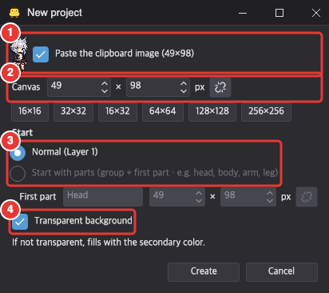
| Item | Description |
|---|---|
| ① Paste the clipboard image | Shown only when the clipboard holds an image. Details are under Starting from a clipboard image below. |
| ② Canvas | Enter the canvas size as width × height in pixels. Turn on the chain at the end to keep the ratio. The buttons below (16×16, 32×32, 16×32, 64×64, 128×128, 256×256) pick common sizes. You can change it later in Canvas size mode. |
| ③ Transparent background | On: the canvas starts transparent. Off: the canvas is filled with the secondary color. |
Starting from a clipboard image
If the clipboard holds an image, a thumbnail and a ① Paste the clipboard image (width×height) checkbox appear at the top. Turning it on sets the canvas to the image size and puts the image on the first layer.
If you change the size, the image stays at the top left and anything outside the canvas is cut off. With transparent background off, it sits on the secondary color. Without an image copied in another program, an image copied inside Chickxel is used; images over 16384px wide or tall aren't offered.
Getting help (F1)
To find out what a button or panel does, press F1 and click it. For a feature you know by name, search in Help > Guide….
Choosing help on screen
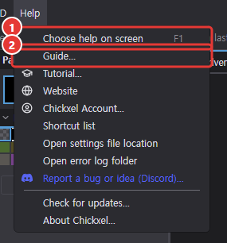
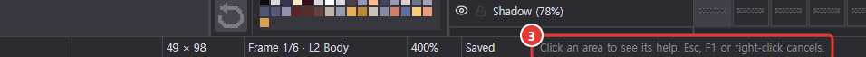
- Press F1 or choose ① Help > Choose help on screen.
- The pointer turns into a question mark and ③ a note appears in the status bar. A yellow box surrounds the control under the mouse, showing whose help will open.
- Click the area you want to know about. The guide window opens at the place that explains it and briefly outlines that place in yellow.
While choosing, clicking a button doesn't run its usual action. Esc, pressing F1 again, a right-click or switching windows ends it.
Clicking an area with no linked page ends choosing and shows a note in the status bar. Search for those areas in ② Guide….
Choosing help in other windows
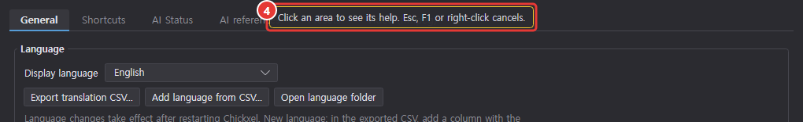
You can also choose help in the Pixelate, Effects, AI chat, Effect maker, Export, Skin settings, Preferences and Asset manager windows and in small dialogs.
- In a window without a status bar, ④ a yellow-outlined note band appears at the top center. When the mouse reaches it, the band moves to the bottom edge.
- Clicking an area with no linked page changes the text in ④ the band and keeps choosing.
- A guide window opened from a dialog stays open after you close the dialog.
Guide window
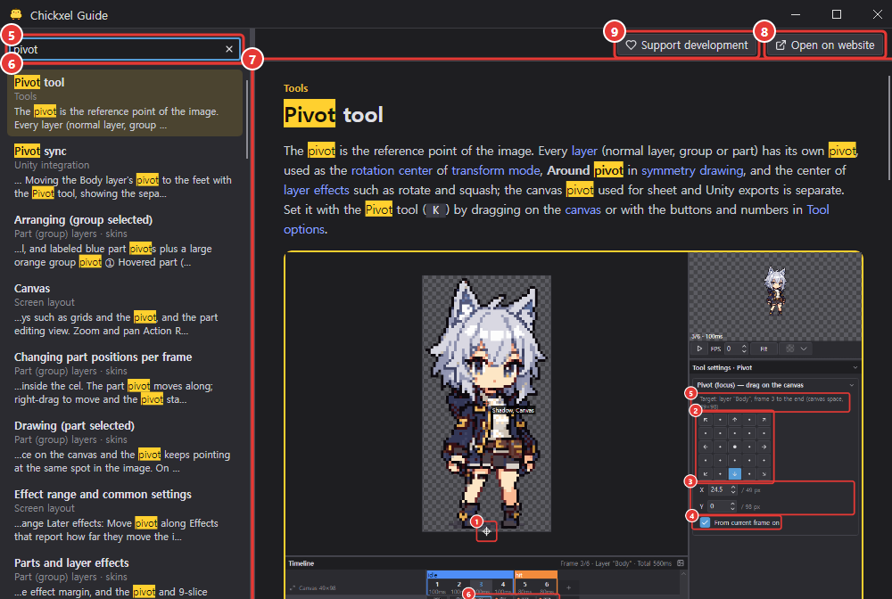
- ⑤ Type words in the search box to search the whole guide. Choose a result with ↑/↓ and open it with Enter. Matches are highlighted in yellow on the page.
- ⑥ With an empty search box this is the contents by chapter. Expand a chapter and click a page name to open it.
- ⑦ The page text. Links open in the same window, and Previous and Next at the bottom go to the neighboring pages.
- ⑧ Open on website opens the current page in the website guide, and ⑨ Send a coffee opens the support page.
- Guide… has no default shortcut (assign one in Customizing shortcuts). Only one guide window opens, and it remembers the last page you viewed while the app runs.
- Esc clears the search, or closes the window when the search is empty. Shortcuts in the window are the keys you currently use, including changed ones.
- Animated clips loop in the window without internet; Watch larger on the website shows them larger on the website.
- The guide is in Korean when the display language is Korean, otherwise in English.
- Drag over the text to select it and copy it with Ctrl+C. A selection stays within one paragraph.
Updates
Chickxel checks for a new version at every start and tells you when one is out. Click Update now in the update dialog and the app downloads, installs and restarts by itself.
New version notice

When a new version is available, the status bar says so, an ① Update button appears in the top bar and the update dialog opens. If another window is open, only the button appears. Click it to open the dialog again.
Update dialog

| Item | What it does |
|---|---|
| ② Update now | Downloads and verifies the file for your OS, then closes the app and restarts in the new version. Cancel stops the download. You're asked about unsaved work first, and if anything fails your current version stays. |
| ③ Later | Closes the dialog; you're reminded the next time you start the app. |
| ④ Don't show until the next update | The automatic check skips this version and tells you about the next one. A manual check still shows it. |
| ⑤ Versions | The new version, your current version and the release date. |
| ⑥ Changes | All changes from the version after yours up to the new one, in your display language, or English when there are no notes in it. If they can't be downloaded, only the release page link is shown. |
| Open release page | Opens the release page in your browser without closing the dialog. |
For development or test builds, when the install folder isn't writable, or when macOS runs the app from a temporary location, Update now is disabled and the dialog shows why. Then download it with Open release page and replace the app yourself. On macOS, moving Chickxel.app to the Applications folder and restarting fixes the temporary location.
On Linux, keep Chickxel in a folder your account can write to. If replacing it fails, the previous version stays and a notification tells you.
Checking manually and turning off automatic checks

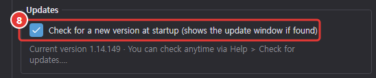
- ⑦ Help > Check for updates… checks any time. It tells you when you're up to date or why it couldn't check, and shows skipped versions too.
- ⑧ Clear this checkbox in Edit > Preferences… > General to stop checking at startup.
Network and privacy
Chickxel has no usage tracking (analytics) or ads, and your images and files leave your computer only when you choose to upload them. It goes online only in the cases below, and an account is needed only for gallery and asset uploads.
When Chickxel goes online
| When | Where and what |
|---|---|
| At startup and Check for updates… | Asks GitHub for the latest version and its changes. The automatic check can be turned off (below). |
| When you open the Palette web (Lospec) window | Downloads palette lists and sample images from lospec.com. Favorite palettes are stored only on your computer. |
| When you use the AI chat or AI status window | The Claude Code or Codex CLI installed on your computer connects to Anthropic or OpenAI with your login. The images and conversation the AI sees go to that service. |
| When you use the Chickxel account, gallery or asset uploads | Signs in to chickxel.com and uploads the picture or asset you chose (plus the editable .chickxel file if you turn that on when uploading to the gallery). Just starting the app doesn't connect (see Chickxel account). |
| The Store and Updates tabs of the Asset Manager, and the list of your uploaded effects in Effect Maker | Downloads the public asset list, previews and author profile pictures from chickxel.com, and the packages you choose to install. |
| When you click links such as the website, Discord or support | Opens the address in your default browser. |
The connection AI tools use to control Chickxel (MCP) is opened only on this computer (127.0.0.1) and can't be reached from outside.
Discord activity status only goes to the Discord app running on this computer. Your profile shows just the chick picture, "Playing Chickxel" and the elapsed time; nothing about your work is sent. To turn it off, clear Show activity on Discord ("Playing Chickxel") in Edit > Preferences… > General > Discord.
Turning off update checks

- ① Clear this checkbox in Edit > Preferences… > General and Chickxel no longer checks for updates at startup. Manual checks still work (see Updates).
Feedback
Report bugs, annoyances and feature ideas on Discord or GitHub Issues. Including your version and the steps to reproduce helps get them fixed quickly.
Where to report

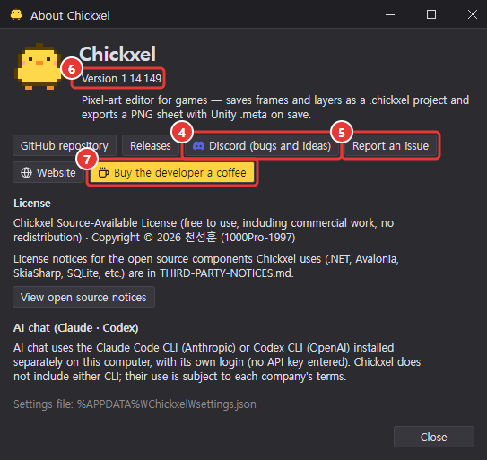
Please post bugs, annoyances and feature ideas on the Chickxel Discord. In the app, ① Help > ② Report a bug or idea (Discord)… opens it directly; in the ③ Help > About Chickxel… window, the ④ Discord button does the same. If you have a GitHub account, you can also use GitHub Issues (⑤ Report an issue in the About window).
What to include in a bug report
When reporting a bug, including the following helps get it fixed quickly:
- Version: shown in ③ Help > About Chickxel… at ⑥.
- OS: Windows 10/11, your macOS version (Apple Silicon or Intel), or your Linux distribution and version (x64 or ARM64).
- Steps: what you did, what happened, and what you expected.
- Error log: if an error dialog appeared, its log file (When errors occur). A screenshot helps too.
Supporting development
To support development, use Support Chickxel development on the website, the Send a coffee button at the top right of the in-app guide (F1), or ⑦ Buy the developer a coffee in ③ Help > About Chickxel…. The Website button in the same window opens the Chickxel website in the app's language.
Chickxel account
A Chickxel account is needed only to upload pictures to the chickxel.com gallery and share assets. Drawing, saving and exporting don't need it.
Signing in

- Open the account window with Help > Chickxel Account….
- Click the sign-in button for Google, GitHub or Discord. The chickxel.com sign-in page opens in your browser.
- Finish signing in in the browser; the app window switches to your account. You can close the browser tab.
Your account is created the first time you sign in. While waiting you can use Open Browser Again or Cancel Sign-in; after 5 minutes you're asked to try again.
Account window

- ① The signed-in account's picture, display name, title, level badge and @handle, shown with your equipped level rewards (card, frame, effect and nickname effect).
- ② Level N, the XP bar and the XP left to the next level (see Account level). The info box next to it explains how to earn XP.
- ③ Level rewards: this level's reward (gold border and star until seen) and the XP left to the next one. Equipped rewards show a check; Change… lets you choose (see Level rewards).
- ④ Profile: edit the display name and handle and click Save Profile. The handle is 3–32 lowercase letters, digits and hyphens, used in your gallery address and as your asset author ID. A taken handle can't be used, and the handle is locked once you publish an asset package.
- ⑤ Open My Gallery Page opens your page on chickxel.com. Sign Out removes only this account, and Add Another Account… shows the sign-in buttons while keeping the current account.
- ⑥ Other accounts signed in on this computer: each other signed-in account has Switch and a sign-out button.
Account button in the menu bar
The account button at the right end of the menu bar shows your picture, name and level badge when signed in, otherwise Sign In. With no saved accounts it opens the account window; otherwise it opens the account menu.
The account menu lists your signed-in accounts (the current one checked; click another to switch), Add Another Account…, Manage Account… (Sign In… when signed out) and Sign Out. The gallery button next to it is covered in Menu and top bar.
Good to know
- Gallery and asset uploads use the current account. An account whose sign-in the server ended is removed from the list; switching to it opens the account window with "This account's sign-in has ended and it was removed from the list. Sign in again.".
- If the browser goes straight to an account that's already signed in when you add another, switch accounts on that service or use another service. Signing in again with the same account doesn't add a duplicate.
- Wherever an account or author appears (the account button, menu and window, Asset Manager, Effect Maker, Upload to Gallery and more), you see the picture, name, level badge and equipped frame and nickname effect. Hover over a cut-off name to see all of it.
- With a saved account, Chickxel contacts chickxel.com at startup, when you first open the account menu, when you switch accounts or use the account window or uploads, and after each hour of signed-in app time. Sign-ins are kept in
community-session.binin the settings folder (see Preferences).
Account level
Your account level rises as you share pictures and assets on chickxel.com and stay active. Read this page to see how to earn XP (experience points) or what the Lv badge next to your name means.
Earning XP
You earn XP for each of these activities.
| How | XP |
|---|---|
| Upload a picture to the gallery | +10 |
Also share the editable .chickxel file with the picture | +5 |
| Publish a new asset package | +10 |
| Upload a new version of a published package | +1 |
| Each like from someone else on your art or assets | +2 |
| Like someone else's art or assets (3 a day count) | +1 |
| Daily check-in (your first app start or site visit of the day) | +10 |
| Each hour the app is open while you're signed in | +1 |
- You get the check-in the first time each day you start the app or visit chickxel.com while signed in. The status bar shows "Daily check-in +10 XP".
- App time counts only while you're signed in. Even on several computers you get it once an hour.
- A new day starts at 00:00 UTC (09:00 in Korea).
Levels and badges
Each level needs 1 XP more than the one before. Level 2 starts at 10 XP, level 3 at 21 XP and level 100 at 5,841 XP; there's no maximum level.
The badge color depends on your level.
| Level | Default level badge |
|---|---|
| 1–4 | Dim gray |
| 5–9 | Bronze |
| 10–19 | Silver |
| 20–29 | Gold |
| 30–49 | Cyan-to-purple crystal |
| 50+ | Rainbow |
The badge appears on the account button and window, in the Upload to Gallery window, next to authors in the Asset Manager, and next to names on chickxel.com. Hover over it to see the level and how to earn XP.
Good to know
- When you level up, the status bar shows "Level up! Lv N".
- Moving badges are badge looks from level rewards. The default badge doesn't move.
- If the server doesn't report a level (an older server, for example), there's no badge.
- If a like is withdrawn, or a picture or asset package is deleted (by you, an admin or a report), the XP it earned (likes included) is removed. Its storage quota comes back right away.
- Deleted pictures and assets stay on the server, so an admin can restore them.
Level rewards
Each level from 2 to 100 unlocks one reward that decorates your profile (99 in all). Rewards come in six slots, and you wear one per slot.
Reward slots
| Slot | Where and how it shows |
|---|---|
| Title (9) | Text under your name by the large picture. Higher levels get rarer colors; from level 71 they flow in rainbow colors. |
| Level badge (20) | The look of the badge next to your name, moving with flowing colors, glowing borders, sparkles or embers. |
| Frame (30) | A pixel frame around your picture: a small look on small pictures, and a larger look with ornaments such as wings or crowns on large pictures (the account window and your site profile). |
| Effect (20) | An animation around the large picture (sparkle dust, petals, fireflies, planets, runes and more). |
| Card (10) | An animated background for your profile header (the top of the account window and your site profile). |
| Nickname effect (10) | Colors and motion for the letters of your name (neon, wave, glitch, fire, galaxy, rainbow and more). The text keeps its width. |
Choosing rewards
- Click Change… in the account window, or use the account menu on chickxel.com, to open the level rewards page.
- Click a reward or None in any slot. It changes right away and looks the same wherever your name appears in the app and on the site.
Every slot is on Auto by default: it wears the highest-level reward you've unlocked and switches by itself as you level up.
Good to know
- When you unlock a reward, the badge on the account button sparkles and Manage Account… in the account menu shows how many you haven't seen (
2 new). Opening the account window marks them as seen. - If your level drops because something you shared was deleted, that level's rewards lock again and slots that had one chosen go back to Auto.
- Finishing the Levels tutorial gives you the title Pixel Sprout and the frame Sprout Frame at any level. Auto treats them as the lowest rewards.
Screen layout

This chapter covers the areas of the main window and the controls shared by many windows. Click a name in the table to open that area's page.
| Area | What it does |
|---|---|
| ① Menu and top bar | Menus, the current tool's name and hint, view options, zoom, and the AI chat, gallery and account buttons |
| ② Toolbar | Pick tools, show the file browser or effect list, save or revert |
| ③ File browser | Browse a folder's images as thumbnails and open them |
| ④ Palette | Primary and secondary colors and the stacked palettes |
| ⑤ Colors | Color picker, recent colors and the colors used in the current layer |
| ⑥ Document tabs | Switch between open documents and split the view in two |
| ⑦ Canvas | Draw on the current layer while viewing the current frame |
| ⑧ Timeline | Select and edit frames, layers, cels and tags (its own chapter) |
| ⑨ Preview | Play the animation, switch skins, copy or save frames |
| ⑩ Tool options | Settings of the current tool and of the effect selected in the timeline |
| ⑪ Status bar | Cursor coordinates, color, size, frame, zoom, save state and messages |
This chapter also has these pages:
| Page | What it does |
|---|---|
| Number fields and menus | Changing number fields, expressions, right-click value lists, menus, size fields |
| View options | Turning grids, tiled mode, pivots, onion skin and effects on or off, and their settings |
| Outside-canvas view | Show artwork beyond the canvas opaque or translucent, or hide it |
| File menu and details | The file right-click menu, renaming, details and the export list |
| Merging files | Combine several images into one .chickxel |
| Deleting and the app trash | Restore deleted files, retention policy |
| Palette web (Lospec) | Find and import palettes others have made |
| Convert to palette colors | Replace the image's colors with palette colors, dithering |
| Movement test | Move a character as in a top-down or platformer game |
| Animation names in the movement test | The animation names tried for each state and the stand-ins |
The timeline, effects, scripts, assets and export have their own chapters: Timeline, Layer effects, Making script effects, Asset manager, Export and sharing.
Drag the borders between panels to resize them; the sizes are kept for the next launch.
Menu and top bar

Look at the top of the window to find a command, see how the current tool works, or zoom. The menu bar has every command; the top bar below it has the buttons you use most.
- ① Tool name: the current tool and its shortcut
- ② Usage hint: the tool's mouse actions and modifier keys
- ③ View options: turn grids, pivots and other overlays on or off (View options)
- ④ Zoom box and ⑤ Fit: canvas zoom (below)
- ⑥ AI chat: open or close the AI chat window (Ctrl+L)
Menus
Each menu item shows its shortcut on the right. You can change shortcuts in Preferences.
| Menu | Open it to |
|---|---|
| _File | Open, save and export files, or upload to the gallery (Files chapter) |
| _Edit | Undo, copy and paste, flip, transform and canvas size, convert to palette colors, Preferences |
| _View | Zoom, view options, switch tabs, file browser, movement test |
| F_rame·Layer | Play, and work with frames, layers, skins and tags (Timeline and Layer tree · skins chapters) |
| _Tools | Pick tools, drawing options, Asset Manager, Effect Maker (Tools chapter) |
| _AI | AI chat, connect other AI apps, references, pixelate (AI and Pixelate chapters) |
| 3_D | Open 3D model… (3D models chapter) |
| _Help | Choose help on screen (F1), the guide, the shortcut list, updates, bug reports (Getting started chapter) |
Zoom and Fit

The canvas zooms from 1× to 64× in whole steps. The zoom is kept for the next launch (800% at first).
| Control | Result |
|---|---|
| Type in ④ the zoom box | Rounds to the nearest whole zoom (150% → 200%). |
| Right-click the zoom box | Pick ⑦ Fit to window or a value from 100% to 6400%. |
| Minus and plus buttons | Zoom out or in one step (Ctrl+-, Ctrl+=). |
| Turn on ⑤ Fit | Fits the canvas to the window whenever you open an image (on at first). |
| Shortcuts | Ctrl+0 fits, Ctrl+1 shows actual size. Wheel zoom is on the Canvas page. |
Other buttons

- ⑫ Gallery button: uploads the current drawing to the gallery. It sparkles briefly after you save, inviting you to share.
- ⑬ Account button: shows your picture and level and opens the account menu (Chickxel account).
- Update button: appears on the top bar only when a new version is out (Updates).
View options

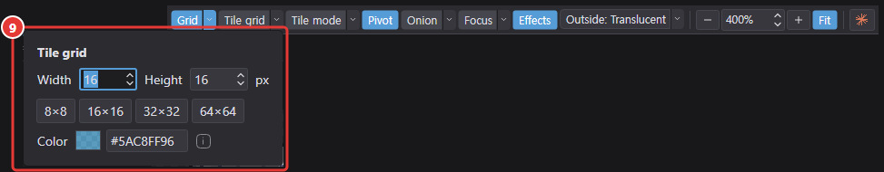
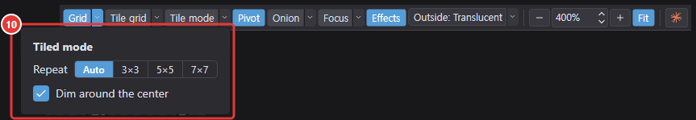
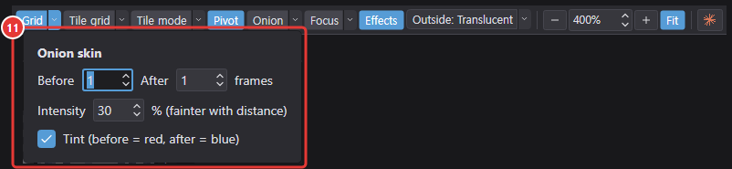
Turn on a view button on the top bar when you want drawing aids such as grids or neighboring frames on the canvas. They show only on screen, never in the artwork.
View buttons
| Button | What you see when it's on |
|---|---|
| ⑧ Pixel grid Ctrl+G | A line around every pixel when zoomed in enough (on at first) |
| ⑨ Tile grid Ctrl+Shift+G | A line every tile |
| ⑩ Tiled mode Ctrl+Shift+T | The image repeated around itself, to check seamless patterns |
| Show pivot | The pivots of layers and the canvas: the points they rotate and line up around (on at first) |
| ⑪ Onion skin Ctrl+J | Neighboring frames faintly overlaid, for spacing motion |
| Focus ` | Only the current layer clear; the other layers faded |
| Effects Ctrl+Shift+E | The canvas with layer effects applied (see Effects view below) |
Settings
For buttons with settings, click the small triangle on their right or right-click the button.
- ⑧ Pixel grid: line color and the zoom it appears from (6× at first)
- ⑨ Tile grid: tile size (16×16 at first) and line color
- ⑩ Tiled mode: how many tiles repeat (Auto, 3×3, 5×5, 7×7) and dimming the surroundings
- ⑪ Onion skin: how many frames before and after (1 each at first), intensity (30%), and red/blue tint for previous/next
- Focus: how visible the other layers are (30% at first)
The same commands are in the _View menu, where Grid settings… sets the grid colors and tile size in one place.


Effects view

When effects get in the way of editing the drawing itself, turn off ⑫ Effects. ⑬ The canvas shows the drawing without effects, while ⑭ the preview keeps showing them.
Same as View > Show effects on canvas (Ctrl+Shift+E).
Good to know
- Views and their settings are kept for the next launch, except the effects view, which turns back on.
- With Show pivot off, the Pivot tool still shows the pivot you're editing.
- With effects off, onion skin, previous-frame peek, the eyedropper and fill also use the drawing without effects. Exports don't change.
- Layers drawn entirely by effects, such as text layers, still show with effects off.
To choose how artwork beyond the canvas is shown, see Outside-canvas view.
Outside-canvas view
Use the Outside button on the top bar to choose how artwork beyond the canvas is shown. Saved artwork and exports don't change.

Click ① Outside: view state to cycle Opaque → Translucent → Hidden, or open the list with its arrow or a right-click. The choice is kept across launches.

Tilemaps, floating selections, resize and transform previews, and the child layers of an empty layer follow this view outside the canvas too.
Number fields and menus
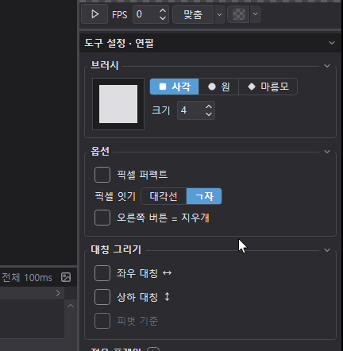
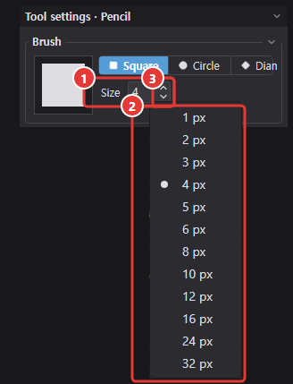
The ① number fields throughout the app work the same in every window: click to type, use ③ the up/down buttons, or pick from ② the right-click list.
Up/down buttons
Click or drag up and down on ③ the up/down buttons to change the value. Dragging the number field itself doesn't change it.
| Action | Result |
|---|---|
| Click a button | Steps by one; hold Ctrl (macOS ⌘) to step by 10. |
| Drag up/down on the buttons | Up increases and down decreases, one step every 3 pixels (stops at the minimum and maximum). |
| Shift+drag | Changes 10× slower (one step every 30 pixels). |
| Ctrl (macOS ⌘)+drag | Changes 10 steps at a time (works with Shift too). |
| Drag to the top or bottom of the screen | The cursor wraps to the other side so you can keep going. |
Changing modifiers mid-drag doesn't make the value jump. One drag is one undo step.
Typing and expressions
Click a number field to type with the whole number selected. While typing, each wheel notch changes it by one step. Press Enter or click elsewhere to confirm.
- Integer and decimal fields accept arithmetic such as
256*2(512 once confirmed). - Use
+,-,*,/, parentheses and a minus sign; multiplication and division come first. - Integer fields drop the fraction (
7/2→ 3). Decimal fields round to the digits shown. - Invalid expressions, division by zero and values too large are rejected; the previous value stays.
Right-click value list
When not typing, right-click a number field for ② a list of values suited to it.
- Values show their unit (px, °, %, ms), and the current value has a dot.
- Some fields have an action at the top (for example Fit to window in the zoom box).
- The last value used in fields of the same kind during this session appears as Recent: value.
- Right-clicking while typing opens the cut, copy and paste menu instead.
Menus and popups
Only one menu or popup is open at a time across the app. It closes when you click or scroll outside it, press Esc, move or switch windows, or press the button that opened it again.
Size fields
Every size input has the same [width] × [height] (unit) [chain] shape. While the chain (lock ratio, on at first) is on, changing one side makes the other follow the ratio it had when you turned the chain on.
Info badges and collapsible groups
Hover the small square with an i (info badge) for a longer explanation, or click it to show it right away. Groups with an arrow next to their title collapse and expand when you click the title.
Buttons and menu items with a shortcut show it at the top of their tooltip in a green box.
Toolbar

Pick tools from the vertical bar on the far left. Hover an icon to see its name and shortcut. If the window is short, only the tool slots scroll.
Tool slots
The slots in order from the top. Click a tool name for its page.
| Slot | Tools (shortcut) |
|---|---|
| 1 | Pencil (B), Gradient pencil (Shift+B) |
| 2 | Eraser (E) |
| 3 | Fill (G), Gradient (F) |
| 4 | Eyedropper (I) |
| 5 | Shape (R) |
| 6 | Text (T) |
| 7 | Rectangle select, Ellipse select (M), Lasso select (Q), Magic wand (W) |
| 8 | Move (V) |
| 9 | Dodge/burn (D) |
| 10 | Dithering (no default shortcut) |
| 11 | Replace color brush (C) |
| 12 | Pivot (K) |
| 13 | 9-slice (S) |
Switching tools in a grouped slot
A slot with several tools has ② a small triangle in its corner. Click to pick the tool shown; hold for over 0.4 seconds or right-click to expand ③ the list. The tool you pick becomes the slot's icon.
M picks the selection tool you used last; pressing again within 10 seconds cycles Rectangle → Ellipse → Lasso → Magic wand.
File browser, Effects, Save and Revert buttons
- ① The folder button collapses and expands the file browser (F8).
- ⑥ The Effects button opens and closes the effect list in the same column. With both on, the column splits into files (top) and effects (bottom).
- ④ Save is enabled only with unsaved changes, and ⑤ Revert to saved only when there is a file on disk to go back to (Revert to saved).
- Whether the file browser and effect list are shown is kept for the next launch.
File browser
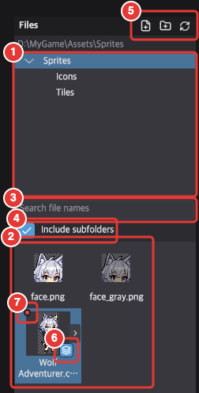
Use the file browser on the left to find and open the files you work on. Click ② a thumbnail to open that file in a new document tab.
Choosing a folder
- Open a folder with Ctrl+Shift+O. The last folder opens again next launch.
- Click a folder in ① the folder tree to see its files.
- With ④ Include subfolders on (the default), files in folders below show too.
- Open Unity project (Ctrl+Shift+U) lists the projects registered in Unity Hub and opens the chosen project's
Assetsfolder.
List and search
- Images, videos and 3D models all appear. The list updates as soon as the folder changes.
- ⑥ A blue badge marks a Chickxel project (
.chickxel), a film badge a video, a cube badge a 3D model. - Type in ③ the search box to filter by file name.
Project bundles

Images and videos exported from a project are bundled into the project's tile, which keeps the list short.
- ⑧ Click the arrow (or press Ctrl+→) to expand; click again or press Ctrl+← to collapse.
- ⑨ Expanded files appear with the project inside a black outline. Open, drag and delete them like any file.
New file and new folder
⑤ The icons on the right of the title row are New pixel file, New folder and Refresh.
New pixel file creates and opens a new drawing in this folder after you set its name and size (New project). It never overwrites a file with the same name.
Selecting and dragging
- Select several: Ctrl+click, Shift+click, or drag a rectangle
- Add a picture as a new layer: drag the file onto the canvas (Dropping in a layer)
- Copy to another app: drag the file to Explorer, Finder or another app
Unsaved changes (red dot)
⑦ A red dot means the file has changes you haven't saved. Closing its tab asks whether to save.
Good to know
- Hidden folders and folders whose names start with a dot don't show in the tree.
- Video thumbnails need the ffmpeg video tool installed.
- If another app changes an open file, you're asked whether to reload it.
- Hold Ctrl (macOS ⌘) while dragging a rectangle to add to the selection.
- Turning on the effect list too splits this column in two.
File menu and details
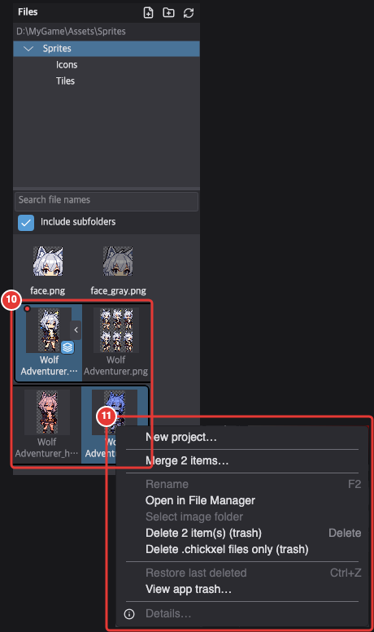
Right-click a file in the file browser when you want to rename it, delete it or see its details. Select ⑩ several files first to get ⑪ the commands that apply to all of them.
Right-click menu
| Item | What it does |
|---|---|
| New project… | Creates a new drawing in this folder. |
| Pixelate AI image… | Cleans up an AI-made picture into tidy pixel art (Pixelate). |
| Merge… | Combines several files into one project (Merging files). |
| Rename | Renames the file (F2). |
| Open in Explorer/Finder | Opens the file's folder in your computer's file manager. |
| Select image folder | Goes to the subfolder that holds the file. |
| Delete (trash) | Moves the files to the app trash (Delete, macOS ⌘+Backspace). |
| Delete .chickxel files only (trash) | Deletes the projects but keeps the pictures exported from them. |
| Restore last deleted | Brings back the files you just deleted (Ctrl+Z). |
| View app trash… | Opens the app trash. |
| Details… | Shows the file's information (Details below). |
Renaming
- Select one file and press F2.
- Type the new name and press Enter (Esc cancels).
You can leave out the extension; it's kept. Renaming a project renames its exported files too.
Details
Choose Details… when you want a file's size, dates and similar facts. Values can be copied, and each kind of file adds more:
- Pictures: pixel size and frame count
- Videos: size, length and frames per second (with ffmpeg)
- Chickxel projects: canvas size, frame and layer counts, and the export list (below)
- Folders: how many files and folders are inside and their total size
Export list
Use it to see which files a project makes when saved, without opening the project. The Export list is at the bottom of a project's details.
- Check box: whether that file is made when you save.
- Settings…: opens the project in the export window to change it.
- Under each row: the files made and their sizes, with open-folder and trash buttons. Nothing made yet reads “None yet — made when you save”.
- At the bottom: files made earlier that the current settings no longer make. You can delete them here.
Merging files

Select two or more .chickxel or PNG files and choose Merge… from the right-click menu to combine them into one .chickxel. Other formats and videos can't be merged.
- ⑫ Order: the order you selected the files in at first. Drag rows or use the up/down buttons (top = first).
- ⑬ Name: suggested automatically from the words the file names share (
potato_growing,potato_mature→potato). - ⑭ Mode: see the table below (As layers at first). With Under one layer, Empty thumbnail creates it with all child layers hidden.
- ⑮ Canvas size (at first the largest width and height), anchor (9 directions) and Delete originals (off at first; originals go to the app trash).
- ⑯ A preview (played if there are several frames) and ⑰ How it will look in the timeline show the result and notes on what is kept.
Modes
| Mode | Result |
|---|---|
| As layers | One layer per image file; a .chickxel comes in whole with its layer tree and skins (first file on top) |
| Under one layer | One empty layer with a child layer per file (sizes kept). If a .chickxel has a layer with children, they go under its first parent. |
| As skins | One skin per file on a single layer (skin name = file name), for tile or item variants swapped in one spot. |
| As frames | Frames appended in file order. |
Layer trees, skins, effects and tags in .chickxel files carry over in every mode. The result is saved as <name>.chickxel in the first file's folder and opened. If that name is taken, nothing is merged and you're told.
Deleting and the app trash
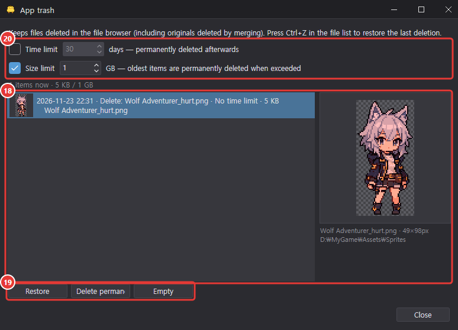
Deleted files (Delete) and originals removed by merging go to the app trash without asking. Press Ctrl+Z in the file list to restore the last deletion.
- ⑱ In the window opened from the right-click menu or File > View app trash…, see each item's deletion time, days left, size and a preview.
- ⑲ Restore (double-click), delete permanently or empty the trash. An item isn't restored if its original place has a file with the same name.
- ⑳ Retention policy: Time limit (off at first; 1–3650 days, 30) and Size limit (on at first; 0.1–1000 GB, 1 GB; oldest go first). Also in Edit > Preferences….
Their PNG and .meta files are kept too. The app trash is separate from the Windows or macOS trash and lives in the app settings folder.
Palette
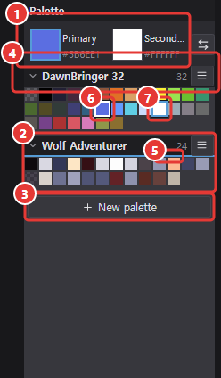
Use the palette at the top of the color panel to pick the color you paint with and to keep colors you use often. Click a swatch to paint with it.
Below ① the primary/secondary slots you can stack ② several palettes and add one with ③ New palette (DawnBringer 32 at first).
Primary and secondary colors
- ① The left mouse button paints the primary color, the right button the secondary (transparent at first).
- Click a slot to edit that color in the color picker below.
- Swap the two with the button beside them or X.
Stacked palettes and the active palette
- ④ Each palette's header has a collapse arrow, its name (double-click to rename), the color count and a menu button.
- ⑤ The blue line marks the active palette: the one you clicked last. The Edit menu and the AI use this palette.
- The palette list is kept for the next launch.
Picking swatches
- Click for the primary color, right-click for the secondary. Hover to see the color code (HEX).
- ⑥ A white border marks the current primary color, ⑦ a blue border the current secondary.
- To remove a color, make it the primary color and choose Remove primary color from palette from the menu.
Palette menu

⑧ The menu acts on that palette only, and can be undone.
| Item | What it does |
|---|---|
| Add current color | Adds the color you're editing to the end. |
| Remove primary color from palette | Removes the swatch matching the primary color. |
| Sort by hue | Groups colors by family (red, yellow, green…) and orders each family by brightness. |
| Load palette (.hex/.gpl)… | Replaces the colors with those of a palette file (.hex, .gpl). |
| Palette web (Lospec)… | Finds and imports palettes from the web (Palette web). |
| Save palette (.hex)… | Saves it as a .hex file. |
| Create palette from image | Fills the palette with the colors in the drawing (most used first, up to 256). |
| Convert to palette colors… | Changes the drawing's colors to this palette (Convert to palette colors). |
| Rename… | Renames the palette. |
| Move up | Moves it up one place. |
| Move down | Moves it down one place. |
| Clear palette | Removes every color. |
| Delete palette | Deletes the palette (not the only one). |
Palette web (Lospec)
Open Palette web (Lospec)… from the palette menu when you want a palette someone else made. It shows the lospec.com palette list inside the app (internet required).
Finding a palette
- Filter by sort order (popular, downloads, newest, name) and by tag (e.g.
gameboy). The sort is remembered. - Filter the color count with All, Max, Min or Exact. Scroll to the end or press Load more for more.
- Selecting a palette shows its colors and example art made with it.
Importing
Use as palette (same as double-click) replaces the palette; Add to current palette adds only new colors. There's also Save as .hex and View on Lospec.
Favorites
- Favorites: click the star next to a palette to add or remove it. Favorites stay on your computer.
- Choose Favorites in the sort box to show only favorites. No internet needed.
- If Lospec can't be reached, click View favorites next to the error.
Palette copyrights belong to their respective authors.
Convert to palette colors

Convert to palette colors replaces the image's colors with palette colors. Open it from the palette menu or the _Edit menu.
- ⑨ Choose the target from current cel (inside the selection, if any), all frames of the current layer or all layers and frames (locked layers skipped).
- ⑩ Color matching decides which palette color each image color becomes (table below; the last rule is remembered).
- ⑪ Dithering is No dithering (default) or Ordered dithering (Bayer 4×4), with any rule.
- ⑫ A before/after preview and ⑬ the change in color count help you choose.
Alpha is kept and fully transparent pixels are left alone. The conversion is one undo step.
Color matching rules
| Rule | Color it picks |
|---|---|
| Nearest color | The most similar color by color distance. Pick RGB (redmean), OKLab or CIEDE2000 in Color distance right below; the last two are closer to how differences look. |
| Brightness order | Ranks the image's colors by lightness and spreads them over the palette sorted by lightness, so light and dark survive even with different hues. |
| Palette order | Ranks by lightness but maps onto the palette's listed order (first color = darkest). Suits palettes laid out as shade ramps. |
| Hue first | Among the closest hues, the closest lightness. Grays stay gray. |
| Lightness only | The closest lightness, ignoring hue. Suits black-and-white or 4-color Game Boy-style palettes. |
Brightness order and palette order rank all target cels together, so a color maps the same way in every frame.
Dithering

Without dithering, colors form bands; ordered dithering mixes two palette colors in a pattern to show the shade between them.
Colors almost equal to a palette color aren't dithered. With the nearest color rule, a pattern is used only when it's closer to the original than a single color.
Color picker

The color picker below the palettes changes the color you're editing (primary or secondary). Switch picking modes with ⑥ the tabs.
It has ① an alpha bar, ② RGB, ③ HSV and ④ alpha (A)/HEX inputs and ⑤ recent colors, with Layer colors at the bottom.
Picking modes

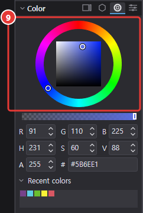

| Mode | Layout |
|---|---|
| ⑦ Square (default) | Saturation/value box + vertical hue bar |
| ⑧ Honeycomb | 127 hexagonal cells (white in the center, richer and darker outward) and 13 gray cells |
| ⑨ Color wheel | Outer ring = hue, inner square = saturation/value |
| ⑩ Sliders | R, G, B, H, S, V bars |
Input fields
- R, G, B and A are 0–255, H is 0–360°, S and V are 0–100%. HSV, sliders and honeycomb keep the current alpha.
- The HEX field accepts
#RGB,#RGBA,#RRGGBBand#RRGGBBAA(the#is optional). - Press Enter or click elsewhere to confirm; invalid input reverts.
Recent colors
⑤ Recent colors keeps the last 16 colors you painted with, newest first (not eraser, dodge/burn, gradient or transparent). Click for primary, right-click for secondary.
Collapsing
Collapse the “Color” header and ⑤ “Recent colors” separately with their chevrons. Collapsing “Color” leaves the header and recent colors and gives the palettes more room. The state is kept for the next launch.
Layer colors

⑪ Layer colors shows the colors used in every frame of the selected layer, most used first (no transparent). The number by the header is the count.
| Selected layer | Colors counted |
|---|---|
| Normal layer | The art in every frame, including outside the canvas |
| Layer with children | Its own art and all its descendant layers |
| Layer with several skins | The art of the skin currently shown |
- Click a swatch for the primary color, right-click for the secondary. Up to 1024 colors are shown.
- Click the header to collapse it. While collapsed it doesn't count colors, and the state is kept for the next launch.
Color pickers in other windows

Clicking a color box in other windows, such as effect settings or Replace color, opens a color popup with the same four modes. The palettes are on its right, with two buttons below for picking a color.
- ⑫ Pick from image: shows the current frame enlarged in a separate window and picks the pixel you click (picture below). Hidden with no document open.
- ⑬ Pick from screen: captures the whole screen and picks the color where you click, other apps included. A magnifier and HEX by the cursor show the color; Esc or right-click cancels.

⑭ In the Pick a color from the image window, the wheel zooms and dragging pans. Click to pick that pixel and close; Esc closes without picking. ⑮ The bottom row shows the hovered pixel's color, HEX and coordinates.
Canvas
The canvas shows the current frame (all visible layers combined), and tools draw on the current layer's cel.
Zoom and pan
| Action | Result |
|---|---|
| Mouse wheel | Zooms around the point under the cursor (1–64×). |
| Ctrl (macOS ⌘)+wheel | Changes the brush size. |
| Space+drag, middle-button drag | Pans the view. |
| Ctrl+= · Ctrl+- · Ctrl+0 · Ctrl+1 | Zoom in · zoom out · fit · actual size. For the zoom box, see Menu and top bar. |
| Hold H | Shows the previous frame while held (with a note at the top left). |
Editing layers with their own size and empty layers
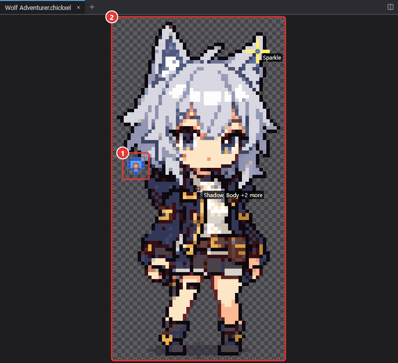
- Selecting a layer with its own size (such as a child layer) shows ② the whole frame with ① that layer's area outlined. Coordinates are relative to the layer's area.
- Selecting an empty layer with only children shows a dashed outline and name over each child layer; drag them to arrange (Arranging).
- A layer's 9-slice border appears as dashed guides.
View overlays
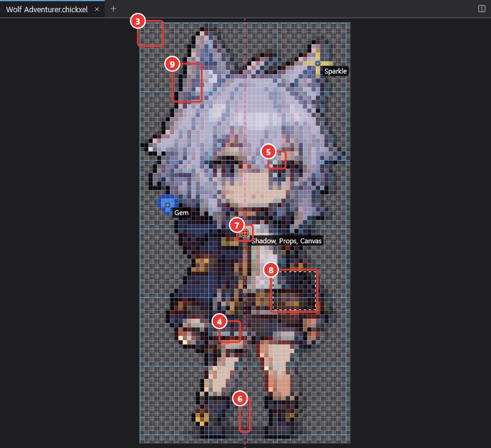
These overlays are switched with the view options and never become part of the image.
| Overlay | What it shows |
|---|---|
| ③ Checkerboard | Transparent areas |
| ④ Pixel grid | Pixel borders (from the chosen zoom up) |
| ⑤ Tile grid | A line every tile (16×16 and light blue at first) |
| ⑥ Symmetry guide | The symmetry drawing axis (canvas center, or the pivot with Mirror around pivot). The brush outline shows faintly on the mirrored side. |
| ⑦ Pivot | The reference point for rotation and placement: a large circle and cross for the current layer, small dots with name labels for other layers and the canvas (blue for layers with their own size, orange otherwise). |
| ⑧ Selection | The dashed outline of the selected area |
| ⑨ Onion skin | Neighboring frames overlaid translucently |
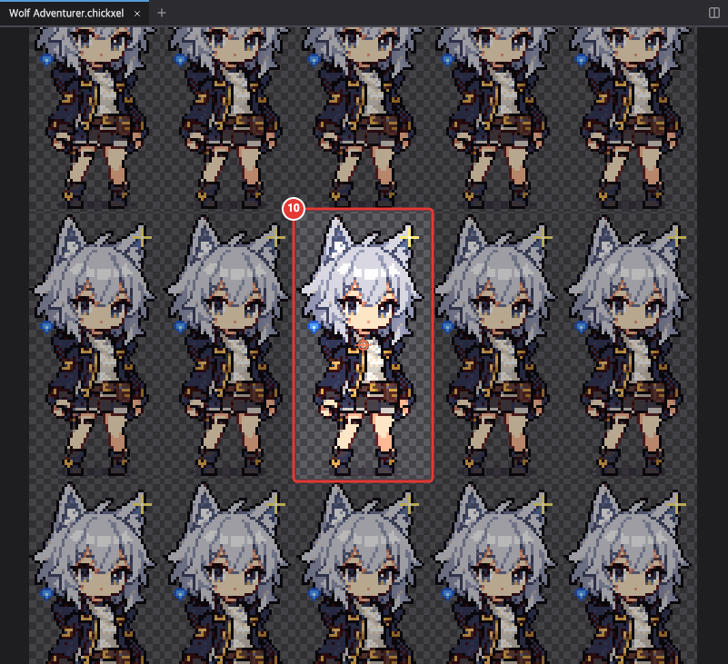
⑩ In tiled mode you edit the center tile; the surrounding tiles are copies.
Shown only while editing
- A hidden layer you select shows translucently on the canvas only, so you can keep drawing.
- While using the Move tool, pixels pushed outside the canvas show dimmed (Move).
- If the current layer is locked, a note at the bottom left says you can't draw on it.
- Brush tools outline the brush shape at the cursor.
Computing effects
Heavy effects never freeze the window. A slow frame shows a gray veil and progress bar until it's done. While you draw, new strokes appear first and effects catch up.
To hide effects on the canvas, turn off the effects view.
Document tabs and split view

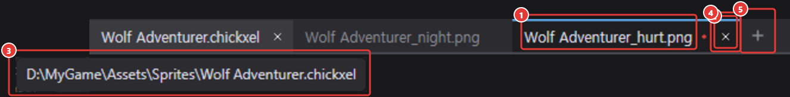
The tab strip above the canvas has a tab for each open document. Click a tab to switch documents, or split the canvas into left and right panes.
Opening, switching and closing tabs
- ① The title is the file name, ② a red dot means unsaved changes, and ③ hovering shows the full path.
- The file browser, Open and New project open new tabs. A file that's already open, even in the other pane, goes to its tab.
- Zoom, position, current frame, layer, selection and undo history are kept per tab.
- Close with ④ X, a middle click or Ctrl+W. ⑤ + creates a new project in a new tab.
- After closing with X, the next tab's X lands in the same spot so you can keep closing. When tabs overflow, scroll the wheel over the strip.
- Closing every tab shows the start screen.
Tab menu and tab order
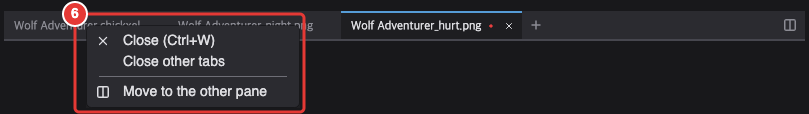
- Drag tabs sideways to reorder them. Ctrl+Tab / Ctrl+Shift+Tab cycle through the focused pane's tabs.
- ⑥ Right-click a tab for Close, Close other tabs and Move to the other pane.
- A never-saved new project's tab also has Temporary title…. The name shows on the tab and is suggested as the file name when you first save.
Splitting the view
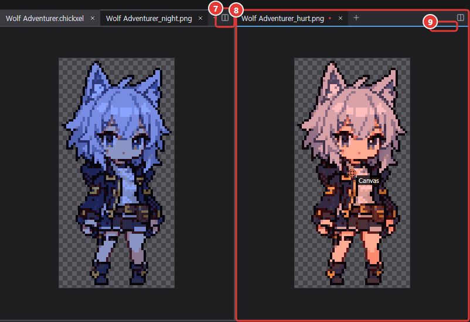
- Choose Move to the other pane (tab menu, ⑦ the button at the end of the strip, or the View menu), or drop a tab on the right 40% of the canvas, to split it into ⑧ a right pane.
- Drag the divider to share the width. Each pane has its own tab strip.
- The timeline, preview and panels work on the focused pane (⑨ the accent line). Click the other pane to focus it.
- Closing or moving the last tab of a pane merges the view back into one.
Preview tab

⑩ Open as tab in the preview header opens the document you're editing in a green preview tab on the other side (splitting the view if needed).
- It shows the same playback, background and skins as the preview. The wheel zooms, dragging pans, double-click fits and right-click opens the preview menu.
- There is only one preview tab; clicking the preview image brings it forward. It closes when all document tabs close.
- You can move it like other tabs, but it never becomes the editing document and isn't reopened next launch.
Reopening at the next launch
Tabs open when you quit reopen next launch with their split, order and focus. Missing files, never-saved documents and the preview tab are skipped.
Preview

The preview at the top right plays the animation, effects included, at real speed, separately from the frame you edit.
| Number | Item and use |
|---|---|
| ① | Playback view. It plays the tag selected in the timeline, or loops all frames. Click it for the enlarged view. |
| ② | Preview FPS (0–60, 0 at first). 0 uses each frame's own duration. |
| ③ | Click to cycle Fit → 1× → 2× → 4×, or pick from the list with the small arrow or a right-click. |
| ④ | Background. Click to cycle checker → black → white → gray → green → custom, or open the list with the small arrow or a right-click. |
Playback
- Play or stop with the play button or Shift+Enter.
- A short tap of Space (under 0.4 seconds) in the main window also plays or stops; holding it while dragging pans. A focused text field gets the key instead.
- If effects fall behind, playback holds the current frame until the next is ready.
- FPS, zoom and background are app settings, so they carry over to other documents and the next launch.
Collapsing the preview
⑤ Click the arrow at the right end of the header (Collapse preview) to leave only the header; Tool options takes the space. Click again to expand. The state is kept for the next launch.
Copying and saving

⑥ Right-click the preview image for copy and save commands. During playback they use the frame shown when you right-clicked.
| Command | What it does |
|---|---|
| Copy image | Copies the shown frame as a transparent PNG, without the background. |
| Copy enlarged (×4) | Copies a crisp 4× PNG (handy for chats). |
| Save frame… | Saves <document>_<frame number>.png. |
| Save as GIF… | Opens the Export dialog with the first GIF row selected (adding one if needed). |
Background
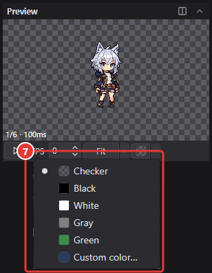
⑦ Pick a background from the list; choosing the custom color opens the color picker. The background is for the preview only, never in copies, saved frames or exports.
Skins
With layers that have several skins or with skin presets, a Skins row appears below the preview. Pick a preset first, then the skin to show for each layer. Click a layer name or Settings… to open the skin settings window.
Enlarged view and preview tab
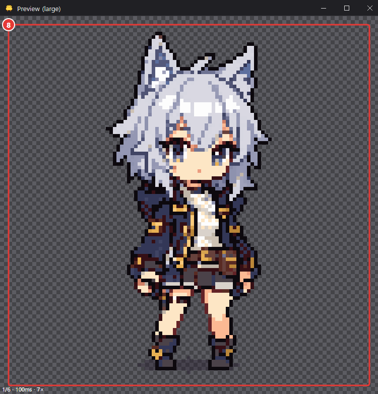
Click the preview image to open ⑧ the enlarged view, which shows the same playback, background and skins at the largest whole zoom that fits.
- Only one opens, and you can resize it. Space plays or stops, Esc closes and right-click opens the preview menu.
- In the enlarged window and the preview tab, the wheel zooms around the cursor (up to 64×) and dragging pans. Double-click fits again (0 too in the enlarged window).
- While a preview tab is open, clicking the image brings that tab forward instead.
Movement test
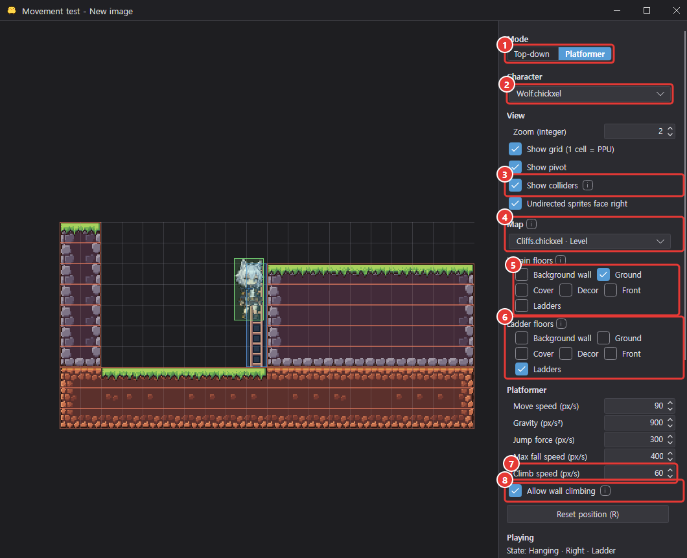
Movement test (F5) lets you move a character with the keyboard, as in a top-down or platformer game, using your document's tag animations.
Check the animation for each state, the pivot, body size and collisions before going to a game engine. Edits show up shortly after; click the view on the left to control it.
- ① Mode: Top-down walks in 8 directions; Platformer is a side view with running, jumping and climbing.
- ② Character: the document to move. It starts as the tab active when you opened the window; pick another open tab from the list.
- ③ Show colliders: draws the collision boxes of the character (green), terrain (red) and ladders (blue).
- ④ Map: lays down a tilemap layer from an open tab to move on. None (empty room) gives a practice area.
- ⑤ Terrain floors: tile cells on the chosen floors become solid walls and ground (several floors, hidden ones too).
- ⑥ Ladder floors: in platformer, cells on the chosen floors become ladders (terrain wins where they overlap).
- ⑦ Climb speed (px/s): how fast the character climbs ladders and walls.
- ⑧ Allow wall climbing: when on, the character can cling to terrain walls and climb.
Controls
| Key | What it does |
|---|---|
| WASD / arrow keys | Top-down: move in 8 directions. Platformer: move sideways and climb ladders and walls. |
| Space | Platformer jump; release early for a lower jump. With nothing to grab, W/↑ jump too. |
| R | Returns to the start (same as Reset position (R)). |
View and movement settings
| Setting | What it does |
|---|---|
| Zoom (integer) | View zoom (1–16×), set to suit the character at first. |
| Show grid (1 cell = PPU) | Draws a grid of PPU-sized cells (tile cells with a map). |
| Show pivot | Draws a cross at the pivot. |
| Undirected sprites face right | Treats animations without a direction (idle, run) as facing right. Turn off if they face left; they then flip when moving right. |
| Move speed (px/s), Gravity (px/s²), Jump force (px/s), Max fall speed (px/s) | Movement values for each mode. Press Enter or Esc in a field to return the keyboard to the view. |
Map and terrain
- Terrain floors start chosen by name (top-down: Walls, Objects, Water; platformer: Ground). Changing them returns the character to the start.
- Top-down collides with a box around the feet, platformer with the whole body box: the opaque area of idle's first frame.
- The start is the free spot (in platformer, footing) nearest the map center. With no terrain floor, a platformer character falls and a notice appears.
- With a tileset drawn by position, the character hides behind upright tiles and covers them in front. With floor order, it's drawn above all tiles.
Ladders and wall climbing
In platformer, ladders are ladder-floor cells and walls are terrain sides. Walls can be climbed only with ⑧ on.
| Action | Ladder | Wall |
|---|---|---|
| Grab | W/↑ in front of it, or S/↓ on top | In the air, the arrow toward the wall (on the ground, with W/↑) |
| Climb | W/S or ↑/↓; moving off sideways lets go. | W/S or ↑/↓ |
| Release the keys | Hangs in place. | Hangs in place. |
| Climb to the top | Stands on top (a platform you can land on only from above). | Pulls up onto the top if there is room. |
| Let go | Space jumps off; reaching the ground also lets go. | The opposite arrow drops off; Space kicks off the wall. |
Animation names in the movement test
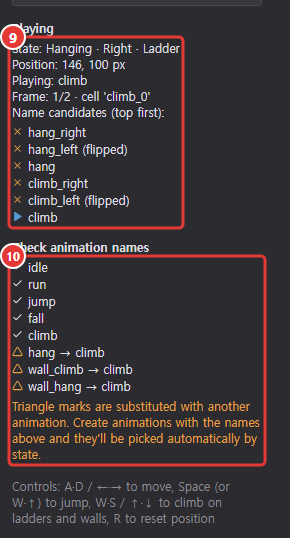
Check this when you want to know which animation plays while the character stands, runs or climbs. Name your animation tags with the set names, such as idle and run, and the movement test picks the right one.
- ⑨ Playing: the current state, the animation playing, and the names tried (play icon = used, X = missing)
- ⑩ Check animation names: for each name, a check means it exists, a triangle that another animation stands in, an X that it's missing
Names tried for each state
Use this table when naming tags. For each state the leftmost name is tried first, then the next.
| State | Names tried (first to last) |
|---|---|
| Top-down idle | idle (idle_down if there is none for the facing) |
| Top-down moving | walk → run → the idle names |
| Platformer idle | idle |
| Run | run → walk → idle |
| Jump (rising) | jump → fall → idle |
| Fall | fall → jump → idle |
| Climbing a ladder | climb → idle |
| Hanging on a ladder | hang → climb → idle |
| Climbing a wall | wall_climb → climb → idle |
| Hanging on a wall | wall_hang → wall_climb → hang → climb → idle |
Names with a direction
Add a direction to a name (walk_left) to use it when facing that way. If you drew only one side, the other side is flipped from it.
- Top-down:
_down,_up,_left,_right - Platformer:
_left,_right
Good to know
- If no name matches, the first animation plays; with no animations, the first cell shows as a still picture.
- Ladders add the names climb and hang; wall climbing adds wall_climb and wall_hang.
- If a climbing animation stands in for a missing hang, it stays paused while the character hangs.
- When flipped, the character turns around in place instead of jumping sideways.
- These names also appear in the suggestions when you name a tag.
Tool options
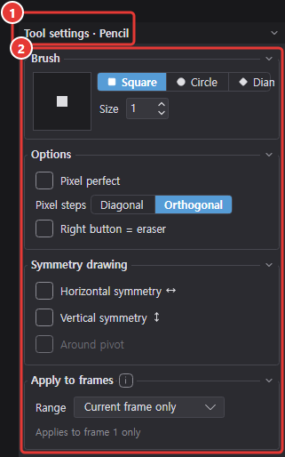
Change the current tool's settings below the preview on the right. ① The title row shows the tool's name and ② its settings appear below.
Per-tool settings are in the Tools chapter. Settings aren't undoable and are kept for the next launch (except whether symmetry is on).
For the Pivot tool (K) settings (5×5 buttons, X/Y, From current frame on), see Pivot.
Collapsing
Click ① the title row to collapse the whole panel. Groups such as Brush and Options also collapse from their titles; the state lasts while the app runs.
Settings of the selected effect
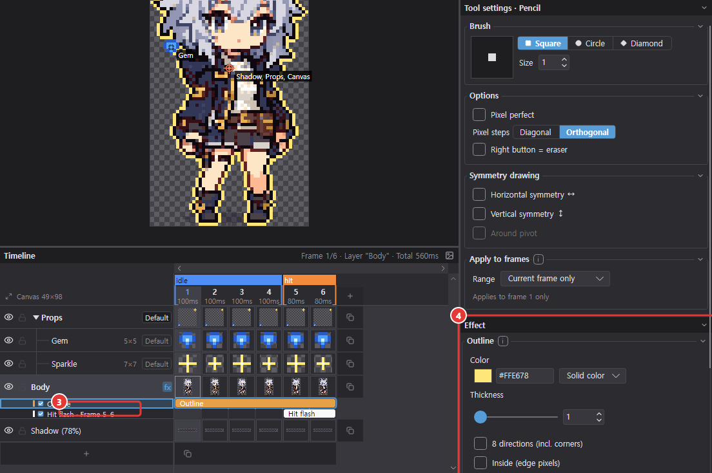
Select ③ one effect in the timeline to show ④ its settings below Tool options. Changes apply at once; quick consecutive edits are one undo step.
- Change the frame range, clipping, script or permanent application in the Effects dialog with Open in Effects dialog….
- Expand canvas… opens a window that grows the canvas to fit the effect's result.
- The group disappears when you select something else or several effects.
- If a script can't render, the group shows why as a warning.
During transform and resize modes
During transform, canvas size and transform whole layer, the panel shows that mode's fields and Apply/Cancel buttons instead.
Status bar
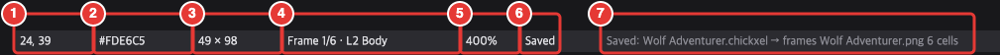
The bottom line of the window shows the current state in cells, with ⑦ the latest message at the right end. The cells are for reading only.
| Cell | What it shows |
|---|---|
| ① Cursor coordinates | The pixel under the cursor (x, y). Empty outside the canvas. |
| ② Color | The combined image's color under the cursor (HEX), or “Transparent”. |
| ③ Size | The canvas size (width × height). |
| ④ Frame/layer | Frame current/total · L number layer name, plus its size for a layer with its own size. |
| ⑤ Zoom | The canvas zoom (%). |
| ⑥ Save state | A dot and “Modified” with unsaved changes, otherwise “Saved”. |
| ⑦ Messages | The last action's result and hints (such as what's selected in the timeline and what Delete will do). It may end with “N unsaved files”. |
Progress for long tasks appears in a box in the middle of the window (see Export).
With the external AI connection on, an External AI cell appears at the right end and briefly highlights each tool another AI app calls (Using other AI apps).
Timeline
Use the timeline at the bottom of the window to select and edit frames, layers and cels, and to mark animation ranges with tags.
| Page | What it covers |
|---|---|
| Timeline | Reading layer rows, frame columns and the tag strip, adding frames and layers, compact view |
| Right-click menus | The menu for each place you right-click, layer opacity |
| Frame duration | Setting duration, FPS or speed in the frame duration dialog |
| Selecting in the timeline | Selecting frames, layers and cels by clicking, dragging and keyboard |
| Linked cels | Making several cels share one image, and unlinking them |
| Editing the timeline | Deleting, reordering, moving, copying and pasting, nesting layers |
| Tags | Naming frame ranges and playing tags |
Timeline
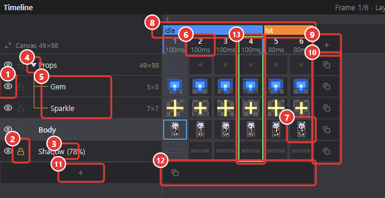
The timeline at the bottom of the window is where you see and pick your animation's frames and layers. Rows are layers, columns are frames, and each cell (a cel) is that layer's drawing in that frame.
The frame and layer you click become the current frame and layer you draw on in the canvas.
Layer rows
- ① Eye: shows or hides the layer.
- ② Lock: locks the layer so you can't draw on it.
- ③ Opacity: a percentage follows the name when it isn't 100%.
- ④ Triangle: collapses or expands the child layers.
- ⑤ Child layers: indented and joined by orange lines, with their own size next to the name.

- Alt+click an eye to show only that layer, or a lock to lock all the others. Alt+click again to undo it.
- fx: the layer has effects. Click it to expand or collapse its effect rows.
- Diamond badge: the layer's children use auto layout. Click it to open the auto layout settings.
- Skin chip: with two or more skins, the current skin's name follows the layer name. Click it for a menu to switch or manage skins (see the skin settings window).
- Small crown: the layer that represents the whole canvas's center point (canvas pivot; see Pivot).
- Grass-block icon: a tilemap layer.
- Below the sixth level, a depth number before the name replaces the lines.
Frame columns and durations
⑥ Each frame header shows its number and duration (ms), and each cel shows ⑦ a thumbnail. Double-click a number to open the frame duration dialog.
- Thumbnails show the drawing without effects, all frames cropped at the same scale so you can compare movement.
- A collapsed parent row's thumbnail combines it with its visible children.
- Orange diamond at a cel's top left: that frame has its own center point (pivot; see Pivot).
- The diamond always shows for layers with their own size, otherwise only on the current layer's row. Diamonds on frame headers appear only while you edit the canvas pivot.
Tag strip, canvas size chip and playback marker
- ⑧ The tag strip shows groups of frames as colored brackets (Tags).
- The canvas size chip in the top-left corner: click its icon for the canvas size mode (Ctrl+Alt+C).
- Click the chip's Canvas W×H text to edit the whole canvas's center point (canvas pivot) with the pivot tool. Click a layer name to edit layer pivots again.
- While the preview plays, the frame column being shown gets a ⑬ green outline.
- When effects take a while to compute, those thumbnails get a gray veil.
Adding frames and layers
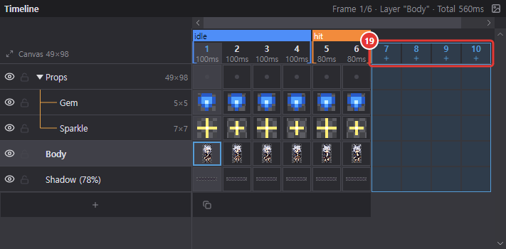
- ⑨ Plus after the last frame: adds an empty frame.
- ⑩ Copy below it: adds a copy of the last frame.
- ⑪ Name cell below the last layer: adds an empty layer at the bottom.
- ⑫ Frame area next to it: copies the bottom layer with its children.
- Drag ⑲ a button to the right to add as many as the cells you cover (Esc cancels).
- New frames go outside tags, so tags don't grow; copied linked cels join their original group.
Compact view and scrolling
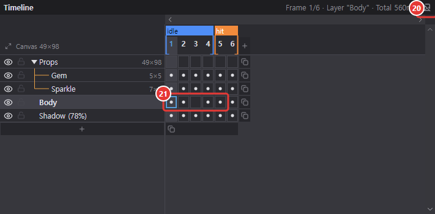
Switch off frame previews with ⑳ the image button at the right end of the title bar to make ㉑ the cels smaller, with only a white dot where there is art (on by default; remembered).
- Drag the border between layer names and frames to set the name width (140–600 px); double-click it to reset to 270 px. The width is remembered.
- The wheel scrolls layer rows; Shift+wheel or Ctrl+wheel scrolls frame columns. The horizontal scrollbar sits right below the title bar.
- Dragging a selection or a move to an edge scrolls automatically. Timeline cells can't be zoomed.
Right-click menus

To find what you can do with a frame, cel or layer, right-click it. The top of the menu shows ⑭ what's selected (for example, "Frames 1–3 selected").
By where you right-click
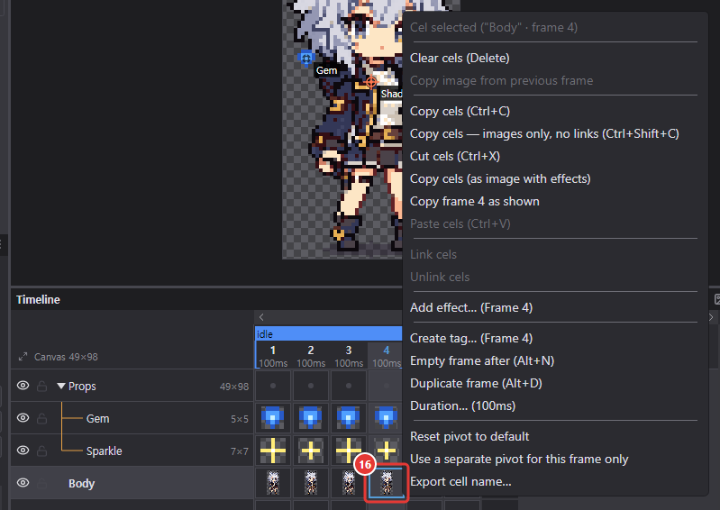

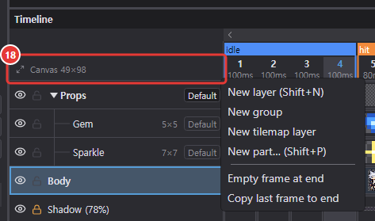
| Where you right-click | Main menu items |
|---|---|
| ⑮ Frame header | Create tag, Empty frame (Alt+N), Duplicate (Alt+D), Delete, Move forward/back, Duration…, Copy/Cut/Paste, Pivot, Export cell name… |
| ⑯ Cel | Clear, Copy, Cut and Paste cels, Copy image from previous frame, Copy as image, Link/Unlink cels, Add effect…, frame items |
| ⑰ Layer name | Rename, Opacity…, Effects…, Show/Lock, Canvas pivot representative, New (layer, empty, tilemap, child), Duplicate, Move out of parent, Move up/down, Merge down, Delete |
| ⑱ Empty area (such as the top-left cell) | New layer (Shift+N), New empty layer (Ctrl+Shift+N), New tilemap layer (Alt+Shift+N), New child layer… (Shift+P), Empty frame at end, Copy last frame to end |
| Tag | Tag properties…, Play this tag, Delete (Tags) |
| Effect row | Effect settings…, change the range, Turn on/off, Delete, Apply permanently, Expand canvas…, Copy/Paste (see effect rows) |
Good to know
- The layer menu gains items depending on the layer: expand/collapse effect rows, layer size and position, collapse children and auto layout, convert tilemap to layers, and skin items (see Layer tree and skins).
- Merge down works only when both layers are normal layers with a single skin.
- The pivot and cell name items at the end of the header and cel menus apply only to the right-clicked frame, not the whole selection.
- The pivot items change the center point you're editing now (the current layer's or the canvas pivot).
- Items that don't apply are grayed out.
Layer opacity

To make a layer semi-transparent, choose Opacity… in the layer menu. Use the slider or a number, in % (0–100) or 0–255. The 100%, 75%, 50% and 25% buttons set common values in one click.
Frame duration

The frame duration dialog sets how long the selected frames are shown. Double-click a frame number, or choose Duration… from the header or cel right-click menu.
Methods
The top shows how many frames are selected. Pick a method under Set by and enter one value (the info badge at the end of the row explains each).
| Method | What it does |
|---|---|
| Duration (ms) | Gives every selected frame that duration (1–60000; quick picks 50, 80, 100, 120, 150, 200). |
| FPS (frames per second) | Same duration for all (duration = 1 second ÷ FPS). |
| Duration (seconds) | Same duration for all, in seconds. |
| Game frames (60 fps) | Same duration for all, as a number of frames in a 60 fps game. |
| Speed multiplier | Each current duration ÷ the speed (2× is twice as fast). Keeps the differences between frames. |
| Total duration | Sets the total of the selected durations to that many ms, split in the current proportions. |
Good to know
- The Result group below shows each frame's new duration, fps and game frames and the total length in seconds, before → after.
- Switching the method carries the current result over as the new method's value (80 ms becomes 12.5 FPS). The chosen method is remembered while the app runs.
- Frames in a new project are 100 ms, and newly added frames take the duration of the frame before them.
Selecting in the timeline
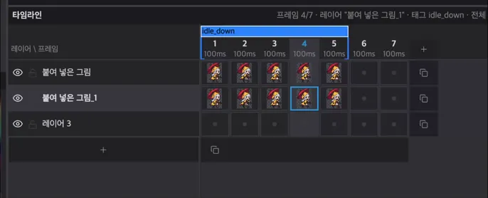
In the timeline you select one kind of thing at a time (frames, layers, cels or effects). What you click becomes the current frame and layer, and the selected kind decides what Delete, copy and paste do.
How to select
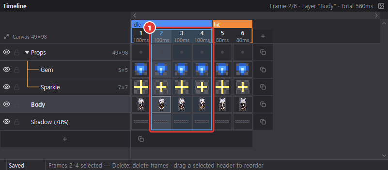
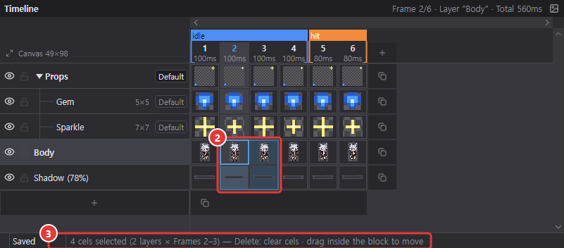
Click a ① frame header to select that frame, a layer name for that layer, or a ② cel for that cell; the selection gets a blue border. Click an effect in an expanded effect row to select that effect.
| Action | Result |
|---|---|
| Drag | Selects everything the rectangle touches. |
| Shift+click | Extends the selection to a range up to the clicked item. |
| Ctrl (macOS ⌘)+click | Adds or removes one item at a time, even when not adjacent. Pressing inside selected cels with Ctrl held and dragging copies them instead (see Editing the timeline). |
| Click an empty area | Clears the selection. |
| Click the eye, lock, collapse triangle or fx | Only does the icon's own job; doesn't select. Alt+clicking an eye or lock does select that layer. |
The ③ status bar shows what's selected and what Delete will do.
Keyboard
After clicking the timeline, ←→ go to the adjacent frame and ↑↓ to the adjacent layer (stopping at the first and last). Moving left/right with frames selected, or up/down with layers selected, keeps that kind; moving the other way switches to cel selection. Shift+arrow extends the selection.
F2 = rename the current layer, Delete = delete what is selected (also Backspace on macOS; if the canvas has a selection, only its pixels are cleared), Esc = cancel a drag. For frame navigation shortcuts see Timeline shortcuts.
How multiple selections look

④ The clicked anchor has a dark border; ⑤ the neighboring and ⑥ separately selected cels have pale blue backgrounds.
Touching selected cels share one faint border. Cels picked across gaps with Ctrl/⌘+click can't be copied or cut; the status bar explains why.
Linked cels

Use cel links when the same drawing repeats across frames and you want editing one cel to change them all. Select the cels and choose Link cels from the right-click menu.
Each cel in ① the link group has a chain; the same-color strip continues under adjacent linked cels.
Linking cels

Right-click ② chain-marked cels to use ③ Link cels or Unlink cels.
- You can include cels that aren't next to each other; each layer gets its own group.
- The group takes the drawing of the cel you clicked (dark border). If that cel is empty, it uses an already linked cel in the selection, or the first cel with a drawing.
- Drawing, moving or resizing in any cel changes the whole group (one undo step).
- Each group gets its own strip color (the next color not yet used in that row).
- The AI can also link, unlink and recolor groups (
link_cels,unlink_cels,set_link_color).
Unlinking and what breaks a link
- Unlink cels gives each selected cel its own copy of the drawing so you can edit it separately.
- Pressing Delete on a linked cel keeps the link and clears the whole group.
- Pasting and Copy image from previous frame take the cel out of its group. To copy without links, use Ctrl+Shift+C (see Editing the timeline).
- Unlinking a cel that showed an effect's end look through its link puts that look into its drawing (except moved positions).
Links on parent layers and skins
- Links are separate for each layer row. Linking a parent's row doesn't link its children's cels, so select their cels too.
- A new blank skin copies only the link frames and colors; a skin made with Duplicate current art copies the drawing and links. After that, each skin's links are separate.
Editing the timeline

See this page when you want to reorder, move or copy frames, layers or cels. Select them in the timeline first, then drag or use the shortcuts.


| To do this | How |
|---|---|
| Delete | Select, then Delete. Cels only lose their drawing. |
| Reorder | Drag an already selected frame header or layer name. |
| Move or copy a block of cels | ① Press inside the selected cels and drag to move them; hold Ctrl when you drop to copy. |
| Copy and paste | Ctrl+C or Ctrl+X, then Ctrl+V. ② They're in the right-click menu too. |
| Bring in the previous frame's image | Right-click an ③ empty cel → ④ “Copy image from previous frame” |
| Change duration or name | Double-click a frame number = frame duration; double-click a layer name or F2 = rename |
Good to know
- Every edit is a single undo step. Press Esc to cancel while dragging.
- You can't delete every frame or layer, and layers are deleted with their children.
- A dragged layer moves within the same parent. Every 20 px you drag left takes it one level out of its parent.
- Holding Alt when you drop copies too. Starting the drag with Ctrl held copies from the start.
- Cels can't move to rows of a different size or type.
- When pasting, cels overwrite starting at the clicked cell, frames go after the selected frame, and layers go above the original.
- Cels picked across gaps can't be copied.
- Cels copied from a document with a different canvas size also paste into normal layers, aligned to the top left; parts past the canvas are kept as outside-canvas artwork. Layers with their own size need the same size.
- New layers made by copying get their trailing number raised by 1 (
item_1→item_2, or_1if there's no number). Duplicate in the layer menu does the same.
Linked copies and images-only copies
Copying in the timeline copies cel links too.
- Pasted into the same row, cels join the original link group and take its color.
- Pasted into another row or document, cels from one group form a new group (a single cel is pasted unlinked).
- Dragging a block of cels to move or copy it works the same way.
To copy only the images without links, press Ctrl+Shift+C or use the images only, no links copy items in the cel and frame right-click menus. Outside the timeline (for example on the canvas) it works like a regular copy.
Copying cels as an image
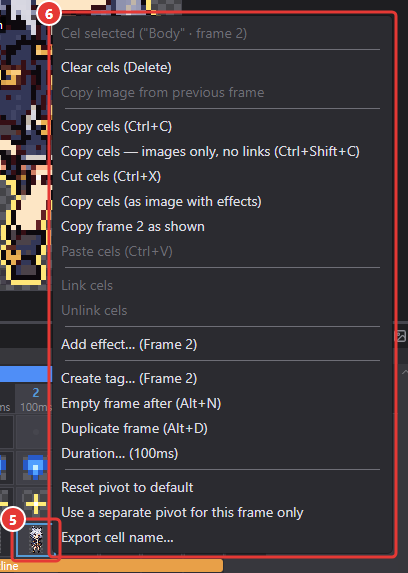
Right-click ⑤ a cel to see ⑥ commands to copy the selected cels with effects, or the entire frame, as an image.
Copy cels as image (with effects) copies the selected cels as a canvas-sized image, as shown with effects, opacity and current skins (hidden layers excluded). Copy frame N as image copies the whole composited frame.
Nesting layers and Add skin
- To put a layer inside another, drag its name, hold Shift and drop it on that layer's row. An indented blue gap shows where it will land, and a not-allowed cursor shows where you can't drop.
- To take it out, drag left or right-click and choose Move out of parent. The drawing stays in place on the canvas; a canvas-sized layer you nest shrinks to fit its drawing.
- The layer's right-click Add skin adds a blank skin or one copied from the current art; with children, With children… makes a same-named skin on all descendants too (see Layer tree and Skins).
Tags
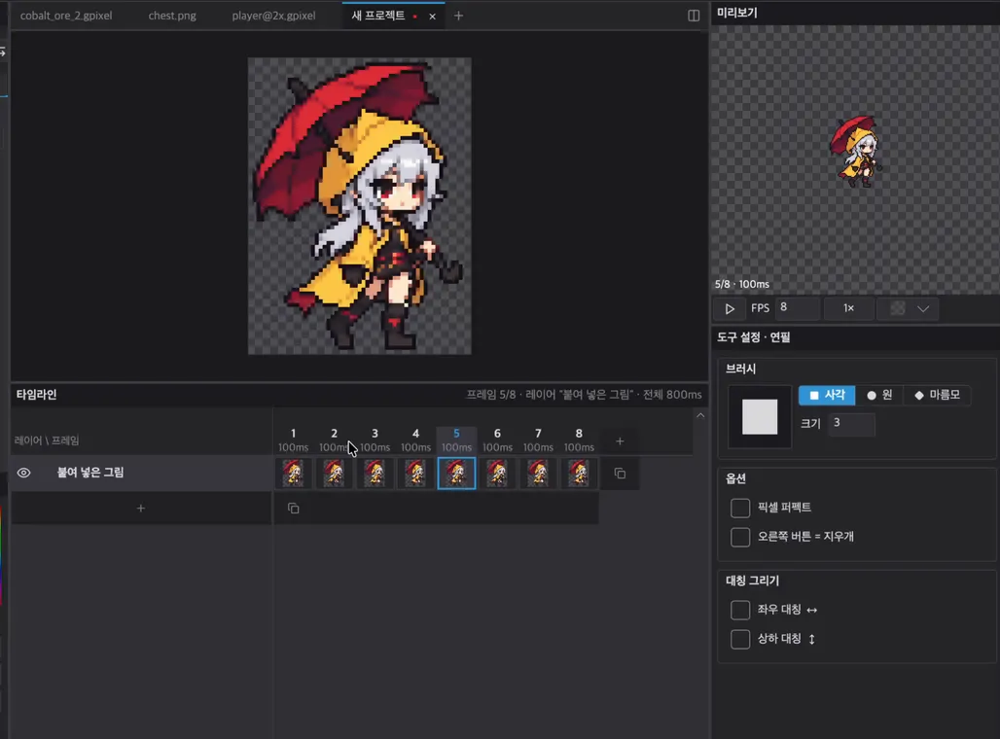
A tag is a named frame range that groups an animation (for example idle or run). Tags set the preview playback range, the GIF range, and export cell names and file splits.
Creating a tag
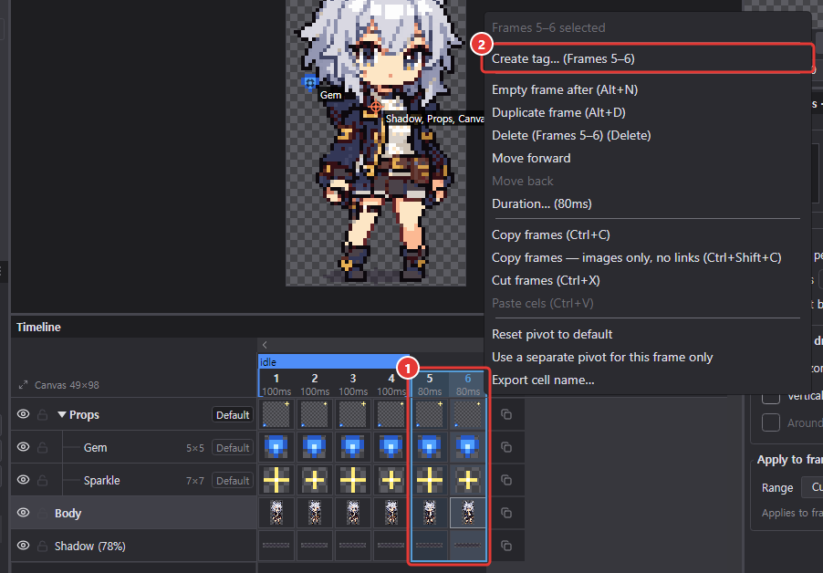

① Select a range of frames and choose ② Create tag from the right-click menu. In the dialog, set the ③ name, ④ frame range, ⑤ playback direction and loop, and ⑥ color.
| Field | Meaning (initial value) |
|---|---|
| ③ Name | The tag name; it can't be empty or match another tag. Names such as idle_down, walk_left, run, jump and fall are suggested (initially the first unused one). |
| ④ Frames | Start and end frame (inclusive); the end can't come before the start (initially the selected range). |
| ⑤ Direction | Forward, Reverse or Ping-pong (bounces back from the end, playing each end frame once) (initially Forward). |
| ⑤ Loop | When off, the preview plays the tag once and stops (initially on). |
| ⑥ Color | The tag strip color. Click the swatch or type a HEX value (initially blue, orange, green, red, purple, teal, yellow and gray in turn). |
Editing and playing tags

- Hover near either inner end of a ⑦ tag box until the cursor becomes
↔, then drag to change the range. - Right-click a tag for the ⑧ menu with Tag properties… (the same dialog as when creating; double-clicking the tag also opens it), Play this tag and Delete.
- Clicking a tag selects it (white outline), and the preview plays that tag in its direction (a tag with Loop off plays once and stops). Clicking the frame area outside tags (headers, cels, effect rows or empty space on the tag strip) deselects it, and the preview loops all frames again.
Tag names are used for By tag cell names and per-tag files in Export, and for the range in GIF export. Tags are saved in the .chickxel file.
Layer effects
Add effects such as outlines, shadows, flashes and shakes to a layer. Effects don't change the cel pixels, so you can turn them off, change or remove them at any time.
| Page | What it covers |
|---|---|
| Layer effects | The basic workflow, stacking order, applying permanently |
| Effects dialog | Parts of the effects dialog, saving a preset, OK and Cancel |
| Frames and canvas in the effects dialog | Extending and deleting frames, expanding the canvas |
| Effect list panel | Adding effects by drag and drop, official effects |
| Look and color effects | Outline, Shadow, Text and other effects that look the same on every frame, with their settings |
| Animated effects | Explode, Shake, Hit flash and other effects that change over their range, with their settings |
| Effect colors and clipping | Solid or gradient colors, clipping to the effect above |
| Effect range and common settings | Effect range, speed and repeat, moving the pivot along, keeping the end look, effect padding |
| Effect rows in the timeline | Adding effects in the timeline, dragging ranges, moving and copying effects |
| Effect presets | Saving several effects with their values and inserting them in one go |
| Script effects · Script API | Using and editing effects written in JavaScript, allowing them to run, the rules for writing scripts |
| Effect Maker | Making, previewing, checking and publishing new script effects |
| Asset Manager · Publish online | Getting effects from the Store, exchanging files, publishing your own effects |
Layer effects
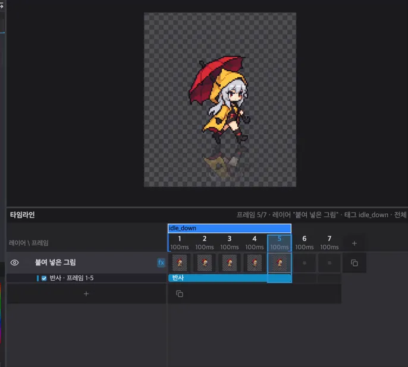
Use layer effects when you want to add outlines, shadows, flashes or shakes without changing your drawing. To start, right-click a layer name in the timeline and choose Effects….
Effects only sit on top of the layer, so you can turn them off, change or delete them at any time, and they also apply to anything you draw later.
Basic workflow
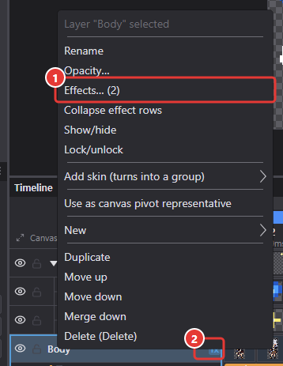
- In the timeline, right-click a layer name and choose ① Effects…. To cover only some frames, select those cels and choose Add effect… from the right-click menu.
- On the Effects tab of the effects dialog, double-click an effect or drag it into the effect list in the middle.
- Change values while watching the before/after preview, and drag in the frame strip below it to choose the frames the effect covers.
- Click OK. The layer name gets ② fx, and each effect gets an effect row in the timeline.
To skip the dialog, drag an effect from the effect list panel onto a timeline cel (it goes in with default settings). Drag its range in the timeline effect row.
Order of effects
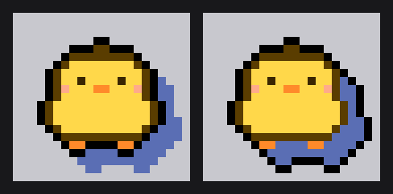
Effects apply from the top of the list down, each on top of the result so far, so changing the order changes the result (see the picture).
- Change the order with Up and Down in the effects dialog, or by dragging effect names in the timeline.
- Clear an effect's checkbox to stop drawing it without deleting it.
- Afterimage is always drawn last, wherever it is in the list.
- To apply an effect only to what the effect above drew, turn on clipping (for example, rainbow colors on the outline only).
Layers with children
For a layer with child layers, pick the target in the common settings. This layer only applies to that layer's own drawing; Combined with children applies around the shape combined with its children (frame sheets only).
Applying permanently
Use Apply effect permanently when you want to turn an effect into real pixels and edit it like a drawing. Use the Apply permanently button in the effects dialog or the effect box's right-click menu; enabled effects above it become part of the drawing too.
- Switch a Combined with children effect to This layer only before applying it permanently. Effects on locked layers can't be applied permanently.
- Duplicating a layer also copies its effects, and Merge down turns the upper layer's effects into part of the drawing.
Where effects show
- The canvas shows effects when Show effects on canvas is on; preview, frame sheets and layer atlases always include them.
- While a layer with its own size is selected, the canvas shows that layer's and its parents' effects.
- Timeline thumbnails show no effects (except cels with only a text effect and no drawing).
- Layer atlases include only effects set to This layer only, and each sprite grows by the size of outlines or shadows.
- Effects are drawn pixel by pixel, with no blur.
Effects this version doesn't know
Effects added in a newer Chickxel aren't drawn in this version, but saving doesn't remove them. The effect list shows them as a dimmed Unknown effect · type ID row that you can only reorder or delete.
Effects dialog
Open this dialog when you want to add effects, change their settings and preview the result. Right-click a layer name and choose Effects….
Other ways to open it: select cels and choose Add effect… (adds to those frames only), double-click an effect box in the timeline, or click Open in Effects… in the tool options dock.
Parts of the dialog

| Part | What it does |
|---|---|
| ⑥ Effects tab | The effects you can add. Double-click one to add it at the end of the list, or drag it into the effect list to place it. |
| Get more · Effect Maker · Check all effects for updates | Open the store · open the Effect Maker · check received effects for new versions (Update all installs them) |
| ⑦ Presets tab | Effect presets (bundles of effects). Insert them the same way as on the Effects tab. |
| ⑧ Add range | The frames new effects will cover: All frames or a start–end range. |
| ⑨ Effect list | This layer's effects in the order they apply. Use the checkbox to turn one on or off, and the buttons below to delete, reorder or apply permanently. |
| ⑩ Settings | The selected effect's settings and the common settings. Hover an i mark for an explanation. |
| ⑪ Before/after preview | The current frame before and after effects. Click it for a larger view (Space play, ←/→ frames, Esc close). |
| ⑫ Frame strip | Click a cell to view that frame, or drag to choose the frames the selected effect covers. |
| ⑬ Expand canvas… | Grows the canvas when effects get cut off at its edge (see Expanding the canvas). |
| ⑭ Extend frames | Adds frames to fit the effect (see Extend frames). |
Good to know
- The Effects tab lists official effects, then Text, then received effects, then your own. Click the question mark at a tile's top right for a description.
- When an effect from the Store has a new version, a blue Update appears below the ⑨ list. It switches to the new version and keeps your setting values.
- A script effect that can't draw gets a warning icon.
Saving the list as a preset

⑮ Save Current Effects as Preset at the top of the ⑦ Presets tab saves the whole effect list, with its values, as an effect preset.
OK and Cancel
Pressing Enter in a setting doesn't close the dialog. Changes apply only when you click OK, and everything you changed is a single undo step. Cancel or closing the window restores the original.
Frames and canvas in the effects dialog
See this page when you want to add or delete animation frames for an effect, or grow the canvas when an effect gets cut off. Everything is applied together when you click OK in the effects dialog.
Extend frames
For example, to put a 12-frame explosion on a 4-frame drawing, use Extend frames in the common settings to add frames to the effect's range.
- Ways to fill the new cells: with original frames · same ratio · first frame · last frame · repeat
- Dragging the range end past the last cell of the frame strip also adds frames.
- Added cels share the drawing of their originals (linked cels). Unlink a cel to draw it separately.
Deleting frames in the effects dialog

Drag the dashed trash cell (㉑) at the end of the frame strip to the left: the frames from there to the end turn red, and letting go marks them for deletion. The first frame can't be deleted.
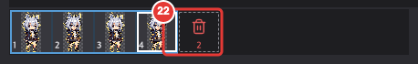
- ㉒ The red number on the trash cell is how many frames you deleted. Click it without dragging to bring back the last deletion.
- While frames are marked, the preview shows the result after deletion, and effects only in those frames appear off.
- If you then add frames, the deleted frames can't be brought back.
- Frames are really removed only when you click OK, and tags and effect ranges shrink with them. Cancel keeps everything.
Expanding the canvas
Parts of an effect that go past the canvas are cut off (they're dimmed in the preview). To grow the canvas:
- Click Expand canvas… at the top of the common settings.
- Choose how to expand (minimal / keep aspect / keep center) and check the new size.
- Click Expand; the new size appears next to the button (click X to cancel).
- Click OK in the effects dialog to grow the canvas. The drawing isn't scaled; only the space around it grows.
To grow just the canvas for one effect, use Expand canvas… in the effect row's right-click menu or the tool options dock. There, Expand grows it right away.
When effects take a while
On large images where effects take a while, cells being redrawn and the preview get a gray veil, and playback waits until they're ready. While you drag a value, everything is redrawn when you let go.
Effect list panel

The effect list panel lets you drag effects onto timeline cels without opening the effects dialog. Click the ① Effects button (sparkle icon) on the toolbar to open ② the panel in the leftmost column.
Adding by drag and drop
- While you drag a row over the timeline, ③ the target cel turns blue and the canvas and preview show the result right away. Inside a selected block of cels, the effect covers that block's frames.
- Drop to add it with default settings (one undo step). Moving off the cels restores the preview.
- Double-click a row to add it to the current layer at the current cel. The status bar shows where it went; drag its range in the effect row.
Finding effects
- Like the effects dialog, it has Effects and Presets tabs, with a preview and name on each row (animated effects play).
- Type in the Search effects box above the tabs to filter both tabs by name, description, author and store name.
- Right-click a row and choose Add to favorites to move it to the Favorites group at the top of the tab; it stays there on the next launch. Remove from favorites undoes it.
- At the bottom, the blue Get more opens the website store and the green Effect Maker opens the Effect Maker.
- With the file browser on too, the column splits into files (top) and effects (bottom). What you leave open is kept for the next launch.
Official effects
The effects you have from the start are the 23 official effects and Text. Official effects are script effects the app installs on first run, and they update automatically when the app contains a newer version. Bring back deleted official effects with Restore default effects in the Asset Manager.
What each effect does and its settings are listed under Look and color effects and Animated effects. In the effects dialog, an effect tile's question mark also shows its description.
Look and color effects
Use these effects when you want to add an outline or shadow, or change an image's colors. They look the same on every frame.
Check the table below when choosing an effect or looking up what a setting does. Every color setting can be a solid color or a gradient (see Effect colors).
| Effect | What it does | Main settings |
|---|---|---|
| Outline | Draws a line around the image or on its inner edge. Shade from neighbors uses a darker version of the touching color instead of black. | Color, Thickness, 8 directions (incl. corners), Inside (edge pixels), Hide original (outline only), Color mode, Shade % |
| Shadow | Casts a shadow of the image's shape behind it, offset to the side. | Color (semi-transparent black by default), X/Y offset, Dither |
| Edge light · shade | Lights the edge facing the light and darkens the opposite edge for depth. | Light direction, Range, Light color, Shade color |
| Color overlay | Tints visible pixels with a color or gradient. At Amount 100% the image becomes a one-color silhouette. | Color, Amount, Blend (Overlay / Multiply / Screen) |
| Inner glow | Makes a glowing edge by blending a color inward from the edges. | Color, Thickness, Strength, Weaker toward the inside, Blend (Screen by default) |
| Palette swap | Swaps chosen colors for others (for example, red clothes → blue). | Source → target (color pair list, up to 64 pairs), Tolerance 0–255 |
| Color adjustment | Turns the image grayscale or sepia, or adjusts hue, brightness, contrast or saturation. | Style, Amount, Hue, Brightness/contrast, Saturation |
| Reflection | Flips the image and reflects it below (water, floor), above or to the side (wall), fading out. | Direction, Gap, Height %, Start and End opacity, Fade with dithering, Tint, Ripple |
| Text | Writes text over the image. The Text tool (T) creates a new layer with this effect. | Text (up to 1000 characters), Font, Bold/italic, Size, Color, Position, Box size (0 = auto), Scale, Letter and line spacing, Alignment, Smooth, Typewriter (one letter at a time) |
Good to know
- Dither: instead of semi-transparency, dots are spaced out so the area looks lighter. It gives a pixel-art look.
- Text uses the bundled pixel fonts or fonts you added. Letters outside the image are cut off.
- On an empty layer the Text effect works like a text layer; Merge down or applying it permanently turns it into pixels.
Outline and shadow settings compared
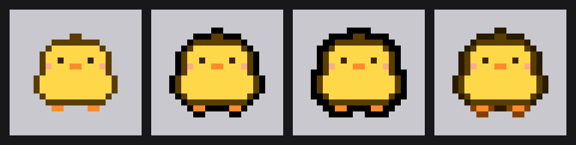
The default outline only checks above, below and to the sides, so corners look open. 8 directions fills the corners too, and Shade from neighbors is softer than black.
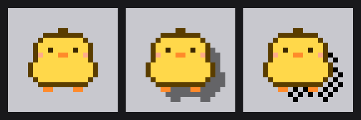
Without dither the shadow is semi-transparent; with dither it becomes a checkerboard of dots (25% and 75% are sparser or denser).
Animated effects
Use these effects for animated touches such as a hit, an explosion or a shake; they change from frame to frame. The more frames an effect covers, the slower it moves.
Pick an effect from the tables below, then tune its motion with the common Speed and Repeat settings (see common settings). Blink and Afterimage don't have these.
Flashing, appearing and changing colors
| Effect | What it does | Main settings |
|---|---|---|
| Hit flash | The image flashes one color, as if hit. | Color, Strength, Count, Shape (Solid / Fade out) |
| Blink | Repeatedly shows and hides (for example to show invincibility). | Interval, Visible and Hidden frames, Count, Hide style (transparent / translucent / dots), Opacity |
| Appear / disappear | The image gradually appears or disappears. | Disappear (off = appear), Style (opacity / dots / wipe / pixel scatter), Wipe direction, Edge, Seed |
| Fade in · out | The whole image gradually fades out or in. | Fade out (off = fade in) |
| Light sweep | A band of light sweeps across the image (the glint on coins or buttons). | Angle, Width, Strength, Color, Softness |
| Color cycle | Cycles through chosen colors so they flow like water, fire or neon. | Colors (2–8), Steps, Reverse |
| Hologram | Tints the image like a sci-fi hologram and adds scan lines, blinking and glitchy shifts. | Color and strength, Scanlines, Bright band, Opacity, Dither, Blink, Glitch, RGB split, Edge glow, Seed |
Moving
| Effect | What it does | Main settings |
|---|---|---|
| Shake | The whole image shakes. | Direction (Horizontal / Vertical / Both), Strength, Count, Decay (weaker toward the end), Regular, Seed |
| Bob | Floats gently up and down (or side to side) — floating items, idle motion. | Height, Count, Direction |
| Squash & stretch | Squashes and stretches like jelly, then returns to its shape. | Horizontal and Vertical strength, Bounce, Anchor (feet fixed / center / pivot), Upward first |
| Rotate | Rotates the image around an anchor, keeping pixel lines clean without adding new colors. | Angle (360 = one turn, negative = counterclockwise), Pivot (feet fixed / center / pivot) |
| Afterimage | Leaves faint copies of earlier frames behind for a sense of speed. | Count, Spacing (frames), Opacity, Tint |
Breaking apart and spreading
| Effect | What it does | Main settings |
|---|---|---|
| Explode | Pixels shatter and fly outward as they disappear. | Fly distance, Center, Random variation, Gravity, Fragment size, Vanish, Flash, Keep original, Seed |
| Melt | Pixels drip down, each column at its own speed. | Distance, Irregularity, Drip (leaves trails), Vanish, Seed |
| Shockwave ring | A pixel ring spreads out from the center. | Center, Max radius, Thickness, Color, Fade out, Behind image |
Good to know
- Seed: a number that fixes a random look. Each click of the dice button gives another look, and the same seed always gives the same look.
- Afterimage is drawn last, after all other effects.
- When Shake or Bob moves the image, later effects' center point (pivot) can follow it (see Move pivot along).
Effect colors and clipping
See this page when you want an effect in gradient colors such as a rainbow, or want an effect to apply only to what the effect before it drew, such as color on the outline only.
Picking colors
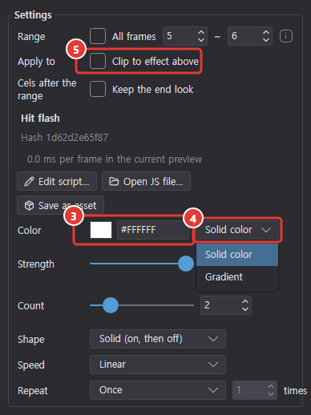
- Clicking a ③ color swatch opens a color popup with the same modes as the main color editor, the palette, recent colors and buttons to pick from the image or screen; the canvas updates as you pick (see Color pickers in other windows).
- Each color setting can be a ④ solid color / gradient. Gradient editing, color space and presets work as in the gradient tool.

Gradient modes
Choose the shape the gradient paints in. Static stays still; Animated flows or turns over the effect range.
| Mode | How it paints |
|---|---|
| Linear (static) · Linear (animated) | Paints straight bands along the angle. |
| Radial (static) · Radial (animated) | Paints rings spreading from the center. |
| Square (static) · Square (animated) | Paints square bands spreading from the center (tilted by the angle). |
| Angular (static) · Angular (animated) | Colors change going around the center (angle = starting point). |
| Whole sprite, one color (over time) | The whole image is one color per frame and changes color over the effect range. |
- Depending on the shape, set the Direction, angle and Repeats/rotations (1–16).
- Even an effect that doesn't move, such as Outline, changes color with an animated gradient.
- Whole sprite, one color (over time) also has speed and ping-pong settings.
Clipping

Turn on ⑤ Apply to → Clip to effect above and the effect applies only to what the effect just before it drew. Above, the color overlay with clipping off covers the whole image (left); with it on, only the outline is colored (right).

A clipped effect can still spread beyond those pixels. A clipped shadow becomes a shadow of the outline alone, drawn over the picture (right).
- Several clipped effects in a row build on each other (for example, Outline → Shadow → Color overlay colors the outline and its shadow together).
- If the effect before is off or not on that frame, the clipped effect isn't shown either.
- You can't clip to Afterimage, and clipping needs an effect before it.
- Clipped to an outline with Hide original (outline only) on, an effect applies to the line only.
Effect range and common settings
See this page when you want to set which frames an effect covers, how fast it moves and what remains after it ends. These are the common rows at the bottom of the effect settings.
| Row | Shown for | What it sets |
|---|---|---|
| Apply to | All effects | Whether to apply only to what the effect before drew (clipping) |
| Speed · Repeat | Animated effects (except Blink and Afterimage) | How the motion speeds up and slows down and repeats |
| Later effects: Move pivot along | Effects that move the image (Shake, Bob and so on) | Whether later effects' center point (pivot) moves too |
| Cels after the range: Keep the end look | Animated effects (when the range isn't All frames) | Whether the final look stays after the range ends |
The effect group in the tool options dock shows some of these rows too (range and clipping only in the effects dialog).
Effect range
The effect range is the frames an effect covers: All frames (including frames added later) or a start–end range.
- Pick the range for new effects with Add range in the effects dialog.
- Change an added effect's range by dragging in the dialog's frame strip or its timeline effect box.
- Inserting or deleting frames grows or shrinks the range like a tag, and deleting all its frames deletes the effect.
Speed and repeat
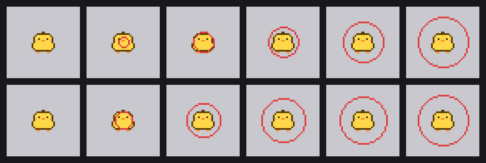
- Speed: Fast start / Linear / Slow start / Slow start and end. Fast start moves a lot at first and almost stops at the end (see the picture).
- Repeat: Once / Loop (start over) / Ping-pong (go and come back), 1–8 times.
- Defaults differ by effect (for example, Explode and Shockwave ring use Fast start).
Later effects, Cels after the range and Expand canvas
For an effect that moves the image, choose ① whether later effects' center point (pivot) moves with it; for an animated effect, choose ② whether its final look stays after it ends (see below).
③ If an effect gets cut off at the canvas edge, use this button to grow the canvas (see Expanding the canvas).
Move pivot along

With Rotate after Shake, ⑤ Move pivot along (on by default) makes the rotation center follow the shaking image. Turn it off to shake only the image and keep the rotation center in place.
- The row appears only for effects that report movement: the official Shake and Bob (1.0.2 or later) and script effects with
ctx.movePivotin the source that are allowed to run. - The moved center is used by later effects that work around a center point, such as Rotate and Squash & stretch.
- With a layer that has its own size selected, the pivot marker follows the moved position, and the original spot is shown as a small circle and dotted line.
Keep the end look
Turn on Cels after the range: Keep the end look when you want an animated effect's final look to stay after it ends. For example, a throw over frames 1–18 stays landed on frame 19. The timeline shows ⑥ a faint tail.
- Cels after the range that are linked to its last cel look exactly like it.
- Unlinked cels keep only the moved position, and their tail is fainter.
- With Move pivot along on, later effects' centers and the pivot marker follow the final position too.
- It's unavailable when the range is All frames.
- Unlinking such a cel puts the held look into its drawing.
Effect padding
Effects that draw outside the image, such as Outline, Shadow and Explode, reserve extra space (padding) around it. When exported to a layer atlas, each sprite grows by this padding. Effects that move the image widen it automatically by the distance moved.
Effect rows in the timeline
Each effect gets a thin effect row under its layer. Without opening the effects dialog you can add effects, change their ranges, move them to other layers and copy them.

⑯ Each effect row has the on/off checkbox and effect name on the left and a ⑰ rounded effect box spanning the frames it applies to. Click fx in the layer name cell to collapse or expand that layer's effect rows.
Adding an effect to selected cels

Select cels and choose ⑱ Add effect… from the right-click menu to open the effects dialog with Add range set to those frames.
You can also drag a row from the effect list panel onto a timeline cel to add it with default settings.
Changing by dragging
- Drag either end of a box to change its range, or drag the body to move the whole range. Double-click a box to open the effects dialog.
- Drag an effect name up or down to reorder it, or drop it on another layer's row to move it to that layer. Select and press Delete to delete, Ctrl+C/V to copy.
- Effect ranges follow frame insertions and deletions like tags (see Effect range and common settings).
Right-click menus


Right-click ⑲ an effect box for the menu below. Right-clicking an empty cell outside the box adds ⑳ the extend and add-copies items.
| Menu item | What it does |
|---|---|
| Effect settings… | Opens the effects dialog with that effect selected (same as double-clicking the box). |
| To all frames · This frame only · From this frame to end · From start to this frame | Changes the effect range relative to the right-clicked frame. |
| On / Off | Turns the effect on or off without deleting it. |
| Delete | Deletes the effect (Delete). |
| Apply effect permanently | Bakes the effect into the cel pixels; enabled effects above it are baked too ("including N effects above"). |
| Expand canvas… | Opens a small window that grows the canvas to fit that effect's result (see Expanding the canvas). |
| Copy effect · Paste effect | Copies the effect and pastes it onto the current layer (Ctrl+C/V). |
| ⑳ Extend to here | Empty cells outside the box only: extends the effect range to the right-clicked frame. |
| ⑳ Add copies from here | Empty cells outside the box only: adds a copy of the effect from the right-clicked frame to the end. |
Extending past the end
Drag the right end of an effect box past the last frame and ㉑ chain-marked cells appear. Drop it to add that many frames linked to the last frame; the effect's range and tags or other effects reaching the last frame grow too (one undo step).
Effect presets
Use effect presets when you want to save a combination you use often, such as outline + shadow, and insert it into other layers or projects in one go. Save and insert them on the Presets tab of the effects dialog.
Presets are saved on this computer and can be shared as asset files. To publish an effect online, make it a script effect in the Effect Maker.
Basic workflow
- Build the effect list you want in the effects dialog.
- Click Save Current Effects as Preset at the top of the Presets tab, choose a name and preview chick, and save.
- In the effects dialog of another layer or project, double-click the preset on the Presets tab or drag it into the effect list.
- To change the whole bundle with a few values, set up parameters (see Setting parameters below).
Presets tab

- Build an effect list in the effects dialog and click ① Save Current Effects as Preset to open the save window; saving makes it ② one of your presets.
- ③ Received presets, downloaded with the Asset Manager or imported from asset files, show on the same tab.
- Inserted presets are copies, so they stay in the project even if you change or delete the original preset.
- Right-click one of your presets for Rename, Edit parameters, Delete and Show in Asset Manager. To change a received preset, make your own copy with Copy to My Assets in the Asset Manager.
Saving a preset

Enter ④ a name (it starts as the first effect's name). If a preset with that name exists, you're asked whether to overwrite it.
- Under ⑤ Preview chick, pick one of 20 chicks (chick 1 by default). Exporting as an asset file makes the preview with this chick.
- None draws only the effects, without a chick (for effects that draw on their own, such as rain or snow).
Setting parameters
A parameter lets one value change settings of several effects together. For example, tie the outline color and shadow color to one "Color" parameter, and after inserting you change both with one value.
- Right-click one of your presets on the Presets tab and choose Edit parameters (your preset's details in the Asset Manager have the same button).
- Click Add to create a parameter in the ⑥ list and give it a ⑦ Name.
- Under ⑧ Linked settings, check the settings to change together. The first one you check sets the parameter's kind and default; settings of another kind can't be picked.
- Depending on the kind, set ⑨ the Default, the Range for integers or the Choices for choices, then click OK.
Invalid links or ranges are listed as problems at the bottom of the window, and OK stays off until they are fixed.
Using a parameter preset
- ⑩ A preset with parameters appears in the effect list as one row, "preset name · preset, N effects".
- ⑪ Selecting that row shows only the parameters in the settings; changing a value updates every linked setting together.
- ⑫ Show effects lists the effects inside under the group row so you can edit them one by one, and Hide effects folds them again. Ungroup turns them into ordinary effects with their current values (the parameters go away).
- A collapsed group moves, deletes and applies permanently as one unit.
Text parameters

Link the text setting of a Text or script effect at ⑬ to create a text parameter. Write the default text in the multiline field ⑭, and change it in the effects dialog after inserting. The shortest length limit among linked settings applies.
Making script effects
Official effects such as Outline and Shadow are script effects written in JavaScript too. This chapter covers using script effects, the API for writing a source, and the Effect Maker for making and publishing new effects.
| Page | What it covers |
|---|---|
| Script effects | Adding script effects in the effects dialog, saving them as assets, allowing them to run and fixing ones that can't draw |
| Script settings | Using color, list, angle, point, layer, seed, text, font and position settings |
| Script editor | Editing the source of an effect on a layer, finding errors and using autocompletion |
| Script API | Shape of a source, the new-script skeleton and declaration keys |
| Script API: setting types | Fields and s.key values of each setting type, groups and conditions |
| Script API: img, ctx and globals | Reference of the image, run info and helper functions used in render |
| Script writing tips | Fast path and limits, reading other layers and frames, randomness, gradient colors |
| Effect Maker | Window layout, basic workflow, saving, undo and inserting |
| Info and languages | Setting the title, description, tags and names in other languages |
| My effects list | Your own and published effects, reverting to the Store original, editing received effects |
| Moving the preview chick | Preview motion, end chick (transforms), position and pivot |
| Preview scene | Previewing effects that read other layers on a scene |
| Status, check and publishing | Status button, Check, publishing to the Store, Rules window |
| AI panel | Asking the AI for an effect and continuing chats |
Script effects
Use script effects to add looks such as outlines, glows or shakes to a layer. They are layer effects written in JavaScript, added and edited in the effects dialog.
Official, Store and your own effects are all script effects. An effect's code (its source) is saved in the project file, so it draws the same on any computer.
In the effects dialog

- ① After the official effects and Text, the Effects tab has tiles for received script effects and your own. Double-click a tile or drag it into the effect list. New scripts are made in the Effect Maker.
- ② With a script effect selected, the top of the settings shows its name, author and a status line (time per frame, or an error). The first 12 characters of the source's fingerprint (hash) show too.
- ③ Edit script… opens the script editor. Open JS file… replaces this effect's code with a JS file (settings with the same name keep their values).
- ④ Save as asset: saves this effect as one of your script effects, to reuse from the Effects tab and the Asset Manager and to edit in the Effect Maker. Only scripts allowed to run can be saved, and the same effect is saved once.
- ⑤ The settings come from the declared
settingschosen by the effect's author (see Script settings). Animated effects also get Speed and Repeat.
Script effect assets
- Received and own script effect tiles have a code icon at the top right. The tooltip shows the description and the Store name (or the author), and says so when the script isn't allowed to run.
- Right-click your own script tile for Edit in Effect Maker, Delete and Show in Asset Manager; received effects only have Show in Asset Manager.
- Presets and asset files with script effects include their sources.
- In the Asset Manager they have the kind Script effect under the Effects filter. Details list the author, hash, Script run and setting names.
- To edit a received effect, make your own copy with Copy to My Assets.
Allowing scripts to run

Opening a project with scripts you haven't seen before shows the Run script effects? window. ⑰ Each script has a checkbox, name, author and hash; ⑱ Run runs only the checked ones and Don't run runs none.
- Your choice is remembered on this computer for each effect. Effects that don't run aren't drawn but stay in the project; allow them later with Allow to run in the settings.
- These run without asking: sources written or imported on this computer, your own script effects, effects installed with the Asset Manager, sources written by the AI and official effects (older versions too).
- Sources set to Don't run stay blocked until you allow or reinstall them.
When a script can't draw
A script effect that can't draw gets a warning icon at the end of its effect list row and on its timeline effect row. Hover the icon in the effect list for the reason.
| Status | Cause and fix |
|---|---|
| Missing source | The project lacks the source. Open the same JS file with Open JS file… in the settings. |
| Not allowed | The script isn't allowed to run. Click Allow to run in the settings. |
| Source error | The code has syntax errors. Fix them in the editor. |
| Failed | A frame went over the limits or an error occurred while running. Only this effect is skipped on that frame. |
| Stopped | It failed 3 times in a row and stopped. Fix it, then click Run again in the settings or turn the effect off and on. |
Good to know
- Scripts run in an isolated engine with no file or network access, within time and memory limits per frame.
Script settings

See this page when you want to change a script effect's colors, angles, positions and other values in the effects dialog. The kind of field depends on the settings the effect's author chose.
- ⑥ Color: pick a solid color or a gradient (a band of blending colors). Some color fields allow only opaque colors.
- ⑦ Color lists and color pair lists: each item has move up/down and remove buttons; add items with Add color or Add pair. At the count limits that button is off. In a pair, the top row is the color to replace, the bottom row its replacement.
- ⑧ Angle dial: click or drag to set the angle (0° = right, 90° = up; hold Shift for 15° steps).
- ⑨ Point picker: drag on the pad to set X and Y together (top left is the smallest value).
- ⑩ Layer picker: choose the layer the effect reads. It lists (none), then the document's layer names in timeline order (without the effect's own layer and its parents). A saved name not in the document shows as "name (missing)".
- ⑪ Seed: each click on the dice button gives a different random look. Keep the number to keep a look you like.
Other numbers get a slider and a number field, on/off settings a checkbox, and choices a list.
Text input setting
⑲ Type the text the effect draws in the text field. Newlines are allowed; the length limit (1–1000 characters) depends on the effect.
Font and position settings, and setting groups
- ⑳ Font: the same font list as the Text effect, with Add font and Open font folder buttons. A font missing on this computer shows as "name (missing)" with a warning.
- ㉑ Position: pick an anchor (Custom, Canvas center, Pivot, Image center). The X/Y fields and point picker show only for Custom; X and Y are kept when you switch.
- ㉒ A titled box groups related settings. A box whose settings are all hidden disappears.
Effect authors: how to declare these fields is in Script API: setting types.
Script editor
Use the script editor to change the code of a script effect already on a layer. Open it with Edit script… in the effects dialog settings.
- ⑫ The hint at the top shows the basic shape of effect code. To make a new effect, use the Effect Maker.
- ⑬ The code editor is the same as in the Effect Maker: syntax colors, line numbers, and hovering a name shows how to use it and a one-line description.
- ⑭ Error list: syntax errors show as "Line n, column m: …"; click one to jump there. The error spot in the code gets a red wavy underline. The line below the list is the run status (time per frame, or a run error).
- ⑮ Apply (Ctrl+Enter) shows the result in the effects dialog and on the canvas right away. Old code no longer used is dropped from the project when you save.
Autocompletion
⑯ Typing a dot, letters or a quote, or pressing Ctrl+Space, opens the suggestion list. The selected suggestion shows its shape and a one-line description; insert it with Enter or Tab.
- Typing a dot lists what can follow (
img.,ctx.,ctx.source.,ctx.pivot.,Math.). Afters.you get this effect's setting names (r, g, b, a afters.key.for colors). - Inside quotes (
type: ",area: ",previewChick: ",ctx.color(") you get the allowed values. Suggestions also appear after variables holding a result, such asconst c = ctx.color("key"), and at key positions in settings. - Elsewhere you get globals, names in this code and keywords. Inside a function call a parameter hint shows, with the current argument in bold. Typing a dot or bracket inserts the selected suggestion first.
Script API
Reference for writing script effect code yourself or fixing code the AI wrote. This page covers the basic shape of the code and the items you put in effect({ … }) (declaration keys).
Shape of a source
- One code file is one effect. Call
effect({ … })exactly once at the top; besides it, keep onlyconstvalues andfunctions (no import or export). render(img, ctx, s)is called for every frame. It changes the pixel values inimg.datadirectly and returns nothing.- The same image, frame and settings must always give the same result.
Date,Math.random,eval,Function, files, network, timers and console aren't available; usectx.hashandctx.randomfor randomness.
This is the skeleton New script starts from (comments removed). It has one Strength setting and moves the red of each non-transparent pixel toward 255 by that strength.
effect({
name: "New effect",
language: "en",
settings: [
{ key: "strength", label: "Strength", type: "int", min: 0, max: 100, default: 50 },
],
render(img, ctx, s) {
const d = img.data, k = s.strength / 100;
for (let i = 0; i < d.length; i += 4) {
if (d[i + 3] === 0) continue;
d[i] = lerp(d[i], 255, k);
}
},
});Declaration keys
Use this table to set the effect's name, description and how it animates. All of these go inside effect({ … }).
| Name | Meaning |
|---|---|
name | Effect name (1–100 characters, required) |
description | Short description (up to 200 characters); the initial short description when publishing |
author | Author name (shown in the run confirmation window) |
language | Language of the name, description and setting labels ("ko", "en", "zh-Hans" …) |
translations | Other languages as { name, description, labels }; labels translate setting labels, choice labels and group titles |
tags | Up to 8 tags of lowercase English letters, digits and hyphens; used as tags when publishing |
settings | List of settings (see setting types) |
gradients | Initial gradients of color settings (optional). See Writing gradients below |
render(img, ctx, s) | Called for every frame; changes img.data in place |
animated · motion · easing | animated: true = changes over time (adds speed and repeat settings) · motion: false = hides speed and repeat · easing = initial easing ("Linear", "EaseIn", "EaseOut", "EaseInOut") |
repeat · repeatCount · movePivot | Initial values for animated effects: repeat mode Once, Loop or PingPong (default Once) · repeat count 1–8 (default 1) · whether later effects' centers move along (default true) |
padding | Margin for drawing outside the image: [left, top, right, bottom] or padding(s, width, height) { … } (see Drawing outside the image below) |
area · radius | "global" (default) = once per frame with the whole image · "local" = per tile, with radius px around it |
deferred | true = draws after all other effects regardless of its place in the list (like Afterimage). Only then ctx.renderedFrameSource is available |
Writing gradients
- Write one per color slot: a color setting
"key", a list item"key[0]", or a pair side"key[0].from"or"key[0].to". - The value is
{ stops: [{ position, color }, …] }. position is 0–1 and color"#RRGGBB"; only stops is required. - Optional keys: alphaStops (
{ position, alpha: 0–255 }), interpolation (Smooth, Steps), colorSpace (OkLch, OkLab, Rgb, Hsl), dither, shape (Linear, Radial, Square, Angular, Uniform), angle, reverse, cycles, animated, easing, pingPong. Left out, they take initial values. - When the effect is added, that color setting starts with this gradient; the user can change it or switch back to a solid color. A wrong slot or value is a declaration error.
- The Effect Maker's Set as default writes the chosen gradients here for you.
Preview keys
Use this table to choose the chick and motion for previews in the Effect Maker. These apply only to the preview, Check and the published preview, never to documents.
| Name | Meaning |
|---|---|
previewChick · previewEndChick | Preview chick name (default "original") and end chick name. "none" = an empty canvas without a chick (for effects that draw on their own, such as rain or snow) |
previewFrames | Number of frames in the preview, the check and the published preview (2–20, default 10) |
previewMotion | Chick movement: "none" (default), "right", "left", "up", "down" (1 px per frame) or one [x, y] per frame (−32 to 32; later frames keep the last one) |
previewPivot · previewEndOffset · previewEndPivot | Offsets of each frame's pivot · the end chick's position · the last frame's pivot. Each is [x, y] px (−64 to 64, default 0; see preview position and pivot) |
- Chick names 1–10: original, painter, pencil, palette, easel, paint-bucket, designer, heart-canvas, cursor, hatch
- 11–20: knight, wizard, archer, ninja, pirate, astronaut, viking, king, gamer, healer
Drawing outside the image (padding)
imgis the source image plus the declared margin (padding). Anything drawn outside it is cut off.- Effects that draw outside the source, such as glows, shadows, outlines, shakes, smoke, particles and ripples, must declare
padding. - When the reach depends on the settings, compute it with
padding(s, width, height) { return [left, top, right, bottom]; }. Otherwise give a fixed value of just the distance it reaches. - With padding the source starts at (
ctx.source.x,ctx.source.y) insideimg. Measure source-relative positions fromctx.source,ctx.centerorctx.pivot.
Script API: setting types
Reference for choosing the fields (numbers, colors, layers…) shown in the effects dialog. Each item in settings is one field; read its value in render as s.key.
Keys of an item: key (id) · label (shown name) · type · min, max, step (range) · default (initial value) · choices · alpha (allow transparency) · widget (field style) · pair (paired setting) · group · when (show condition).
Fields and values by type
The field each type creates in the effects dialog, and the value render reads.
type | Field in the effects dialog | s.key value |
|---|---|---|
int · number | Slider and number field. widget: "angle" = angle dial, widget: "point" + pair = point picker; key seed adds a dice button | Number |
bool | Checkbox | true / false |
color | Color field with solid/gradient (opaque only with alpha: false). default like "#ff8800" | { r, g, b, a } — gradients via ctx.color |
choice | Drop-down list (choices: [{ value, label }]) | The chosen value |
colorList | Color list (min, max = item count; default 0–16, up to 64) | [{ r, g, b, a }, …] — item colors via ctx.colorAt |
colorPairs | From → to color pair list (default [{ from, to }, …]) | [{ from, to }, …] — ctx.pairColor |
layer | Layer picker. default = a layer name (up to 64 characters). min, max, step, choices, alpha and widget aren't allowed | The chosen name ("" when none). Read the layer with ctx.layer(key) |
text | Multiline text field. max is the length limit (1–1000; default limit when omitted) | The typed text |
font | Font picker. Only key, label, default and group (default is "Galmuri11" when omitted) | The font name; draw with ctx.text(text, { font: s.key }) |
position | Anchor plus X/Y. min and max are the X/Y range; default is { anchor, x, y } (canvas center when omitted) | { anchor, x, y }. Get image coordinates with ctx.position("key") |
Groups and conditions
Use these to box settings together or hide them depending on other settings.
| Key | What it does | Example |
|---|---|---|
group | Group title (1–100 characters). Consecutive settings with the same title share one box | group: "Position" — translate it with translations.lang.labels["group:Position"] |
when | Shows only when earlier choice/bool settings match; all conditions must match | when: { facing: "rotate" } · when: { facing: ["rotate", "flip"] } · when: { closePath: true } |
Good to know
- Hidden settings keep their values and can be read as
s.keyin render. When a condition's setting is hidden, its dependents are hidden too. - A
whenthat points to a later or missing setting, a setting that isn't choice/bool, or a choice value that doesn't exist is a declaration error. - With more than four settings, group similar ones. Keep color settings in their own "Color" group, since they grow when switched to a gradient.
- For effects where placement matters, use one position setting instead of a choice plus point settings. Position and font settings aren't exported as recipe parameters.
- Effects that read a font value run on the slower engine (Jint).
Script API: img, ctx and globals
Reference for when render needs the image size, progress, colors, other layers and so on. img is the image to draw on; ctx holds run info and helpers.
Image (img)
Use these to read and write pixels.
| Name | Meaning |
|---|---|
img.width · img.height · img.data | Width and height of the padded image and its pixel array: four numbers R, G, B, A per pixel; the red of (x, y) is at (y * img.width + x) * 4. Written values are rounded to 0–255 |
img.blank(w, h) · img.blendOver(src, x, y) | Makes an empty (transparent) image of the same kind · draws src over the image at (x, y), respecting transparency |
Frame and position
Use these to change things over time or measure from a reference point.
| Name | Meaning |
|---|---|
ctx.progress · ctx.phase · ctx.t | How far the effect range has progressed (0–1). progress includes loop and easing (usually the one to use), phase only the loop, t neither |
ctx.frame · ctx.step · ctx.span | Frame being drawn (from 0) · frames since the first frame of the range · range length − 1 |
ctx.rangeStart · ctx.rangeEnd · ctx.frameTag | First and last frame of the effect range (0 and the last frame in previews) · name of the tag containing this frame ("" when none or in previews) |
ctx.source · ctx.pivot · ctx.center | Where the source sits { x, y, w, h } · pivot (the effect's center point) { x, y } · source center { x, y } (always the middle, unlike the pivot) |
ctx.movePivot(dx, dy) | Reports how far the image moved (px, fractions allowed). Calls add up; returns nothing |
ctx.position(key) | Image coordinates { x, y } of a position setting. Custom = the source's top left + (X, Y), Canvas center = ctx.center, Pivot = ctx.pivot, Image center = middle of the picture before the effect |
ctx.slice | 9-slice border (the edge margins that stay fixed when stretched) { left, top, right, bottom } of the project or that layer. null when there is none or it doesn't fit |
Colors and randomness
Use these to apply the user's colors or make random patterns.
| Name | Meaning |
|---|---|
ctx.color(key, x, y, bounds?) · ctx.colorAt(key, i, x, y, bounds?) · ctx.pairColor(key, i, "from"|"to", x, y, bounds?) | Color { r, g, b, a } of a color setting at (x, y). The solid color, or for gradients picked across the opaque area of the image (or the given bounds { x, y, w, h }) |
ctx.hasGradient(…) | Whether a color slot has a gradient: "key", "key[0]", "key[0].from", or (listKey, index, "from"|"to") |
ctx.gradientAt("slot", t, x?, y?) | Color at t (0–1) of a gradient, for picking a color by a value (a particle's age, progress) instead of position. Ignores the gradient's shape and angle. x, y place the dot pattern (dither; default 0) |
ctx.hash(x, y, seed, salt?) · ctx.random(seed) | A fixed random number from 0 up to 1. hash depends on position, seed and a purpose number (salt); random on frame and seed. Always the same |
ctx.bayer2(x, y) · ctx.bayer4(x, y) | 2×2 (0–3) and 4×4 (0–15) dot-pattern thresholds (for mixing colors by dithering) |
Other frames and layers
Use these when you need pictures from other frames or layers.
| Name | Meaning |
|---|---|
ctx.frameSource(i) | The source of frame i before effects (same size). null when missing or a different size |
ctx.renderedFrameSource(i) | Deferred effects only: frame i with this layer's other effects applied, { image, offsetX, offsetY } |
ctx.matchPixels(a, b, mode?) | Pairs the opaque pixels of two images (for transform effects). { count, data }, [ax, ay, bx, by] per pair. Mode "color" pairs by brightness (default: by position). null when a or b is null |
ctx.layer(key) · ctx.layerWithEffects(key) · ctx.layerEffects(key) | The layer chosen in a layer setting on this frame (without / with its effects, aligned to img) and its enabled effect names. null or an empty array when there is none |
Text and global helpers
Use these to draw text or do number and color math.
| Name | Meaning |
|---|---|
ctx.text(text, options?) | Draws text into a transparent image with the Text effect's fonts and layout. options: font, size, color, bold, italic, smooth, align, letterSpacing, lineSpacing, width |
lerp · hsvToRgb · rgbToHsv · rgbToOklab · oklabToRgb · Math | lerp(a, b, t) = the value a fraction t between a and b · HSV and OKLab color conversion · Math (no Math.random). Typed arrays: Float64Array, Int32Array, Uint8Array |
One floating damage number
This draws the text from a text setting with ctx.text, places it with img.blendOver and moves it up as the effect progresses.
effect({
name: "Damage number",
animated: true,
settings: [
{ key: "message", label: "Shown text", type: "text", default: "42", max: 32 },
],
render(img, ctx, s) {
const label = ctx.text(s.message, { size: 12, color: "#ff6666", bold: true });
const x = Math.floor((img.width - label.width) / 2);
const y = Math.floor(img.height / 2 - ctx.progress * 12);
img.blendOver(label, x, y);
},
});Script writing tips
See this page when an effect is slow, looks cut off, or needs to read other layers or frames. It collects how to run fast and common patterns.
Fast path and limits
- When render uses only numbers, booleans, loops,
if,Math,lerp, helper functions taking numbers andimg.data, it runs quickly on the fast path. - Strings, objects, arrays, closures, recursion and the like run on the general engine (Jint) with the same result, only slower.
- These run on the fast path too:
ctx.center,ctx.frameSource,ctx.matchPixels,ctx.position,ctx.movePivot, color functions (ctx.colorand the like) with the key written literally,ctx.layerandctx.layerWithEffects. - These run on Jint:
ctx.slice,ctx.layerEffects, and reading layer or font setting values. The Effect Maker's status button shows which path is used and why. - Limits per frame: 2 seconds, 50 million statements, 256 MB of memory and call depth 256. Bigger images get 100 µs, 500 statements and 6 KB more per pixel.
- Over a limit the frame is skipped; after 3 in a row the effect stops.
- Keep the work proportional to the pixel count (no big loop per pixel).
Effects that move the image
- Effects that move their image report the distance moved this frame (px) with
ctx.movePivot(dx, dy). Later effects' centers, the layer pivot marker, the margin and held positions after the range then follow. - Effects that don't report it, such as Follow path or Gravity throw, need this call where the movement is computed (in Edit script) for others to follow.
Reading other layers
- Add a
layersetting so the user picks the layer, then read it in render withctx.layer("key")(without effects),ctx.layerWithEffects("key")(with effects) orctx.layerEffects("key")(enabled effect names). A layer can't be read by position or by a name in the code. - You get the nearest layer with the chosen name (excluding this layer and its parents; hidden layers count), aligned to img. Layer opacity isn't applied.
- It is null when the layer is missing, so always check.
ctx.layerWithEffectsskips that layer's effects that read other layers with effects, so layers reading each other never loop.- Changing the pixels, effects, name or order of the layer being read, or the 9-slice border, redraws right away. In the Effect Maker you preview it on a preview scene; publishing adds the
layer-referencetag.
Effects that use several frames (transform)
ctx.frameSource(i)reads another frame before effects. Effects using it also draw on frames without a cel, so put pictures only on the first and last frames and apply the effect over that range to fill the frames between.- Preview and check it with the Effect Maker's end chick; publishing adds the
frame-referencetag.ctx.frameTaglets an effect draw differently per frame tag.
How a transform effect works:
- Read the first and last pictures with
a = ctx.frameSource(ctx.rangeStart)andb = ctx.frameSource(ctx.rangeEnd). - Pair the pixels of the two pictures with
m = ctx.matchPixels(a, b). - Clear
img.data, then draw each pair moved from (ax, ay) toward (bx, by), blending position and color byctx.progress.
Randomness
- Random looks come from a seed. Add a
{ key: "seed", type: "int", … }setting to get a dice button in the effects dialog. ctx.hash(x, y, s.seed, salt)andctx.random(s.seed)always give the same value for the same seed.- Give each random value its own salt (a purpose number, e.g. 0 = direction, 1 = speed).
- Feed values that don't change per frame, such as a piece number, so each piece follows the same path in every frame.
Following gradient colors
- Users can switch color settings to gradients. Pick the color for each pixel you write with
ctx.color("key", x, y)(listsctx.colorAt, pairsctx.pairColor) so gradients are followed. - Use
s.keyonly when one color is really needed. - Pass bounds
{ x, y, w, h }as the last argument when the default area doesn't fit the shape. To pick a color by a value such as a particle's age or progress, usectx.gradientAt("key", t, x, y). - The declaration's
gradientscan make a color setting start as a gradient. The Effect Maker's Check points out color settings that draw in one color only.
Effect Maker
Use the Effect Maker when you want to make a new script effect or change one of yours. Open it with AI > Effect Maker…, preview it on sample chicks, then publish it to the Store if you like.
You can also open it with the Effect Maker button at the bottom of the effect list or Edit in Effect Maker on your script effect. Opened without an effect, it starts on a new script with the AI panel open.
The title, description, tags and preview chick are written into the effect's code too, so one code file is one effect. Effect presets (bundles of effects) aren't made here.
Basic workflow
- Start from the skeleton with New script, or pick one of your effects in the list.
- Edit the source yourself, ask in the AI panel, or copy the Rules window to another AI and paste its answer.
- Check the look in the preview. Edits are saved automatically, so the effect is ready on the Effects tab of the effects dialog.
- To share it, run Check on the 20 sample chicks and click Upload….
Window layout
- ① My effects: effects made on this computer or published with your account. Turn on Show all at the top right to also see received effects and unchanged copies of them (see My effects list).
- ② New script starts from a short skeleton; Open JS file… opens a
.jsfile as a new effect. - ③ Info: title, description, tags and Languages (see Info and languages).
- ④ Rules (right of the Info header, book icon): shows the rules for writing effects (see Rules window).
- ⑤ The code editor is the same as the script editor of the effects dialog (see Script editor). Ctrl+Z undoes.
- ⑥ Preview setting values: pick the setting values used for the preview (see below).
- ⑦ AI (right of the Preview header, sparkles icon) opens and closes the AI panel on the right.
- ⑧ The preview is the same image that is made when you publish (0.1 s per frame). Click a frame in the strip to pause on it.
- ⑨ Preview chick: pick one of 20 chicks, or None in the first slot (an empty canvas, for effects that draw on their own such as rain or snow). End chick (transform effects) is covered separately.
- ⑩ Play/pause icon button, Show without effect, Frames (2–20), and the motion (gear) and position (crosshair) buttons (see Moving the preview chick).
- ⑪ The red Undo steps back through source edits one at a time; Insert into layer adds the effect to the current layer in the main window (see below).
- ⑫ The status button shows the current state by color; click it for details (see Status, check and publishing).
- ⑬ Check, Upload… and Close.
Preview setting values
- They appear in the same order as in the right dock: the effect's settings, then easing, repeat and repeat count for animated effects, then 'move later effects' center along' for effects that move the image.
- 'Cels after the range: Keep the end look' is fixed off.
- Reset goes back to the effect's defaults.
- Set as default saves the current values and chosen gradients as the effect's defaults.
- Easing, repeat and pivot motion left at the app defaults (Linear, Once, 1, true) aren't written into the code.
Saving, undo and inserting
- There is no Save button. An edit is saved as your script effect once you stop editing for 1.5 seconds (with the preview scene).
- Ctrl+S saves right away.
- While the code has errors it isn't saved, and the window title ends with
*. Choosing another effect or closing then asks Save, Discard or Cancel. - A new script is saved once your first edit has no errors.
- Undo uses the same history as Ctrl+Z, up to 300 steps. It undoes title, description, tag and default edits too, but not preview scene edits.
- Insert into layer adds the effect with the preview setting values to the end of the current layer's effects (all frames, one undo step). If the effects dialog is open or the layer is locked, you only get a message.
Info and languages
Use the Info area on the left of the Effect Maker to set the effect's name, description and tags or add names in other languages. Editing it updates the code too.
Title, description and tags
- The header shows the developer on the right: the author's profile picture and name for Store effects, a person icon and 'Made on this computer' for effects made on this computer.
- Fill in Title (1–100 characters), Description (up to 200) and Tags. They are
name,descriptionandtagsin the code. - Type tags like
#neonand press Space, Enter or a comma to add a chip. Remove one with X or Backspace in the empty field; up to 8, lowercase English letters, digits and hyphens. - The language you are editing shows next to the field names. When the UI language differs from the effect's base language, you edit that language's translation (dim text is the base value).
- Effects without a base language (
language) show the UI-language translation if there is one, else the written values (Base (language not set)).
Languages
Languages opens a window for the title, description and setting labels in each language. The name for the app's UI language shows in the effects dialog, the layer effect list and the Asset Manager.
- Add or remove languages, or type another language code. Empty fields show the base-language value; languages with text are green with a check mark.
- Setting group titles can be translated too.
- Base language at the top is the language the title and description were written in. OK writes it into the code as
language. - Without a base language it is guessed from the letters: Hangul → Korean, kana → Japanese, Han → Simplified Chinese, Cyrillic → Russian, Thai → Thai, Latin → English.
My effects list

Use the My effects list on the left of the Effect Maker to pick an effect to edit, download your published effects or revert an edited effect to the Store original.
- The list has effects made on this computer or published with your account. Turn on Show all to also see received effects (package icon) and unchanged copies of them.
- Right-click: Delete (your own only), Revert to original (below) and Show in Asset Manager.
- Effects made only on this computer show just a code icon and the name.
- ⑭ Effects published with your account show your profile picture (or a person icon) and name next to their name. Without author details it reads Published, or Published · edited after edits.
- ⑮ Effects published with the current account that aren't on this computer are grey rows at the bottom. The download button on the right checks the downloaded file, then installs and opens it.
Publishing an edited effect again makes a new version of the same package. While signed in, your published effects are fetched when the window opens and when the account changes.
Effects that differ from the Store
When an effect on this computer differs from the Store (online catalog), its name is orange. Hover it for the reason.
- A newer version is online: update it from the Store in the Asset Manager.
- This computer's version isn't in the online catalog yet: a newly published version may be under review.
- Edited after downloading or publishing.
- Effects never published, or anything when the catalog couldn't be fetched, aren't marked. The catalog is fetched when the window opens (even when signed out).

Such effects get Revert to original in the right-click menu. It asks first, then downloads the Store's latest package and overwrites the source and preview scene. Your changes are lost.
It isn't shown for effects you made yourself or copies, effects identical to the Store's latest, or when this computer's version is newer than the catalog's.
Received effects are read-only
Effects made by others (received effects) open read-only and aren't saved automatically.
- You can't change: the code, info, preview chick, frames, motion, position, pivot or scene.
- Turned off: Undo, Upload… and the AI panel.
- Still available: preview setting values, Check and Insert into layer.
Editing a received effect
- Open the effect (turn on Show all if it isn't listed).
- Click Copy to My Assets in the bottom row. The received original stays as it is, and your own copy is created and opened (or the existing one opens).
- Edit and save the copy. The copy is your own asset, so you can publish it too.
A received original is replaced without asking when a higher version comes from the Store, so always copy an effect you want to change. Effects already on layers don't change (see Asset Manager).
Moving the preview chick
Use the preview motion, end chick and position options to preview effects that react to movement or turn one picture into another. They apply only to previews, never to documents.
Preview motion

The gear button below the preview opens the Preview motion window (its tooltip shows the current motion).
- ⑯ None, Right, Left, Up, Down (1 px per frame) or Custom: picking one fills the table (dimmed).
- ⑰ Edit the table to switch to Custom (−32 to 32 px per frame; right and down are +).
OK updates previewMotion in the effect's code. Effects that react to movement, such as afterimages and trails, become visible (ctx.frameSource reads the moved pictures too).
End chick (transform effects)

- ⑱ Choose an End chick (first item None) and the last frame becomes that chick. Both chicks stand feet-aligned.
- ⑲ The frame strip shows the first chick turning into the end chick, so you can see and check it before saving. How to write transform effects is in effects that use several frames.
Preview position and pivot

The crosshair button opens the Preview position and pivot window (its tooltip shows the current non-zero values). The pivot is the center point an effect works around.
| Row | What it does |
|---|---|
| Chick pivot | Moves each frame's pivot. With an end chick, every frame but the last. |
| End chick position | Moves the end chick from its place (feet aligned with the first chick). |
| End chick pivot | Moves the pivot of the last frame. |
- Enter X and Y in px on each row (right and down are +, −64 to 64).
- OK writes only the changed values into the code; zero removes the value.
- Without an end chick the two end rows are off (their values are kept).
- Pivot values are offsets from the chick's center, so moving only the end chick leaves the pivot in place.
- With a preview scene, offsets start from the scene's chick spot; without one, the preview widens to fit the moved chick.
With End chick position 0 the picture changes in place; moved 16 px to the right, it travels there as it changes.
Preview scene
Use a preview scene to preview effects that read other layers, such as landing on a ground or following a path. It is a small drawing saved with the effect, with layers like a ground or path next to the chick.
- ⑳ The layer picker in Preview setting values lists the scene's layer names (without the chick layer). Without a scene it only has (none) and the hint "Add a preview scene to pick one of its layers.".
- ㉑ Preview scene row: edit and remove buttons and the layer names (bottom to top, with the [Chick] spot). It appears for effects that read other layers, or when a scene exists.
Drawing the scene
- Click Edit in main editor. Without a scene it creates a default one and opens it in a new tab of the main editor.
- Draw with any tool, and add and name layers. Moving the chick layer changes where the chick stands (by its feet); another chick stands on the same spot.
- What you draw reaches the preview shortly after. The scene is saved together with the effect.
㉒ While you edit the scene, the Effect Maker becomes a small preview window in the top-right corner of the main editor. Click the preview or the expand button, or close the scene tab, to restore it.
Good to know
- Default scene: a canvas of chick width × 3 and height × 2 (48–256 px), an empty
groundlayer, 1 frame. The tab is named "Preview scene - effect name". - Limits: canvas 256×256, 8 layers, 20 frames (layers × frames must fit a 512×512 grid).
- Without a scene, functions that read other layers return null.
- Effects and child layers in the scene aren't used. A scene with fewer frames than the preview repeats.
- The scene tab doesn't ask to save when closed. Check, the AI preview and the published preview draw on the scene too; asset files store it as
previews/name.scene.png. - Remove scene asks, then removes the scene (closing its tab).
Status, check and publishing
Use the status button, Check and Upload to make sure your effect works and publish it to the Store. Watch the status button, test on 20 sample chicks with Check, then click Upload….
- ㉓ Status button: green = OK or check passed, yellow = warnings only, red = errors (with the count), dim = rendering, checking or no script.
- ㉔ Click it for details: time per chick frame, which engine runs the code and why, errors and the check result. Click an error line to jump to that code.
Yellow warnings include: runs on the slower engine (Jint), gradient advice, scene couldn't be read. Engines are explained in Script writing tips.
Check
- Check: runs the install-time code check and checks the title (1–100 characters), then runs the default settings on 20 sample chicks × the frame count.
- The scene, end chick, motion, position and pivot are used as set. It lists run errors and the slowest frame.
- Gradient advice: a yellow line points out color settings that still draw in one color when the user picks a gradient. It is only advice and doesn't block publishing.
- To fix it, pick colors per pixel with
ctx.color. - If the image moved but there is no
ctx.movePivotcall reporting it, you get a warning (publishing still works).
Publishing
- Upload…: saves, and if the check passes opens the Publish online window. The short description and tags start from the effect's values; the preview is made automatically.
- If the check fails, you are told to open the status button to see the problems.
- A published preview over the size limit merges pairs of frames.
- Effects reading other layers always get the
layer-referencetag, and effects reading other framesframe-reference. - Using
ctx.movePivotadds thepivot-movetag. It can't be removed and counts toward the 8 tags.
Rules window
Rules shows the rules, the answer format and the script API list in a separate window. Turn on ㉕ Include the current source to append the editor's source; Copy puts it on the clipboard.
- Click Copy ("Copied the guide." shows briefly).
- Paste it into another AI such as ChatGPT on the web and describe the effect you want.
- Paste the code block from the answer into the editor as a whole.
The rules cover:
- one
effect({ … })per code file, always with name, description, tags and language (plus an English translation when not English) - the same input always gives the same result (randomness via a
seedsetting), run limits, the fast path and setting types - adding useful settings unasked: a reference point (pivot, center, source bounds) plus direction, speed, loop, range, offset, color, strength, size and so on, usually 3–8
- picking colors per pixel with
ctx.color("key", x, y)so gradients are followed (with worse/better examples) - reading other layers only through a
layersetting andctx.layer("key")(handling null), other frames (transform,ctx.matchPixels, end chick), and reporting movement withctx.movePivot
AI panel

Use the AI panel when you want to describe an effect in words and have the AI make it. Open it with the AI button in the Effect Maker; the AI writes the code and checks it with the preview and Check.
- ㉖ Send the effect you want or what to change. The AI (the same Claude Code or Codex login as the AI chat) reads the code, writes new code into the editor and checks it with the preview and Check. You can undo it in one step in the editor.
- ㉗ The three buttons under the input attach an image file, the current canvas or the current preview frame. Ctrl+V and drag and drop work too; click a chip to enlarge or remove it.
- ㉘ The model list left of Send is the same as in the AI chat. A change applies from the next message; the choice is saved and shared with the AI chat.
What the AI does
- It adds useful settings on its own and lists them briefly in its answer. It reads other layers through a layer setting and picks colors per pixel so gradients are followed.
- It can look at the open drawing, layers, effects and references but can't change them. It can also read your other script effects ("like my X effect, but …").
- Saving, inserting into the layer and publishing are up to you with the buttons below.
- Ask and it searches and reads the web (it doesn't otherwise). It can't see a page's pictures or animation, so it works from the descriptions and rewrites any code it saw with the app's effect API.
Message queue
- Pressing Enter or Send while the AI's turn is running puts the message in the queue above the input; queued messages are sent in order when the turn ends (even when stopped).
- Each row has a drag handle (change the order), edit (pencil), delete (trash can) and Send now.
- Edit brings the message back into the input; Send now stops the running turn and sends it right away.
- New chat clears the queue.
Past chats
The header has the Claude/Codex switch, ㉙ New chat and Close. New chat saves the current conversation (the editor's source stays) and shows the ㉚ Past chats list.
- Click a row to continue that conversation. The star marks a favorite (pinned on top, never removed automatically); the trash can deletes it.
- Conversations are saved per AI at the end of every turn; opening the panel continues the last one. They are kept apart from the AI chat (Continuing past chats), up to 20 per AI.
- Beyond 20, the oldest non-favorites are removed.
- If the CLI (the AI program) is missing or needs a login, install or log in with Open AI chat, then click Check again.
Asset manager
Manage effects, effect presets, gradients and shape pen sets in one place. Get them from the Store, share them as files, and publish your own.
| Page | Read this when |
|---|---|
| Asset Manager and the Installed tab | You want to see, edit or delete the assets you have |
| Store and updates | You want to get assets from the Store or update them |
| Sharing as files | You want to give or receive assets as .chickxel-asset files |
| Managing shape pen sets | You want to make, edit or export shape pen sets |
| Publish Online | You want to publish your asset to the Store and chickxel.com |
Asset Manager and the Installed tab
Use it to see, edit and delete your effects, gradients and shape pen sets in one place. Open it with Tools > Asset Manager….
Installed tab

- ① There are Installed, Store and Updates tabs. For Store and Updates, see Store and updates.
- ② Filter by Effects / Gradients / Shape pen and search by name. Effects shows script effects and effect presets together.
- ③ Import from File… and Export… share files, Publish Online… publishes, and the last button brings back deleted default assets.
- ④ The list shows My assets first, then received assets. Each row shows the author, the version and where it came from (From store, Default (store), From file).
- ⑤ Shows the selected asset's preview, description, facts and buttons; the buttons are in the table below.
| Selected asset | Buttons |
|---|---|
| My assets | Favorite (gradients), Edit in Effect Maker (script effects), Rename… (not script effects), Edit parameters (effect presets), Publish Online… or Publish New Version… (not effect presets), Delete. |
| Received assets | Favorite (gradients), Copy to My Assets, Open Web Page (when the author has a website), View License (when there is a license file), Delete. To edit one, copy it to My assets first. |
Asset kinds
Where each kind of asset is used and whether it can be published.
| Asset kind | Where it is used |
|---|---|
| Script effect | The Effects tab of the effects dialog (see Script effects). Can be published. |
| Effect preset | The Presets tab of the effects dialog (see Effect presets). Exchanged as files only, not published. |
| Gradient | The gradient Presets window and everywhere you pick a gradient (see Gradient). Can be published. |
| Shape pen set | The set list in the Shape pen group of Tool options (see Shape pen). Can be published; needs app 1.14.120 or later. |
Other ways to open
- Asset Manager in the gradient Presets window opens it filtered to gradients.
- Show in Asset Manager in the right-click menu of an effect box or the Effect Maker list opens it with that asset selected.
- Manage sets… in the Shape pen tool options opens the Shape pen filter with the current set selected.
- Get more at the bottom of the Effects tab opens the website store in your browser instead.
- Open in Chickxel on chickxel.com opens the Store tab (see Store and updates), and double-clicking a
.chickxel-assetfile opens the Installed tab (see Sharing as files).
Good to know
- Delete can't be undone. Bring back deleted default assets with the restore button in ③ (edited ones stay). Effects and gradients already in a project stay even if you delete the asset.
- Received effects and effect presets appear in the effects dialog next to your own, with the Store name in the tooltip. Rename, Parameters and Delete are only for your own.
- Edit a received gradient in the gradient Presets window and click Save to My Assets to keep the original and make your own copy (see Gradient).
- On first launch, old effect presets and gradient presets move into My assets; the old files stay in the settings folder as
…backup-date.json. - If you change one of your published assets, 'modified' appears next to its version.
- Script effects installed through the Asset Manager draw without asking.
Store and updates
Find and install assets published on chickxel.com on the Store tab, and bring received assets up to date on the Updates tab.
Store tab
- ⑥ The online list is downloaded from chickxel.com the first time you open the tab. There are the kind filter, search (name, description, author, tags), All tags, Refresh and Open on Website.
- ⑦ Each row shows the name, author, version, kind and status (installed version, new version, or can't be installed). If it can't be installed, the details say why and Install is off.
- ⑧ Preview image, short description, version, author, license, required app version, size, review (Official Chickxel, Reviewed or Community), tags, and the Install (or Update to …, Show in Installed) and Open Web Page buttons.
Installing
- Pick an asset in the list (⑦). Narrow it down with the filter, search or tags.
- Clicking Install shows a progress bar and Cancel in its place.
- When it finishes, the asset appears on the Installed tab and wherever that kind is used.
Click Open in Chickxel on a chickxel.com package page and Chickxel comes to the front (starting if needed) with that package selected on the Store tab. Nothing is installed until you click Install. On Windows, this works after you have started Chickxel once (see Installation).
Updates tab
- Check for updates downloads the online list again and shows, for each asset with a new version, an 'Installed 1.0.0 → new version 1.1.0' row and an Update to … button.
- New versions are installed only when you click. The tab name shows the number of updates (e.g. Updates (1)), or 'All received assets are up to date.' when there are none.
- Without an internet connection, an orange note says so and the last downloaded list is shown. Installed assets keep working.
Store versions and local edits
- Assets from the Store stay linked to their package and are overwritten only by a higher version. Local edits are replaced without asking; favorites stay.
- To keep your changes, first make a copy with Copy to My Assets; updates never overwrite the copy. Received script effects are read-only in the Effect Maker too.
- Effects already placed in a project don't change when the asset is updated or deleted.
- If the downloaded file doesn't match the online list, Chickxel reports an error and changes nothing.
- The 23 official effects, 8 default gradients and 8 built-in shape pen sets are installed as Store assets on first launch (Default (store), author
chickxel).
Sharing as files
Use this to give effects, gradients and shape pen sets to a friend or to receive theirs. Assets travel in .chickxel-asset files, several per file.
Exporting
- On the Installed tab, filter by kind and search by name until only the assets to send are shown.
- Click Export… and choose where to save. All assets shown go into one file.
- Send the file to the other person.
- Each asset in the file keeps its author. Assets you made get your signed-in account's name as author.
- If you send a single Store asset unchanged, the other person also gets its Store updates.
- Asset details have no export button; only your own shape pen sets export one at a time with the Export menu in their details (see Managing shape pen sets).
Importing
- Click Import from File… and pick a
.chickxel-assetfile, or double-click the file. - Chickxel checks the file first. If anything is wrong, each problem is listed and nothing is added.
- If it passes, the assets inside are added one by one.
- An asset that needs a newer Chickxel tells you which version.
- If Chickxel is already running, a double-clicked file opens in that window. On Windows, it works after you have started Chickxel once (see Installation).
Overlapping assets
- If the same asset already exists, choose Replace, Keep Both or Skip in the Import Asset window. Turn on Apply to the remaining items to do the same for the remaining overlaps.
- Importing a file asks for every overlap. Downloading from the Store asks only when an asset with the same content isn't linked to the Store.
Managing shape pen sets
Use this to make, edit and share the shape sets the shape pen stamps. Choose the Shape pen filter in the Asset Manager.
Making a set from a drawing
- Draw one shape per frame.
- Click New set from canvas….
- The new set appears in your sets and can be picked in the Shape pen tool options.
The Shape pen filter

- ⑨ New set from canvas… makes a new set with one shape per frame of the current document. Restore built-in sets puts back built-in sets you deleted.
- ⑩ Your sets come first. Each row shows the first shape, the name and the shape count.
- ⑪ Then come the eight built-in sets and sets received from the Store or files.
- ⑫ The selected set of yours: its shape grid, facts and shape count.
- ⑬ Buttons for your set: Edit on canvas opens the set in a temporary document tab to edit it. The others are Rename, Export (⑭), Publish and Delete.
- ⑭ Set file (.chickxel-shapes)… saves the set as a set file, and Asset package (.chickxel-asset)… saves it as an asset package.
- ⑮ A received set shows its shape grid, description and facts (author, license, Store ID, version, source).
- ⑯ To change a received set, make a copy with Copy to my sets. Edit on canvas also makes a copy and opens it. Open Web Page, View License and Delete are there too.
Good to know
- In this filter, Import from File… also accepts set files (
.chickxel-shapes) and PNGs, several at once, as new sets. Export… bundles the sets shown into one package. - Only sets with 1–64 shapes, up to 256px per side, can be published (see Publish online).
- Deleted built-in sets aren't reinstalled; bring them back with Restore built-in sets in ⑨.
- A set you published stays yours even when received from the Store, so you edit it in place and publish new versions.
- If you change a published set, 'modified' appears next to its version.
Publish Online
Publishes one of your assets to the Store and chickxel.com with your Chickxel account. Open it with Publish Online… at the top of the Installed tab or in your asset's details.
- ⑨ Author: the profile picture, display name and @handle of your signed-in account. Change them in Help > Chickxel Account…, not here (the handle is fixed once you upload a package).
- ⑩ Package: the top line says whether this is a new package or an update of one of yours. The fields are in the Package fields table below.
- ⑪ License: always CC0-1.0. Anyone may use the asset without conditions (even commercially, without credit); the package includes the text as
LICENSE.txt. - ⑫ Asset: the name and kind of the asset being published.
- ⑬ List preview: the picture shown in the Store and on chickxel.com. It starts as an automatic preview made from the asset; Replace with Image File… uses a PNG (up to 512×512, 1 MB) and Use Asset Preview goes back. The automatic preview also includes the original without the effect, compared by hovering on chickxel.com.
- ⑭ Pre-upload check: checked as you type, with the server's rules. A red X is an error (blocks uploading); an orange exclamation mark is a warning (you can still upload).
Package fields
| Field | What it does |
|---|---|
| Name, short description | The name and a description of up to 200 characters shown in the Store. Script effects fill these in from their declaration. |
| Languages… | Adds a name and short description per language, shown to people viewing in that language. Languages with text show in green. |
| Package ID | Set automatically and can't be edited: the ID of your published package if the asset came from it, otherwise 'handle.name'. Rename to publish a different package. |
| Version | Suggests the next patch version (1.0.0 → 1.0.1). It must be higher than any version already published. |
| Tags | Type tags like #neon and add them with Space, Enter or a comma; remove one with its X or Backspace in an empty field. Up to 8, lowercase English letters, digits and hyphens, 32 characters each. |
Uploading
- With no errors, a blue check says all checks passed and Upload turns on. Click it.
- While uploading, the button shows 'Uploading… N%' with a progress bar, then 'Checking on server…' after the transfer. Cancel Upload stops it.
- Once uploaded, the package appears right away in the Store and on chickxel.com (
chickxel.com/packages/<ID>). Click Open website in the message to open its page. Later uploads become new versions of the same package.
Checks and tags
- Main errors: wrong package ID, version, name, description, language settings or tag format; no list preview; a name that clashes with another package; a version not higher than one already published. Warning: no tags.
- Effects that read other layers get the
layer-referencetag, effects that read other framesframe-reference, and effects usingctx.movePivotpivot-move, automatically. These tags can't be removed and count toward the 8; if there's no room, an error asks you to remove another tag. - If the server rejects the package, the reason appears at the end of the checks as 'Rejected by the server: …'.
Good to know
- If you aren't signed in, the account window opens first.
- One asset makes one package. To publish a received asset, copy it to My assets and publish the copy. Effect presets can't be published; publish effects as script effects.
- When the app language differs from the package's base language, the name and description fields edit the app-language translation. Edit the base-language text at the top of the Languages… window.
- A package deleted on chickxel.com disappears from the site, the Store and your profile, and its XP and storage quota are returned. Until an admin restores or permanently deletes it, its ID can't be used again.
Tools
Tools sit on the toolbar at the left of the window, and the selected tool's settings appear in Tool options on the right. Click a name in the table to open its page.
| Purpose | Tools | Use it to |
|---|---|---|
| Basics | Tool list · Drawing basics · Tool groups · Brush settings · Drawing on several frames | learn the mouse and key rules, the brush and symmetry that all drawing tools share |
| Drawing | Pencil · Gradient Pencil · Shape Pen · Shape pen sets · Making sets on the canvas · Curve Pen · Eraser · Shape · Text | draw and erase lines, or add shapes and text |
| Color | Fill · Gradient · Eyedropper · Dodge/burn · Dithering · Replace color brush | paint large areas, pick colors, or change the shading, pattern or color of what is painted |
| Selection and transform | Selection tools · Magic wand · Working with a selection · Move · Transform mode · Canvas size mode · Aspect ratio window · Transform whole layer | select part of the picture to move or rotate it, or resize the canvas or a whole layer |
| Tidying lines | Clean up lines | redraw wobbly or thick lines as clean 1 px lines in one go |
| Unity | Pivot · 9-slice | set the reference point and stretchable border of Unity sprites |
In the app, press F1 and then click a toolbar slot or the tool options to open that tool's page.
Tool list

Select a tool in the ① toolbar and its settings appear in ② Tool options. For longer explanations, hover the i icon next to a title.
The numbers match the toolbar slots in the picture above. Tools with the same number share one slot (Tool groups).
| Tool | Shortcut | What it does |
|---|---|---|
| ③ Pencil | B | Paints pixels in the brush shape |
| ③ Gradient Pencil | Shift+B | Paints along the stroke with gradient colors |
| ③ Shape Pen | — | Stamps small pictures (leaves, flowers and more) from a set |
| ③ Curve Pen | Shift+L | Builds a curve path and paints it as a clean 1 px line |
| ④ Eraser | E | Erases pixels to transparent |
| ⑤ Fill | G | Fills an area of the same or a similar color |
| ⑤ Gradient | F | Drag to paint a linear gradient |
| ⑥ Eyedropper | I, Alt+click | Picks a color from the canvas |
| ⑦ Shape | R | Drags out 11 shapes such as lines, rectangles, ellipses and stars. L = line, U = toggle Fill |
| ⑧ Text | T | Types text on the canvas as a text layer |
| ⑨ Rectangle select / Ellipse select | M | Drag to select an area |
| ⑨ Lasso select | Q | Draw an outline to select |
| ⑨ Magic wand | W | Selects an area of similar color |
| ⑩ Move | V | Moves the selection, or the whole cel when nothing is selected |
| ⑪ Dodge/burn | D | Rub to lighten (left button) or darken (right button) |
| ⑫ Dithering | — | Paints two colors mixed in a pattern |
| ⑬ Replace color brush | C | Repaints only the first color it touches |
| ⑭ Pivot | K | Sets the pivot (reference point) |
| ⑮ 9-slice | S | Sets the stretchable border of a Unity sprite |
Holding Ctrl over the canvas switches to the Move tool, and holding Alt in a drawing tool switches to the eyedropper, until you release the key.
Drawing basics
Read this when you start drawing. The mouse buttons, keys and where paint goes work the same in every drawing tool.
Mouse buttons
| Button | What it does |
|---|---|
| Left button | Paints with the ① primary color. |
| Right button | Paints with the ② secondary color. |
| The other button while drawing | Cancels that stroke. The status bar shows Cancel stroke. |
- With ③ Right button = eraser on, the right button of the pencil, gradient pencil, shape and fill tools erases.
- Turn it on in the Options group of the tool options or in Drawing options in the Tools menu.
- Tools where the buttons differ: Dodge/burn (lighten/darken), Dithering (swaps the two colors), the Eyedropper (which color gets the pick) and Gradient (left button only).
Using keys
④ The top bar always shows what the current tool can do.
| Key | What it does |
|---|---|
| Shift+click | Draws a straight line from the end of the last stroke to where you click. Shapes keep their proportions; the gradient snaps to 45°. |
| Alt | While held, the tool becomes the eyedropper. |
| Ctrl | While held, the tool becomes the Move tool. |
| Ctrl+wheel | Changes the brush size by 1. |
| [ / ] | Decreases or increases the brush size by 1 (1–32). |
| X | Swaps the primary and secondary colors. |
Where paint goes
- With a selection, you paint only inside it.
- With symmetry drawing on, every tool except the gradient also paints at the mirrored spots (Brush settings).
- In tile mode, strokes that cross an edge continue on the opposite side.
- If the layer is locked, nothing is drawn and the status bar shows The current layer is locked and can't be drawn on..
Drawing commands in the Edit menu
Edit menu commands change the whole picture or the selection at once. Each is one undo step.
| Command | What it does |
|---|---|
| ⑤ Add outline (primary color) (Ctrl+Alt+O) Add outline (with diagonals) | Adds a 1 px outline in the primary color around the drawing. Add outline (with diagonals) also fills diagonal pixels. |
| ⑥ Replace color… (Ctrl+Alt+R) | Changes every pixel of one color to another in the current layer and frame. The window's Color to replace and New color start as the primary and secondary colors. With a selection, Selection only limits it. |
| ⑦ Clean up lines… | Redraws outlines and inner lines as clean 1 px lines and arcs (Clean up lines). |
| ⑧ Flip horizontal (selection/cel) (Shift+H) Flip vertical (selection/cel) (Shift+V) | Flips the selected pixels, or the current layer's picture in this frame when nothing is selected. |
| ⑧ Rotate 90° (selection/canvas) (Ctrl+R) Rotate -90° (selection/canvas) (Ctrl+Shift+R) | Rotates the selected pixels by 90°; press Enter to drop them. With nothing selected, the whole canvas turns with all frames. |
| ⑨ Canvas size… (Ctrl+Alt+C) | Sets the new size and image position on the canvas (Canvas size mode). |
Good to know
- Pressing a button and releasing it is one stroke, and one stroke is one undo step.
- Colors painted with the pencil, fill, shape, dithering and color replace brush go into the recent colors in the color panel. Transparent paint doesn't.
Tool groups

Similar tools share one slot: the pencil group, ① the fill group and ② the select group. Group slots have a small triangle in the bottom-right corner.
- A plain click selects the tool shown in the slot.
- Long-press or right-click to expand ③ the list of tools in the group.
- ③ Hover a tool in the list to see ④ its usage hint.
A group slot shows the tool you picked last. A tool picked with its shortcut shows up in its slot too.
Brush settings
Read this to change the shape and thickness of your brush tip, or to draw with left-right or top-bottom symmetry. Brush tools such as the pencil and eraser, and the Shape tool, use these settings.
Shape and size
- ① Pick the shape: Square / Circle / Diamond. ② The box on the left shows the pixels it will paint.
- ③ Size 1–32: type a number, or change it by 1 with [ / ] or Ctrl+wheel over the canvas.

Size 1 is a single pixel whatever the shape. Even sizes extend one pixel further right and down from the center.
Which tools share a brush

- The eraser remembers its own brush. The other brush tools and the Shape tool share one brush. Both are kept for the next launch.
- ④ In the Shape tool the same group sets the line width and pen shape of shapes. The inside of a filled shape ignores the brush.
Symmetry drawing

- ⑤ Horizontal symmetry (Shift+X) and vertical symmetry (Shift+Y) also draw on the other side of the canvas center axis.
- ⑥ Around pivot (Tools menu Drawing options > Mirror around pivot): the axes go through the current layer's pivot (its reference point). Mirrored spots outside the canvas are not painted (in tile mode they wrap).
With symmetry on, a gray brush outline shows at every mirrored spot on the canvas.
Drawing on several frames
Use this to draw or fix the same thing on several frames at once. A stroke on the current frame also lands at the same spot on the other frames in the range.
How to use it
- Choose a Range in the Apply to frames group of the tool options (table below).
- For ranges with frames before or after, enter the counts in Before and After (1–999). The affected frames show below, in orange when there is more than one.
- Draw on the current frame. The same spot on the same layer's other frames gets it too.
Ranges
| Range | Frames that also get the stroke |
|---|---|
| Current frame only | Only the current frame (default). |
| Up to N frames before | The current frame and N frames before it. |
| Up to N frames after | The current frame and N frames after it. |
| Before and after | The current frame plus N before and M after. |
| Back to the first frame | From the first frame to the current one. |
| On to the last frame | From the current frame to the last one. |
| All frames | Every frame. |
How each tool applies
Check this table if you wonder what lands on the other frames.
| Tool | On the other frames |
|---|---|
| Pencil, eraser (100% strength), dither, shape, gradient pencil, curve pen | Paints the same color on the same pixels. |
| Lighten/darken, eraser with partial strength | Changes that frame's pixels by the same amount. |
| Shape Pen | Stamps the same shapes over that frame. |
| Replace color brush | Changes only pixels of the color first pressed on. |
| Fill | Fills the same spot again based on that frame's drawing. |
| Gradient | Paints again with the same start and end points. |
Good to know
- All frames together are one undo step. The status bar shows how many frames changed.
- Linked cels are changed once. Locked layers and empty layers that arrange their children are skipped.
- Empty cels get drawn on too. The canvas shows only the current frame.
- The range resets to Current frame only each time the app starts. The counts are remembered.
Pencil
The pencil (B) paints pixels in the brush shape along your drag. Painted pixels take the chosen color as-is, without blending.
Primary and secondary colors
- The left button paints in the primary color, the right button in the secondary color. Swap them with X.
- With Right button = eraser on, the right button erases with the eraser's strength and channels.
- Press the other button mid-stroke to cancel it. Alt+click picks a color (eyedropper).
Straight lines (Shift+click)
Hold Shift to preview a line from the end of the last stroke to the pointer. Click to paint it, or drag to keep drawing from its end.
Pixel perfect

Turn on Pixel perfect (P) to remove the doubled pixels at stair corners of size-1 strokes as you draw. It is in the tool options and in Drawing options in the Tools menu.
With it off, every turn gets an extra pixel and the line looks thicker in places.
Nothing is removed at size 2 or more. Going back over a stroke leaves no holes, and Shift+click lines have no doubled pixels to begin with.
Pixel steps
- ① With Pixel perfect on, Pixel steps is dimmed and strokes join diagonally. Turn it off to return to your pixel steps choice.
- ② Pixel steps: Orthogonal (default) joins pixels only sideways and up/down, so each touches the next by an edge. Diagonal gives the thinnest line, touching at corners.
The pencil, gradient pencil and eraser share this setting. It is separate from the Shape tool's pixel steps.
Brush

Set the shape and Size (1–32) in the Brush group. Details and symmetry drawing are in Brush settings.
Gradient Pencil
The Gradient Pencil (Shift+B) draws like the pencil but colors each pixel from a gradient. It is in the pencil group slot.
- Straight lines, the brush, pixel perfect, pixel steps, symmetry and the selection work as with the pencil.
- The right button erases with Right button = eraser on; otherwise it paints like the left button.
- Painted colors are not added to the recent colors.
Gradient settings

- ① Mode: Whole stroke (default) spreads the gradient once over the stroke; Repeat repeats it every interval.
- ② Interval (2–512px, default 16): the stroke length of one repeat. Shown only for Repeat.
- ③ Presets: pick a preset or a package gradient, or save the current one. Default resets to black → white.
- ④ The stop bar, colors, interpolation, color space and dithering use the same editor as the gradient tool. The settings are kept separately from the gradient tool.
How colors are assigned
Whole stroke re-spreads the colors over the length drawn so far and fixes them when you release. Length is measured along the mouse path.
Opacity stops replace pixels with their value instead of blending, so a fully transparent part erases what is below.
Shape Pen

The Shape Pen stamps small pictures (shapes) from the chosen set. Use it to draw many similar things, such as leaves, flowers or sparkles.
Stamping
- Pick it by long-pressing or right-clicking the pencil group slot. It is also in the Tools menu; there is no default shortcut.
- Click to stamp the next shape centered where you press. The shape's own colors and opacity are layered on top.
- Drag to keep stamping at each spacing, with the next shape previewed under the cursor. One stroke is one undo step.
- Symmetry (mirrored stamps are flipped), tile mode, the selection and drawing outside the canvas work as with the pencil. Alt+click picks a color.
Shape pen settings
| Item | What it does |
|---|---|
| ① Set | Chooses the set to stamp. Your sets come first, then received sets (Shape pen sets). |
| ② Set buttons | New set, rename, delete set, restore built-in sets and Manage sets…. Deleting cannot be undone; Manage sets opens the Asset Manager. |
| ③ Shape tiles | The highlighted tile is stamped next; click a tile to stamp it next. Right-click or the trash button deletes it (your own sets only). |
| ④ Add shape | Adds shapes from the selection, the current cel or PNG files (below). |
| ⑤ Order | How the next shape is chosen (table below). Remembered per set. |
| ⑥ Spacing | Distance between stamps while dragging (px, default 1). At 1 every pixel passed gets a stamp. |
| ⑦ Optimized spacing | When on (default), each stamp lands at the first spot that doesn't overlap the previous one. Spacing is dimmed meanwhile. |
| ⑧ Tint with current color | When on, keeps the shading but changes the color to the primary color (secondary with the right button). Off by default. |
Adding shapes
The Add shape button's menu adds shapes to the chosen set. The added shape is stamped next.
- From selection: adds the selected pixels of the current cel.
- From current cel: adds the whole current cel.
- From PNG files…: adds one or more PNG files at once.
The transparent border is trimmed. Fully transparent images and images over 256px on a side are not added. If there is no set, one is created.
Order
| Order | What it does |
|---|---|
| Random | Stamps any shape from the set. The same shape never comes twice in a row. |
| In order | Stamps the shapes in order, starting over after the last. |
| Selected | Always stamps only the highlighted shape. |
Spacing and optimized spacing
Spacing 1 overlaps the shapes densely into a bush-like trail. Optimized spacing keeps each shape visible and touching, even when sizes differ. To set the distance yourself, turn optimized spacing off and raise the spacing.
Tinting and the right button
With Tint with current color on, the shape's most common color becomes the primary color and the others follow, keeping the shading. Use it to stamp autumn leaves from green ones.
With Right button = eraser on, the right button erases in the shape, by each pixel's opacity.
Shape pen sets
Read this to choose, get or share the groups of shapes (sets) the shape pen stamps. You choose a set in the Set list of the tool options.
- ⑨ Your sets: sets you made or imported. You can edit them.
- ⑩ Received sets: the built-in sets and sets from the Store or package files. You can't edit them; the icon before the name shows the source (globe = Store, package = package file).
⑪ With a received set chosen, rename, delete, Add shape and Order are off. To change it, press Copy to my sets in the Asset Manager or edit it on the canvas.
Built-in sets
The built-in sets are Random Chickxel (twenty chicks), Flowers 1, 2 and 3, Sparkles, Bubbles, Autumn Leaves and Leaves. All stamp in Random order.
If you deleted built-in sets, reinstall them with Restore built-in sets among the set buttons. Old versions are updated too; your own and edited sets stay as they are.
Exporting and importing sets
- Press Manage sets… to open the Asset Manager and select your set.
- Choose Export > Set file (.chickxel-shapes)… in its details and save. You get one
.chickxel-shapesfile. - Give the file to someone or move it to another computer.
Import a set file with Import from File… in the Shape pen filter of the Asset Manager, or drop it onto the main window. It becomes a new set of yours; PNGs can be imported the same way.
Getting and publishing sets in the Store
- Get: install a set from the Shape pen filter on the Store tab of the Asset Manager. It gets updates too.
- To change a received set, press Copy to my sets in its details. The original keeps getting updates.
- Publish: press Publish Online… (or Publish New Version… once published) in your set's details to open the publish window. Sign-in is required.
Good to know
- The built-in sets are official Store assets: the Asset Manager shows them with the source Default (store), and you delete them there.
- Asset package (.chickxel-asset)… exports a
.chickxel-assetpackage, and Export… on the toolbar bundles the sets shown into one package. Sets imported from a package become received sets. - Imports never overwrite a set; a name in use gets (2), (3)… appended.
- A set to publish needs 1–64 shapes, each at most 256px per side. Received sets can't be published.
- A set you published and then received can be edited, renamed and published again as your own.
- Packages with shape pen sets need app 1.14.120 or later.
- Other built-in sets of 1.14.117–1.14.121 (grass, stars and more) were removed and are in the Store. Ones you had stay as your own sets.
- Your sets are saved in
<settings folder>/Chickxel/ShapePen/shape-sets.json. If it is damaged, it is moved toshape-sets.json.badand Chickxel starts without your sets.
Making sets on the canvas
Draw or edit a shape pen set on the canvas like any document. Each frame is one shape.
Editing a set on the canvas
- Select the set in the Asset Manager and press Edit on canvas. The set opens in a temporary document tab.
- Draw or change the shape on each frame. Undo works as in any document.
- Press Save to set. The Save shortcut Ctrl+S does the same.
- ⑫ The tab is named 'Shape set: set name'.
- ⑬ The bar under the tab shows the set being edited and a short note.
- ⑭ Save to set merges each frame's visible layers, trims the transparent border and writes it as a shape. Empty frames are skipped.
- ⑮ Close closes the tab. With unsaved changes you are asked Save to set / Don't save / Cancel.
- ⑯ Adding a frame adds a shape; deleting or emptying one drops it. The frame order is the shape order.
New set from the canvas
New set from canvas… (film icon) in the Shape pen filter of the Asset Manager makes a new set from the current document. It asks for a name, adds the set at the end of yours and selects it.
Each frame becomes one shape, and empty frames are skipped. Use it to turn shapes drawn across one document's frames into a set at once.
Good to know
- With more than 64 shapes or a side over 256px, you are told which frames are the problem and nothing is written.
- The canvas is the size of the largest shape; each shape is centered in its frame.
- A received set is copied to your sets first and the copy opens. If you are its author, it is edited in place.
- An already open set goes to its tab. This tab never asks about saving a project file.
Curve Pen

The Curve Pen (Shift+L) builds a curve path from anchor points and handles and paints it as a 1 px line. Use it for smooth curves that are hard to draw by hand.
- Straight segments get even steps, and curved ones get steps that change evenly. It always paints 1 px, whatever the brush.
- Until it is painted you see ① the pixels to paint, ② the path line, ③ anchor points (squares) and ④ handles (circles).
Curve pen settings
| Item | What it does |
|---|---|
| ⑤ Drawing mode | Points (default) places points one click at a time; Freehand fits a dragged stroke into a curve. |
| ⑥ Fit tolerance | Freehand only: how far the stroke may stray from the curve (0.1–4 px, default 0.6). Larger means fewer points and more smoothing. |
| ⑦ Corner angle | Freehand only: turns of this angle (5–180°, default 40°) or more become corner points. At 180° nothing is split. |
| ⑧ Pixel perfect | When on (default), doubled pixels are removed and steps are evened out. Kept separately from the pencil's setting. |
With it off, pixels double up at every turn and the line looks thicker in places.
A freehand path you haven't adjusted yet is refitted as soon as you change a setting.
Points
| Action | What it does |
|---|---|
| Click | Adds a corner point at the end of the path. |
| Click and drag | Adds a smooth point and pulls out its two handles. |
| Click the first point | Closes the path. |
| Click away from the path | On an open path it adds a point there. On a closed path, or with the other button, it paints the path and starts a new one. |
Freehand
| Action | What it does |
|---|---|
| Drag and release | On release the stroke is fitted with as few points as possible. Releasing near the start closes the shape. |
| Hold Shift while dragging | Makes one straight line from start to end. |
| Hold Alt while dragging | Fits without splitting at corners. |
| Click without dragging | Paints a single pixel. |
| Press outside the path | Paints the previewed path and starts a new stroke. |
Adjusting the path
In both modes, adjust the path like this until it is painted.
| Action | What it does |
|---|---|
| Drag an anchor point (square) | Moves only that point and its handles. |
| Drag a handle (circle) | On a smooth point the opposite handle stays in line. Alt+drag moves the two handles separately. |
| Alt+click an anchor point | Toggles corner point ↔ smooth point. Alt+click elsewhere picks a color. |
| Double-click the path | Adds a point there without changing the shape. |
| Double-click an anchor point, or hover it and press Delete or Backspace | Removes the point and joins the segments around it. Removing the last point discards the path. |
| Press the other mouse button while dragging | Undoes the stroke or point you were dragging. |
Painting and discarding
- Press Enter, or switch tool, layer or frame, to paint the path. Each path is one undo step.
- Left-button paths use the primary color, right-button paths the secondary color. With Right button = eraser on, right-button paths erase completely.
- It paints only inside the selection and follows symmetry drawing, tile mode and Apply to frames.
- Esc or Ctrl+Z discards the path without painting.
To turn lines you already drew into clean lines at once, use Clean up lines… in the Edit menu.
Eraser

Use it to erase what you drew. The Eraser (E) erases pixels along your drag to transparent, with either button.
- Shift+click erases along a straight line (as with the pencil).
- The brush shape and size are remembered separately from the pencil's (Brush settings).
- Pixel perfect and pixel steps are the pencil's settings, and the selection and symmetry work the same way.
Erase strength and channels
- ① Strength 1–100% (default 100%): 100% erases completely; lower values fade pixels a little with each pass.
- ② Channels R, G, B: with all on it erases to transparent. With only some on, it removes just those color components and keeps the opacity.
- ③·④·⑤ Apply to layers: also erases the same spot on other layers (Erasing several layers at once).
One pass at 50% makes pixels half transparent; release and rub again to fade what is left by half.

With only R on nothing turns transparent; only red is removed. Red turns black, white turns cyan and green stays.
Good to know
- Right-button erasing in the pencil and gradient pencil follows this strength and these channels. The shape, fill and curve pen tools always erase completely.
Erasing several layers at once
Use this to erase something drawn across several layers, such as lines, colors and shadows, in one go. The eraser stroke also lands at the same spot on other layers of the frame.
How to use it
- Choose ③ a range in the Apply to layers group of the eraser's tool options (table below).
- For ranges above or below, enter ④ the counts in Above and Below (1–999). ⑤ The number of layers in range shows below.
- Erase. The same spot on the layers in range is erased with the same strength and channels.
Ranges
| ③ Range | Layers that also get the stroke |
|---|---|
| Current layer only | Only the current layer (default). |
| Up to N layers above | The current layer and N layers above it. |
| Up to N layers below | The current layer and N layers below it. |
| Above and below | The current layer plus N above and M below. |
| Up to the top layer | From the current layer to the top. |
| Down to the bottom layer | From the bottom to the current layer. |
| All layers | Every layer. |
| Selected layers | The current layer and the layers selected in the timeline (Selecting in the timeline). With none selected, only the current layer. |

⑥ With Selected layers, a note shows instead of the count boxes. Above and below follow the layer stacking order.
Good to know
- Only the eraser has this; right-button erasing in other tools doesn't use it.
- Locked layers, empty layers that arrange children, and tilemaps are skipped.
- With Apply to frames set too, it also erases the chosen frames of every chosen layer. All of it is one undo step.
- The range resets to Current layer only each time the app starts.
Shape
The Shape tool (R) drags out 11 shapes, from lines and curves to stars and cubes. The result is previewed while you drag.
The left button draws in the primary color, the right button in the secondary color. Line width, pen shape and symmetry work as in Brush settings.
Shape settings
- ① Pick the shape with the shape buttons. L switches straight to the line.
- ② The line under the shape buttons explains how to draw the shape and what Shift does.
- ③ Set Corners (3–32) for the Regular polygon, Points (3–32) for the Star and Turns (1–10) for the Spiral.
- ④ Fill (U) paints the inside too. Lines, curves and spirals can't be filled.
How to draw each shape
| Shape | How to draw |
|---|---|
| Line | From press to release. Shift = 15° steps |
| Curve | Drag both ends, release, then move the mouse to bend. Same button or Enter confirms; the other button or Esc cancels. Shift = 15° steps, or an arc while bending |
| Rectangle | The dragged box. Shift = square |
| Ellipse | An ellipse in the dragged box. Shift = circle |
| Equilateral triangle | The dragged line is one side (drag right to point up). Shift = 30° steps |
| Isosceles triangle | Fits the dragged box; drag down for the tip on top. Shift = equilateral proportions |
| Regular polygon | With the set number of corners, in the dragged box. Shift = keep it regular |
| Star | With the set number of points, in the dragged box. Shift = keep it regular |
| Spiral | A spiral winding outward; drag left to wind the other way. Shift = square |
| Cylinder | Top ellipse, both sides and the front half of the bottom. Shift = square |
| Cube | Three faces in 2:1 isometric lines. Shift = square |
Pixel steps (lines and curves)
- ⑤ Pixel steps for lines and curves: Diagonal (default) gives the thinnest line, Orthogonal makes every pixel touch the next by an edge.
A fill with Connect diagonally too (8 directions) on leaks through the gaps of a diagonal line. Draw outlines you will fill that way with Orthogonal.
Text

Use it to put text on the canvas. Type right on it with the Text tool (T) and a new text layer appears.
Typing text
- Click the T slot on the toolbar to pick the Text tool.
- Drag on the canvas to make ① a text box. A plain click makes a single line.
- Type. The letters appear as pixels as you go.
- Finish with Esc, Ctrl/⌘+Enter or a click outside. Enter starts a new line.
Editing and moving
- Click existing text to put the cursor there and edit it.
- The eight handles resize the box; the top and bottom edges also change the letter size. Drag the border to move it.
- Dragging with the Move tool moves the text (with no selection and an empty current cel).
Text
Changes apply to the text being edited right away.
- ② Font: the pixel fonts built into the app and fonts you added.
- ③ Add Font… copies a
.ttf,.otf,.ttcor.bdffile intoFontsin the app settings folder. Open Font Folder opens that folder. - ④ Size (0 = the font's own size): pixel fonts work at any size, but strokes may drop out below the original size. The buttons next to it are bold and italic.
- ⑤ Alignment: left, center, right.
- ⑥ Letter spacing and line spacing (px).
- ⑦ Width and height scale 25–400%, and Smooth (vector fonts only, semi-transparent edges).
Fonts
⑧ The list starts with the built-in pixel fonts: Galmuri and NeoDunggeunmo for Korean, Unifont for almost every character, Cozette and Spleen for Latin and symbols.
Text layers
- When you finish, a text layer appears just above the current layer, named after the first line. Empty text makes no layer.
- The text is stored as a Text effect, so you can change the font, position and letter-by-letter typing in the Effects window.
- To edit it as pixels, use Merge down or Bake in the Effects window.
Good to know
- In a text box, lines wrap within its width and the letter size fits the box height. A single line uses the size from the tool options.
- Inside the text use the arrow keys and Home/End (Shift = select, Ctrl/⌥ = by word) and Ctrl/⌘+A, C, X, V. Double-click = word, triple-click = everything.
- One edit is one undo step.
- Only the font name is saved in the project. Missing fonts and missing characters are drawn with Galmuri11, with a warning under the font field.
- NeoDunggeunmo is 16px at size 0 and sharpest at multiples of 16.
- The built-in fonts are all under free licenses (SIL OFL 1.1, MIT, BSD), so use them freely in art and games. The texts are in the app folder's
Licenses/.
Fill

The fill tool (G) paints the area of the same or a similar color as the clicked pixel. Left-click uses the primary color, right-click the secondary color.
Fill settings

- ① Tolerance 0–100% (default 0): 0 fills only the same color, higher values include similar colors, 100% fills everything. Colors are compared with the clicked pixel.
- ② Compare by (default Max channel difference (default)): how the color difference is measured. The magic wand uses it too.
| Method | What counts as the same color |
|---|---|
| Max channel difference (default) | The largest R, G, B or alpha difference (100% = 255). |
| RGB distance | The straight-line distance of the R, G and B differences (100% ≈ 441). |
| OKLab (perceptual) | A distance close to what the eye sees (black to white = 100%). |
| CIEDE2000 (perceptual, precise) | A more precise measure of visible difference (ΔE00, 100% = 120). |
| Hue only | Only the hue angle (100% = 180°). Use it to pick all light and dark shades of one color. |
- ③ Contiguous only (on by default): on fills only the connected area, off also fills separate matching pixels. Toggle it with Shift+G.
- ④ Connect diagonally too (8 directions): when on also connects pixels that touch diagonally.
- ⑤ Anchor: find the area from the Current layer (default) or All visible layers. Paint always goes on the current layer.

- ⑥ The eyedropper has the same source setting (default: all visible layers).
How the settings change the result
With Contiguous only off, the same color in the other boxes is painted too.

10% allows up to 26 per channel, so bands 16 away are filled and bands 32 away are left.
The same tolerance fills different cells with each method. OKLab and CIEDE2000 also fill grays of similar lightness; Hue only fills the whole red and orange rows.
Good to know
- With Right button = eraser on, right-click erases the area completely.
- With a selection, only its inside is filled. With symmetry on, the mirrored spots are filled too.
- On a normal layer you can also fill pixels outside the canvas. Empty space is not filled.
- In tile mode, clicking outside the canvas fills the matching spot inside.
- If the pixel already has the color and the tolerance is 0, nothing changes.
Gradient

The gradient tool (F) paints a linear gradient in the direction you drag. Save gradients you use often as presets.
Dragging and settings

Drag from the ① start point to the ② end point (Shift = 45° steps). It paints inside the selection, or the whole cel without one.
- ③ Gradient bar: click the upper half for an opacity stop and the lower half for a color stop. Drag a stop to move it; Delete removes it.
- Edit the selected stop's ④ position % and ⑤ color (or opacity %).
- ⑥ Interpolation: smooth / steps. ⑦ Color space for smooth blending: RGB / HSL / OKLab / OKLCH (default).
- ⑧ Dithering: none / 2×2 Bayer / 4×4 Bayer. Mixes with a pattern instead of semi-transparency.
- ⑨ The i icon shows usage hints. The right button does not paint, and settings are kept for the next launch.
Steps uses only the stop colors, in bands. Dithering mixes just the two neighboring stop colors in a pattern, so the palette doesn't grow.
Presets
- Open the menu with the down-arrow button at the right end of the bar or by right-clicking the bar. ⑩ Save current gradient… saves it, and picking a ⑪ preset applies it.
- A preset stores the stops, interpolation, color space and dithering. Favorites come first.
- The built-in presets are Rainbow, Repeating Rainbow, Sunset, Ocean, Transparent Fade, Fire, Forest and Grayscale. Restore deleted or edited ones on the Presets tab of Preferences.
- ⑫ Manage Gradient Presets… opens the Gradients tab of the Presets window. ⑬ Pick a preset and ⑭ favorite, rename or delete it, or ⑮ edit it and press ⑯ Save changes.
- ⑰ Asset Manager: opens the Asset Manager filtered to gradients.
Received gradients can't be renamed or deleted. Edit one and click Save to My Assets to save a copy to My Assets, leaving the original as is.
Eyedropper
The Eyedropper (I) picks a color from the canvas into the primary or secondary color. Use it to reuse a color already in the picture.
Picking colors
- Left-click picks into the primary color, right-click into the secondary color. Drag to keep picking; the color where you release stays.
- Source: All visible layers (default) picks the color you see; Current layer picks only from the current layer.
- While a selection is being moved, its pixels are picked first.
- Clicking outside the canvas picks from a normal layer's pixels outside the canvas.
Temporary eyedropper with Alt
Hold Alt in a drawing tool to use the eyedropper for a moment. Left-click sets the primary color, right-click the secondary; release to return.
- Works in: Pencil, Gradient Pencil, Eraser, Fill, Gradient, Shape, Dodge/burn, Dithering and the Replace color brush.
- It does not work in the text, selection, move, pivot and 9-slice tools.
- It uses the eyedropper tool's Source setting.
- An Alt used this way doesn't open the menu bar when released.
Dodge/burn

The Dodge/burn tool (D) rubs painted pixels a little lighter or darker. Use it to shade without picking new colors.
- Left button = lighten, right button = darken. In Saturation mode they make colors more vivid or duller.
- Each pixel changes once per stroke. Release and rub again to change it more.
- Transparent pixels stay; semi-transparent pixels keep their alpha and only change color.
- The brush, symmetry, the selection and Shift+click lines work as with the pencil.
Lighten/darken settings
- ① Mode: how colors change (default Hue shift). See the table below.
- ② Strength 1–50% (default 10%): how much one pass changes a pixel. Keep it low and rub several times for an even build-up.
Modes
| Mode | Left button | Right button |
|---|---|---|
| Hue shift | Lightens and turns the hue a little toward yellow | Darkens and turns the hue a little toward blue/purple. Near-grays only change lightness |
| Lightness only | Raises only perceived lightness, keeping hue and saturation | Lowers only perceived lightness, keeping hue and saturation |
| HSV value | Adds HSV value; at full brightness it moves toward white | Subtracts HSV value |
| Mix white/black | Mixes with white | Mixes with black |
| Saturation | Raises saturation for a more vivid color | Lowers saturation for a duller color. Grays don't change |
Hue shift turns highlights toward yellow and shadows toward blue/purple, for livelier shading. Mix white/black makes highlights pastel and chalky.
Good to know
- One stroke is one undo step, named Lighten or Darken (Saturate or Desaturate in Saturation mode).
- The mode and strength are kept for the next launch.
Dithering

The Dithering tool paints the pixels under the brush in the primary and secondary colors following a pattern. Use it to mix two colors into an in-between tone with dots.
- The left button paints the pattern pixels primary and the rest secondary. The right button swaps them.
- The pattern is fixed to canvas coordinates, so overlapping strokes always line up.
- The brush, symmetry, the selection and Shift+click lines work as with the pencil. There is no default shortcut.
Patterns
- ① Pattern: the share of the primary color. Checker (50%) (default) is half, Sparse (25%) one in four and Dense (75%) three in four.
Painting the three patterns side by side gives a four-step transition. For one drag, use the dithering of the gradient tool.
Where Chickxel uses dithering
Dithering shows in-between colors through the ratio of dots, so the palette doesn't grow. These features offer it too:
| Feature | Dithering setting |
|---|---|
| Dithering | Paints three 2×2 patterns with the brush |
| Gradient · Gradient Pencil | Dithering: None / 2×2 Bayer / 4×4 Bayer — mixes only the two neighboring stop colors |
| Convert to palette colors | No dithering / Ordered dithering (Bayer 4×4) — mixes in a pattern while converting to palette colors |
| Pixelate AI image | Dither in the palette step: None / Bayer 2×2 / Bayer 4×4 |
Replace color brush
The Replace color brush (C) repaints, where you rub, only the color of the pixel you first pressed. Other colors such as outlines stay.
How it decides
- The color to replace is the one under the pointer when you press. It doesn't change during the stroke.
- Only exactly the same color is replaced. For similar colors, use the tolerance of the fill tool or the magic wand.
- The left button replaces with the primary color, the right button with the secondary color.
- Starting on a transparent pixel paints only transparent pixels, filling the empty space behind the drawing.
What it shares with other brush tools
The brush, symmetry, the selection, Shift+click lines and the Alt+click eyedropper work as with the pencil. The undo history shows Color replace brush.
Compared with Replace color in the Edit menu
Replace color… in the Edit menu (Ctrl+Alt+R) changes one color across the whole cel or selection at once. This brush changes only where you rub.
Selection tools
All four selection tools make the same kind of selection. While a selection exists, edit commands and drawing apply only inside it.
| Tool | Shortcut | How it selects |
|---|---|---|
| Rectangle select | None | Drag to select a rectangle. |
| Ellipse select | None | Drag to select the circle (ellipse) that fits the dragged rectangle. |
| Lasso select | Q | Draw an outline; on release the closed shape is selected. |
| Magic wand | W | Selects the area of similar color around the click (settings). |
The four tools share one toolbar slot. Each press of M cycles rectangle → ellipse → lasso → magic wand.
Rectangle select and ellipse select
- ① While you drag, a dotted border follows the area to select. Press Shift during the drag for a square or circle.
- A plain click without dragging deselects.
- Dragging inside the selection without keys (four-way arrow cursor) lifts and moves its pixels.
Lasso select

- ② Hold the mouse button and draw an outline; the area to select shows as a blue dotted line. On release the outline closes and its inside is selected. Clicking and dragging inside work as with rectangle select.
Add to, subtract from or intersect a selection

The keys you hold when you press the mouse button (or click, with the magic wand) decide how the new area combines with the current selection.
| Keys held | Result |
|---|---|
| None | Replace: only the new area remains. |
| Shift | Add: the new area joins the current selection. |
| Alt | Subtract: the new area is removed from the current selection. |
| Shift+Alt | Intersect: only the overlap remains. |
- The mode is set when you press, so you can release the keys afterwards. Rectangle and ellipse select show the result while you drag.
- A click with the keys held leaves the selection unchanged.
- Pressing inside the selection with the keys held starts a new area instead of moving. For example, Alt+drag inside cuts a hole.
- If you started an Add with Shift, release it and press it again to lock a square or circle.

The color in the middle of the cross cursor shows which mode a press would use. It changes as soon as you press or release a key. With rectangle, ellipse or lasso select, it becomes a four-way arrow inside the selection.
Moving, copying, deleting and other work on a selection is in Working with a selection.
Magic wand
The Magic wand (W) selects the area of similar color around the clicked pixel in one click. It shares its settings with Fill.
- ③ The selected area shows a dotted border, and the status bar shows its pixel count and size.
- ④ The tool options are the same values as Fill's. A change in one tool applies to the other.
- Hold Shift or Alt when you click to combine with the current selection (Selection tools).
- Clicking an already selected pixel selects again from there. With a growing mode, Shift+click widens the selection step by step.
- Dragging inside doesn't move the pixels. Use the Move tool (V) or the nudge keys (Ctrl+Shift+Left and so on).
Magic wand settings
- ⑤ Select: what a click selects (table below).
- ⑥ Preview (on by default) and its limit: shows the pixels a click would change (see Preview below).
| Setting | What it does |
|---|---|
| Tolerance | Selects colors up to this far from the clicked color. |
| Compare by | Chooses how the color difference for the tolerance is measured. |
| Contiguous only | On: only the connected area. Off: matching colors anywhere on the canvas. |
| Connect diagonally too (8 directions) | Pixels touching diagonally count as connected. |
| Anchor | Reads colors from the current layer or from all visible layers. |
Select
| Mode | What it selects |
|---|---|
| Within tolerance (default) | Only pixels within the tolerance of the clicked color. |
| Plus 1-pixel border | That area plus a 1-pixel border, reaching outlines and shading edges. |
| Plus touching colors | That area plus every other-colored area touching it. It grows one step only, never into transparent pixels. |

In the two growing modes, Connect diagonally too (8 directions) adds diagonal neighbors too. It stays available even with Contiguous only off.
Preview

- ⑦ Pixels that would stay selected aren't tinted; only their dotted border shows.
- ⑧ On hover, pixels a click would add are tinted blue and pixels that would leave the selection red. Pressing or releasing Shift or Alt updates it at once.

- The number box limits how many pixels the preview may find (default 300, 1–100000). Above it no preview shows, but a click still selects them all. A large limit can slow down big images.
- Turn Preview off to hide it. It also hides while dragging or transforming, or while a floating selection exists.
Working with a selection
Use this when you want to move, copy, delete or flip only the part you selected. Without a selection, the same commands apply to the cel or the whole canvas.
Moving and deselecting
| Action | Result |
|---|---|
| Drag inside the selection (rectangle, ellipse, lasso), or drag with the Move tool | Lifts the selected part and moves it. Until you drop it, it is a floating selection. |
| Ctrl+Shift+Left Ctrl+Shift+Right Up Down | Moves it by 1px. |
| Shift+Left Shift+Right Shift+Up Shift+Down | Moves it by 8px. |
| Enter | Drops the floating selection where it is. |
| Right-click the canvas with a selection tool, Ctrl+D, Esc | Drops it and removes the selection. |
| Ctrl+A | Selects the whole canvas. |
- Plain arrow keys change frames. After you click the canvas with the Move tool, plain arrows move pixels too.
- Select all (Ctrl+A) from another tool switches to rectangle select.
- Pasting switches to rectangle select (unless rectangle, ellipse or lasso select is active).
- Pixels on a locked layer can't be moved.
Commands that use the selection
| Command | With a selection | Without a selection |
|---|---|---|
| Cut Ctrl+X | Moves the pixels to the clipboard. | Does nothing. |
| Copy Ctrl+C | Copies the pixels. | Copies the whole visible image of the current frame. |
| Paste Ctrl+V | Pastes at the selection's top left. | Pastes where it was copied. |
| Delete Delete | Clears to transparent. | Deletes the frames, layers or cels selected in the timeline. |
| Flip horizontal (selection/cel) Shift+H · Flip vertical (selection/cel) Shift+V | Flips the selected part. | Flips the current cel. |
| Rotate 90° (selection/canvas) Ctrl+R · Rotate -90° (selection/canvas) Ctrl+Shift+R | Rotates the selected part by 90°. | Rotates the whole canvas. |
| Transform (rotate/size)… Ctrl+T | Opens the selection in transform mode. | Opens the whole drawing of the current cel. |
| Add outline (primary color) Ctrl+Alt+O | Adds a 1px outline around the drawing inside the selection. | Adds it across the whole current cel. |
| Drawing tools (pencil, fill, shapes and so on) | Paint only inside the selection. | Paint anywhere. |
Good to know
- Pixels copied in the app paste at the same spot, even on another frame or layer.
- A frame image copy pastes at (0,0), and images from other programs at the top left of the visible canvas.
- On a layer with its own size, select all and copying without a selection cover only that layer's area.
- Copying on the canvas clears cels or frames copied in the timeline, so pasting after clicking the timeline still pastes these pixels.
- With a selection, delete clears only the selected part, even after you click the timeline.
- With a selection, the Replace color… window offers Selection only.
Move tool and pixels outside the canvas
Use it when you want to move the drawing or a selected part somewhere else. The Move tool (V) moves the selection, or the whole current cel when nothing is selected.
Moving
| Action | Result |
|---|---|
| Drag on the canvas | Moves the selection or the whole cel. On a normal layer the pivot moves along. |
| Right-drag without a selection | Moves only the drawing; the pivot stays (also in the Ctrl temporary Move tool). |
| Arrow keys / Shift+arrow keys | Moves by 1px / 8px. Each press is one undo step. |
| Hold Ctrl (⌘ on macOS) and drag while using another tool | The Move tool is active only while the key is held. |
| Select several cels in the timeline, then drag or use the arrow keys | Without a selection, moves every selected cel by the same amount. |
- On a text layer it moves the text (Text).
- Locked layers don't move. When moving several cels, empty cels and empty layers that arrange children are skipped too.
- The Ctrl temporary Move tool doesn't work in transform or canvas size mode, while typing, or on a tilemap or the empty layer view.
Cycle
Turn on Cycle when you want to line up a seamless pattern (tile). Pixels pushed off one side come back on the other.
- Turn it on in Tool options or Tools menu Drawing options → Move: wrap around (off by default).
- With it on, no pixels are kept outside the canvas.
- A layer with its own size wraps within its own area.
- Moving a selection never wraps.
Pixels outside the canvas
Pixels pushed off the canvas aren't deleted; they are kept up to 4096px around it. These are pixels outside the canvas, and they return when you move them back in. They appear when you:
- drag or nudge with the Move tool
- drop a selection or a pasted image outside the canvas
- place an image larger than the canvas or sticking out of it (dropping it on the canvas, or Apply in the pixelate window)
- shrink the canvas size (enlarge it again to get them back)
- duplicate a layer or frame, or merge down (they are copied or merged too)
With the Move tool selected, pixels outside the canvas show faded (40%). Use Outside view on the top bar to show them opaque or hide them.
- Exports, the preview and effects use only the inside of the canvas.
- Pixels outside the canvas are saved in the project file. Older versions of Chickxel don't read them.
Drawing outside the canvas
When you want to fix drawing that sticks out past the canvas, paint, erase and pick colors on it directly. This works on normal layers.
- Tools that work there: Pencil, Gradient Pencil, Shape Pen, Eraser, Shape, Dodge/burn, Dithering, Replace color brush, Fill, Eyedropper
- You can draw up to 4096px around the canvas; it is one undo step together with the inside.
- Fill clicked outside the canvas fills only outside the canvas.
- With a selection or in tile mode, only the inside of the canvas is painted. Other layers' pixels outside the canvas aren't shown.
Transform mode (current cel)
Rotate, scale, move and distort the current cel's selection (or all its pixels) with handles. Open it with Ctrl+T or Transform (rotate/size)… in the Edit menu.
Until you apply, every drag redraws from the original, so pixels don't get mushy.
Controls
| Action | Result |
|---|---|
| ① Drag inside, arrow keys | Move (Shift+arrow keys = 8px). |
| ② Drag a square handle | Resize (Shift = keep ratio, Alt = from center). Dragging past the opposite side flips. |
| ③ Drag just outside the border | Rotate around the rotation center (Shift = 15° steps). |
| ④ Drag / double-click the rotation center | Move the rotation center in half-pixel steps / reset it to the middle of the box. |
| Enter or ⑤ Apply | Apply (one undo step) |
| Esc, Ctrl+Z or ⑥ Cancel | Back to before the transform |
- Pressing or releasing Ctrl, Alt or Shift mid-drag takes effect at once.
- The rotation center starts at the current layer's pivot in this frame. Moving it doesn't change the pivot.
- Switching tools, saving or other work applies it first. The preview is shown without layer effects.
- It doesn't open in the view of an empty layer that arranges children, on a locked layer or on an empty cel. Opening it in canvas size mode applies the canvas size first.
Entering numbers
- ⑦ In Transform · current cel in Tool options, enter the angle (−180 to 180°, clockwise), width/height % (−100% = flip) and center X/Y (the canvas position of the image's middle).
- ⑧ Box width × height is the margin: it changes only the box size and leaves the drawing (top left fixed; chain = keep ratio).
- ⑨ The Flip buttons flip the box horizontally or vertically. The change happens when you apply.
Resampling
⑩ Resampling is how rotated or scaled pixels take their color from the original. Neither method blends colors, so no new colors appear.

| Method | Result |
|---|---|
| RotSprite | The default. Diagonal lines and corners break less, and 1-pixel lines split less often. |
| Nearest | Uses the nearest original pixel as is. Rotated lines can break into steps or get thicker. |
- If the original is larger than 512×512px, Nearest is used instead and Tool options says so.
- Without free distort, 0°, 90°, 180° and 270° rotations and plain scaling look the same with both.
Free distort and right-click

| Action | Result |
|---|---|
| ⑪ Ctrl (⌘ on macOS)+drag a handle | Free distort: a corner handle moves its corner and a side handle its whole side, making a trapezoid or other quadrilateral. |
| Right-click inside without dragging | Opens the ⑫ menu: Rotate 180°, Rotate 90° clockwise, Rotate 90° counterclockwise, Flip horizontal and Flip vertical. |
| Right-drag inside | Moves only the drawing. The rotation center and the pivot stay put. |
| Right-drag just outside the border | Rotates around the middle of the box. The rotation center turns with the drawing. |
| Right-drag a handle | Margin: changes only the box and leaves the drawing. Narrowing crops what falls outside. |
| Ctrl+right-drag a handle | Moves the margin box's corners freely. Everything outside that shape is cropped. |
- Add Alt to a free distort and the opposite corner or side moves the opposite way. Twisted or dented shapes aren't accepted.
- Widening the margin repeats a selection's edge pixels, or adds empty space without a selection. Parts to be cropped are previewed faded.
- Dragging the margin without Ctrl, or changing the ⑧ box numbers, returns to a rectangular margin.
What changes
Transform mode changes only the current cel. Move several cels with the Move tool, and change every frame with Transform whole layer.
| Case | What changes |
|---|---|
| With a selection | Only the selected pixels change; the pivot stays. The selection keeps the new shape. |
| Without a selection | All pixels change, and that frame's pivot follows the drawing. Moves made by right-dragging inside leave it in place. |
| Layer with its own size | The layer area grows if the drawing goes past it. Moving alone, without a selection, moves that frame's layer position (Position per frame). Rotating or distorting removes the 9-slice borders. |
Canvas size mode
Use it when you want to enlarge or shrink the canvas, or change where the image sits in it. Open it with Ctrl+Alt+C or Canvas size… in the Edit menu.
As you drag the handles, ① the light-blue dotted line shows the new canvas and ② parts that will be cut off are faded. It applies to all frames and layers.
Controls
| Action | Result |
|---|---|
| ③ Drag a handle | Stretches or shrinks the image along with the canvas. |
| ③ Right-drag a handle | Adds margin or crops; the image keeps its size. |
| Shift while dragging | Keeps the ratio. |
| Alt while dragging | Changes both sides around the center. |
| ④ Drag inside the image, arrow keys | Moves the image within the canvas (Shift+arrow keys = 8px). |
| Enter or ⑤ OK | Applies the change (one undo step). |
| Esc, Ctrl+Z or ⑥ Cancel | Exits without changes. |
| ⑮ Flip horizontal / vertical buttons | Flips the whole canvas at once. The mode continues. |
Right-drag margin and Ctrl corners

- ㉑ While you right-drag, the border turns yellow and the handles become outward arrows.
- ㉒ Ctrl (⌘ on macOS)+right-drag moves just one corner (both ends for a side handle) to crop at a slant. Everything outside that shape is cut off.
- Ctrl+drag without the right button slants the image to that shape (perspective).
- Add Alt and the opposite corner moves the opposite way.
- The new canvas is the rectangle around the shape; empty space is transparent.
- Slanted pixels take their colors by the transform mode resampling setting.
- Slanting removes the 9-slice borders.
Tool options
| Setting | What it does |
|---|---|
| ⑦ Canvas width × height | The new canvas size. Turn on the chain at the end to keep the ratio. |
| ⑧ Anchor at canvas center | When on, both opposite edges move together. |
| ⑨ Stretch with 9-slice · middle fill | Stretches the image by its 9-slice borders (below). |
| ⑩ Image width × height · ⑪ chain | The image size. The ⑪ chain starts on and keeps the original ratio. |
| ⑫ Aspect ratio | Opens the Aspect ratio window. |
| ⑬ Image position X/Y · ⑭ 9-direction anchor | Where the image sits. An anchor button snaps it to that spot (center by default). |
| Fit all artwork | Fits the smallest canvas that holds all artwork. The artwork isn't stretched. |
- Changing a number moves the handles too.
- Fit also counts pixels outside the canvas and hidden layers.
Stretch with 9-slice

- Use it when you want to stretch only the middle and keep the corners, as for buttons and panels. When there are 9-slice borders, ⑨ is on by default.
- Middle fill: Stretch stretches the middle; Tile repeats its pattern.
- While dragging, the borders show as green dotted lines. The image can't get smaller than both borders.
- After applying, the borders stay the same distance from the edges, so they still match in Unity.
What applying does
- Layer positions are adjusted too.
- Parts cut off by shrinking are kept as pixels outside the canvas and come back when you enlarge it again.
- Stretching or flipping the image changes pixels outside the canvas too.
- Pivots move with the image. During the mode you see where they will land.
Resizing by cells on a tilemap layer
On a tilemap layer the mode shows a cell grid, and handles snap to cell boundaries. Only the canvas changes; tiles aren't stretched. Numbers are still in pixels.
Layer with its own size: Layer size
Use it when you want to resize just one layer with its own size. With that layer selected (Drawing), Ctrl+Alt+C opens Layer size mode.
The controls are the same and it applies to every frame and skin; the layer position and pivot follow the art. Flip and Ctrl corner drags aren't available.
Aspect ratio window

Fit the canvas to a ratio such as 1:1 or 16:9. Open it with the Aspect ratio button in the canvas size mode Tool options.
- ⑯ Ratio: pick 1:1, 4:3, 3:4, 3:2, 2:3, 16:9 or 9:16, or type width:height (1–100 each).
- ⑰ Keep: Keep width keeps the width and sets the height from the ratio; Keep height does the opposite.
- ⑱ Method: Canvas only leaves the image and adds or crops space on the changing side at the anchor (cropped pixels stay outside the canvas). Stretch image fits the image to the new canvas and turns the image size chain off if the ratio changes.
- ⑲ The preview shows the current canvas (dotted), the new canvas (accent border) and where the image goes. Parts leaving the new canvas are faded.
- ⑳ Below it you see the new canvas size and the image size. If the size is outside 1px to the maximum, a warning appears and OK is disabled.
OK only sets the canvas size mode values. The canvas changes when you apply the mode (Enter); cancelling (Esc) reverts it. Your choices are remembered until you quit.
Transform whole layer
Rotate, scale, move and distort every frame and skin of the current layer together with one orange box. Open it with Transform whole layer… in the Edit menu (Alt+Shift+C).
The handles work as in transform mode, and the canvas size stays the same. Applying is one undo step.
Controls
| Action | Result |
|---|---|
| Drag inside, arrow keys | Moves the drawing of every frame together (Shift+arrow keys = 8px). |
| ① Drag a square handle | Resize (Shift = keep ratio, Alt = from center, Ctrl = free distort). |
| Drag just outside the border | Rotate (Shift = 15° steps). Each frame turns around its own pivot. |
| Drag the rotation center | Moves the rotation center of every frame by the same amount. |
| Right-click, right-drag | Same as in transform mode (menu, moving only the drawing, rotating around the box middle, ① handle margins). |
| Click another frame in the timeline | On the same layer the mode continues and shows that frame. Selecting another layer cancels without applying. |
| Enter / Esc | Apply / cancel |
- The box starts at the selection, at the layer's area for a layer with its own size, or else around the drawing of all frames (including pixels outside the canvas).
- It doesn't open for an empty layer that arranges children, a locked layer or a layer with nothing drawn (the status bar says why).
- ② Tool options show Transform · whole layer with the same values as transform mode. ③ Flip flips the box when you apply.
- Changing a layer with its own size and 9-slice borders, without a selection, adds a Stretch with 9-slice row (as in canvas size mode).
- The preview is shown without layer effects, and parts going outside the canvas are faded.
What applying does
| Case | What changes |
|---|---|
| With a selection | Only the pixels in that area change in every frame, and the pivots stay. The selection keeps the new shape. |
| Normal layer (no selection) | The drawing of every frame (including pixels outside the canvas) and the layer's pivots all follow. If you narrowed the box, pixels outside it are removed. |
| Layer with its own size: resized or rotated | The layer area follows the box, for every skin and linked cel. Stretching without rotating follows the 9-slice setting; rotating or distorting removes the 9-slice borders. |
| Layer with its own size: only moved | The layer's base position moves instead of the drawing. Per-frame differences are kept, and the pivot and child layers move along. |
- Moves made by right-dragging inside leave the pivots in place. Other layers' pivots and the canvas pivot don't change.
- To move just one frame's position, move it in that frame with transform mode and no selection (Position per frame).
- Moving a layer with its own size with the Move tool only moves the pixels in the cel; the layer position and pivot don't change.
Clean up lines
Clean up lines… in the Edit menu finds the lines in the current cel and redraws them as clean 1px lines and arcs with even steps. Use it to tidy wobbly or thick lines in one go.
- Sharp corners are kept. With a selection, only the lines inside it are cleaned up.
- ⑭ When the layer has drawings in two or more frames, All frames (N) appears. Turn it on to clean every frame with the same settings (one undo step; left-out strokes apply to the current frame only).
- On an empty layer that arranges children, a tilemap or a locked layer, or with an empty cel, the menu item is disabled. Hover it to see why.
Preview
① The current picture and ② the cleaned one appear side by side, with the strokes found drawn over the current one. ③ Blue = straight pieces, pink = arcs, yellow dots = kept corners. ④ shows the strokes found and pixels that will change, updated when you change a setting.
| Action | Result |
|---|---|
| Hover a stroke | Highlights the stroke in both pictures. |
| Click a stroke | Leaves the stroke out so it stays as is (dashed). Click again to put it back. |
| Wheel / drag / double-click | Zoom / pan both pictures / fit to view |
Find lines
Decides which pixels count as lines. Only thin patches of line color count, and lines of different colors are separate strokes even where they touch.
| Item | What it does |
|---|---|
| ⑤ Dark lines automatically · Darkness | When on (default), colors at or below the Darkness lightness (default 35%) count as lines. To pick only light lines, turn it off and add their colors. |
| ⑥ Line colors | Colors that count as lines even if not dark. Turn on the eyedropper and click either picture to add one; remove it with the button on its chip. |
| ⑦ Color tolerance | Colors this close (default 6%) to a line color count as the same line. Raise it if line edges mix in similar colors. |
| ⑧ Max thickness | Only patches with an average thickness up to this (default 2.5px) count as lines. Wide dark areas are left alone. |
| ⑨ Min length | Pieces shorter than this (default 3px), such as eyes, dots and small patterns, are not touched. |
Smoothing
| Item | What it does |
|---|---|
| ⑩ Straightening tolerance | A line that wobbles within this distance (default 0.6px) becomes a straight line or arc. Higher straightens more. |
| ⑪ Corner angle | Turns sharper than this angle (default 40°) stay as corners. Lower keeps more corners. |
New line color

| Item | What it does |
|---|---|
| ⑫ Keep | The default. Each new line uses its stroke's color (the most common color in the stroke). |
| ⑫ Darken inner color · ⑬ Darken | Each new line pixel gets the inner neighbor color, darkened by Darken (default 50%). Use it to turn black outlines into darker shades of the fill colors. |
Where old thick line pixels are removed, the spot becomes transparent outside the drawing and takes the surrounding color inside.
Applying and defaults
- ⑮ Apply: replaces the picture with the cleaned one, and the status bar shows how many pixels changed. Undo once to revert.
- ⑯ Defaults: puts every setting back to its starting value. Applied settings are remembered until you close the app.
To draw new lines one at a time as clean lines like these, use the Curve Pen.
Pivot tool
The pivot is the point an image turns or flips around. Use the Pivot tool (K) when you want to set the rotation center or the Unity sprite's reference point.
Every layer has its own pivot, and exports use the canvas pivot.
Moving the pivot
- ① Drag on the canvas and the pivot mark (a circle with a cross) follows; on release it is set, snapped to half pixels (one undo step).
- ② The 5×5 buttons jump to spots such as the edges, quarters and the middle. For odd sizes the middle rounds down (49 → 24).
- ③ X is measured in pixels from the left and Y from the bottom (as in Unity, in 0.5px steps).
- To see the pivot with other tools, turn on View menu Show pivot (Pivot on the top bar).
- Other layers' pivots then show as small labeled dots too (Canvas).
- When an effect such as shake moves the image, the pivot mark moves with it; the original spot shows as a small circle and dotted line.
Target
⑤ The pivot you are changing is named at the top of the group. Normally it is the layer selected in the timeline. To change the canvas pivot, click the Canvas W×H text at the timeline's top left.
| Kind | Pivot that changes |
|---|---|
| Normal layer | That layer's pivot |
| Layer with its own size | That layer's pivot, measured from its own area (used by the layer atlas) |
| Empty layer that arranges children | That layer's pivot. Set it only with the ② buttons and ③ numbers (dragging moves the children). |
| Canvas pivot | The reference point for sheet and Unity exports |
- To match the canvas pivot to one layer's pivot, pick a Representative. It then follows that layer's pivot in every frame.
- The representative layer gets a crown before its name in the timeline.
- You can also set it from the layer's right-click menu.
From current frame on
④ Turn it on when the pivot must change partway, as in a walk cycle. The current frame through the last get their own pivot (and position, for a layer with its own size).
- Changing the pivot then shifts this and later frames by the same amount. Earlier frames stay.
- Turning it off removes the separate pivots and goes back to the default pivot.
- ⑥ Cels with their own pivot show an orange diamond at their top left.
- To change just one frame, use the frame header's right-click menu (Use a separate pivot for this frame only / Reset pivot to default).
- Applying a transform without a selection, or permanently applying an effect with Move pivot along on to a layer with its own size, also creates separate pivots.
Where pivots are used
Check this when you want to know what a pivot change affects.
| Pivot | Used for |
|---|---|
| Canvas pivot (or the representative layer's pivot) | The sprite reference point in Unity exports and sheets |
| Layer pivot | The starting rotation center of a transform and Transform whole layer, Around pivot in symmetry drawing, and that layer's layer effects (including scripts) |
- Canvas size mode and flipping or rotating the canvas move every pivot with the image.
- Transform whole layer moves that layer's pivots.
- A transform without a selection and a Move tool drag move that frame's pivot (not a right-drag).
Older .chickxel files without layer pivots open and look the same. Once saved, older versions can't open them.
9-slice
The 9-slice tool (S) sets the Unity Sprite Border. When stretched, corners and edges keep their shape and only the middle grows, which suits UI buttons and panels (Image Type = Sliced).
Setting the borders
- ① Drag the four green lines; they snap to the nearest pixel boundary. A line can't cross the opposite one, and each release is one undo step.
- ② L, T, R and B are pixels measured from the image edges. You can also type them.
- ③ All 0 clears the borders.
Target
④ With a layer with its own size selected it applies to that layer; otherwise to every cell of the frame sheet. In the view of an empty layer that arranges children, each child shows its own green lines to change.
When stretched
Stretching without borders thickens the corners and border lines too, while 9-slice grows only the middle. Inside Chickxel you can stretch the same way with Stretch with 9-slice in canvas size mode.
Files and saving
This chapter covers opening files, keeping your work safe while you edit, and saving. Everything you edit lives in a single project file (.chickxel). For exporting outputs, see the Export and sharing chapter.
| Task | Pages |
|---|---|
| Open | Opening files, Opening PNGs, Opening images, animations and videos, Dropping images onto the canvas, Importing 3D models |
| While you edit | Autosave, Undo history that survives closing, Revert to saved |
| Save | Saving, File types and where they go, Export cell names, Cleaning up old outputs |
| Close | Save prompt when closing |
| Settings and problems | Preferences, When errors occur |
File types and where they go
Read this to find out which files are made and where. You edit the project file (.chickxel); the other files are rebuilt from it when you save.
Files that are made
Unless you change the name or folder, everything is made next to the project and named after it. The example below is for saving hero.chickxel.
| File | Default name | Made when |
|---|---|---|
| Project file | hero.chickxel | Every save. Layers, frames, effects and export settings are all stored here. |
| Frame sheet | hero.png | The sheet row is checked for saving (the default) |
| Layer atlas | hero_parts.png | There is a layer tree and the layer atlas is on |
| Unity settings files | hero.png.meta, hero_parts.png.meta | The game engine is Unity |
| Sprite Library | One default plus one per skin preset | Unity, with Sprite Library on |
| Unity prefab and animations | hero.prefab, hero_idle.anim, hero.controller | Unity, with Prefab or Animation on |
| Godot 4 | hero.tres, hero.tscn | The game engine is Godot 4 |
| JSON | hero.json | The game engine is JSON |
| GIF, APNG and frame PNGs | hero_idle.gif | That row is checked for saving |
| Asset package | .chickxel-asset | You export assets in the Asset Manager. Double-click it to import. |
Splitting per tag, skin or layer makes several files with that name added. Change names and folders in the Export dialog.
Hiding export paths
Export folders and names are saved so only this computer can read them (export path encryption), so sharing a .chickxel doesn't reveal your folders. On another computer, or after the settings folder is deleted, they go back to the defaults (the project folder and name).
Older and newer files
- Files saved by this version can't be opened by older versions of Chickxel.
- Older files are converted without asking and look the same. Groups become empty parent layers with the same name (Importing old files), and pivots carry over (Pivot tool).
- A file from a newer Chickxel isn't opened; you're told so. Update the app.
- Older projects from before the game engine choice open with Unity if they were writing Unity files, otherwise with None.
Good to know
- Opening an exported PNG opens the project that made it (Opening PNGs).
- Pixels pushed outside the canvas and script effects are saved in the project file too.
- Effects this version doesn't know aren't drawn, but saving doesn't remove them.
.gpixelfiles from the former name (Gpixel) open too. - Undo history, the app trash and preferences are in the settings folder, not in the project file.
Opening files
Read this when you want to open a project, picture or video to edit it. Each file opens in its own document tab; a file that is already open switches to its tab.
Ways to open
| Method | How |
|---|---|
| File menu | File > Open (.chickxel · image · GIF · video)… (Ctrl+O). Pick several files to open a tab for each. |
| Recent files | Pick from File > Recent files or the start screen (up to 10; Clear list empties it). Folders are in Recent folders. |
| File browser | Click a file in the file browser on the left. Choose its folder with File > Open folder… or Open Unity project…. |
| Dropping on the window | Drop files outside the canvas (file list, start screen, tab strip, panels) to open them in new tabs. Images dropped on the canvas become layers. |
| Explorer · Finder | Double-click a .chickxel file (see below). |
What each file type opens as
| File | Opens as |
|---|---|
.chickxel, .gpixel | That project. |
| PNG | The project that made the PNG, otherwise a new imported project (Opening (importing) PNGs). |
| JPG, BMP, GIF, WebP, ICO, animated PNG | A new document with one frame per image frame (Opening images, animations and videos). |
| Videos (MP4, WebM, MOV, …), AVIF, HEIC | Turned into frames in a new document (needs ffmpeg). Videos first show the Import video window. |
| 3D models (GLB, glTF, OBJ, FBX) | Set the angle, light and frames in the Import 3D model window; the drawn frames become a new document (Opening 3D models). |
Opening by double-clicking in Explorer or Finder
Double-clicking a .chickxel opens it in Chickxel, and a .chickxel-asset imports the assets inside. File associations work like this on each OS.
| OS | File association |
|---|---|
| Windows | Associated once you start the app (no administrator rights needed). If you move the exe, start it once again. |
| macOS | Associated once Chickxel.app is in the Applications folder. |
| Linux | None yet. Open files with File > Open or by dropping them. |
- If the app is already running, the file opens as a tab in that window.
- If another app opens
.chickxelfiles, right-click the file and choose Chickxel under Open with (Windows) or Open With (macOS).
Previews in Windows Explorer
In Explorer's Medium icons, Large icons and Extra large icons views, a .chickxel shows its first frame. An older file that shows the app icon gets its picture after one more save.
Files changed outside the app
When another program (a sync app, another Chickxel window, …) changes an open file, Chickxel does this.
| Case | What happens |
|---|---|
| The document you are viewing | Asks whether to reload. With No the document stays as is, and saving afterwards overwrites the changed file. |
| Another tab without unsaved edits | Reread when you switch to that tab. |
| Another tab with unsaved edits | Keeps your edits and notes it in the status bar. Saving overwrites the changed file. |
Opening (importing) PNGs
Opening a PNG opens the project that made it (such as a .chickxel with the same name in the same folder). Otherwise the PNG is imported as a new project.
Saving an imported PNG
An imported project saves to a .chickxel with the same name next to the PNG (hero.png → hero.chickxel). The first Ctrl+S saves there without asking.
Saving rewrites the original PNG as the project's output and keeps the guid of its existing .meta. There is no autosave until the first save.
Sheets with cell information

- If the
.metanext to the PNG (Unity Multiple) has cells of different sizes, it's imported as child layers: one empty layer named after the file, with a child layer per cell (keeping name, size, pivot and border). - If there are two or more cells of the same size, you're asked to choose ① As child layers or ② As animation frames.
- Importing as animation frames makes one frame per cell, and each cell's name becomes that frame's export cell name. Frames are aligned on each cell's pivot.
Splitting sheets without cell information
Use ③ Frame·Layer > Split into frames by grid: ④ pick the method and split by ⑤ cell size, ⑥ cell count or ⑦ automatically (by blobs).
Opening images, animations and videos
Use this to bring a picture such as a GIF or JPG, or a video, in as frames you can edit. It opens as a new document, and the first save asks where to put it.
Images and animations

Pick a file with ① File > Open (.chickxel · image · GIF · video)… (Ctrl+O) and ② a new document opens in a new tab. The canvas is the image size, with ③ one layer named after the file and ④ one frame per image frame.
- Frame durations and transparency come from the file (0–10 ms becomes 100 ms). Photos are turned the way they were taken.
- Files with more than 300 frames ask ⑤ "Open all / First 300 only / Cancel".
Videos and ffmpeg
To open videos (MP4, WebM, MOV, …) and AVIF/HEIC pictures, install the free program ffmpeg (ffmpeg.org, or winget install Gyan.FFmpeg on Windows). If it isn't found automatically, choose ⑦ its file in ⑥ Edit > Preferences… > Video (ffmpeg) with ⑧ Browse….
Opening a video first shows the Import video window. Set ⑨ the range, ⑩ frames per second (at most 12), ⑪ max frames (default 120), ⑫ size and ⑬ Smooth, check ⑭ the estimated size and memory, then press ⑮ Import.
More frames use more memory. Above an estimated 1 GB a warning appears; reduce the size or the number of frames.
Smooth on and off

Smooth applies only when shrinking with Fit long side. Turn it on for live-action video and off for recordings of pixel art, so colors don't blend.
Dropping images onto the canvas
Drag images (PNG, JPG, GIF, WebP, …) or videos onto the canvas and each file becomes a new layer. While dragging, ① a dashed rectangle shows where it will go.
Name and order of the new layers

- ② The new layer is added above the current layer, named after the file. Several files stack in drop order; with a layer inside a layer tree selected, they go above its topmost parent.
- The whole drop is a single undo step (
Drop image).
Placement and the area outside the canvas
The image is placed with the pixel you dropped on at its center, in the current frame. Parts past the canvas edge aren't cut off, and an image larger than the canvas is centered (enlarge it in Canvas size mode to see it).
Animated GIF, WebP and APNG files and videos go into one layer starting at the current frame, adding frames at the end if needed.
Transforming right after the drop
A single-frame image goes straight into ③ transform mode (④ the status bar explains). Move or resize it and press Enter to apply, or Esc to keep it as inserted. Multi-frame images are inserted without transform mode.
Dropping outside the canvas
Dropping outside the canvas (file list, start screen, tab strip, panels), or dropping a .chickxel, opens the file in a new tab instead of adding a layer.
Saving


Press Ctrl+S (① File > Save (+ export sheets)) to keep your work in a file. The export rows checked for saving are made too, and ② the status bar shows the result.
What a save does
- The
.chickxelis written (first to a temporary….chickxel-tmpfile, which then replaces the original). - Every export row checked for saving is made (files that are made). If none is checked, the status bar adds
(export off). - Old outputs no longer made are moved to the app trash (Cleaning up old outputs).
- The status bar shows the saved file and the exported sheets and cell counts, and the file is added to recent files and undo history.
The name on first save
The first save of a new project suggests its temporary title as the name (sprite if there is none). If the name is taken, a free name such as sprite_1 is used.
Save as
After Ctrl+Shift+S (File > Save as…), later saves go to the new file. The original file and its outputs stay, and outputs with the default name are made under the new name.
Exporting without saving
Export in the Export dialog writes only the selected row without saving the .chickxel. A never-saved document asks for a save location first.
If saving fails
If the .chickxel was saved but only the outputs failed, ③ you're told so, and the project counts as saved.
| Message | Meaning and what to do |
|---|---|
Couldn't save | The .chickxel couldn't be written. Remove the cause and save again, or save under another name. |
| The file is read-only | Turn off read-only in the file's properties, or save under another name. |
| Another program has the file open | Close that program (image viewer, game engine, …) or save under another name. |
| Export file names collide | The project is saved and only the export fails. Make the sheet, tag, layer or skin names, or the names and folders of list rows, differ. |
When saving takes a while
If saving or opening takes a while, a progress box covers the whole window until it finishes; drawing, shortcuts and file drops are ignored meanwhile. Closing the window then closes it after the save.
Autosave
So you don't lose work when you forget to save, Chickxel saves by itself 3 seconds after you stop editing (on by default). Like Ctrl+S it exports too, and ① the status bar shows Autosaved.
When it saves and when it doesn't
- It waits while you're drawing, dragging, transforming or while the AI is working.
- Only files with a
.chickxelon disk are saved. Save new projects and imported pictures yourself once. - It saves in the background, so you can keep drawing meanwhile. Only very large documents (over about 768 MB of pixels) show a progress box.
- It pauses while a dialog asks whether to reload, save or revert.
- If it fails, the status bar shows
Autosave (file name) —with the reason. Saving yourself shows the failure dialog with details (Saving).
Turning it on/off and the wait time

- ② Turn it on/off and change ③ the wait time (1–600 seconds) in Preferences > General.
Revert to saved


Use this to throw away all edits and go back to the last saved state. Click ① the button at the bottom of the toolbar or ② File > Revert to saved, then confirm with ③ Yes.
Good to know
- Reverting can't be undone.
- It is enabled only when there are unsaved edits and a file to go back to.
- An imported PNG not saved yet rereads that PNG.
- The current layer, frame and zoom stay. There is no default shortcut; assign one in Customizing shortcuts.
Undo history that survives closing
Undo and redo carry on after you close a file or quit and reopen it (on by default). History is kept only up to the saved state.

① Turning it on/off, ② retention period (default 30 days), ③ maximum size (default 500 MB) and ④ Clear all history are in Preferences > General.
Up to Undo steps steps are kept, and opening the file shows the number of steps carried over. Changes discarded with "Don't save" aren't kept.
When history is discarded
- The file is missing or was changed outside the app
- The file wasn't opened or saved within the retention period (0 days = unlimited)
- All history exceeds the max size — starting with files not opened for the longest
- The file was deleted in the file browser (restoring it doesn't bring the history back)
- You press Clear all history (the current undo of open files stays)
History is looked up by file path. Renaming in Chickxel's file browser carries it along; renaming in Explorer or Finder breaks the link.
Export cell names

Every cell (Unity sprite) in an exported sheet gets a name. Set one yourself with ① Export cell name… in the frame header's right-click menu and ② type it; leave it empty to use the rule.
Naming rules
Names are decided in this order, counting from 0. The rule (Frame number or By tag) is chosen under Cell naming rule in Sheet settings.
| Case | Cell name |
|---|---|
| The frame has an export cell name | That name |
| The rule is By tag and the frame is inside a tag | {Tag}_{number within the tag} (e.g. run_0, run_1) |
| Otherwise | {sheet file name}_{frame number} (e.g. hero_0) |
/ and \ become _, and an empty name becomes sprite. Duplicate names within one sheet get _1, _2, … appended.
Layer atlas cells are named after layers, tags and skins (Export: frame sheet and layer atlas).
Cell names in Unity
Cell names become sprite names in the meta file. Renaming sprites used in prefabs or animations can break references, so changing the rule shows a warning. A renamed cell keeps the ID of the old cell at the same position.
Cleaning up old outputs and renaming files
A project records the outputs it exported. That record is used to clear old outputs and to move outputs along when you rename it. Cleared files can be restored from the app trash.
Clearing old outputs on save
Old outputs (and their .meta) no longer made after a method or name change move to the app trash on the next save or export, and ① the status bar says so. Outputs of rows still in the list, and files you kept when removing a row, aren't cleared.
Only files this project recorded as its exports are cleared; files you made yourself are never touched. Save as starts a new record.
Renaming or deleting in the file browser
Renaming or deleting a .chickxel in the file browser also moves its default-named outputs and .meta files, or sends them to the app trash (hero_walk.png → knight_walk.png). Unity guids are kept.
Outputs with a custom folder or name stay in place. To delete only the project and keep its outputs, use Delete .chickxel files only in the right-click menu (File browser).
Restoring
In the file list, ② Ctrl+Z restores the last trashed item. For older ones, open ③ View app trash…, pick ④ the entry and press ⑤ Restore (not possible if a file with the same name is already there).
Save prompt when closing
Closing a document with unsaved edits asks whether to save. When you close the window, quit, close all tabs or install an update, ① unsaved files are gathered in a single dialog.
- ② Save selected files: saves the checked files (including export) and closes. If any save fails, nothing closes.
- ③ Don't save: closes without saving. Discarded edits aren't kept in undo history either.
- ④ Cancel: nothing closes.
How each case asks
| How you close | How it asks |
|---|---|
| Closing one tab (Ctrl+W, the tab's X, middle click) | The same dialog with just that file. |
| Close other tabs (tab right-click) | Asks for each unsaved tab in turn; Cancel stops there. |
| Closing the window, quitting, installing an update | Gathers all unsaved files in one dialog. |
In the list, never-saved new documents show Choose a save location, and imported PNGs show the file that will be created. Tabs open when you quit reopen at the next start (Document tabs and split view).
Preferences

Change app-wide settings in ① Edit > Preferences… (Ctrl+,). Per-project settings such as export live in the project file.
General tab
The ② General tab has these groups.
| Group | What it does |
|---|---|
| Language | Display language and language CSVs (Changing the display language). |
| ③ Undo steps | Undo steps per document (default 1000, max 10000). Higher values use more memory. |
| ④ Undo history | Undo history that survives closing. |
| ⑤ Save | Autosave on/off and wait time. |
| ⑥ App trash retention | The app trash time limit (off by default) and size limit (default 1 GB) (File browser). |
| Updates | Check for a new version at startup (Updates). |
| ⑦ Discord | Show activity on Discord ("Playing Chickxel") (on by default): your Discord profile shows "Playing Chickxel". Nothing about your work is sent (Privacy). |
| Reset settings | Reset settings…: returns app settings and shortcuts to their defaults and the language to your computer's. Recent files, window layout, palettes, your presets and accounts stay. |
Shortcuts tab

Change the keys of commands and tools in the ⑧ Shortcuts tab (Customizing shortcuts).
- ⑨ Change, Add, None, Default: edit the selected command's keys.
- ⑩ Search: find by command name or key.
- ⑪ Export / Import (JSON): save or load shortcuts as a file.
- ⑫ Assigning a key another command uses asks whether to remove it there.
Other tabs

| Tab | What it does |
|---|---|
| AI Status | ⑬ AI status and settings (Install and log in). The Notifications group below sets whether ⑭ you're notified when the AI finishes or asks, ⑮ with which sound, and ⑯ even while you're looking at the chat window (Answering the AI's questions). |
| AI references | The AI reference folder (References: teach the AI your style). |
| Presets | Restore auto optimize presets restores deleted or edited built-in presets, and Restore default gradients reinstalls deleted default gradients. Your own stay as they are. |
| Video (ffmpeg) | Location of ffmpeg for videos, AVIF and HEIC (Opening images, animations and videos). |
The settings folder
Preferences and app data are in a Chickxel folder at a fixed place per OS. Open it with Help > Open settings file location.
| OS | Location |
|---|---|
| Windows | %AppData%\Chickxel\ |
| macOS | ~/Library/Application Support/Chickxel/ |
| Linux | ~/.config/Chickxel/ |
| Item | Contents |
|---|---|
settings.json | Preferences, recent files and folders and other app settings |
export-presets.json | Setting presets saved in the Export dialog |
community-session.bin | Signed-in Chickxel accounts, readable only by your user. |
local-path-key.bin | This computer's key that locks export folders and names (hiding paths). Deleting it resets earlier projects' export locations to the defaults. |
History/ | Undo history that survives closing |
Trash/ | The app trash (Cleaning up old outputs) |
Logs/ | Error logs (When errors occur) |
Recovery/ | Documents saved separately when an error forced the app to quit |
Languages/ | Languages added from CSV (Creating a new language) |
References/ | The default AI reference folder |
When errors occur

When an unexpected error occurs, the app usually keeps running and ① shows the error and the log file name. Use ② Open log folder and ③ Report on Discord to report it with the log (Feedback).

After closing the error dialog, open the log folder with ④ Help > Open error log folder.
Log files
Logs are kept in Chickxel/Logs in the settings folder as crash-YYYYMMDD-HHmmss.log (the latest 20), with the time, app version, OS and error details. Errors in quick succession are only logged, without dialogs.
Errors that force the app to quit
Each unsaved document is saved as a recovery file in Chickxel/Recovery/ in the settings folder (<document name>-<date time>-<number>.chickxel); the original files aren't changed. Open the folder with Help > Open settings file location and open the recovery file yourself.
Export and sharing
Export your art as sheet images for game engines or as GIF, APNG and frame PNGs, and upload it to the chickxel.com gallery. For exporting along with every save, see Saving.
| Page | What it covers |
|---|---|
| Export dialog | Layout, the export list, format, name and folder, the export buttons |
| Sheet settings | Layout, cell count, spacing, scale and file splitting of the frame sheet and layer atlas; setting presets |
| Game engine files | Unity prefab and animations, Godot 4 SpriteFrames, Aseprite JSON |
| Unity Import Settings | Unity texture settings written to the .meta |
| Exporting GIF, APNG and frame PNGs | Animations for sharing and a PNG per frame |
| Upload to gallery | Uploading pictures to the chickxel.com gallery |
Export dialog

Use this to turn your art into files for games or other programs, such as sheet images and GIFs. Open it with File > Export… (Ctrl+E).
Window layout
From left to right the dialog has ① the export list, the selected row's settings and the output preview. Changes go into the selected row right away, and each one can be undone.
- ⑫ Middle = settings: the selected row's setting sections follow the Format group at the top.
- ⑬ Right = output preview: the output preview lists each file to be made and its cells. Click a cell to go to its frame.
- ⑭ Divider: drag it to split the width between the middle and right columns.
Export list
The list has one row for each thing this project exports. The first row is the project's sheet; you can add more rows of the same format with different names or folders (for example, a GIF per tag).
- ① Export list: click a row to show it in the middle and right columns. Each row shows its file name and kind.
- ② Add: copies the selected row to the end of the list with
_2,_3… added to its name (④ off). Change its format in ⑥. - ③ List presets: saves the whole list under a name so you can load it in other projects.
- ④ On-save checkbox: when on, the row is made again every time you save. A new project's sheet row has it on.
- ⑤ Red trash button: removes the row. If it made files, you're asked whether to move them to the app trash; Cancel keeps them.
Saving (Ctrl+S) makes every row with ④ on again (see Saving). If two rows would make the same file, you're told the export failed.
Format, name and folder
- ⑥ Format: PNG, JPG, TGA and BMP make a sheet image with the frames on one picture; GIF, APNG and PNG per frame make an animation. JPG also has a quality setting (1–100%, 90 at first).
- ⑦ Name and Folder: the file name to make (before the extension; empty = the project name) and its folder. Change them with Change location….
- ⑧ Game engine: chooses the engine files written with the images: None (default), Unity, Godot 4 or JSON (see Game engine files).
- ⑨ Prefab, ⑩ Animation and ⑪ Files to be created: shown when Unity is chosen in ⑧.
Export buttons
- ⑮ Export (blue button): writes only the selected row with the current settings, without saving the
.chickxel. A sheet row closes the dialog; an animation row keeps it open. - ⑯ Save as…: saves just the same sheet images under a name you choose, apart from the project settings. No Unity settings file is written, and you're asked before overwriting.
Close (Esc) just closes the dialog. Changed settings are already in the project.
Good to know
- Switching the project's sheet row to an animation format takes the sheet out of the list and puts an animation row with the same name and folder first.
- The window position, size, split and collapsed sections stay the same in other projects.
- A long export shows a progress box over the whole window until it finishes; drawing and shortcuts are ignored meanwhile.
- Old outputs that are no longer made are cleared by old output cleanup.
- When you load a list preset, file names that start with the project name take the new project's name, and folders are relative to the project folder. Loading can be undone.
Sheet settings
Read this to change how cells are laid out, spaced, sized and split into files. A sheet row (PNG, JPG, TGA, BMP) makes a frame sheet of the frames and a layer atlas of the layer images, and both use the same settings.
Setting sections
| Section | Main settings |
|---|---|
| ⑱ Common | Settings both outputs share: output, skins, layout, cell count, order, cell names, spacing, scale and more |
| ⑲ Files | Export on save, folder |
| ⑳ Frame sheet | Name, Single frame, path |
| ㉑ Layer atlas | Name, keep original positions, Sprite Library, path |
| ㉒ Advanced | Per sheet |
| ㉓ Unity Import Settings | Unity texture settings. Shown only when the game engine is Unity. |
Turning on Advanced > Per sheet (㉒) copies the current common values into separate settings for the layer atlas.
Common section
A new project starts with the frame sheet only, grid layout, the current skins, automatic cell count, 1 px spacing and 1× scale.
| Setting | What it does |
|---|---|
| Layout | Grid places cells of equal size in order; Auto layout packs cells of different sizes tightly. |
| Max width and packing order (auto layout) | The sheet's maximum width (0 = auto) and packing order (In sort order or Largest first). |
| ㉔ Cell count (grid layout) | Auto (smallest sheet), N columns or N rows (1–1024). |
| ㉕ Sort order | Drag the layer, skin, tag and frame rows or press Alt+↑/↓ to reorder them, and use New row here between rows to set line breaks. Cell names stay the same. |
| ㉖ Separate files | Splits files per tag and per layer (layer atlas). Splitting per skin is chosen under Skin packing. |
| ㉗ Cell names | Frame number or By tag (default). They become Unity sprite names, so changing them shows a warning (see Export cell names). |
| Spacing between cells | 0–64 px (1 px at first). |
| Trim borders | Cuts the transparent border off each cell (off at first). |
| Power of two | Rounds the sheet width and height up to sizes like 32, 64 or 128 (off at first). |
| Scale | 1–16×. Enlarges the output images by a whole number, keeping pixels crisp (1× at first). |
Raising the scale keeps the size in Unity the same (Unity's size unit and 9-slice borders are multiplied too). Spacing and max width apply to the enlarged result.
㉘ Layers to include: Choose layers… picks the layers to include from the layer tree (turning one off leaves out its children). With skins, the Skin row and Choose skins… (N) also pick the skins and skin presets to export.
Files, frame sheet and layer atlas sections
- Files section: export on save (the same as the list's on-save checkbox) and folder (empty = the project folder).
- Frame sheet section: name (empty = the project name) and path. Single frame appears only when Sprite Mode is Single and exports one chosen frame at canvas size.
- layer atlas section: name (empty = the frame sheet name +
_parts), keep original positions (auto layout; on at first), Sprite Library (Unity only) and path. For which layers go in, see layer atlas. - The folder and sheet names are saved encrypted so only this computer can read them. Opened on another computer or by another user, they go back to the defaults (the project folder and name) (see File types and where they go).
Sheet presets

- ㉙ Preset (right end of the Format title row): saves the selected sheet row's settings under a name so you can load them in other projects. It has built-in presets, reset to defaults, rename, overwrite, delete and JSON export/import.
A preset holds the file format, scale, JPG quality, game engine and export on save. Per-project values such as file names, folders, chosen skins and excluded layers aren't included.
Game engine files
Read this to put your sheets straight into a game engine such as Unity or Godot. Pick the engine under Game engine in the Format group, and the files that engine reads are written with the images.
| Game engine | What is written too |
|---|---|
| None (images only) | Images only (the default for new projects). |
| Unity (.meta) | A Unity settings file (.meta) per image, plus the prefab, animations and Sprite Library when turned on. |
| Godot 4 (SpriteFrames) | A SpriteFrames .tres, plus a .tscn when Scene is on. |
| JSON (Aseprite format, Phaser, PixiJS and more) | A .json with the same name for each frame sheet file. |
Unity prefab and animations
Choosing Unity shows the two options below (off at first). The files are created in the frame sheet's folder, named after the sheet, and written every time the sheets are exported.
- Prefab (layers placed): a Unity object,
sheetname.prefab, with the layers in place. It follows the layer tree, and hidden layers go in turned off. Without a layer atlas, it holds one sprite. - Animation (clips and Animator): an animation clip per tag,
sheetname_tag.anim, and an Animator that plays them,sheetname.controller. Speed, direction and looping follow the tags, and the first tag plays first. - Files to be created: with an option on, the names of the files to be created are listed (each also gets a
.meta).
Exporting for Godot 4

Choosing Godot 4 (SpriteFrames) writes an animation file, sheetname.tres (SpriteFrames). Put it on an AnimatedSprite2D node in Godot and each tag plays as an animation right away.
- ⑰ Scene (.tscn, AnimatedSprite2D): when on, a scene with that node,
sheetname.tscn, is written too. It keeps pixels sharp and autoplays the first animation.
Exporting JSON
Choosing JSON (Aseprite format, Phaser, PixiJS and more) writes a .json with cell positions, frame durations and tags. It uses the Aseprite format, so web game tools such as Phaser and PixiJS read it as is.
Good to know
- Re-exporting keeps Unity's links, so sprites already placed in scenes don't break. Unchanged files aren't rewritten.
- The Unity material is Sprite-Lit-Default in URP projects, otherwise Sprites-Default.
- Effects applied to a layer together with its children, and top-level normal layers, aren't in the prefab.
- Godot 4 and JSON files are made from the frame sheet only, not from the layer atlas.
- Turning an option off makes the files it created earlier subject to old output cleanup.
Unity Import Settings

Read this to set how Unity reads your images (size unit, pivot, filtering). With Unity as the game engine, it appears as ㉚ Unity Import Settings at the bottom of the settings.
The values go into the Unity settings file (.meta). The initial values suit pixel art, so you can usually leave them; field names match Unity's Texture Importer.
| Field | What it does (initial value) |
|---|---|
| Sprite Mode | One picture (Single) or several cells (Multiple) (Single). The layer atlas is always Multiple |
| Pixels Per Unit | Pixels per Unity unit, 1–10000 (16) |
| Mesh Type · Extrude Edges | Sprite shape: a rectangle (Full Rect) or fitted to the art (Tight). With Tight, the edge grows by 0–32 px (1) |
| Pivot | The sprite's anchor point: 9 presets or X/Y 0–1 (center). Single only |
| Generate Physics Shape | Makes a collision shape from the art (on) |
| Advanced | Color and transparency handling: sRGB (on), Alpha Source (Input Texture Alpha), Alpha Is Transparency (on), Read/Write (off), Mip Maps (off) |
| Wrap · Filter · Aniso | Edges (Wrap, Clamp), pixel handling when scaled (Filter, Point = no blur), Aniso 0–16 (1) |
| Default platform | Max size (auto or 32–16384), Resize Algorithm (Mitchell), Format (Automatic), compression (None), Use Crunch (off) |
Exporting GIF, APNG and frame PNGs
Use this to make an animation to post online or use elsewhere. In the Export dialog, select a row whose format is GIF animation, APNG or PNG per frame.
| Format | What it makes |
|---|---|
| GIF animation | One .gif file. Up to 256 colors per frame, and no semi-transparent colors. |
| Animated PNG (APNG) | One animated .png file. No color limit, and partial transparency is kept. |
| PNG per frame (to a folder) | One PNG per frame in the row's folder, in playback order (from <name>_001.png). No Speed or Loop. |

Adding a row
If there is no such row, copy a row with Add and change its format. Save as GIF… in the preview's right-click menu opens the dialog with the first GIF row selected (adding one if there is none).
Settings
- ① Range: the current tag (at first), all frames or ⑩ a chosen tag. Frames follow the tag's direction (reverse, ping-pong).
- ② Zoom: 1–10×, keeping pixels crisp (at first, the zoom that makes the result about 256 px).
- ③ Speed: Original speed (default), Speed multiplier (0.1–10×) or Fixed FPS (1–50). The project's frame durations don't change.
- ④ Loop: loop forever or play 1–100 times (1 = once).
- ⑤ Background: transparent or a background color. GIF turns semi-transparent pixels fully transparent or opaque; APNG and PNG per frame keep them with Transparent (alpha kept as is).
Settings are stored per row in the project and can be undone.
Preview and export
⑥ The preview on the right plays at the chosen speed, and ⑦ shows the output size, frame count and duration (and colors for GIF).
⑨ Export writes the file straight to ⑧ the row's name and folder, without a save dialog. A new row targets <project>.gif next to the project (<project>_<tag> for a tag); change it with Change location… in ⑧.
The dialog stays open afterwards, so you can change settings and export again. With the row's on-save checkbox on, the file is made again on every save.
Good to know
- GIF rounds frame durations to hundredths of a second and can't go below 20 ms (so Fixed FPS goes up to 50).
- With more than 256 colors (255 with transparency), GIF reduces the colors in each frame.
- PNG per frame asks before overwriting files with the same names in the folder.
- If compositing or writing takes a while, a progress box covers the whole window until it finishes.
Upload to gallery

Upload pictures to the chickxel.com gallery with File > Upload to Gallery… or the gallery button in the menu bar. One post holds up to 10 PNGs and GIFs.
Choosing pictures
- ① Picture list: select a row to choose One frame (PNG) or Animation (GIF) for it in the middle. The first row is the cover.
- ② GIF range: all frames (default), one tag, a frame number range (played backwards if the start is greater than the end) or the frames selected in the timeline. Up to 1000 frames.
- ③ Details: title (1–100 characters, the file name at first), description (up to 2000 characters) and tags (comma-separated, up to 8, each up to 32 lowercase letters, digits and hyphens).
- ④ The account to upload with: its profile picture, name and level badge; Chickxel Account… opens the account window (see Chickxel account).
- ⑤ Preview: shows the selected picture (GIFs play at the chosen speed). Below it, a notice says that uploads are public right away.
- ⑥ View Gallery: opens the chickxel.com gallery in your browser.
Scale (1–10×, 1× at first, result up to 2048 px), Speed (as in GIF export), the title, description and tags, and the two sharing settings below apply to the whole post. Pictures larger than 2048 px can't be uploaded.

⑦ In the list, ⑧ Add appends a row (a GIF of all frames when there are several, otherwise a PNG of the current frame). Reorder rows with the up and down buttons and remove one with its Remove button. Choosing the same picture twice shows ⑨ a warning, and only the earlier one is uploaded.
Sharing the editable file
Turn on Also share the editable .chickxel file (off at first) to upload this project's .chickxel too, so anyone can download and edit it in Chickxel. The shared copy leaves out your export folder and includes script effect source code. The file can be up to 8 MiB.
Allowing image download
Turning off Allow image download (PNG/GIF) (on at first) shows the post's PNG/GIF download buttons only to you and admins. The pictures stay public, and you can change this later with Edit on the post.
Uploading
Clicking Upload first opens the account window if you aren't signed in. While uploading, a progress bar and Cancel Upload appear; when done, the post opens in your browser.
Good to know
- If one picture exceeds 4 MB or the total exceeds 16 MB, reduce the scale or the number of pictures.
- If you hit the daily upload limit, try again later.
- Uploads earn XP for your account; the completion message shows the XP gained and your level (see Account level).
- Gallery cards show each PNG for two seconds and play each GIF once before moving on.
Importing 3D models
Draws a GLB, glTF, OBJ or FBX 3D model at the size, angle and light you choose and imports it as pixel-art frames. Use it to make game sprites such as 8-direction sprites, isometric props and walk cycles.
Opening a model shows the Import 3D model window; Import opens a new tab with one image per frame. The frames are ordinary images you can edit.
| Page | Read it when |
|---|---|
| Opening 3D models | You open a 3D model file or look for one in the file browser |
| The import window | You want to know the import window and its presets |
| Size, angle, light and shading | You set the size, view angle, light and shading |
| Pixel cleanup and outlines | You clean up semi-transparency, colors and outlines for pixel art |
| Frames: single image, turntable, animation | You choose between a single image, several directions or an animation |
| Attaching animations from other files | You attach animations downloaded from Mixamo or elsewhere to a character |
Opening 3D models
Open a 3D model file like an image when you want to turn a 3D character or prop into pixel-art sprites. The Import 3D model window comes up first so you can decide how to draw it (see The import window).
Ways to open
| Method | How |
|---|---|
| File menu | File > Open (.chickxel · image · GIF · video)… (Ctrl+O). Choose 3D models (GLB, glTF, FBX, OBJ) as the file type to see only models. |
| 3D menu | 3D > Open 3D model… (no shortcut) opens the window without a model (see Opening the window without a model below). |
| Dropping on the window | Drop the file on the window from Explorer or Finder. Even on the canvas it opens in a new tab, not as a layer. |
| File browser | Click its thumbnail (see the figure below). |
| As a Pixelate source | Add a model to the Pixelate window and the images drawn in the same import window become the source (see Opening the window and adding a source). |
Supported formats
| Format | What is drawn | Not supported |
|---|---|---|
glTF 2.0 (.glb, .gltf) | Shape, colors and textures, transparency and glass, unlit materials, animations | Compressed meshes (Draco, meshopt) |
OBJ (.obj + .mtl) | Shape, colors and textures, opacity | Animations |
FBX (.fbx) | Binary FBX 7.x (what Mixamo gives you): shape, textures, skeleton, animations, opacity | ASCII FBX, version 6.x or older |
File browser and Details

① The file browser shows models as thumbnails drawn at the default angle, and ② a cube badge at the bottom right marks them as 3D models. ③ OBJ files look the same. Files with nothing to draw (such as animation-only files) show a cube icon.

Right-click a file and open Details to see ④ the type (GLB, glTF, OBJ or FBX 3D model) and ⑤ the triangle, material and animation counts.
Opening the window without a model

3D > Open 3D model… opens the window without a model. ⑥ Drop a model file anywhere on the window (a blue border shows) or pick one with ⑦ Open model…. ⑧ Import turns on once a model is read.
With a model open, the same ways switch to another model and keep the settings. Switching to a model without animations sets the frames to Single image. If that model is already open in a tab, Import switches to it.
Good to know
- A Reading 3D model progress window shows while the file is read. Anything that can't be drawn is listed in orange at the bottom of the import window.
- Keep an OBJ's
.mtlfile and textures next to it. Without them, a default material is used. - If a glTF doesn't open, export it again without compression; for FBX, export again as FBX Binary.
- Shape keys (morph targets, blend shapes) are drawn in their base shape.
- Models with no triangles or more than 5 million aren't opened.
The import window
Use this window to decide what sprites a 3D model becomes. Compare the original with the pixel result, pick a preset or adjust values, then click Import.
Basic steps
- Pick a preset that fits the sprite you want (see the Presets table below).
- Drag Original to set the view angle.
- Adjust the size, colors and outlines while watching the pixel result.
- Click Import to open the result in a new tab.
Parts of the window
- ① Original: the smooth model before cleanup. Drag it to turn the model.
- ② Pixel result: the output image. Scroll to magnify it 1–16× and drag with the right or middle button to move. The output size doesn't change.
- ③ With several frames, play them or pick one with the slider.
- ④ The file name and the numbers of triangles, materials and animations.
- ⑤ Choosing a preset sets every value to the preset's (see Presets below).
- ⑥ The rows of the boxes on the right are explained in Size, angle, light and shading and Pixel cleanup and outlines.
- ⑦ The output frame count, size and duration per frame (ms).
- ⑧ Click it to open the result in a new tab once drawing finishes. You can cancel in the progress window.
- ⑨ The Output box sets the output size and frame mode (see Frames).
- ⑩ Switches to another model file, keeping the settings.
Handles in Original

- ⑪ Click a dot on the axis gizmo to view along that axis. Hollow dots are the opposite side.
- ⑫ Drag a ring to turn the model. The X ring sets the vertical angle, the Y ring the horizontal angle.
- ⑬ Drag the outer Z ring to tilt the image.
- ⑭ Drag the sun to set where the light comes from. The closer to the center of the yellow circle, the more the light comes from the front. A hollow sun means light from behind.
- ⑮ Moving the bar down moves the light from the front (0°) to the back (180°). It's the same value as Light front/back in the settings.
Presets

⑯ The eight built-in presets match common game views; your saved presets follow them.
⑰ Save… saves the current values under a name, and ⑱ Delete deletes the selected saved preset after asking.
| Preset | Values | Use |
|---|---|---|
| Top-down 8 directions (angled) | 48 px, 0° horizontal and 55° vertical, 8 directions, 16 colors, darkened outer outline | Top-down RPG characters and vehicles seen from an angle above |
| Straight overhead 8 directions | 32 px, straight down (90° vertical), 8 directions, 12 colors, single-color outline | Vehicles and buildings in top-down shooters and strategy games |
| Isometric 4 directions (2:1) | 64 px, 45° horizontal and 30° vertical (2:1 isometric), 4 directions, 20 colors | Four directions of props and characters for isometric maps |
| Side view (side-scroller) | 64 px, straight from the side (90° horizontal, 0° vertical), animation at 12 frames per second, 24 colors, lines where parts overlap | Walk, run and attack animations for side-scrollers |
| Item icon 32 px | 32 px, 30° horizontal and 25° vertical, 115% zoom, single image, 12 colors, single-color outline | Item icons for inventories and shops |
| Character animation 64 px | 64 px, 25° horizontal and 12° vertical, animation at 12 frames per second, 24 colors, lines where parts overlap | Character animations seen from slightly to the front |
| Large and smooth (for Pixelate) | 256 px, smooth edges (4×4), no cleanup or outline, single image | A source for Pixelate (grid, palette and outline are done there) |
| 8-direction turntable 64 px (default) | 64 px, 0° horizontal and 30° vertical, 8 directions, edge smoothing off, 12 colors, single-color outline (outer and overlaps) | The window's starting values; turn a model through 8 directions first to set its size and angle |
Good to know
- The window starts with the values of 8-direction turntable 64 px (default). Your changes carry over to the next model until you quit the app (except the chosen animation).
- All but the large smooth preset use no semi-transparency, 3 shading steps, 45% ambient and light at −40° horizontal, 50° vertical (side view −30° and 40°). All but the default preset use 4×4 edge smoothing.
- Saving under an existing name replaces it. Built-in names can't be used, and the selected animation isn't saved.
Size, angle, light and shading
Set how large the model is drawn, from which side and under which light. The starting values are 64×64 px, 0° horizontal, 30° vertical, orthographic.
| Row | What it does |
|---|---|
| ① Size | The output size (1–2048 px). With the link at the end on (default), the ratio is kept. |
| ② View angle | Horizontal (−360 to 360°) circles the model, Vertical (−90 to 90°) looks down from above (90° = straight down), and Roll (−180 to 180°) tilts the image. You can also use the handles in Original. |
| ③ Projection | Orthographic keeps sizes equal at any distance, as most game sprites do; Perspective makes near parts larger. Field of view (5–120°) applies to perspective only. |
| ④ Zoom | At 100% the model just fits the shorter side (10–1000%). Fit goes back to 100%. |
| ⑤ Light direction | Where light comes from (horizontal, vertical), relative to the camera. In a turntable the same side stays lit in every frame. |
| ⑥ Light front/back | Moves the light from the front (0°) through the side (90°) to the back (180°). It's the same value as the front/back bar left of Original. |
| ⑦ Brightness | Ambient (0–100%) is the brightness of faces the light doesn't reach; Light strength (0–200%) is what the light adds to lit faces. |
| ⑧ Shading steps | 0 shades smoothly; 2–16 cut the shading into that many bands, like cel shading. |
| ⑨ Edge smoothing | Off (crisp) gives crisp stepped edges; 2×2, 4×4 and 8×8 give smooth ones. Turning off Textures uses only the material base colors. |
Color rows below the previews
- ⑩ Model colors: N lists the model's material colors (base colors without light and shade), most used first. Textured parts aren't listed.
- ⑪ Click a swatch to highlight where that color is used, darkening the rest. Click it again to turn this off.
- ⑫ Colors in this frame: N lists the colors of the result frame on screen; hover for
#RRGGBB.
Changing model colors

Right-click a Model colors swatch and choose Change color… to change it; Back to original and Reset all colors undo changes. Changed colors are used in both the previews and the import.
Only the parts with that color change; other colors stay. A color with transparency draws that part translucent. The model file isn't changed, and opening another model clears the changes.
Shading steps
With steps, round surfaces split into a few bands, crisp like hand-drawn shading. Models with only flat faces change little.
Edge smoothing

Off can break up thin parts (eyes, beak); on adds semi-transparent edges and blended colors. When it's on, combine it with No semi-transparency and Colors.
Orthographic and perspective
Use orthographic for sprites placed on a tile grid, and perspective for single illustrations or dramatic icons.
Pixel cleanup and outlines
Use these settings to turn the drawn result into pixel art ready for a game: remove blurry edges, reduce the colors and add outlines.
| Box | What it does |
|---|---|
| ① Colors | 0 keeps the colors; 2–64 reduce them to that many. All frames share one palette. |
| ② No semi-transparency | Turns half-transparent edge pixels fully opaque or fully transparent. |
| ③ Outer · Outside | Outer draws a line around the model. With Outside on, the line goes outside the model; off, it goes on the edge pixels. |
| ④ Overlaps | Draws a line between parts that overlap front to back, such as a wing in front of the body. |
| ⑤ Object edges | Draws a line where different objects touch. For how objects are split, see Object edges below. |
| ⑥ Creases | Draws a line on edges that bend more than the angle next to it (1–179°, default 60°). Smaller angles give more lines. |
| ⑦ Color changes | Draws a line between parts of different colors, such as around the eyes and beak. The smaller the amount next to it (1–100, default 15), the more similar colors also get lines. |
| ⑧ Width | The outer line width (1–3 px). Other lines are always 1 px. |
| ⑨ Color mode | Single color draws with the chosen color; Darkened (sel-out) darkens the model color under the line. |
| ⑩ Line color | The color for Single color mode (default: a near-black purple). |
| ⑪ Darken amount | How much Darkened mode lowers the brightness (0–100%). |
Cleanup runs in this order: no semi-transparency, color reduction, outlines. With no outline on, ⑧–⑪ are off; ⑩ is on only for Single color and ⑪ only for Darkened.
Outline types
Outer alone sharpens the silhouette, adding Overlaps separates overlapping parts, and adding Creases puts lines on edges too. If crease lines crowd a small sprite, raise the angle.
Single color and Darkened
Darkened (sel-out) lines follow the neighboring colors and blend into the art; a single color keeps the outline clear on any background.
No semi-transparency and colors
Edges become only opaque or transparent and the colors drop to 8, ready for a game. Too few colors can change small details such as eyes.
Color changes
Places in a different color, such as the eyes, cheeks and beak, get a line around them, so small details stand out. Light and shade within one color get no line.
Object edges
Each object in the file separates objects that touch (floor and machine, machine and bin). Each connected piece outlines every stacked box in a model built from boxes, which looks busy.
Glass and semi-transparent materials
Glass is tinted by its base color and shows what's behind it; over a transparent background its pixels stay semi-transparent (left). With No semi-transparency on, mostly see-through parts drop out and the rest becomes opaque (right).
Frames: single image, turntable, animation
Choose whether to make a single image, several directions such as 8-direction views, or an animation such as a walk. You choose in the bottom four rows of the Output box.
| ① Mode | Frames made |
|---|---|
| Single image | One image of the rest pose (100 ms) |
| Turntable (full turn) | Turns the model one full circle and draws ② the frame count (1–64). 8 gives 8 directions 45° apart (100 ms per frame). |
| Animation | Draws ③ the chosen animation at ④ frames per second (1–60), up to the maximum frame count (1–1000, default 120). Only for models with animations. |
② The frame count and Free rotation are on only for Turntable, ③ and ④ only for Animation. For Import… next to ③, see Attaching animations.

An 8-frame turntable gives 8 directions 45° apart, with the same light and colors in each.
The imported result
When it finishes, ⑤ a new tab named after the file opens with ⑥ one image per frame. The first save asks where to put it.
Good to know
- With Free rotation on, the preview slider shows any angle from 0–359°. The number of frames imported doesn't change.
- In turntables and animations, the model keeps the same size and position in every frame.
- If you added the model as a Pixelate source, the frames become that window's source instead of a new tab.
Attaching animations from other files
When a character and its animations come as separate files, as with Mixamo, open the character model and load the animation files onto it. Files with the same skeleton can be combined.
Pick FBX or glTF files with ① Import… (several at once). Attached ones appear in ② the list under the file name, ③ the summary's animation count goes up, and ④ Frames switches to Animation. Check the motion with ⑤ play.
- Bones are matched by name, ignoring case and everything up to the last
:or|(such asmixamorig:). - Rotations are copied as they are, movement only for the top bone (Hips), scaled to the character's height; scale keys are dropped.
- Motion of bones the character doesn't have is dropped. Files that couldn't be attached and warnings are reported together at the end.
- Attached animations are gone when the window closes, and the model file isn't changed. To import again, load them again.

chick.glb had only Idle; attaching a walk with a Mixamo skeleton and drawing its 0.8 s at 10 frames per second gave 8 frames.
Using Mixamo step by step
- On mixamo.com, pick or upload a character and use Download with Format FBX Binary (.fbx) and Skin With Skin.
- Download each animation you want with Skin Without Skin. Turn on In Place for loops such as walking and running.
- Open the character FBX in Chickxel and pick all the animation FBX files at once with Import… in the import window.
- Choose one in the animation list, set it up with a preset (Side view, Character animation and so on) and import.
If you see "ASCII FBX files can't be read", download again from Mixamo with Format FBX Binary. Mixamo animations don't attach to characters from elsewhere, because the bone names don't match.
Pixelate AI images
AI-made "pixel-look" images have uneven cell sizes, blurred edges and hundreds of colors. The Pixelate AI image window turns them into clean pixel art where each source cell becomes one pixel. It takes single images, sprite sheets, animated GIFs, videos and 3D models.
Workflow
- Load a source: open the window and drop or paste an image.
- Run: make candidates with Clean up or Auto optimize.
- Pick: compare the candidates' scores and previews and select one.
- Touch up (when needed): exclude or pin colors, or change the settings and run again.
- Insert: press Apply or Add to new tab.
Pages in this chapter
| Page | Covers |
|---|---|
| Opening the window and loading a source | Where to open it, loading and replacing the source, animations |
| Source and preview | Source view, large preview, swatches, playback |
| Candidates and scores | Reading, selecting and right-clicking tiles |
| Enlarged view and color decision | Cell-by-cell comparison, how a pixel got its color |
| Excluding and pinning colors | Touching up result colors by hand |
| Presets and Clean up | Preset bar, Clean up, built-in presets |
| Settings column and Quick settings | Steps at a glance, Quick settings |
| Background and frames | Steps 1 and 2 |
| Pixel grid and output size | Steps 3 and 4: grid detection, manual grid, output size |
| Local cell correction | Per-band cell lines, Fit cells by row |
| Cell color and palette | Steps 5 and 6: cell color, palette method, palette colors |
| Color distance and dithering | Color distance, keeping shades and hues, dithering |
| Cleanup and outlines | Steps 7 and 8: outline fitting, frame consistency |
| Auto optimize | Starting, while it runs, when it stops |
| Auto Optimize Settings window | Presets to run, rename, copy, delete |
| Score terms and weights | What the score measures, weights |
| Optimize criteria | Step 0: budget, target colors, per-step Optimize |
| How Fidelity is measured | Comparison mode, cell color, scoring color distance |
| Output | Inserting as a new layer or document |
| Refining with AI (experimental) | Handing the result to the AI chat |
Opening the window and loading a source
Start here when you want to turn an AI-made image, video or 3D model into clean pixel art: open this window and load the source. Open it from the AI menu or the file browser.
Ways to open the window
| Where | Source | Use it when |
|---|---|---|
| ① AI > Pixelate AI image… | None. Drop or paste an image into ② the empty window, or use ③ Browse…. | The image is in another app or on the clipboard |
| ⑥ AI > Pixelate current layer… | The current layer. Several frames are joined into one image. | You already placed the AI image in a document |
| In the file browser, right-click ⑦ an image file > ⑧ Pixelate AI image… | That file | The image file is in your project folder |
Loading and replacing the source
| Method | Details |
|---|---|
| Drop | Drop a file anywhere on the window (the first one if several). |
| Paste | Ctrl+V outside text boxes pastes a copied file or the clipboard image. |
| Browse… | Starts in the folder selected in the file browser. |
| ⑨ Replace source | The folder button in the bar under the source. |
Replacing the source clears the candidates and optimization results and starts over. Dropping or pasting again also replaces it.
Animations, videos and 3D models
An animation, video or 3D model becomes one image with one cell per frame. 2. Frames is set to those cells.
- A video first opens a window to choose the range and frame rate.
- A 3D model first opens the Import 3D model window. For a large, smooth render, pick its Large and smooth (for Pixelate) preset.
- With more than 300 frames, you're asked whether to load all or only the first 300.
- Beyond 64 cells per side, only the leading frames are loaded, with a message.
- Empty frames are left out of the result.
- Replacing it with a single image returns the frame split to its remembered settings.
When a source comes in
Loading a source only prepares it and runs nothing. The candidate row gets a Not run yet tile for each checked preset.
- Press Clean up or Auto optimize to make results.
- With Auto optimize on load (off by default) on, a new source is auto-optimized right away (Auto Optimize Settings).
- Apply frame split runs each checked preset once as set.
Good to know
- Closing the window (Apply, Cancel or Esc) only hides it until you quit the app. Reopen it with ① to get the same source and candidates back; a running optimization keeps going.
- Opening with a new source, as with ⑥ or ⑧, starts a new window. ⑥ doesn't open on an empty layer.
- ④ Apply and ⑤ Auto optimize stay off until a source is loaded.
- For an image from AI drawing, click Convert in the chat. Image generation from an external AI connection opens this window directly.
- Videos and AVIF or HEIC images need ffmpeg.
Source and preview
Look here to check by eye how the result compares with the source. The source is on the left, the selected candidate's large preview in the middle and the candidate row at the bottom.
| Area | What it does |
|---|---|
| ① Source view | Shows the source and frame boundaries. Wheel to zoom, drag to pan, double-click to fit. |
| ② Large preview | Plays the result next to the same source frame. Click once to open the enlarged view. |
| ③ Color swatches | The result's colors. Left-click highlights a color; right-click excludes it. |
| ④ Playback and frame strip | Previous/next, play/pause, FPS and frame thumbnails. |
| ⑤ Candidate tiles | Click to select, double-click to apply (Candidates and scores). |
Source view
- Hovering a source cell highlights the matching result pixel.
- Drag a frame box to move it, or its edges to resize it. On release the candidates are rebuilt with those boundaries.
- Right-click the source to Copy image or Save as PNG…. Inside a frame you can copy or save just that frame.
Frames picked for sampling
Frames picked by Frames to sample for optimizing have a yellow border.
The bar under the source
| Control | What it does |
|---|---|
| ⑥ Show grid | On by default: draws the cell boundaries the result actually used over the source. Hidden when cells are tiny on screen. |
The bar also has the Replace source button and the status text; hover the text to read it in full.
Playback and swatches
- With the preview focused, Space plays or pauses and Left/Right change the frame.
- Hover a swatch for its HEX value and pixel count. Drag the handle above the swatches to change their height.
Candidates and scores
Look here to compare the results of several presets and pick the best. Each candidate tile shows a result and its score.
Reading a candidate tile
| Part | Meaning |
|---|---|
| ① Candidate tile thumbnail | The result's first frame. |
| ③ Preset name | The preset that made the tile; a run with edited values adds a number, such as name_1. |
| Colors · size · frames | Number of colors used, output size in pixels, number of frames. |
| ② Outline fit mode | The result's Fit outline to 1 px mode. |
| Blue line at the bottom | Why it was made, and the score (e.g. As set (73.4)). |
The line under the preview shows the selected candidate's score and size, and ④ the score breakdown shows each term (Score terms and weights).
⑥ Hover a tile for its full name and score breakdown.
Selecting and applying a candidate
- Click a tile to select it and load its settings on the left.
- If you have edits that haven't run, clicking another tile asks whether to save.
- Double-click a tile to apply that candidate right away (Output).
Running and not-run tiles
- A running tile has a yellow line circling its border. Click it to follow the best result so far; colors can't be excluded or pinned meanwhile.
- ⑤ Presets not run yet show as Not run yet tiles at the end of the row. Right-click > Run only this preset runs just that preset.
Candidate tile menu
| Item | What it does |
|---|---|
| Copy image · Copy enlarged (×4) | Copies the first frame to paste on the canvas or into another app. |
| Save as PNG… | Saves the first frame as PNG, named source name_preset name. |
| Rerun only this preset | Reruns just that tile. Disabled while running or if the preset was deleted. |
Failed results and warnings
A result that is empty, single-colored or too small scores 0 and goes to the end. Selecting it shows why under the preview.
- With an automatic grid, such a result is redone with another cell size.
- The automatic cell size never exceeds 1/5 of the frame's shorter side.
- If the selected result's long side exceeds 256 px, "Large result (…) — check the pixel size" appears under the preview.
Enlarged view and color decision
The Enlarged view puts the result and the source side by side at the same zoom to compare them cell by cell. Left-click an image in the large preview once to open it.
Zooming and panning
① The left pane is the current frame's result, ② the right pane the same source frame. Both always share zoom and position, and open at the largest integer zoom that fits.
| Action | Result |
|---|---|
| Wheel | Zooms around the pointer (up to 128×): in 0.25 steps from 1× to 2×, 0.5 steps from 2× to 4×, and larger steps above. |
| Drag | Pans both panes together. |
| ④ Fit image | Fits both images to the panes without stretching. |
| Double-click | Refits at the largest integer zoom that fits. |
| Space · Left/Right · previous, play/pause and next in the top bar | Plays and steps frames with the same frame and FPS as the large preview. |
| Esc · click outside · Close button | Closes the enlarged view. |
③ The Show grid button draws the real cell boundaries on the source pane and a one-cell-per-pixel grid on the result pane. It changes together with the same button under the source. Hover the info icon in the top bar for a list of controls.
Showing where a color is used
| Where you click | Result |
|---|---|
| Left-click a result pixel | Briefly highlights the color's swatch and same-color areas, shows the HEX value and coordinates in the status line, and opens that pixel's color decision row. |
| Right-click a result pixel | Excludes or restores the color shown there (excluding colors). |
| Left-click a source cell | Marks the source cell and the result pixel it became with blue squares and opens the color decision row. The status line shows "Source cell #cell color → result #result color". |
| ⑤ Color swatches | The same as in the large preview: left-click shows where a color is used, right-click excludes, restores or unpins, and + at the end adds a color from the source. |
While the eyedropper is active, clicking a source cell adds a pinned color. The frame strip is hidden for a single frame.
Color decision
⑥ The Color decision (x, y) row appears above the swatches when you left-click a pixel. It shows the color the pixel had after each step, in order; the last color in bold is the result.
| Step name | Meaning |
|---|---|
| Cell color (method) | The color picked from the source cell's inner pixels by the cell color method, before palette mapping. |
| Palette | The palette color nearest to the cell color; shown as Palette (prefer shade family) when the shade family rule picked it, or Palette (dithering) with dithering. |
| Later steps | Only steps that changed the color appear, such as outline cleanup, orphans, holes, frame consistency, pinned and excluded colors. |
| Closest palette colors (distance): | The three palette colors nearest to the cell color, with distances and their lightness, chroma and hue differences. The chosen one is bold. |
- Hover a step name to see its rule. The row disappears when you change the selected candidate or the excluded or pinned colors.
- With OKLab distance, a color with some chroma can come out closer than a grey that differs only in lightness. Try another color distance then.
- A black cell that ends up light was repainted by Fit outline to 1 px to thin the outline. To keep it black, set it to Off and compare.
Optimization info
The middle of the top bar shows optimization info: the progress line and score graph for a running preset tile, or the summary and graph for an optimized candidate. It is empty for a candidate run as set.
Excluding and pinning colors
Touch up the selected result's colors without rebuilding it. Exclude unwanted colors, and pin source colors the result lost.
Excluding a color
- Right-click a swatch to exclude that color. Only its pixels change, each to the remaining color nearest to the source. Right-clicking a pixel in the result image or the enlarged view works too.
- ① An excluded swatch stays dimmed at the end; right-click it again to restore it. ② Restore all in the notice restores them all.
- The last remaining color can't be excluded. Left-click an excluded swatch to highlight where it used to be.
Pinning a color
- Press ③ +, then click a source cell: its representative color becomes a pinned color. Shift+click keeps picking; Esc or right-click stops.
- A pinned color changes only the pixels closer to it. Its swatch has a blue border and triangle; right-click to unpin. Pinned colors are never excluded.
Pixels that 7. Cleanup changed (outline, orphans, holes, L corners, flicker) are compared by their cleaned-up color, so a pinned color leaves them alone.
What carries over
| Situation | Excluded and pinned colors |
|---|---|
| New candidates and Auto optimize results | Applied too; a color within OKLab 0.03 counts as the same. |
| Apply · Add to new tab | Included in the inserted result. |
| Saving a preset | Not saved. |
| Replacing the source | Cleared. |
| Viewing a running tile | Can't be changed until it finishes. |
Presets and Clean up
Use presets to save settings under a name and reuse them. The green Clean up button makes a result from the current values.
The preset bar
| Control | What it does |
|---|---|
| ① Preset list | Choosing one only loads its values; results stay. New preset at the end makes a new preset. |
| ② Save | Enabled only after edits; saves the current values. |
| ③ Preset settings | The gear icon. Opens the Auto Optimize Settings window to rename, copy and delete presets. |
| ④ Clean up | The green play icon. Runs the preset with the current values (below). |
A preset holds every step's settings and the optimize criteria, but not pinned or excluded colors.
Clean up
④ Clean up runs the chosen preset with the current values and replaces its tile. The button slowly pulses while you have edits that haven't run.
| Case | Behavior |
|---|---|
| Some steps have Optimize on | Only those steps are auto-optimized. |
| No step has Optimize on | Makes one result as set. |
| A saved preset as is | The values found are written into the preset. |
| Unsaved edits | Adds new name_1, name_2… tiles and leaves the preset unchanged. |
Built-in presets
A fresh install has these presets. All can be edited or deleted; Reset in the Auto Optimize Settings window restores them.
| Preset | Character | Optimized steps | Checked at first | Budget (trials · s) |
|---|---|---|---|---|
| Default | Default. Chooses the color count automatically and fits the outline to 1 px. | None | Yes | 2000 · 300 |
| Same hue family | Keeps light and dark shades of each color well (32 colors). | All | Yes | 10000 · 300 |
| Small sprite (32px) | Fits the result to 32×32. | None | No | 2000 · 300 |
| Fewer colors (16) | Reduces to 16 colors. | None | No | 2000 · 300 |
| Keep original colors | Doesn't reduce colors. | None | No | 2000 · 300 |
| OKLab | Merges similar colors and measures color difference with OKLab. | All | Yes | 10000 · 300 |
| Quick check | A short budget for a quick look. | Pixel grid · Cell color · Cleanup | No | 1000 · 30 |
| Faithful to source | Keeps the original colors and counts Fidelity double. | All | Yes | 10000 · 300 |
| Clean pixels | Judges orphan pixels and outlines more strictly. | All | Yes | 10000 · 300 |
- Built-in presets start with a 300-second time limit (Quick check: 30 seconds).
- Settings without a preset start at 2000 trials and 120 seconds. New presets and copies take the budget shown on the left.
- No built-in preset removes the background or dithers.
Settings column and Quick settings
Open the settings column on the left when you want to adjust the result yourself. Changes take effect when you press Clean up.
- Click ① the vertical bar to open the settings column; click again to close it.
- The preset bar is at the top; each step below can be collapsed.
- Steps with Optimize checked let optimization vary their values (Optimize criteria).
Steps at a glance
| Step | What it does | Change it when |
|---|---|---|
| 0. Optimize criteria | Budget (trials, seconds) and scoring rules for Clean up and Auto optimize. | Optimization takes too long or stops too early, or the score prefers results that look worse. |
| Quick settings | Gathers often-changed values: output size, Fit cells by row, target colors, Remove background and one palette. | You want a given output size, want to turn background removal on or off, or want frames to share colors or not. |
| 1. Background | Makes the background transparent (Keep background at first). | The source has a solid background that stays in the result, or a white sticker border. |
| 2. Frames | Splits a sprite sheet into frames. | Frames merge or split in the wrong place. |
| 3. Pixel grid | Finds the size of one source "pixel" (the cell size) and the cell boundaries. | The result is far too large or small, or cell lines miss the color blocks. |
| 4. Output size | Sets the output size from the cell size, a fixed size or a factor. | You need a specific size such as 32×32. |
| 5. Cell color | Picks one color per cell. | Blurred edge colors leak into the result. |
| 6. Palette | Merges similar colors into a palette and maps each cell to a palette color. | There are too many or too few colors, shading turns into another hue, or you must use a given palette. |
| 7. Cleanup | Fixes orphan pixels and holes and fits the outline to 1 px. | The outline is thick or broken, or dots such as pupils disappear. |
| 8. Frame consistency | Matches pixels that differ slightly from the neighboring frames to reduce flicker. | The animation flickers. |
| Output | How the result is inserted: new layer or new document. | You want another destination or frame duration. |
| AI (experimental) | Asks the AI chat to touch up the result or rank candidates after applying. | You want AI help. |
Quick settings
Quick settings gathers the values you change most. They stay in sync with the same settings in the steps below.
- ② In the output size row, Auto (default) follows the cell size; off fits the width × height you enter.
- With the link button on, the width-to-height ratio is kept.
- ③ Fit cells by row (up to 30%): fits cell boundaries to the source row by row (Local cell correction).
- In the target colors row, a result with more colors than this scores lower. If you need exactly that many, set the color count in 6. Palette.
- Frames to sample (default 5): with many frames, only this many are used to search faster.
- The Remove background check makes the background transparent (same as 1. Background).
- ④ One palette for all frames: on makes all frames use the same colors.
Background and frames
Look here when the source background stays in the result, or a sheet with several frames needs splitting. ⑤ 1. Background removes the background and ⑥ 2. Frames splits frames.
1. Background
The background is kept at first. To remove it, turn on Remove background in Quick settings or choose ⑦ a mode.
| Mode | Result | Use it when |
|---|---|---|
| Keep background | Removes nothing (the initial value). | The source is already transparent, or the background is part of the art. |
| Auto (border color) | Removes the most common border color as the background. | A character on a solid backdrop such as white. |
| Pick color | Removes the color chosen with the color button next to it. | Auto picks the wrong color. |
| Setting | Details |
|---|---|
| Mode | How the background is found (table above). |
| Tolerance | How close to the background color a color must be to be removed (default 24). Auto next to it picks it from the image. |
| Only background connected to the border | On by default: removes only background connected to the border, so the same color inside stays. |
| Use existing transparency | On by default: keeps transparency already in the source. |
| Alpha threshold | Pixels fainter than this (default 128) count as transparent. Lower it to keep soft shadows. |
| Specks (px) | Removes detached bits smaller than this (default 24 px); 0 turns it off. |
- ⑨ Remove sticker border (on by default): also removes a white band around the outline.
- ⑩ Keep background (one color): keeps the background, flattened to one color.
- The blurred fringe between background and sprite goes too.
2. Frames
Choose how to split with ⑧ the mode. All frames get the same canvas size (Same canvas size for all frames).
| Mode | How it splits | Use it when |
|---|---|---|
| Single image | The whole image is one frame. | One character or scene. |
| Auto (split by empty space) | Splits at empty rows and columns. Small pieces (Merge small pieces (%), default 12%) join the nearest frame (within Distance (px) 48). | The sheet has gaps between frames. |
| Grid | Splits into Columns × Rows cells (1–64 each). Hands and feet crossing a line stay in their own frame. | The sheet is evenly spaced or frames touch. |
Align: where frames sit
| Align | Placement | Use it when |
|---|---|---|
| Bottom center | Feet on the bottom of the canvas, centered horizontally (default). | Animations with feet on the ground, such as walking. |
| Center | Places each frame in the middle of the canvas. | Effects such as explosions or spells, or icons. |
| Keep offsets | Keeps each frame's position from the sheet. | Animations where position is the motion, such as a jump. |
Good to know
- Frames are split once when a source is loaded. After changing values, press Apply frame split to split again.
- A frame holds only the pixels inside its blue box. If hands or feet are cut off, enlarge the box in the source view.
Pixel grid and output size
Look here when the result is far too large or small. One pixel of an AI image is really a block of several px (a cell); step 3 finds the cell size and step 4 sets the output size.
Grid detection
With ③ Mode of ① 3. Pixel grid at Auto (edge analysis) (default), the cell size is found for you. With Manual you enter it.
| Mode | What it does |
|---|---|
| Auto (edge analysis) | Follows cells even when their size varies (default). Right for most AI images. |
| Manual | Uses evenly spaced cells. Choose it when Auto finds double or half the real size. |
| Pixel size from value | What it measures |
|---|---|
| Auto (best edge match) | Uses whichever of the three below fits the source best (default). |
| Outline thickness | Uses the outline thickness as the cell size. |
| Color edges | Measures the spacing of color changes. |
| Block edges | Measures the spacing of strong color edges, ignoring faint texture. |
- Pixel size from is used only when Fit outline to 1 px isn't By shrinking.
- A clean enlarged image with few colors gets its exact scale.
- Allowed size jitter (%) (default 15%): how much cell sizes may vary.
- The info line under the settings shows the cell size found and why.
- Re-fitting cell lines per band is covered in Local cell correction.
Manual grid and grid-first optimization
| Setting | Details |
|---|---|
| Manual · Pixel size (px) · Offset X·Y | Enter the cell size and start X/Y yourself. Use detected as manual copies the detected values. |
| Add to auto pixel size (px) | A value added to the cell size found automatically. |
| Optimize grid fit first | When on, optimization finds the cell layout first, then optimizes the other steps on it. |
| Preview cells | Adds a tile at the front of the row for checking the cell lines. Values found aren't written to the preset. |
A manual grid wins over By shrinking in Fit outline to 1 px. Add to auto pixel size and start X/Y differ per image, so presets don't save them.
4. Output size
The boxes shown depend on ④ the mode of ② 4. Output size. ⑥ Padding (px) (default 1 px) is the empty border around the result.
| Mode | Output size |
|---|---|
| From pixel size | Each cell becomes one result pixel (default). Closest to the source. |
| Fit a fixed size | Fits ⑤ Width×Height (e.g. 32×32). The link (Keep aspect) keeps the ratio. |
| Scale factor | Multiplies the source size by a factor (0.125 for an 8× enlargement). |
- Width × height is a maximum. A small source gives a smaller result.
- Padding counts toward the size: 64×64 with padding 1 leaves 62 pixels on the long side.
Local cell correction
⑦ Local cell correction (on by default) re-fits the cell lines per band to that band's strong color edges. It follows art that is half a cell off in places.
Settings
| Setting | Range · default | Meaning |
|---|---|---|
| Max shift (% of cell) | 5–99%, default 35% | The farthest a line may move; neighboring cell widths stay within 70–130% of the original. |
| Band (cells) | 1–32 cells, default 2 | Width of each band fitted separately. Smaller follows more closely (1 = every row), larger is smoother. |
| Minimum cell size (px) | 1–16 px, default 4 px | The average cell size from which correction applies. Lower values also adjust small cells but may follow blur noise. |
Good to know
- Within a band the lines stay straight, so cells are rectangles; the lines bend where bands change.
- The grid stays straight if the average cell is below the minimum or no line moved. The selected-result line shows "Local correction applied to n/m frames" or similar.
- With step 3's Optimize on, optimization also tries it on and off with different max shift and band.
- Two sharp edges within one cell can't both be matched by one line.
Fit cells by row
- Fit cells by row (up to 30%) in Quick settings applies this correction row by row. Turning it on fixes Max shift at 30%, Band at 1 and Minimum cell size at 4 px, and sets the size jitter to 0.
- While on, these values, step 3's Optimize check and Optimize grid fit first are disabled. Optimization also leaves the grid alone, along with the settings that affect it (outline lightness, Fit outline to 1 px, sticker border). Turning it off also turns local correction off.
Cell color and palette
Look here when the result has too many or too few colors, or must match a given palette. Step 5 picks one color per cell and step 6 reduces those colors to a few.
5. Cell color
The Mode of ① 5. Cell color is how one color is picked in each cell.
| Method | Color picked |
|---|---|
| Most frequent color | The most common color in the cell (default). Right for most AI images. |
| Median | The middle value of each channel. Ignores stray specks. |
| Center pixel | The center pixel. For clean enlarged pixel art. |
| Mean | The average. Tends to leave muddy colors on edges. |
| Center-weighted mean | An average that counts the center more. |
| Dominant-color weighted mean | Averages only the largest color group. For small sprites with many edges. |
| Setting | Details |
|---|---|
| Ignore cell border (%) | How much of each cell's border to ignore (default 20%). Raise it for wide blur. |
| Transparency threshold (%) | A cell less painted than this becomes transparent (default 50%). |
| Color snap step | How close colors must be to count as one (default 20). |
Most frequent color and Dominant-color weighted mean pick the color covering most of each cell; the averages make muddy mixes.
6. Palette method
The ③ Mode of ② 6. Palette is how colors are reduced. It starts at OKLCH grouping.
At the same 11 colors, only k-means keeps the white highlight.
| Method | How it reduces | Color count |
|---|---|---|
| OKLCH grouping | Merges colors close in lightness, intensity and hue (Group within). Good for many shading steps. | Set by the range |
| Distance grouping | Merges colors within Group radius (default 0.04) of each other. | Set by the radius |
| k-means (OKLab) | Splits evenly into the chosen number of colors. Colors of small areas can vanish. | 2–64 or Auto |
| Median cut | Halves the colors repeatedly; fast. | 2–64 or Auto |
| Existing palette | Uses only the colors of the palette chosen in Palette. | That palette |
| Keep original colors | Keeps the cell colors without reducing. | As many as cells have |
- ⑥ Only the boxes the chosen method uses are shown (e.g. the Group within row for OKLCH grouping).
- Automatic color count picks enough colors that small but noticeable ones (such as a red scarf) survive.
- Don't optimize next to the method makes optimization keep the method and vary only its values.
- With One palette for all frames (on by default), all frames use the same colors.
Palette colors and edge cells
| Setting | Details |
|---|---|
| Palette colors | The color each group uses (table below). |
| Edge cell weight | Counts blurred edge cells less (default 0.25). |
| Snap near-black to one outline color | On by default: merges near-black colors into one outline color. |
| Palette colors value | Result |
|---|---|
| Original colors | The color actually used most in the group (default). Whites and golds stay crisp. |
| Average colors | The group's average color. For smooth gradients. |
④ Color distance and ⑤ Prefer shade family are covered in Color distance and dithering.
Color distance and dithering
Look here when shading turns an odd color or gradients break into steps. Color distance decides which color is closest; dithering mixes two colors in a checker pattern.
Color distance
Used when cells pick palette colors and for pinned and excluded colors. The score uses a separate scoring color distance.
OKLab easily turns greys and dark gold into other colors; the other two keep each color family.
| Distance | Character |
|---|---|
| OKLCh hue-weighted | Default. Weighs hue (red, blue and so on) more, so shading doesn't turn into another color. |
| CIEDE2000 | A standard formula tuned to the eye. Separates grey and blue shades well but is a little slower. |
| OKLab | Treats every difference the same. Fastest; for images with few, distinct colors. |
| Hue weight (number box next to it) | How many times hue differences count (default 2). 1 equals OKLab. |
Keeping shades and hues
- Prefer shade family (on by default): prefers a lighter or darker shade of the same color.
- Keep distinct hues (on by default): adds a noticeable color, such as small ear shading, to the palette if it would turn into another color. Tune it with Min chroma, Min area and Hue diff (°).
- Optimizing the Palette step tries both on and off.
Dithering
Dither (default None) mixes two palette colors in a checker pattern to make colors the palette lacks.
None gives flat fills, 2×2 a coarse pattern, 4×4 smoother blends.
| Dither | Result |
|---|---|
| None | Paints each cell with the nearest color (default). |
| Bayer 2×2 | Mixes with a small pattern; for small sprites. |
| Bayer 4×4 | Mixes more smoothly with a larger pattern; for wide gradients. |
Don't optimize next to dithering (on by default) keeps optimization from changing it. A pattern can raise the score yet look noisy up close.
Cleanup and outlines
Look here when outlines are thick or bumpy, specks remain, or an animation flickers. Step 7 fixes outlines and specks; step 8 fixes flicker.
7. Cleanup
Items turned on in ① 7. Cleanup apply in the table's order.
| Setting | Initial value | What it does |
|---|---|---|
| Remove orphan pixels · Max contrast | On · 0.18 | Removes lone pixels that differ from their surroundings. High-contrast dots such as pupils stay. |
| Fill 1-px holes | On | Fills 1-px holes closed on all sides. |
| Fit outline to 1 px | By shrinking | How the outline becomes 1 px (table below). |
| Use the source outline | On | ③ Thins only what is outline on the source, so black clothes and hair aren't shaved. |
| Vector simplify (px) · Keep small blobs (cells) | 0.6 · 6 | For Redraw as vector: how much to straighten the line, and which small blobs (such as eyes) to leave alone. |
| Clean lines and curves · Corner angle (°) | On · 40° (10–170°) | For Redraw as vector: tidies the line into straight lines and curves. A lower angle keeps more corners. |
| Outline | As is | How dark edge pixels are tidied (table below). |
| Reduce L-corner doubles on outlines | Off | Removes doubled pixels at L-shaped corners. |
Off shaves the black shorts where they touch the gap; on keeps them.
Choosing ④ Redraw as vector reveals ⑤ Clean lines and curves and ⑥ Corner angle (°).
As is leaves the gaps, Unify only evens the color, and Ensure closed also closes the gaps.
| Outline | Result | Use it when |
|---|---|---|
| As is | Leaves the outline alone (the initial value). | Colored outlines on purpose, or no outline at all. |
| Unify to the darkest color | Makes the dark edge one darkest color. | The outline color is blotchy. |
| Ensure a closed 1-px outline | Evens the color, then adds 1 px where the outline is missing to close it. | The outline has gaps. |
Fit outline to 1 px
② Fit outline to 1 px is how a thick outline becomes 1 px.
| Mode | What it does | Use it when |
|---|---|---|
| By shrinking | Default. Sets the cell size to the outline thickness, scaling the sprite down. | The outline is drawn as thick as one source cell. |
| Thin outline only | Keeps the cell size and peels doubled outline from the inside (up to 3 layers). | The outline is drawn two or more cells thick. |
| Redraw as vector | Keeps the cell size and redraws the outline as a 1-px line. | The outline is bumpy or thick in places. |
| Off | Doesn't fit the outline. | You want the source thickness. |
On the left the steps are uneven; on the right lines and curves run evenly.
8. Frame consistency
⑦ Match neighbor frames (reduce flicker) (off by default) evens out pixels that differ slightly from the frames before and after, reducing flicker. Pixels differing more than Max contrast (default 0.12) stay.
Auto optimize
Use it to find a better result without adjusting settings one by one. It tries different values for each checked preset and keeps the highest-scoring result.
Starting and reading the result
| Part | What it does |
|---|---|
| ① Auto optimize | Starts the search. |
| ② Settings button | Opens the Auto Optimize Settings window to choose the presets to run. |
| ③ Best-score graph | Plots the best score after each try. |
| ④ Continue optimizing | Continues a candidate that stopped because time or tries ran out. |
| ⑤ Revert | Restores the settings from before the run. |
| ⑥ One-line summary | Shows the time taken and the score change. |
| ⑦ Blue line on the tile | Why it stopped, and the score: Optimized (no more gain), Time limit, Trial limit or Cancelled. |
When it finishes, each preset keeps one best tile. For saved presets, the values found are written into them.
While it runs
- The button turns into the red ⑧ Cancel, and ⑨ the progress line shows the tries and best score.
- ⑩ The running tile shows the best so far; ⑪ waiting tiles show Waiting.
- ⑧ Cancel stops only the current preset. To stop all, right-click > Cancel all.
- Replacing the source stops the run. Closing the window doesn't.
- With many frames, only some are used to search; the result is then applied to all frames.
With ⑫ Optimize on for 7. Cleanup and ⑬ Redraw as vector with Clean lines and curves, optimization also tries ⑭ Corner angle (°).
How it searches and when it stops
| Phase | What happens |
|---|---|
| Coarse sweep | Scans values broadly. |
| Climbing | Makes small changes near the best spots. |
| Restarts (passes) | When it stops improving, starts again from other good results. |
- The same image and settings always give the same result when stopped by tries.
- It stops when the tries or seconds in 0. Optimize criteria run out. With both at 0 it runs until it stops improving.
- The Optimize checks in the step headers decide which steps are varied.
Auto Optimize Settings window
Open it with the gear button in the preset bar or the settings button next to Auto optimize. Choose the presets to run, and rename, copy or delete presets.
| Item | What it does |
|---|---|
| ① Preset checklist | Checked presets run in Auto optimize and get a place in the candidate row. The same checks decide which tiles appear when a source is loaded and which presets run when the frame split is applied. |
| ② Rename · Copy · Delete | Act on the preset selected in the list (disabled while running). Copy makes name copy 1 right after it, from the current values if it's the preset open on the left. Delete asks first; the last preset can't be deleted. |
| ③ Trial history | Shows the selected preset's last run: the top 50 trials by score and the values they changed. |
| ④ Auto optimize on load | Off by default. When on, every source that comes in auto-optimizes all checked presets. |
| ⑤ Reset | After confirmation, restores the preset list, values and checks to a fresh install and deletes your own presets and the trial history. Can't be undone. |
Rename asks for ⑥ the preset name, and asks again if another preset has it.
Preset values are edited in the settings column; choices here are saved when you close the window. The Presets tab in Preferences can also restore built-in presets.
Score terms and weights
Look here to compare candidates by number. The score (0–100) adds up terms such as how close the result is to the source and how clean the outline is, by their weights.
Score terms
| Term | What it measures | Default weight |
|---|---|---|
| Fidelity | How closely it matches the source. Higher follows the source more. | 4 |
| Orphan pixels | How few lone pixels there are. | 1 |
| Outline gaps | How few gaps the outline has. Set to 0 for art without outlines. | 0.5 |
| Color count | Whether the color count fits the target. Ignored when the target is Auto. | 0.5 |
| Frame consistency | How little colors flicker between frames. | 1 |
| Grid fit | How well the cell lines match the source. | 2 |
| 1-px outline | Whether the outline is 1 px. Lower it if you want thick outlines. | 4 |
| Major color shift | Whether large areas such as hair and clothes kept their color. | 2 |
| Block repetition | Whether the result isn't needlessly large. | 2 |
| Line cleanness | Whether outline steps are even (jumps like 3·1·3 lose points). | 1 |
Clean up and Auto optimize look for the highest score. The selected candidate's per-term scores appear in the breakdown under the preview.
Score weights
Each term, such as ③ Line cleanness, has ④ a weight (0–10); 0 ignores it. The Faithful to source and Clean pixels presets use different weights.
Optimize criteria
Change these when Auto optimize takes too long or the score picks results that look worse. ① 0. Optimize criteria sets how long to search and what counts as better.
Settings
| Setting | Details |
|---|---|
| Trials | Maximum tries (0–10000, 0 = no limit). |
| Seconds | Maximum time per preset (0–600 seconds, 0 = no limit). Built-in presets start at 300 seconds, settings without a preset at 120. |
| Frames to sample | With more frames than this, only some are used to search faster (default 5, 0 = all). |
| Target colors · Auto · Strict | More colors than this lowers the score. Auto (default) ignores it; Strict also penalizes too few. |
| Fidelity · Cell color · Scoring color distance (major shift, cell match) | How Fidelity is measured (How Fidelity is measured). |
| Score weights (0 = ignore) | Each score term's weight (Score terms and weights). |
Per-step Optimize
Only steps with ② Optimize on are varied; the others use their values as set.
| Step | Values tried |
|---|---|
| 1. Background | Remove sticker border |
| 3. Pixel grid | Cell size and cell lines. |
| 5. Cell color | Cell color method and its values. |
| 6. Palette | Palette method, color count, color distance, dithering and more. |
| 7. Cleanup | Cleanup on/off and the outline fit mode. |
Good to know
- The run stops at whichever of tries and seconds comes first.
- With both at 0 it runs until it stops improving; the cancel button stops it.
- A palette method or dithering with Don't optimize on isn't changed.
- The cell size isn't made smaller without reason.
- With a fixed output size the cell size isn't varied. Optimize grid fit first finds the cell layout first.
How Fidelity is measured
Change these when the score penalizes dithering or stray dots in outlines too much or too little. They set how Fidelity, the biggest score term, is measured.
How Fidelity compares
The Fidelity box sets how the result is compared with the source.
| Value | How it compares | Suits |
|---|---|---|
| Cell by cell | Compares each result pixel with its own cell's color only (default). | Ordinary pixel-art characters. |
| Blended with neighbors | Compares as seen from a distance, blended with neighbors. Dither patterns don't lose points. | Dithered art, or art with wide smooth areas. |
| Center weighted | On by default: center pixels of each cell count more. | Can be off for sources with little blur. |
Representative cell color
The Cell color box sets which color a source cell counts as. Shown only with Cell by cell.
A cell crossed by the outline becomes skin with Dominant group but muddy brown with Cell average.
| Value | The source cell's color | Suits |
|---|---|---|
| Dominant group | Groups similar colors and uses the largest group's color (default). | Most art with distinct outlines and fills. |
| Cell average | Uses the average of all colors in the cell. | Art that blends softly inside each cell. |
| Group range | How different colors can be within one group (default 0.06). Shown only for Dominant group. | Raise it for noisy sources; lower it for closely spaced shading. |
Scoring color distance
The scoring color distance only affects the score, never the result colors. It is used by Fidelity and Major color shift.
OKLCh hue-weighted splits a color difference into lightness (L), intensity (C) and hue (H). The L, C and H weights appear only then.
For art with many greys, metals or shadows, CIEDE2000 or OKLCh hue-weighted is safer.
| Distance | How it measures | Suits |
|---|---|---|
| OKLab | Treats every difference the same. | Few, distinct colors. |
| CIEDE2000 | A standard formula tuned to the eye; a little slower. | Lots of grey, white or blue. |
| OKLCh hue-weighted | Penalizes a change of hue more (default weights 1 · 1 · 2). | Characters where different hues touch, such as skin and a red shirt. |
| L weight | How many times lightness differences count (default 1). | Raise it to keep shading steps. |
| C weight | How many times intensity differences count (default 1). | Raise it to stop colors going dull. |
| H weight | How many times hue differences count (default 2). | Raise it to stop skin and red cloth merging. |
Output
Use this to insert the selected result into a document. Apply inserts it where the Output step says; Add to new tab always makes a new document.
| Setting | What it does |
|---|---|
| ① New layer in the current document (from the current frame) | Inserts a new layer from the current frame (one undo step). Unavailable with no open document. |
| ② New document | Opens a new document the size of the result in a new tab. |
| ③ Frame duration (ms) | Length of new frames (10–10000 ms). |
| ④ Also save the colors as a new palette | Also saves the colors used as a new palette. |
Buttons at the bottom
- ⑤ Reset presets: keeps the source and resets the candidate row.
- ⑥ Grow to image size (off by default): grows the canvas when it is smaller than the result.
- ⑦ Add to new tab: makes a new document of the result size.
- ⑧ Apply: inserts as the output setting says. Double-clicking a tile also works.
Good to know
- A single-frame result enters transform mode. Move it and press Enter, or Esc to keep it as inserted.
- Parts outside the canvas aren't cut off. Enter doesn't apply.
- If options in the AI (experimental) step are on, the chat opens after inserting.
Refining with AI (experimental)
Use this to ask AI to refine the result further. After inserting, the AI chat is filled with a request and images; you press send yourself.
Settings
| Setting | What it does |
|---|---|
| ① Touch up with AI after applying | When on, applying opens the chat with the source and ② the prompt filled in. |
| ② Prompt | The request put in the chat. The default asks to fix outlines, the face and stray pixels while keeping the palette and size. The button next to it restores the default. |
| ③ Model | Choose Claude or Codex from ⑦ the list. |
| ④ Add the source to AI references | Adds the source to the AI references when applying. |
| ⑤ Ask AI to rank candidates | Attaches the source and the top ⑥ Candidates to send candidates, and fills in a request to rank them and suggest better settings (not sent). |
Layer tree · skins
Split a character into child layers of different sizes, such as head, body and legs, under one layer. You export both the combined animation and per-layer sprites. Each layer can hold several sets of outfits or gear (skins), and a skin preset switches several layers at once. You can swap the same combinations in Unity.
The workflow and where each step is explained.
| Step | What you do | Details |
|---|---|---|
| 1. Build the tree | Create a parent layer for a character or a set of gear, then add children or move drawn layers under it. | Creating child layers · Nesting and un-nesting layers |
| 2. Draw | Draw each layer at its own size in each frame. Effects go on that layer only or on it combined with its children. | The layer tree · Drawing (layer with its own size selected) · Layer effects in the tree |
| 3. Layout | Move layers by hand or turn on auto layout, and place them per frame if needed. | Arranging (empty layer selected) · Changing positions per frame · Auto layout |
| 4. Skins | Add another set of art to a layer and choose the skin each layer wears. | Skins · Empty skins and duplicating · Switching skins per layer |
| 5. Skin presets | Save a skin combination across layers as a preset, switch it at once, and stack presets. | Skin settings window · Skin presets |
| 6. Export | On save, produce the frame sheet, layer atlas and Sprite Library for Unity. | Export: frame sheet and layer atlas · Exporting skins · Unity Sprite Library |
The layer tree
Use this when you want to draw a character in separate layers, such as head, body and legs. Put a layer under another and it becomes a child; layers joined this way form the layer tree.
Structure
- ② Child layers go under a ① parent layer. A parent that only holds children, with no picture, is an empty layer. Tilemap layers can't join a tree.
- ③ Each child has its own size (e.g. Head 47×40), and ④ you draw it at that size in each frame.
- ⑤ The position is where the layer's top-left corner sits in the frame. Usually all frames share it, but you can vary it per frame.
How a parent affects its children
| Item | Behavior |
|---|---|
| Drawing order | Children draw above their parent. Under the same parent, the layer higher in the timeline draws on top. |
| Show · lock | Hiding or locking a parent also hides or locks every layer under it. |
| Opacity | The parent and its children fade together as one picture. |
| Moving | Moving a parent moves its children too. |
| Layer effects | Can apply to that layer only or to it combined with its children (Layer effects). |
| Skins | Chosen per layer. To change several layers together, use a skin preset. |
The canvas depends on the selected layer
| Selected layer | Canvas |
|---|---|
| Empty layer | Shows the whole frame; drag children into place (Arranging). |
| Layer with its own size | You draw that layer at its own size, with the others shown (Drawing). |
| Normal layer outside a tree | You draw at canvas size. Putting it in a tree gives it its own size. |
Creating child layers
Create empty layers and child layers from the menu or the timeline's right-click menu. To nest a layer you already drew, move it under another layer.
Adding from the menu

Frame·Layer > ① New empty layer (Ctrl+Shift+N) creates a picture-less parent layer right above the current layer. ② New child layer… (Shift+P) adds a top child to the current layer.
Adding from the timeline
Right-click a layer name in the timeline and, under New, choose ③ New empty layer (directly above) or ④ New child layer… (top child). Tilemap layers can't have children.
New child layer dialog

Set ⑤ the name and ⑥ the size. The size starts at the canvas size; change it later with Layer size.
A new child layer goes in as the parent's top child, empty, in the middle of the canvas. A duplicate name gets a number. Adding one under a normal layer gives that layer its own size, with its drawing kept in place.
Nesting and un-nesting layers
Use this to put a drawn layer under another layer or take it back out. Layers under it move along, and one undo reverts it.
Dragging names and Shift
Drag a name in the timeline and ① the layer floats along while a gap opens where it will land. Hold Shift and drop on another layer to make it ② that layer's top child.
| How you drag | Result |
|---|---|
| Dragging up or down without Shift | Only reorders within the same parent. |
| Dragging to the left | Every 20px to the left moves it one level out of its parent. |
| Dropping on another layer's row with Shift held | Makes it that layer's top child; this works at any depth. |
| A layer under itself, a tilemap layer, a locked layer | Can't drop there (not-allowed cursor). |
To take layers out, right-click and choose Move out of parent. They land right above their former parent.
When a normal layer joins the tree
- A normal layer gets its own size, just big enough for its drawings. The drawing stays where it was.
- An empty layer, or one with an effect that draws by itself such as Text, gets the whole canvas size.
- Its 9-slice border (the stretchable edge) starts empty, and its pivot keeps pointing at the same spot.
When a layer leaves its parent
- A layer taken out doesn't turn back into a normal layer. Its size, position, skins and children stay.
- If it has a drawing, it stays in the layer atlas.
Viewing in the timeline

Read this to inspect, collapse or expand the tree in the timeline. Child layers appear as indented rows under their parent.
Parent rows and child rows
- ① The triangle collapses and expands child rows. The state is saved in the file.
- ② A collapsed parent's cells show small pictures including its children. Expanded, it shows only its own picture.
- ③ Child rows step inward per level and connect to the parent with orange lines. The layer size shows after the name.
- ④ A layer with more than one skin shows a skin chip with its current skin. Click it to switch (Switching skins).
- ⑤ Hiding or locking a parent also hides or locks the layers under it; their eye icons look dimmed.
Other indicators
- Dragging a name reorders it within its parent; a dragged parent takes its children along. To move to another parent, see Nesting and un-nesting.
- With a child layer selected, the top of the timeline shows its size and current-frame position, e.g.
47×40 @7,4. - A pivot mark at a cel's top left means that frame has its own position or pivot.
- Merge down works only between normal layers outside a tree, each with one skin.
- From level 6, a depth number before the name replaces the lines.
- Alt+click an eye or lock to keep only that layer; its parents and children stay too.
- Collapsing and expanding isn't recorded in undo history.
Arranging (empty layer selected)
Select an empty layer to see the whole frame on the canvas and drag its child layers into place. Moves here apply to every frame.
Selecting and moving
- ① Hover a child to see a dotted border with its name and size. Where layers overlap, the selected layer comes first, otherwise the topmost one painted there.
- Click to ② select a child. Click again to cycle through the layers beneath it. Click an empty area or press Esc to deselect.
- Drag and drop to move it. Every frame moves by the same amount; per-frame differences stay.
- Arrow keys move it 1px, Shift+arrow keys 8px.
- Double-click to switch to drawing that layer.
Locked layers can't be moved. To move a layer in one frame only, see Changing positions per frame.
When the parent uses auto layout
If the parent uses auto layout, you're asked This layer's parent uses auto layout. Turn off auto layout and move it? before moving. After confirming, drag again; with the arrow keys or Position… the move happens right away.
Pivot markers
- ③ Child pivots are blue dots; ④ the large orange marker is the parent layer's pivot, which the Pivot tool edits.
- Click the text of the canvas chip at the timeline's top left to target the canvas pivot (the sheet and Unity export pivot).
- Turn on the Pivot view in the top bar to show every visible pivot with labels; with it off, they show only while the Pivot tool is selected (Canvas).
Changing positions per frame

Use this to move a layer in some frames only, like a swinging sword, without redrawing it. Each frame adds its own distance to the base position shared by all frames.
Moving in one frame only
- Select the layer, go to the frame, and remove any selection.
- Enter Transform mode with Edit > Transform (rotate/size)… (Ctrl+T).
- Drag inside the box. Leave size and rotation alone; right-drag to keep the pivot.
- Apply (Enter). Repeat on each other frame.
How each method moves frames
| Method | Frames moved |
|---|---|
| Dragging or arrow keys in the empty layer view, the layer's right-click Position… | Moves the base position, so every frame moves equally. |
| Moving the layer without resizing in Transform mode (Ctrl+T) with no selection, then applying | Moves that frame only. The pivot moves along; right-drag to leave it in place. |
| Moving or resizing the layer in Transform whole layer (Alt+Shift+C) and applying | Applies to every frame. Moving alone moves the base position. |
| Baking an effect such as Shake with Move pivot along on | Each frame's position moves by as much as the effect moved it. |
| Turning off From current frame on in the Pivot tool | Clears per-frame places from the current frame to the end, back to the base position. |
Checking and undoing
- Such cels show a pivot mark at the top left in the timeline.
- The layer's right-click Position… shows the current frame's position. Changing it there moves every frame equally.
Edits that keep per-frame positions
The distances are saved in the file and survive duplicating frames or layers, resizing the layer, auto layout, resizing, flipping or rotating the canvas, merging files and taking a layer out of its parent.
Drawing (layer with its own size selected)

Select ① a layer with its own size and ② its cell appears with a border; draw inside it with any drawing tool.
Other layers show in drawing order: the parent below, children on top.
To dim the other layers, turn on Focus in the top bar (`).
Changing size and position


- Resize: Frame·Layer > ③ Layer size… or right-click the layer → ④ Layer size…. Pick where the image goes with ⑥ the anchor. It applies to every frame and skin, and drawn pixels stay in place.
- On the canvas: with such a layer selected, Ctrl+Alt+C opens Layer size mode instead of canvas size mode. There is no flipping, and Fit all artwork fits the layer's artwork.
- Set the position numerically: right-click the layer → ⑤ Position…. It shows the current frame's position; changing it moves every frame and the children.
- To move or resize every frame on the canvas, use Transform whole layer (Alt+Shift+C). To move one frame only, see Changing positions per frame.
Pivot and 9-slice

- ⑦ The Pivot tool (K) and the 9-slice tool (S) apply to the selected layer.
- The pivot and 9-slice border are shared by all skins and exported as the layer atlas sprites' Pivot and Border.
Layer effects in the tree

Read this to decide whether an effect such as an outline goes on one layer or the whole character. On a layer with children, each effect in the effects dialog has ① Apply to.
Differences by target
| Applies to | Canvas, preview, frame sheet | Layer atlas | Baking |
|---|---|---|---|
| This layer only (also any layer without children) | That layer's own picture. | Included. The sprite grows to fit effects that spread outward, like outlines. | Possible; the layer grows to fit. |
| Combined with children | The picture combined with its children. | Not included (frame sheet and screen only), nor in the Unity prefab. | Not possible ("Combined with children" effects can't be baked — switch them to "This layer only" or apply them to the child layers.). |
Editing a layer with effects hidden
With ③ Effects on, ② the drawing and pivot appear as moved by the effect.
Turn ⑤ Effects off to edit ④ the original drawing and pivot. The preview keeps showing effects.
Baking effects into the art
- Baking draws the effect into the layer's pixels. Use Apply permanently in the effects dialog or Apply effect permanently in the effect row's right-click menu. Only This layer only effects can be baked, and not on locked layers.
- Baking an effect like Shake with Move pivot along on turns the motion into that frame's layer position, not into the art.
- If baking makes the layer bigger, a parent with auto layout rearranges its children.
Auto layout

Auto layout lines up a layer's direct children horizontally, vertically or in a grid, and redoes it when they change. Right-click a layer with children and choose ① Auto layout….
Settings

Adjust the values while watching ② the preview, then click ③ Apply to turn it on.
| Setting | Description |
|---|---|
| ④ Direction | Horizontal · vertical · grid (set column count) |
| ⑤ Align | Top/center/bottom or left/center/right |
| ⑥ Distribution | Start · center · end · even |
| ⑦ Spacing · padding | In px |
| ⑧ Order | Top child first · bottom child first |
| ⑨ Area | Whole canvas by default, or set X, Y, W, H |
| ⑩ Hidden children keep their place | On by default: toggling visibility doesn't move the others. When off, only visible children are laid out. |
While it is on
- ⑪ A diamond appears on the layer's row; click it for the settings. The right-click menu shows Auto layout settings… checked.
- Children are laid out again when you add or delete one or change sizes, order or the canvas size.
- Moving a child by hand asks to turn auto layout off. Per-frame distances add on top.
- Turn it off with Turn off auto layout in the right-click menu or Turn off auto layout in the dialog. Children stay where they are.
Skins

A skin is one set of art for a layer. Each layer has a list of skins, and ① only one is shown.
Skin rules
- Skins of the same layer replace each other.
- ② Different layers stack in layer order.
- Only the artwork differs. Size, position, pivot, 9-slice and children are shared.
- Skin names are unique within a layer. Tilemap layers have no skins.
Example: body, hair, armor
Put hair and armor layers over a body layer and pick a skin on each to build a character. Leave the gear's first skin, "none", empty.
| Layer (bottom → top) | Skins | Purpose |
|---|---|---|
| Body | default · muscular · zombie | Swaps the whole body. |
| Hair | none · short · long | Stacks on the body. |
| Armor | none · leather · plate | Stacks on top. |
Creating skins
Right-click ③ a layer and choose from ④ Add skin. Name it, and the layer wears the new skin right away.
| Item | Skin created |
|---|---|
| Empty skin… | An empty skin |
| Duplicate current drawing… | A copy of the current skin's art |
| With children… (when the layer has children) | Adds an empty skin of that name to the layer and all its descendants, and saves them as a skin preset of that name |
You can also create skins in the Skin settings window. Rename, delete and reorder them from the right-click Skin: name submenu or that window.
Empty skins and duplicating
A skin shows only its own art; undrawn cels stay empty instead of borrowing from the first skin. To start from the same art, use Duplicate.
New skin (empty)

Adding ① the empty skin to Props with With children… and wearing it blanks the Gem and Sparkle cels; ② the canvas and ③ the preview show only Body.
Duplicate
Creating ④ the skin Copy with Duplicate current drawing… copies the art, so ⑤ the gem and sparkle remain. After that, the two skins are edited separately.
Where empty cels stay empty
Empty cels are never filled with first-skin art anywhere: canvas, preview, export or AI.
Switching skins per layer

Each layer wears its own skin. Switching ① only Head to zombie changes ② just the head; ③ Body stays knight.
Where to switch
Click the skin chip after a name for ④ the skin list; picking one applies it right away. ⑤ Skin settings… opens the Skin settings window.

You can also switch in the Skins row below the preview: ⑥ the preset box applies a skin preset, and ⑦ each layer's skin box picks its skin. ⑧ Settings… opens the Skin settings window.
Use ⑨ Skin: name in a layer's right-click menu to pick a skin, or to rename, delete or reorder it. Previous/next skin is Alt+[ / Alt+].
Switching skins isn't recorded in undo history, but it is saved in the file, so the document is marked modified.
Skin settings window
Shows skin presets and each layer's skins as cards for editing. Open it from ① the skin chip menu, ② Frame·Layer > Skin settings… or ③ Settings… in the skin row.
Layout and cards

④ Skin presets shows the preset cards; ⑤ Layer skins has a row, indented like the tree, for each layer with more than one skin. Opening it from a chip or menu scrolls to that layer's row.
⑥ A skin card is the thumbnail and name of a skin; the first is marked (default) and the current one is highlighted. Click to apply; double-click to apply and close. ⑦ New skin adds an empty skin, ⑧ Duplicate a copy of the current one.
Card menu and order
- In a card's right-click menu (⑨) choose Apply, Pick for a preset, Duplicate, Rename…, Delete or Move forward/back. Drag cards to reorder; the front one becomes the first (default) skin. Undo (Ctrl+Z) and redo (Ctrl+Y) work here too.
- A long row of cards scrolls sideways; you can also drag an empty spot between cards.
- Close it with OK (Esc). Card clicks have already applied their skins, so this only closes the window.
Skin presets
A skin preset is a named set of skins, one per layer. It changes only the layers it contains, so presets can be stacked (trousers + top).
Registering

In the Skin settings window, Ctrl/⌘+click cards to pick one per layer (① ②); click again to unpick. Press ③ Save as preset… and enter a name. ④ shows how many are picked; Clear picks unpicks all.
Pressing ③ with nothing picked saves the current skin of every layer with more than one skin. Add skin > With children… also creates a preset of the same name.
Applying and editing

Click ⑤ a preset card to apply it; double-click to apply and close. ⑥ Right-click to Overwrite with current skins, rename, delete or reorder.
Presets follow layers and skins through renames. Deleted entries are skipped when applying, with a warning on the card. Saving and editing presets can be undone; applying isn't recorded.
Export: frame sheet and layer atlas

Read this when saving a layer-tree character for a game. It can produce two images; turn each on or off in ③ Output.
The two outputs
- ① Frame sheet: an animation sheet with all layers combined in each frame.
- ② Layer atlas: one picture (sprite) per layer and frame, collected in one image. If ④ the name is empty, it is
<frame sheet name>_parts.
Layer atlas sprites
- Only layers in a tree go in, one per drawn frame, in timeline order. Normal layers outside a tree and tilemaps are left out.
- Each sprite's Pivot is the layer pivot and its Border is the 9-slice border. Only the layer's own effects are included.
- Layout, sorting and cell names follow ⑤ the common settings. Old files no longer produced go to the app trash (Files).
- With Unity as the engine,
.metafiles are written too, and you can produce Prefab (layers placed) (objects nested like the tree), animation clips and a Controller (Export).
Exporting skins
Use this to export several skins (outfits) of a character as images. Choose them under Skin in the common export settings.
| Setting | Result |
|---|---|
| ① Current skins (default) | Exports one set with each layer's current skin. |
| ② Selected skins | Exports the skins picked in ③ Choose skins into ④ one image or ⑤ separate files (<sheet>@<skin>.png). |
Choose skins dialog
- Check ⑥ the layers and skins to include, indented like the layer tree.
- Unchecking a layer leaves out its children too. This also applies when exporting current skins.
- For the frame sheet, each checked skin adds a set with only that layer changed. First skins aren't listed.
- Each skin preset checked in ⑦ adds a set wearing it to the frame sheet.
Cell names
In one image, cells are named <name>@<skin>, e.g. Head@knight. In the layer atlas the first skin keeps plain names, and other skins add only cels they drew.
If you don't select the first skin, its sprites are left out.
Unity Sprite Library
Turn on ① Sprite Library (Unity only) in the layer atlas section to create assets for Unity 2D Animation. You switch skins by swapping one asset.
What a library contains
- ② A default library
<layer atlas name>.spriteLib(first skins) plus one per skin preset,<layer atlas name>@<preset>.spriteLib. Only presets containing an exported layer or skin get a file. - Category = layer (same names get
2,3…), Label = frame (0,1… oridle_0…). - All libraries share Categories and Labels; only the sprites differ. A preset library uses the preset's skins for its layers and first skins for the rest, so one animation works for every skin.
- Cels not drawn in that skin get an empty sprite.
Using it in Unity
- Put a Sprite Library component on the top object with the default library.
- Give each layer object a Sprite Resolver (Category = layer) and keyframe its Label (frame).
- To switch skins, swap the component's asset for a preset library. To switch one layer alone, add another Sprite Library to its object.
Importing old files and PNGs
Files from older versions and PNG sheets with mixed cell sizes open as a layer tree.
Older files with groups
Groups from older versions (file format 6 or earlier) become picture-less parent layers, and their parts become child layers. Group effects become Combined with children effects, and group skins and outfit presets become skins and skin presets; you're told when the file opens.
Atlas files from older versions
An old atlas .chickxel becomes a picture-less parent 부위 with one child layer per sprite. Unity guids and spriteIDs carry over.
PNG sheets with cells of different sizes


It is imported as ① an empty layer named after the sheet with ② one child layer per cell, each at its original place. ③ Frame sheet export starts off.
Tilemap layers
A tilemap layer builds a game map by placing tileset tiles on a grid of cells. It always sits at the top level, and every frame uses the same map. Compositing, preview, export and layer effects work as for normal layers.
Your first tilemap layer starts with the built-in tileset, so you can place tiles right away. Find what you need below.
| Page | Read it when |
|---|---|
| Creating a tilemap layer | You add a new tilemap layer |
| When a tilemap layer is selected | You want to know what changes when a tilemap layer is selected |
| Tile tools | You place, erase or fill tiles, or copy cells |
| Tileset panel | You pick the tile or auto tile set to place |
| Current pick | You check what goes on which floor, or flip the brush |
| Floors | You stack tiles, or hide and lock floors |
| Choosing and managing tilesets | You choose another tileset, or create and delete tilesets |
| Using several tilesets | You open several tilesets on one layer |
| Tileset settings | You edit tiles, floors and auto tile sets in one place, or import tiles |
| Big tiles | You make tiles that cover several cells or rise above them, like trees |
| Editing tile images | You repaint a tile with the pixel tools |
| Auto tiles | You create or edit the rules of an auto tile set |
| Animated tiles | You make tiles that move, like waves or torches |
| Built-in tileset | You want to know what's in the built-in tileset |
| Converting to layers | You turn a tilemap into normal image layers |
| Saving and tileset files | You save a tileset to a file to share it between projects |
Creating a tilemap layer
Create one from the menu or the timeline's right-click menu. An empty tilemap layer appears above the current layer, with no dialog.
From the menu

Choose Frame·Layer > ① New tilemap layer (Alt+Shift+N).
From the timeline

Or right-click a layer row or an empty spot in the timeline and choose ② New tilemap layer under New.
Tilemap layer names show a grass-block icon.
Which tileset it starts with
The new layer uses the first tileset found in this order:
- The first tileset of the selected layer, if it is a tilemap layer
- The first tileset used by a tilemap layer in the project
- Otherwise, a new copy of the built-in tileset
To use another tileset, choose Replace with another tileset… in the group menu (Choosing tilesets).
When a tilemap layer is selected

Selecting a tilemap layer switches the screen to placing tiles. Selecting another layer switches it back.
- ① The toolbar shows the tile tools (Tile tools).
- ② The Tileset panel replaces the color panel; pick tiles to place there.
- ③ The top bar shows the current tool and how to use it.
- ④ The view buttons on the right of the top bar switch to tilemap views (table below).
- ⑤ The tool options show the Tiles group (Current pick).
- ⑥ The Floors group below it chooses the floor to place on (Floors).
- ⑦ The canvas's bottom left and the status bar show the cell, floor and tile name under the pointer.

Floor view is one split button. Its main area cycles All floors → Focus floor → Floor only; its arrow or a right-click opens the list.
Tilemap view buttons
| Button | What it does |
|---|---|
| Cell grid | Shows the tile grid, also outside the canvas (View > Tilemap cell grid). |
| Tile motion | When off, animated tiles stop on screen; exports are unaffected (View > Play animated tiles). |
| All floors · Focus floor · Floor only | Shows only the target floor clearly, or hides the others (Floors). |
Commands that don't apply
Pixel-only commands such as adding an outline, replacing colors or transforming are grayed out; their shortcuts only show a notice.
Tile tools

The tile tools use the pixel tools' shortcuts. They work cell by cell, and one drag is one undo step.
- ① A translucent preview shows what would be placed, including neighbor changes for the auto tile brush. A locked floor shows an orange dashed outline and a lock.
- ② Shows the cell, floor and tile name under the pointer, with a warning if the target floor is locked or hidden.
Tools
| Tool | Key | What it does |
|---|---|---|
| Tile brush | B | Places the tiles picked in the Tileset panel, in the same arrangement. |
| Auto tile brush | Shift+B | Paints with the picked auto tile set; edges follow the neighbors (Auto tiles). |
| Tile eraser | E | Drag to erase the visible tile under the pointer; big tiles go whole. With a fixed floor, only that floor. |
| Tile rectangle | R | Fills the dragged rectangle with the brush or set. |
| Tile fill | G | Fills connected cells that look the same (see Fill). |
| Tile picker | I | Picks the visible tile under the pointer, or its auto tile set, into the brush. |
| Cell select | M | Selects a rectangle of cells (see Selecting and copying cells). |
Mouse and keys
- The right button erases.
- Hold Alt to pick a tile from the map.
- X, Y and Z flip the brush horizontally or vertically and turn it 90°. Turning needs square cells.
Picking and erasing visible images
The picker and cell info use the image visible under the pointer, not just its cell: picking a tree's canopy picks the tree. In position-sorted tilesets the eraser also works on rising images. Rectangle and fill still use cells.
Fill
Tile fill fills connected cells where all visible floors look the same, placing on the target floor. So you can fill just the inside of a wall drawn on another floor. Auto-tiled areas count as one region.
Selecting and copying cells
Select cells and copy them (Ctrl+C) to make them the brush. Cut (Ctrl+X), Delete (Delete) and Select all (Ctrl+A) work on cells too. Paste (Ctrl+V) switches to the tile brush.
Outside the canvas
You can place tiles outside the canvas. When you resize the canvas, outside tiles preview where they will come in, and the grid moves along.
Tileset panel

Pick what to place here. There is one group per tileset open on the layer.
- ① Header: the arrow folds the group. The number is the tile count; double-click the name to rename. A highlight line shows when the brush comes from this tileset.
- ② Menu button: opens the header menu, as does right-clicking the header.
- ③ Auto tile sets: the color strip shows the join group (same color = same group). Click to paint with it, double-click to edit, right-click for a menu.
- ④ The last plus cell creates a new auto tile set (Auto tiles).
- ⑤ Tile list: grouped by floor, hiding tiles used by auto tile sets (view settings). Click, drag or Shift-click cells to put them in the brush as arranged. Double-click switches to the tile brush.
- ⑥ Add tileset: opens one more tileset on this layer (Using several tilesets).
What the list shows
| Mark | Meaning |
|---|---|
| Thick blue outline | The picked cells (the current brush); dashed while the auto tile brush or eraser is in use. |
| Light blue cells | Tiles used by the picked auto tile set |
| Play mark at the bottom right | An animated tile; it plays in the list too. |
| Yellow dot at the top right | A big tile, larger than 1×1 |
| Tooltip | Name, Id, default floor and footprint; frame count and time for animated tiles |
Header menu

⑦ The header menu holds actions for that tileset.
| Item | What it does |
|---|---|
| Settings… | Opens the tileset settings. |
| Replace with another tileset… | Replaces this tileset; map cells show the tiles with the same Id. |
| Rename | Renames the tileset. |
| Close on this layer | Closes it on this layer; grayed out if it is the only one (Several tilesets). |
Tile right-click menu
Right-click a tile for the ⑧ menu.
| Item | What it does |
|---|---|
| Settings… | Opens the tileset settings with that tile selected. |
| Edit image… | Edits the image in a new tab (Editing tile images). |
| Animated tile… | Opens the animated tile window (Animated tiles). |
| Duplicate tile | Duplicates the picked tile. |
| Merge into big tile | Makes one big tile from the picked cells (Big tiles). |
| Delete tiles | Deletes the picked tiles; if the map uses them, it asks and removes them there too. |
Current pick
The Tiles group in the tool options shows what you will place and on which floor.
- ① Pick card: the image, name and target floor. A locked or hidden floor turns it orange with a lock or closed eye.
- ② Parts: the tiles of the auto tile set. Click one to place just that tile by hand, to replace a shape the set picked. Click the set again to return to the auto tile brush.

- ③ Flip horizontally or vertically, turn 90° (square cells only), or reset. Keys work too (Tile tools).
- ④ Random: with several tiles in the brush, each cell gets one at random.
③ and ④ show only with the tile brush, rectangle and fill.
Floors
Tile floors are sets of cells in a tilemap layer. The same floor overwrites; another floor stacks. Floors higher in the list draw on top.
- ① Auto (default): tiles go to their default floor, auto tiles to their set's floor.
- ② Click a floor row to turn Auto off and work only on that floor, including the eraser and fill. The left bar marks the target floor, orange if locked.
- ③ Eye: a hidden floor is also left out of the preview and exports.
- ④ Lock: tile tools leave a locked floor alone.
- ⑤ Cells placed on that floor
- ⑥ Moves the floor up or down.
- ⑦ Adds a floor.
Double-click a row to rename; right-click to rename or delete. Deleting a floor removes its tiles, so it asks first. Floors added from another tileset only allow visibility and lock.
Floor view

The floor view buttons affect only the canvas. Focus floor shows the target floor clearly and the rest translucent. Floor only hides the rest.
Choosing and managing tilesets

Opens from Add tileset or Replace with another tileset… in the Tileset panel. Click a row to use that tileset.
- ① A tileset already open on the layer is marked "Open" and can't be clicked.
- ② A tileset with an incompatible cell size can't be clicked; an orange note says why.
- ③ The built-in tileset adds a new copy to the project each time (Built-in tileset).
- ④ Opens the tileset manager.
Tileset manager
Lists every tileset in the project; create and delete them here. Each action is one undo step.
- ⑤ Editing the name renames the tileset right away.
- ⑥ Cell size, tile count and usage (Open · another layer · not used)
- ⑦ Saves a tileset file (.chickxel-tileset) (Saving and tileset files).
- ⑧ Only a tileset no layer uses can be deleted.
- ⑨ Set a name and cell size and press Create for an empty tileset (floors: Ground, Decor, Top).
- ⑩ Imports a tileset file from another project.
Using several tilesets
One tilemap layer can have several tilesets open. Tiles from any of them go onto the same layer.
- ① First tileset: the layer's floor list starts from its floors.
- ② Each further tileset has its own group and header menu.
- ③ Add tileset opens more. The cell size must match the first tileset.

The ④ purple crate and ⑤ pot come from the second tileset but sit on the same Decor floor as the first tileset's ladder.
Floors and groups
Floors of further tilesets are matched as below. Auto tile sets with the same join group connect across tilesets.
| Floor of another tileset | Where it goes |
|---|---|
| The first tileset has a floor with the same name | Shares that floor. |
| Terrain floors (water, sand, dirt, grass, paving) | Gathered into the first tileset's Ground floor, still drawn in their own floor order. |
| Other floors (walls, objects, overhead and so on) | Added in that tileset's order after the shared floors. Their order, name and deletion are fixed, and empty ones are hidden from the list. |
If any open tileset sorts by position, the whole layer does.
Closing a tileset on the layer
Use Close on this layer in the group menu. Cells placed from it are removed too, so it asks first. The tileset stays in the project; delete it for good in the tileset manager.
Tileset settings
Open this to edit tiles' names, floors and sizes or auto tile sets. Use Settings… in a group menu or a tile's right-click menu; changes apply right away.
- ① Pages: Tiles · Floors · Auto tiles & groups · Tileset · View
- ② Tiles by floor. Pick several to change their default floor or delete them together.
- ③ Edit the picked tile's name, size (Big tiles) and default floor.
- ④ Edit image… (Editing tile images), Animated tile… (Animated tiles), Duplicate tile and Delete tiles.

The Tileset page sets the drawing order: Floor order (side view) or Position (top-down). Position adds two settings to the Tiles page.
- Draw class: Ground, Upright (walls, trees) or Overhead (roofs). Several tiles can be changed together.
- Baseline: where the tile meets the ground, in px from the footprint top. Buttons snap it to the footprint or image bottom.
- Ground draws first, then Upright, then Overhead. Upright tiles sort by baseline across floors, so a crate behind a wall is hidden and one in front covers it.
The Floors page works like the floor list in the tool options (Several tilesets).
Auto tiles & groups page
- ⑤ Edit each set's name, floor and group here. N rules… opens the set editor (Auto tiles). New auto tile set makes a new one.
- ⑥ The group list. Renaming a group updates all its sets.
Tileset page
Change the name and cell size. The cell size can change only while there are no tiles.
- ⑦ Where the tileset file is, or a note that it lives only in the project.
- ⑧ Save tileset file… and Reload from tileset file (Saving and tileset files).
- ⑨ Cuts a PNG sheet or the current frame into cells and adds them as tiles. Set the margin, gap and floor, and skip empty or duplicate cells if you like.
View page
⑩ How the Tileset panel list looks: split by floor, hide set tiles, show set parts (on by default) and cell size (Auto, 16–64 px). Applies to every project.
Big tiles

Each tile has a footprint, the cells it covers on the map. A big tile, larger than 1×1, replaces the tiles it overlaps on its floor.
- ① Footprint (width × height). The image may be larger: this tree covers 1 cell with a 32×44 px image.
- ② Image offset: px from the footprint's top left to the image's top left
- ③ Align image bottom: aligns the image bottom with the footprint bottom so it rises above.
Merging cells into a big tile
Drag over cells in the tile list, right-click and choose ④ Merge into big tile to make a new big tile (the originals stay). It is grayed out when floor splitting or hiding rearranges the shown cells.
Editing tile images
Edit image… in a tile's right-click menu or the settings opens the image in a new tab to repaint with the pixel tools.
- ① The tab is named "Tile image: tile name".
- ② The canvas is the tile's footprint.
- ③ Parts beyond the footprint show outside the canvas; anything you draw there is included.
- ④ The tile changes only when you press Save to tile under the tab (Ctrl+S).
What Save to tile writes
- Visible layers are merged, including outside the canvas, and cropped to the image. Layer effects are left out.
- An animated tile opens with one frame per image; frame duration is the time per image. Up to 64.
- Closing the tab with changes asks whether to save them to the tile.
Auto tiles
An auto tile set looks at the 8 cells around each cell and picks a tile with the matching edge. Double-click an auto tile cell or click the plus cell to open this window.
- ① Name, floor and join group, with the sets it joins listed below.
- ② Floors the something-there condition checks, and other floors to clear where this set is painted (locked floors excepted).
- ③ Tile list: pick tiles and use Put picked tiles in rule N or a double-click to add them to the selected rule (blue outline).
- ④ Auto tile rules, tried from the top. The rule used by the cell under the mouse on the preview board is outlined in orange.
- ⑤ Build rules from a template: Row (4) · Column (4) · 4-way (16) · 3×3 (13) · 8-way (47). For a sheet in template order, use Fill picked tiles in order. New sets start from 8-way (47).
- ⑥ Try the set on the preview board (12×9 cells). Left = paint, right = erase, Shift+left = a gray "something there" cell. Hover a cell to see its rule. The board isn't saved.
The set changes only when you press OK (one undo step).
One rule

- ⑦ Each outer cell cycles through the conditions below; right-click cycles backwards. The center is this cell.
- ⑧ Tiles: click to replace with the picked tiles; Ctrl+click adds (same tile: weight +1). Several tiles are chosen at random by weight, but the same cell always gets the same tile.
- ⑨ Also match flipped or 90°-turned shapes, placing the tile the same way (rotation needs square cells).
- ⑩ Move earlier or later (higher first), duplicate, delete
Right-click a tile to increase or decrease its weight, Set weight… (1 or more) or remove it.
Conditions
| Mark | Condition | Matches when |
|---|---|---|
| Empty | Don't care | Always. |
| Green plus | Must be there | This set or one of its join group is there. |
| Red minus | Must not be there | Neither this set nor its join group is there. |
| Orange triangle | Something there | The same group, or any tile on the something-there floors, is there. |
| Blue circle | Named group there | An auto tile whose join group matches the rule's Group field is on any floor. |
How a rule is chosen
- The first matching rule from the top wins. Put specific rules above broad ones.
- If nothing matches, the rule whose conditions miss the least is used.
- Rules without tiles are skipped.
- Placing or erasing by hand re-picks nearby sets that use something there.
Join groups
Sets with the same join group connect without an edge, even on different floors (dirt and mud in the built-in tileset). With no group, a set joins only itself.
Rules using Named group there show a Group field. For example, water below can pick a waterfront cliff.
Using something there
Use something there for shapes that touch other tiles. Built-in water checks the Ground and Front floors: under stone it fills without a surface, but in front of a background wall the surface stays.
Painting
The tile rectangle and fill also paint with the picked set. To replace a chosen shape, pick a tile from parts and place it by hand.
Animated tiles
An animated tile cycles through images (waves, torches). Open it with Animated tile… in a tile's right-click menu; changes apply on OK.
- ① Frames play left to right. The first is what the list and exports show; one frame means a still tile.
- ② Move the selected frame earlier or later, duplicate it or remove it.
- ③ Time per frame (ms) and the time of one loop.
- ④ Pick tiles to add (drag for several). An animated tile adds all its frames.
- ⑤ Add as frames (or double-click) inserts after the selected frame. Tiles of another size are skipped with a reason. Up to 64 frames.
- ⑥ Enlarged playback preview
- ⑦ Play/pause and the current frame number
- ⑧ Shows the tile repeated 3×3.
On screen and in exports
- On the canvas, preview and tile list they keep moving even without playback. Turn off Tile motion in the top bar to freeze them.
- With several frames, the frame's time plus the screen clock is shown.
- Exports, saving and AI use the image at each frame's start time, so results are always the same.
- To export the motion of a one-frame document, use Converting to layers.
Built-in tileset

Use this to build a map right away, before drawing tiles. Your first tilemap layer starts with the side-view Sandbox surface & caves; the top-down Top-down village & water is also available.
- ① Dirt and mud are in the same group, so they join without a border.
- ② Dirt and stone are in different groups, so a border appears between them.
- ③ Grass, snow and leaf covers painted on top of the ground hang down over it.
- ④ Water and lava get a wavy surface where the top is open and an edge where the side is open. The waves move.
- ⑤ A torch takes one cell, but its glow reaches the cell above. Torches and coins are animated.
Water heights
- ⑥ Water rising one cell at a time forms a straight slope.
- ⑦ Water one cell wide above its neighbors comes to a point.
- ⑧ A difference of two cells or more gives a vertical edge.
- ⑨ Next to water filling the space under a block, the surface slopes up to meet it.
Top-down village & water

A 16 px village tileset seen from above. Higher ground covers lower ground, and banks form along water. A door placed in a wall joins the walls on both sides.
This tileset draws things lower on screen in front (right). So a crate behind a wall is hidden and one in front covers it.
Walking the map in Movement test

In Movement test (F5), choose a tilemap layer as Map to walk on it. In top-down mode walls, objects and water block you, and walls hide the character behind them.
Floors and contents
| Floor (top first) | Contents |
|---|---|
| Front | Water and lava (no surface where they touch Ground or Front tiles) |
| Decor | Platforms, ladders, vines, fences and objects such as trees, flowers, rocks, torches, coins, chests and doors |
| Cover | Grass, snow, autumn leaves |
| Ground | Dirt and mud (group "Dirt"), stone and stone with ore (group "Stone"), sand, stone brick, wood planks |
| Background wall | Dirt, stone and brick walls (group "Background wall"), wooden walls |
Ground and wall sets keep their tiles in a 4×4 block at the top left of the list; grab it as a rectangle to place it at once. Turn off hiding set tiles in the view settings to see them.
Sandbox has 532 tiles of 16 px. The project gets a copy, so edit freely, and save it as a tileset file to use elsewhere.
Converting to layers

Turns a tilemap layer into a layer tree of image layers. Right-click the layer and choose ① Convert tilemap to layers (also in the Frame·Layer menu).

- ② An empty layer of the same name takes over its visibility, lock, opacity and pivot. Layer effects become Combined with children effects.
- ③ Each floor becomes a child layer under it (empty floors are skipped).
A position-sorted tileset produces Ground (per floor) → Upright (merged into one) → Overhead (per floor) child layers.
Animated tiles
- Each frame gets the image at its time, so the motion is kept. Identical frames share linked cels.
- A one-frame document first gets enough frames for every animated tile to loop (up to 240).
Saving and tileset files
Tilemaps and tilesets are saved in the project file (.chickxel). Save a tileset as a tileset file (.chickxel-tileset) to share it between projects.
- The project keeps a copy of every tileset it holds, including closed ones.
- Save tileset files from the Tileset page of the settings or the tileset manager.
- Saving the project also writes changes to the tileset file.
- Opening reads the tileset file, or uses the project copy with a notice if it's missing. Reload from tileset file rereads it any time.
- In another project, use Import tileset file… in the tileset manager.
AI chat (Claude · Codex)
AI chat is a window where you ask Claude Code or Codex CLI, installed on this computer, to edit the open image in plain words. The AI places pixels, works with frames, layers, skins and layer effects, and generates source pictures with Codex. No API key is needed; usage counts against your own Claude or ChatGPT subscription.
| Category | Pages |
|---|---|
| Getting started | What it can do · One-time setup: install and log in · The AI Status and Settings window · Opening the chat and its tabs · How it works |
| Chatting | Chatting · Marking up an image to fix · While the AI works: questions, notices, progress · Editing or deleting the last message · Continuing past chats · Help and example requests |
| Drawing and editing | Edits the AI can make · Generate image → pixelate · Drawing settings · AI drawing tips and tools · Asking for layer effects · References: teach the AI your style |
| Safeguards | Undoing · Limiting what the AI can edit |
| Other AI apps | Using other AI apps · External AI connection: differences and fixes |
| Troubleshooting | Troubleshooting |
How your work is protected
- Undo: each AI reply is one undo step (Undoing).
- Locked layers: the AI never touches layers locked in the timeline.
- Current file only: when on, the AI edits only the open image and can't open or create other files (Limiting what the AI can edit).
- Saving and tools: the AI saves only when asked and uses only Chickxel's tools. It searches the web only when you ask (How it works).
What it can do
Chat with an AI inside the editor to create and edit images. Ask in plain words, like "add a black outline" (①), and the AI edits the open image directly (②).
What you can ask for
| Task | Example request | Details |
|---|---|---|
| Draw and edit | Draw a 16×16 slime character. Transparent background, 4 shades of green, dark outline. | Edits the AI can make |
| Generate a picture → pixel art (Codex) | Draw a knight with a sword. | Generate image → pixelate |
| Animation and frames | Make a 4-frame walk animation of this character and tag it walk (120 ms per frame). | Edits the AI can make |
| Layer tree and skins | Make a character with head, arm, and leg layers under a body layer. | Edits the AI can make |
| Layer effects | Add a 1 px black outline to the character and a white hit flash on frames 3–4. | Asking for layer effects |
| New effects (scripts) | Make a script effect that flashes red and scatters into pieces when hit, and save it to my effects. | Asking for layer effects |
| Draw from your references | Draw a 32px bat like the slime in the references. | References: teach the AI your style |
What you need
No API key is needed. Chickxel uses Claude Code (Claude subscription) or Codex CLI (ChatGPT subscription) installed on your computer, and usage counts against that subscription. Pick the AI with the ③ tabs.
One-time setup: install and log in
Chickxel doesn't include Claude Code or Codex CLI, so install one and sign in once. The chat window's buttons do both.
Installing a CLI

- If the CLI is missing, click ① Install and log in via terminal.
- Review the commands to run (⑤) and approve them (⑥).
- A terminal runs the official install command, then the sign-in command. Finish the browser sign-in yourself.
- If Node.js, which Codex needs, is missing, it's installed too (winget or the official ZIP on Windows, Homebrew or nvm on macOS).
- If installation fails, read the error in the terminal, then use ② Copy, ③ Set path manually or ④ Check again.
Signing in

If it's installed but not signed in, click ⑩ Log in with Claude / Log in with Codex or ⑪ Log in via terminal. The signed-in account shows at the top of the window (⑫).
Updating the CLI
When the CLI you use has a new version, a notice appears above the chat input box. Press Update and confirm: a terminal updates the CLI only, and the next message uses the new version.
You stay signed in. You can't update while a reply is coming in, and there is no notice when you're offline.
Good to know
- Chickxel finds the CLI executable and runs it directly, so you don't need to change your PATH.
- If the saved path fails, Chickxel switches to a working CLI in another known location.
- The Codex CLI bundled with the macOS ChatGPT app is found automatically.
- On Windows, a command line that is too long (about 32,000 characters) isn't started, and a "command line is too long" error is shown.
The AI Status and Settings window
The AI Status and Settings window checks the CLI installation, sign-in and editor connection. It sends no model request, so it uses no AI usage.
Chickxel checks the install and login status (⑦ ready, ⑧ not installed); ⑨ Continue to AI opens the chat.
It appears first each time you open the chat window. Open it anytime with AI > Open AI Status… or Open AI status and settings in Preferences > AI Status.
Status rows
| Row | What it checks |
|---|---|
| MCP server | Checks that the MCP server inside Chickxel answers. When it works, the number of tools is shown. |
| CLI/version | Runs the chosen CLI and shows its version and full path. If a different executable is on the PATH, that path is shown too. |
| Sign-in | Shows whether you are signed in and the account (or sign-in method). |
| MCP connection | Claude Code is started with the same settings as the chat and shows ⑦ Live CLI connection passed · tool list received once its tool list arrives. On failure, the row shows where it stopped and the CLI's error (Troubleshooting). For Codex CLI it only checks that the settings can be read; the tool connection is confirmed on the first message. |
Buttons
| Button | What it does |
|---|---|
| Install or update | Shows the commands to run and, once you approve, installs or updates and signs in in a terminal. It checks again automatically afterwards. |
| Sign in | Opens the CLI's sign-in command in a terminal, then checks again automatically. |
| Sign out | Signs out after asking. Chickxel doesn't store passwords or tokens. |
| Change executable | Lets you pick the CLI executable to use. |
| Find automatically | Clears the chosen path and searches the known locations again. |
| Check all again | Checks every row again. |
Options
| Option | What it does |
|---|---|
| Don't show again | When on, the choice is remembered however you close the window, and the chat opens without it. It appears again when a CLI location or custom path changes. |
| Open in center | On (default): the chat window opens at the center of the editor each time. Off: it opens where you last left it. |
Opening the chat and its tabs
There are three ways to open the AI chat window. If it is already open, the same command brings it to the front.
- ① The AI chat button on the right of the bar below the menu
- Menu ② AI > ③ AI chat
- Ctrl+L (shown next to ③)
The chat is a separate window that remembers its size and reopens next time if it was open when you quit. Its position follows Open in center in AI Status and Settings.
Claude and Codex tabs

Each ④ tab has its own conversation, input box, attachments and model, and conversations carry on when you switch.
- Work continues if you switch tabs during a reply; a dot shows after the busy tab's name.
- Only one tab works at a time. Messages sent from the other tab meanwhile wait in the ⑤ queue and go out in order (Chatting).
How it works
Read this when you want to know how the AI edits your image and where your data goes. The AI model isn't inside Chickxel: the AI program you installed (the CLI) talks to the model and uses Chickxel's editor tools.
- When you press Send, Chickxel starts the CLI and passes it your text and images.
- The CLI sends the request to the Anthropic or OpenAI model with your signed-in subscription.
- When the model calls a tool, the editor runs it and returns the result. Each call appears as a tool line in the chat.
- When the reply ends, everything changed in that turn is grouped into one undo step.
How the AI reaches the editor
The AI uses the editor tools through a connection open only on this computer (the MCP server). Each time the app starts it makes a new secret value (token) and rejects requests without it.
There's nothing to set up. The connection details are passed to the CLI on each run (a temporary MCP config), so your Claude and Codex settings stay unchanged.
With Allow external AI apps on in AI > External AI Connection…, other AI apps can use the same tools with their own token (Using other AI apps).
What the AI can use
| CLI | Limits |
|---|---|
| Claude Code | Built-in tools are off except web search and web fetch. Other tool servers in your settings aren't used. |
| Codex CLI | The shell, browser and image generation are off, and it runs without permission to change files. Project documents such as AGENTS.md aren't read. |
- Web search is used only when you ask the AI to look something up (References).
- Image generation starts a separate Codex CLI with image generation on, just for that picture.
- The AI pane in Effect Maker can only read the document and references and replace that editor's source.
What is sent and what is stored
- Your messages and images, and whatever the AI looks at with tools, go through the CLI to that company's model. A web search also sends the search terms and the pages read.
- Chats are saved on this computer under
<settings folder>/Chickxel/Chats/(Continuing past chats).
Chatting
Use this window to ask the AI to draw or edit. Type a request in the input box and send it; the AI replies and edits the open image.


| To do this | How |
|---|---|
| Send / new line | Enter (or ① Send) / Shift+Enter |
| Attach a reference image | ② Image…, paste a picture (Ctrl/⌘+V), or drop image files on the input box |
| Show the current frame | ③ Attach canvas |
| Change model | The ④ Model list at the top; applies from the next message. |
| See past chats / start a new one | ⑤ New chat (shows the past chats list) |
| See what the AI can do, examples, and tips | The ⑥ question mark button next to New chat |
| Edit or delete the last message | The ⑦ pencil and trash icons under the last message (Editing or deleting the last message) |
| Stop the reply | ⑧ Stop (in place of Send while a reply is coming in) |
Choosing a model

⑨ Default is the model set in that CLI, shown with its real name. Hover a model for its description.
The chosen model is remembered per AI, and the Effect Maker AI pane uses it too.
Attaching images: image chips
Each attached image goes into the text at the cursor as an ⑩ image chip (a thumbnail with #1, #2…).
- Hover a chip for a ⑪ preview.
- Delete a chip like a single character with Backspace or Delete; its attachment goes too.
- Click a chip to see it ⑫ large, with ⑬ Copy image, Save image… and ⑭ Remove attachment.
- The sent message shows chips (⑮) in the same places. The AI also knows each image by its chip number.
- Reopened chats show the chips too; clicking one enlarges the saved 64 px thumbnail.
Copying messages and saving images
- ⑯ Every message you sent has a Copy message text button under it. It copies the text only, without chips.
- Click any other image in the chat (results, generated originals) to open the image markup window.
- Right-click any image for Save image… and Copy image.
Sending while a reply is coming in
Messages you send while a reply is coming in wait in the queue above the input box and go out in order. Starting a new chat clears the queue.
- ⑰ Handle: drag up or down to change the order.
- ⑱ Pencil: brings that message back into the input box to edit; what you were typing goes into the queue instead.
- ⑲ Trash: discards that message.
- ⑳ Send now: stops the running turn (even another tab's) and sends that message right away.
Marking up an image to fix
Click an image in the chat, or Edit image on a result card, to open this window. Mark the spots to fix with lines and numbered comments and send it to the AI.
- ① Draw (selected at first): drag to draw a red line where you want a change.
- ② Comment: click to place a numbered circle and type a short note (Enter to confirm, Esc to cancel). Click a number to edit its note.
- ③ Erase: click or drag to remove the marks you pass over.
- ④ Undo: undoes the last mark added or erased (Ctrl+Z outside the input box).
- ⑤ Copy image and Save image…: copy the original without marks, or save it as a PNG.
- ⑥ The picture fits the window; small pixel art is enlarged by a whole factor so it stays sharp.
- ⑦ Write what to change and press Enter or Send (Shift+Enter for a new line, Esc to close).
What gets sent
- The original picture is attached, plus a copy with your marks if you made any. The comment list (number · position in % · note) follows your text.
- With text but no marks, only the original and your text are sent; with neither, nothing is sent.
- The message goes to the tab shown in the chat window, and this window closes. If a turn is running it joins the queue; if that AI isn't set up yet, you're warned and nothing is sent.
While the AI works: questions, notices, progress

When the AI needs a decision, a ① question card appears above the input box, switching to that tab if needed. The AI waits for your answer.
- ② Click one of the options (2–5) to answer; your choice also appears in the chat.
- ③ Other shows an Other answer box. Type your answer and press Enter or Submit answer.
- ④ Cancel (or Esc in the answer box) closes the question; the AI won't guess and carry on.
Notifications
When the AI asks a question, finishes or hits an error, a notification appears at the bottom right of the screen for 6 seconds with a sound. Click it to bring the AI chat window to the front.
By default there is no notice while you're looking at the chat window, and a queue of messages notifies only after the last turn. Change this and the sound under Notifications on the AI Status tab of Preferences.
Progress display
While a reply is coming in, the ⑤ progress line at the bottom shows what's happening (thinking, writing a tool call, running in the editor and so on) and the elapsed time.
Editing or deleting the last message

The ① pencil (edit) and ② trash (delete) icons sit under your last message. They're disabled while a reply is coming in; a turn you stopped can be deleted.
- Delete: removes that message and the reply after it. The previous message then gets the icons, so you can step back one message at a time.
- Edit: removes it the same way and puts its text and image chips back in the input box to change and resend.

- If that reply changed the drawing, you're asked Also undo the drawing changes made in this exchange? Choose ③ Undo, ④ Keep drawing or ⑤ Cancel (nothing is removed).
- You can also delete or edit the last message of a reopened chat. The drawing question isn't asked there, and its images aren't resent.
The AI doesn't remember what you removed. The next message starts a new AI session with a recap of the remaining chat.
Continuing past chats
Chats are saved automatically each time a reply finishes. Claude and Codex keep separate lists.

- Press ① New chat to show the ② past chats list. Each row shows the title (first message), date and model.
- Click a row to see that chat again; messages you send continue it. The Undo this step buttons of earlier turns don't come back.
- The ③ star makes a chat a favorite: pinned to the top and never deleted automatically. The ④ trash deletes a chat after asking (⑥).
- Type a message in the ⑤ box below the list and send it to start a new chat.
- Up to 20 chats are kept per AI; beyond that, the oldest non-favorite chat is deleted.
- When you reopen the chat window or restart the app, each tab shows the chat (or list) you were last on.
Help and example requests
Press the ① question mark button next to New chat to open a help panel beside the chat, which stays usable. Press the button again or ② X to close it.
- ③ What the AI can do: the AI's tools, explained by group (Edits the AI can make).
- ④ Example requests: click one to put it in the message box (the help panel stays open), then edit and send it.
- ⑤ Tips: be specific about size, palette and style, attach a reference picture, and split big jobs into steps.
Edits the AI can make
Read this to see what you can ask the AI to do and what the tool lines in the chat mean. The AI looks at the open image and edits it with Chickxel's editor tools.

The picture shows one "draw a staff" turn. The AI ① looked at the image, ② drew lines and an ellipse, and put them on ③ a new layer (Staff).
Tool list
Use this table to look up a name shown in a tool line. The groups match What the AI can do in the chat help.
| Category | What it does | Tools |
|---|---|---|
| Look at the drawing | Reads the open document's size, frames, and layers, views it as an image, or reads exact pixel colors. | get_document get_image get_pixels |
| Generate image → pixelate | Draws characters, items and animations (all frames on one sheet) with Codex image generation and converts them to pixel art. Choose the mode and options in Drawing settings in the header. | generate_pixel_art |
| Draw | Paints blocks of pixels or single pixels, lines, rectangles, ellipses, fills, clears, and replaces colors. | draw_pixels set_pixels draw_shape fill clear replace_color |
| Frames and animation | Adds frames (optionally as copies) or deletes them, and sets frame durations and animation tags. Links cels across frames, unlinks them and recolors links. | add_frame delete_frame set_frame_duration add_tag link_cels unlink_cels set_link_color |
| Layers | Adds layers, changes their name, visibility, opacity, and pivot, and picks the frame and layer shown in the editor. | add_layer set_layer set_current |
| Layer tree | Creates empty layers and child layers to split a character into layers such as head, body, and arms, and sets their position, size and parent. | add_group add_part set_part |
| Skins and skin presets | Creates alternative drawings of a layer (such as clothes), switches between them, and saves or applies skin presets. | list_skins add_skin set_skin edit_skin list_outfits save_outfit apply_outfit |
| Layer effects | Adds, changes, and removes layer effects that leave the drawing untouched, such as outlines, shadows, glow, hit flashes, shaking, and appear/disappear. When asked, it also applies them permanently or enlarges the canvas to fit them. | list_effect_types get_effects add_effect set_effect remove_effect apply_effects expand_canvas_for_effects |
| Effect making | Writes script effects (JavaScript) for looks the installed effects (the official effects and your packages) can't make and checks them on the preview chick. Saves a finished script as a personal script effect and opens it in the Effect Maker (you upload it yourself). While the Effect Maker is open it can read, rewrite and validate the source in its editor. | get_script_api write_script_effect preview_effects save_script_effect list_script_effects get_script_effect_source get_effect_maker_source set_effect_maker_source set_effect_maker_preview check_effect_maker |
| Canvas and colors | Changes the canvas size, the canvas (export) pivot and its representative layer, the palette colors, and the primary and secondary colors. | resize_canvas set_canvas_pivot set_palette set_colors |
| Files | Creates a new drawing, sets the temporary title of an unsaved new drawing, saves, and opens files (opening and creating are blocked while "Current file only" is on). | new_project set_document_title save_project open_file |
| References | Searches the images, notes and style rules in your reference folder and the user guide, saves the current drawing as a reference, and captions references. | search_references get_reference get_style_rules add_reference set_reference_info |
| Read drawings in the open folder | Finds and looks at drawings in the folder open in the file browser without opening them. It never changes files. | list_folder_images get_folder_image |
| Other tools | Asks you with a question card above the input box when a decision is needed. | ask_user |
Turning a group off in Tools the AI can use keeps the AI from using its tools. The view and drawing tools are always on.
Tool lines
The ①② tool lines show each tool the AI called and how long it took (e.g. get_image (22s)). A failed tool also shows the error.
Linked cels
Ask "link frames 4–8" or "make that link green" and the AI links, unlinks and recolors cels (link_cels, unlink_cels, set_link_color).
Saving and temporary titles
It saves only when asked. When it draws on an unsaved new image, it gives it a short temporary title (even with Current file only on), and asks whether to save before switching to another document.
Good to know: the pixel text the AI reads
When the AI reads exact pixels, the image is sent as text. Each character stands for a color (. is transparent), with x coordinates on top and the y coordinate at the start of each row. For example:
legend:
A = #2B2B3A
B = #C0C0D0
. = transparent
rows:
001111111111
890123456789
30|....AAAA....
31|...ABBBBA...
32|..ABBBBBBA..The AI finds positions from these coordinates, so it misplaces fewer pixels in wide images.
Generate image → pixelate
Use this when you want a full picture made from your words and then turned into pixel art. Ask the Codex tab; Codex makes a source picture, and you convert it to pixel art yourself.
Generating a picture
- Ask the Codex tab for what to draw. It uses your ChatGPT login (no API key) and takes about 30–90 seconds per image.
- When it's done, a result card with the original appears in the chat. Nothing is converted or inserted automatically.
- Press Convert, convert it in the Pixelate AI images window and insert it as a new layer or document.
Generation options

These appear in drawing settings when Auto or image generation is chosen. They're saved in your settings.
| Generation option | What it does |
|---|---|
| ⑧ Refine the generation request | On (default): your message is reworded for image generation. Off: your text is sent as written to make one image, and the options below aren't used. |
| ⑨ Style reference | A pixel-art example sent with the request (Auto · None · Specific reference). Auto sends one only when a reference matches. |
| ⑩ Generation (animation) | All on one sheet (recommended) (default) · One image per frame. One image per frame often changes the look and takes longer (available only with image generation). |
| ⑪ Default animation frames | Idle 4 · Walk 6 · Run 6 · Attack 6 · Jump 6 · Hurt 3 · Death 5 (2–12). A count you give in the chat wins. |
- Size: a size you mention is only a rough hint. Result size, background removal and where to insert are set in the Pixelate AI images window.
- Background: unless you mention one, the image gets a plain transparent background.
Animations and reference images
- Animations: ask something like "make a walking animation" and every frame is drawn side by side in one image (a sprite sheet). Watch the ⑰ progress line and cancel with ⑱ Stop. Auto makes frames one at a time.
- Turning a reference image into pixel art: attach a picture and ask to turn it into pixel art, and a new image is generated keeping its character, pose, outfit and colors. Without a size, Codex picks one from 8–256 px when Refine the generation request is on.
Result card
- ⑲ The result card shows the generated original. For an animation, the frames sit side by side in one image.
- ⑳ Convert opens the Pixelate AI images window with that original (one frame per cell for an animation). Edit image opens the image markup window.
The latest 40 generation records are kept. An image whose record is gone shows Add as new layer instead of Convert.
In the Claude tab

Claude can't create images, so it always draws pixels directly, and a ㉑ red alert icon shows next to image generation in drawing settings. Explicitly ask it to "let Codex do it" to generate that picture with Codex.
Generation prompt card

- ㉒ When generation starts, a card with your original request appears. Click it to expand ㉓ the full instruction actually sent; it stays in reopened chats.
Drawing settings
Use the drawing settings panel to choose whether the AI generates a new picture or places pixels one by one. Open and close it with the ① Drawing settings button (sliders icon) at the top of the chat.
- ② Codex CLI status (logged in / not installed / not logged in) shows at the top.
- ③ Hover over an option or its info icon for a longer explanation.
Drawing mode
- ④ Auto (default): places pixels when Current file only is on, and otherwise tries image generation first. If generation fails, it places pixels instead (not after Stop).
- ⑤ Generate image → pixelate: always generates an image (Generate image → pixelate).
- ⑥ Draw pixels directly: the AI places pixels one by one with the pixel tools.
Only the options for the chosen mode are shown: generation options for image generation, ⑦ Use palette colors only for drawing pixels, and both for Auto.
Use palette colors only
⑦ When on, the AI paints only with colors from the active palette (off by default). Other colors become the nearest palette color.
- Transparent (erasing) still works; semi-transparent colors become an opaque palette color.
- It applies in both tabs and doesn't affect generated images or layer effects.
- When off, the AI doesn't see the palette and picks whatever colors suit the picture.
Whole-picture review when drawing pixels
After drawing with pixels, the AI looks at the whole picture again and scores it out of 10. It fixes what's wrong, up to three rounds.
- Before drawing, the AI lists the subject, size, pose and colors from your words and images and plans the layout.
- The score is the AI's own judgment; if it doesn't improve, the AI explains the remaining problems.
- The review and fixes are part of the same undo step, and take extra time and usage.
AI drawing tips and tools

The lower part of the drawing settings panel turns on or off the tips given to the AI and the tools it may use. Changes apply from the next message.
AI drawing tips
| Tip | What it covers | At first |
|---|---|---|
| Drawing process (criteria, references, review) | Turn the request and attachments into concrete criteria, fill in missing decisions, check references, then review the whole image with a score and fix it. | Off |
| Characters and people | How to draw good character sprites: size and proportions (2-3 heads tall when small), silhouette, outline and shading order. | Off |
| Objects and items | Icon sizes, readable silhouettes and shading per material (metal, wood, glass). | Off |
| Backgrounds and tiles | Seamless tiles, lower contrast than characters, color by distance and texture as clusters. | Off |
| Drawing motions | Frame counts per motion, key poses first, the same volume in every frame, durations and tags. | On |
| In-betweening | Add frames between two existing frames to smooth the motion (move along arcs, easing, redistribute durations). | On |
| Clean up the current image as pixel art | Make the current image cleaner pixel art without redrawing it: fewer colors, no blur or stray pixels, 1 px outline, even line steps. | On |
| Match drawings in the open folder (consistency) | Before drawing something new, look at related or recent drawings in the folder open in the file browser (including subfolders) and match their scale, outline, palette and shading. Needs the "Read drawings in the open folder" tool group. | On |
- ㉔ Tips are per-task instructions that help rough requests come out as good pixel art. Only the ones that are on are sent, and the AI follows those that fit.
- With pixel drawing they guide how the AI draws; with image generation, how it writes the generation request.
- With image generation in the Codex tab and Refine the generation request off, the tips aren't used and this section is dimmed.
- Match drawings in the open folder (consistency) needs Read drawings in the open folder in the tools below.
- ㉕ The pencil button edits a tip's text. An edited tip shows ㉖ edited.
Tools the AI can use
㉗ Turns the editor tools the AI may use on or off by group; the AI can't use tools in a group that is off. Reading the document, viewing the image and drawing pixels are always on, so they aren't listed.
Image generation is set by the drawing mode, not this list. Ask the user exists only in the chat, and the external AI connection has its own choices.
The Edit tip window

- ㉘ The instructions the AI reads. English works best, but any language is fine.
- ㉙ Reset to default: puts the default text back. It's kept only when you save.
- ㉚ Save: uses the edited text from the next message; an empty box means the default. Edited texts are shared by the chat and the external AI connection.
Asking for layer effects

The AI can add and change layer effects. Effects don't change pixels, so you can edit or remove them later in the Effects dialog or the ① timeline.
Asking for an effect
- ② Ask things like "add a 1 px black outline to the character" or "add a white hit flash on frames 3–4".
- Animated effects play over the frame range you give, or over the whole animation if you give none.
- Effects are picked by ID (
outline,hitflashand so on) or display name; your own and received effect presets can be added by name too. - It can also change existing effects' settings, frame range, on/off state, order, clipping and color gradients.
- Applying effects permanently and enlarging the canvas to fit effects happen only when you ask.
Effect changes (③) are undone with the reply's one undo step (④). Effects on locked layers are never changed.
Making new effects with scripts
When no installed effect fits, the AI writes a script effect itself. For example: "Make an effect that flashes red and breaks apart when hit, as a script, and save it as my effect."
- The AI writes a script effect on a layer and previews the result. Its scripts run without asking, in the same sandbox; if a script has an error, nothing changes.
- A finished effect is saved as your own script effect and opened in the Effect Maker window.
- While Effect Maker is open, the AI reads and edits its source and changes preview values and gradients (for example, "make the preview color a red-to-yellow gradient").
- The AI adds useful settings on its own (direction, speed, color, strength and so on) and lists them in its reply.
- Publishing is up to you; the AI can't publish effects online.
References: teach the AI your style
Use references when you want the AI to follow your style. Put in art you like, style rules and notes; the AI looks through them before drawing and checks its result against the rules.
The references window
Open it with AI > References…. On the left are ① thumbnails, a ② search box and a ③ kind filter; on the right are a ④ preview, ⑤ title, description, tags and kind, and ⑥ palette swatches.
| Button | What it does |
|---|---|
| ⑦ Add files… | Adds image or note files. You can also drag files onto the window. |
| ⑧ Add current canvas | Adds the open image. |
| ⑨ Delete | Moves the selected reference to the app trash (built-in ones can't be deleted). |
| ⑩ Open folder | Opens the references folder in Explorer/Finder. |
| ⑪ Edit rules | Opens your own style rules, rules.md (created from a template if missing). The AI reads them with the default rules. |
| ⑫ Caption with AI | Puts a request to caption uncaptioned references into the chat input box. It's sent only when you press send. |
When some references have no description, the window shows ⑬ "N references have no description". Descriptions and tags help the AI find them.

Using references in the chat
- Asking: say something like "Draw a 32px bat like the slime in the references." and the AI looks up the references before drawing. It searches this user guide too.
- Adding from the chat: say "save this to my references" and the AI adds the current canvas with a title, description and tags, even with Current file only on.
- Looking it up on the web: the AI searches the web only when you ask, for example "look it up on the web and draw it". It can't see pictures on the pages and draws from what it read.
Folder and files

- Folder (⑭): by default
<settings folder>/Chickxel/References. Files you put there outside the app appear when the window opens. - Supported files: images (
.png,.gif,.chickxel) and text notes (.md,.txt). Titles, descriptions and other details are stored inindex.jsonin the same folder. - Built-in references (marked Built-in, can't be deleted): the style rule set Chickxel default rules and five example images (slime, sword, character, slime bounce, grass tile).
- Preferences: in Edit > Preferences… > AI references you can ⑮ change the ⑭ folder, go back to ⑯ Default or ⑰ Open folder.
- ⑱ Show built-in examples (off by default): when on, the built-in example images are used in the list, search and style references.
References stay on your computer. Only the AI CLI you use (Claude Code or Codex) sees what the AI fetches with its tools.
Undoing
Each AI reply is one undo step, so Ctrl+Z undoes it all at once. Each reply also has a ① result image and ② Undo this step / ④ Reapply buttons.
Adding a chat image as a new layer
③ Add as new layer under an image adds it as a new layer on the current frame in transform mode. Move or resize it and press Enter.
- It's on reply result images, image generation result cards whose record is gone, and images in reopened chats.
- Adding is one undo step; with no document open, it opens as a new document.
- While the AI is working, you're only told to try again when it's done.
Limiting what the AI can edit
Turn on ① Current file only below the input box before sending, and the AI edits only the image open at that moment. Locked layers are always protected, whatever this setting.
Current file only
- Inside that image the AI can still draw, add layers, frames and skins, and add layer effects.
- Opening or creating other files (new project, open) is refused with a ③ red line. Saving still works.
- Tools that only write outside the document, such as adding references or saving a script effect, still work.
- If you switch document tabs while the AI works, everything except reading is refused until that turn ends.
- The chat shows the scope (②), like
Edit scope: current file "slime.chickxel" only. Turn it off to lift the limit from the next message.
Locked layers
The AI never touches locked layers or child layers under a locked parent. Lock layers the AI must not change with the ⑤ lock icon in the timeline.
- Changing their pixels, name, visibility, opacity, position, size, layer effects or skin is refused with a "locked" reason (④).
- Deleting a frame where a locked layer has pixels, and resizing the canvas while any layer is locked, are refused too. Reading still works.
Using other AI apps
Use this when you want another AI app, such as Claude Desktop, Cursor or Codex CLI, to edit the image in Chickxel. Turn it on in AI > External AI Connection…; it's off at first.
Turning it on

- ① Allow external AI apps: turn it on and press OK to start accepting connections. Turning it off cuts off connected apps.
- ② Tools the AI can use: turns tool groups on or off for that app. Open files and image generation are off at first.
- ③ AI drawing tips: turns on or off the tips sent to that app. On/off is separate from the chat; edited texts are shared.
- ④ Connection settings: the settings to paste into the other app. Copy them with the button on the right (Copy connection settings).
② and ③ can be changed only while ① is on. After changing them, restart the app or reconnect its MCP server to see the change.
Registering Chickxel in another AI app
Paste what ④ copies into the app's MCP settings (where it registers outside tools). It looks like this:
{
"mcpServers": {
"chickxel": {
"command": "C:\\Users\\me\\AppData\\Local\\Programs\\Chickxel\\Chickxel.exe",
"args": ["--mcp"]
}
}
}The Chickxel path is usually %LOCALAPPDATA%\Programs\Chickxel\Chickxel.exe on Windows and /Applications/Chickxel.app/Contents/MacOS/Chickxel.App on macOS. Where to paste it in each app:
| App | Where to register it |
|---|---|
| Claude Desktop | Add it to mcpServers in claude_desktop_config.json (Settings > Developer > Edit Config), then quit the app completely and start it again. |
| Claude Code | Put it in the project's .mcp.json, or for every folder run claude mcp add --scope user chickxel -- "path to the executable" --mcp. |
| Cursor | Put it in ~/.cursor/mcp.json (one project only: .cursor/mcp.json) and check that chickxel is enabled in the MCP list. |
| Codex CLI | Add the TOML below to ~/.codex/config.toml. Wrap a Windows path in single quotes. |
| ChatGPT desktop app | Uses the same config.toml as Codex CLI (or add it under Settings > MCP servers in the app). Works only in Work or Codex chats. |
[mcp_servers.chickxel]
command = 'C:\Users\me\AppData\Local\Programs\Chickxel\Chickxel.exe'
args = ["--mcp"]
tool_timeout_sec = 3600tool_timeout_sec = 3600 keeps long tools such as image generation from being cut off at 60 seconds.
Once registered, the app lists the chickxel tools. Try asking it to "add a 1px white outline to the open image".
How to connect below ④ expands per-app setup steps. Copy guide copies them; paste them into your AI app and it helps you register Chickxel.
Connection indicator
⑤ While the connection is on, a plug icon and a dim External AI show at the right end of the status bar. When another app calls a tool, they light up for 4 seconds with the tool's name.
External AI connection: differences and fixes
Read this to see how an external AI app differs from AI chat, and what to check when it won't connect.
How it works
- The app starts Chickxel as a connection-only process with no window (
Chickxel --mcp). - Chickxel runs only the tools you allowed, and the canvas changes right away.
- Long tools such as image generation send progress notes while you wait.
You don't need to restart the app after restarting Chickxel.
Differences from AI chat
Check this table when something behaves differently from AI chat.
| Item | AI chat | External AI connection |
|---|---|---|
| Connection | Chickxel starts the CLI. | The app starts Chickxel --mcp (register once). |
| Usage | Your Claude or ChatGPT subscription | That app's plan, plus your Codex quota for image generation. |
| Undo | One reply is one step (Undoing) | One tool call is one step ("AI: tool name") |
| AI questions | A question card (While the AI works) | Asked in the app's conversation (no ask_user). |
| Opening files | Opens files with open_file. | Only with Open files turned on (off at first) |
| Image generation | Follows the drawing mode in drawing settings. | Only when turned on. When it's done, the Pixelate AI images window opens right away. |
| Current file only | Turned on with the chat button (Limiting what the AI can edit). | Not used. |
| Locked layers | Never touched. | The same. |
| Drawing rules | Given as the system prompt (with the tips that are on). | Sent the same rules and enabled tips on connecting (some apps may ignore them). |
| Where you see it | Tool lines and result pictures in the chat window | The app's conversation; Chickxel shows only canvas changes and the connection indicator. |
Safety
- The connection is open only on this computer and needs a secret value (token) that is new each time Chickxel starts.
<settings folder>/Chickxel/mcp-external.json, which holds the token, exists only while the connection is on. Other programs under your account can use it to connect, so turn the connection off when you don't need it.- The AI saves only when asked and never touches locked layers.
- Images and document details the app looks at go to that app's model.
If it doesn't connect
| Symptom | Fix |
|---|---|
| The app gets "Chickxel isn't running or its external AI connection is off" | Start Chickxel and check that Allow external AI apps is on. The app then continues without a restart. |
The app has no chickxel tools | Check the config file's location and the JSON's commas and brackets, then restart the app. If you moved Chickxel, copy the connection settings again. |
open_file or generate_pixel_art is missing or refused as "not available over the external AI connection" | Turn that group on in Tools the AI can use and reconnect. ask_user is never available externally. |
| Image generation fails with "Couldn't read subject_image as a PNG image" | The app can't pass the image as a base64 PNG without a data: prefix. Describe the subject in words instead. |
Troubleshooting
Read this when the AI doesn't answer or can't edit your image. First press Check all again in the AI Status and Settings window to see what's blocked.
When the AI can't reach the editor
If the AI can't get the editor tools, the chat shows a ① red line. Find its message in the table below.
| Message | Meaning | What to check |
|---|---|---|
| No request arrived | The CLI couldn't reach Chickxel at all. | Check whether proxy settings (HTTP_PROXY and so on), a VPN or security software block connections inside this PC. |
| The auth token did not match | It connected, but was refused because the secret value (token) didn't match. | Update the CLI with Install or update and check again. |
| A request reached the server, but tools/list did not | It connected but stopped while getting ready. | Try updating the CLI. GET: HTTP 405 under the message is normal. |
- Under the message, the requests Chickxel received and their response codes are listed (up to 8).
- The red line ends with the path of the CLI that tried to connect; check that it matches the one in the AI Status window.
- It's normal for your Claude settings to have no chickxel server. The app passes the connection details on each run as a temporary MCP config.
When the CLI path changes
If the CLI location changes during a chat (install, update and so on), the message isn't sent and "The CLI path changed. Reconnecting the session; send your message again after the check." is shown.
What looks different with Codex
Codex replies appear all at once when fully written and show only the ② time, not the cost (Claude shows the cost too).
If you distribute the app
Shortcuts
Every menu command and every key outside the menus, grouped by menu. The keys in the tables are the defaults; None marks commands without a default key. Change any key in Customizing shortcuts.
The in-app guide shows the keys you currently use in these tables. On macOS read Ctrl as ⌘ and Alt as ⌥.
| Page | Keys covered |
|---|---|
| Customizing shortcuts | Changing, exporting and importing keys |
| File menu | File menu |
| Editing and selection | Edit menu from Undo to Deselect, drop selection, nudging the selection with arrow keys |
| Transform and image | Edit menu from the flips to Preferences, applying and canceling transform and size modes |
| View and canvas | View menu, mouse zoom and panning |
| Timeline · layers | Frame·Layer menu, timeline mouse actions |
| Tools | Tools menu (tools, selection, drawing options), modifier keys while drawing |
| AI and help | AI menu, Help menu |
Customizing shortcuts
Change any shortcut in the Shortcuts tab of Edit > Preferences…. You can export your keys to a JSON file and use them on another computer.
Shortcuts tab

The ① Shortcuts tab of Edit > Preferences… (Ctrl+,) lists menu commands, tools, tool options and keys that aren't in any menu (drop selection, arrow-key nudging, peek previous frame, selection slot and more).
- For each row choose ② Change (use the key you press), ③ Add (one more key), ④ None or ⑤ Default. After Change or Add, the row ⑥ waits for a key (Esc cancels). Mouse buttons 4 and 5 can be assigned too, with modifiers (for example Ctrl+Mouse4); other mouse buttons and the wheel can't.
- ⑦ Search by command, category or key, and reset everything at once with ⑧ Reset all.
- ⑨ Export (JSON)… saves the current shortcuts to a file, and ⑩ Import (JSON)… applies them again. The same file works on both Windows and macOS.
Keys already in use

If you assign a key used by another command, ⑪ you're asked whether to remove it from that command.
Checking changed keys

Changed keys appear right away in menus (see ⑫), toolbar tooltips and the in-app guide. ⑬ Help > Shortcut list shows only the default keys and mouse actions.
File menu
Keys for the File menu, which creates, opens, saves and exports documents.
Menu commands
| Command | Default key | What it does |
|---|---|---|
| New project… | Ctrl+N | Opens the New project dialog. |
| Open (.chickxel · image · GIF · video)… | Ctrl+O | Opens a .chickxel project or imports an image, GIF or video as a new document (see Opening (importing) PNGs and Opening images, animations and videos). |
| Open folder… | Ctrl+Shift+O | Chooses the folder shown in the file browser. |
| Open Unity project… | Ctrl+Shift+U | Picks a project from the Unity Hub list and opens its Assets folder. |
| Save (+ export sheets) | Ctrl+S | Saves the .chickxel and exports the PNG sheet and .meta with it (see Saving). |
| Save as… | Ctrl+Shift+S | Saves under a different name or location. |
| Revert to saved | None | Goes back to the last saved state (see Revert to saved). |
| Export… | Ctrl+E | Opens the export dialog, where you choose the format (GIF, APNG, PNG, JPG and more) and set the sheet layout, file splitting and Unity settings (see Export dialog). |
| Upload to Gallery… | None | Uploads to the chickxel.com gallery (see Upload to gallery). |
| Close | Ctrl+W | Closes the current document tab, asking first if it has unsaved changes. |
| View app trash… | None | Opens the app trash window, which keeps deleted files and old export outputs (separate from the Windows or macOS trash). |
| Start screen | None | Shows the start screen again. |
| Exit | Alt+F4 · macOS ⌘+Q | Quits the app. The operating system handles this key, so it isn't changed in the Shortcuts tab. |
Keys in the menu

Open the File menu to see the current key to the right of each command at ① (changed keys show up there too).
Editing and selection
Use these keys to undo, copy, paste and select quickly from the keyboard. They cover the top of the Edit menu plus selection keys that aren't in any menu.
Menu commands
| Command | Default key | What it does |
|---|---|---|
| Undo | Ctrl+Z | Undoes the last action. In the file list it restores the last deleted file. |
| Redo | Ctrl+Y | Redoes an undone action. Ctrl+Shift+Z works too. |
| Cut | Ctrl+X | Cuts the selection to the clipboard. |
| Copy | Ctrl+C | Copies the selection, or the whole frame if nothing is selected. |
| Copy images only (no links) | Ctrl+Shift+C | In the timeline, copies the selected cels or frames as plain images without links (see Editing the timeline). Elsewhere it works like Copy. |
| Paste | Ctrl+V | Pastes the clipboard image as a selection you can move. |
| Delete | Delete | Clears the pixels in the selection. On macOS ⌫ works too. |
| Select all | Ctrl+A | Selects the whole canvas. |
| Deselect | Ctrl+D | Removes the selection. |
Keys outside the menus
| Command | Default key | What it does |
|---|---|---|
| Drop selection | Enter | Drops pasted or moved pixels in place. While transforming, applies the transform. |
| Deselect (canvas) | Esc | Cancels a transform or size mode, otherwise removes the selection. |
| Move 1px | Ctrl+Shift+Left Ctrl+Shift+Right Up Down | Moves the selection (with the Move tool, the cel's pixels) by 1 pixel. |
| Move 8px | Shift+Left Shift+Right Shift+Up Shift+Down | Moves the same thing by 8 pixels. |
Good to know
- Undo works per stroke, 1000 steps by default. You can raise it to 10000 in Preferences.
- For sideways moves add Ctrl+Shift. Plain ←→ go to the previous and next frame.
- In a moving mode (Move tool, transform, canvas size, arranging an empty layer's children), plain ←→ move too after you click the canvas.
Keys in the menu
The Edit menu shows the keys from Undo to Deselect at ①.
Transform and image
Use these keys to flip, rotate, resize or recolor your art. They cover the lower part of the Edit menu and the keys that finish a transform.
Menu commands
| Command | Default key | What it does |
|---|---|---|
| Flip horizontal (selection/cel) / Flip vertical (selection/cel) | Shift+H / Shift+V | Flips the selection, or the current cel if nothing is selected. |
| Rotate 90° (selection/canvas) / Rotate -90° (selection/canvas) | Ctrl+R / Ctrl+Shift+R | Rotates the selection, or the whole canvas if nothing is selected. |
| Transform (rotate/size)… | Ctrl+T | Starts Transform mode to rotate, scale and move the current cel with handles. |
| Add outline (primary color) | Ctrl+Alt+O | Draws a 1-pixel outline in the primary color around the art. |
| Add outline (with diagonals) | None | Draws an outline that also fills the diagonal corners. |
| Replace color… | Ctrl+Alt+R | Replaces one color with another. |
| Canvas size… | Ctrl+Alt+C | Starts Canvas size mode. |
| Transform whole layer… | Alt+Shift+C | Starts Transform whole layer to rotate, scale and move every frame and skin of the current layer together. The canvas size stays the same. |
| Flip entire canvas horizontally (all frames) / Flip entire canvas vertically (all frames) | None / None | Flips every layer and frame together. |
| Create palette from image | None | Makes a palette from the colors used in the image (see Palette). |
| Convert to palette colors… | None | Changes the image's colors to the closest colors in the current palette (see Recoloring with a palette). |
| Preferences… | Ctrl+, | Opens Preferences, where you also change shortcuts. |
In transform and size modes
| Command | Default key | What it does |
|---|---|---|
| Apply transform / canvas size / whole-layer transform | Enter | Applies Transform, Canvas size or Transform whole layer as one undo step. |
| Cancel transform / canvas size / whole-layer transform | Esc / Ctrl+Z | Leaves everything as it was. |
Dragging in these modes
Use this table when you work the handles and box with the mouse in Transform, Canvas size or Transform whole layer mode.
| Action | What it does |
|---|---|
| Drag a handle | Resizes. In Canvas size mode, the image stretches too. |
| Drag inside | Moves the image (Transform and Transform whole layer). |
| Shift+drag | Keeps the ratio. |
| Alt+drag | Works from the center. |
| Ctrl+drag a handle | Moves one corner on its own (free distort). |
| Right-drag a handle | Changes only the margin; the image stays. |
| Right-drag inside | Moves only the image; the pivot stays (Transform). |
| Right-drag outside the border | Rotates around the box center (Transform). |
| Right-click the box | Opens a rotate and flip menu (Transform). |
Keys in the menu
The same keys appear at ① in the Edit menu, from the flips to Canvas size.
View and canvas
Keys for the View menu, which handles zoom, grids, view options, tabs and panels, plus the mouse actions used on the canvas.
Menu commands
| Command | Default key | What it does |
|---|---|---|
| Zoom in / Zoom out | Ctrl+= / Ctrl+- | Zooms the canvas in or out one step. The numeric keypad +/- work too. |
| Fit to window / Actual size (1x) | Ctrl+0 / Ctrl+1 | Fits the canvas to the window or shows it at 1×. |
| Pixel grid | Ctrl+G | Draws a line around every pixel. Right-click the top bar button for its settings (see Menu and top bar). |
| Tile grid | Ctrl+Shift+G | Draws lines at every tile of the set size. |
| Tiled mode (repeat view) | Ctrl+Shift+T | Repeats the image around itself so you can check the seams. |
| Show pivot | None | Shows or hides the pivot markers (with names) of every visible layer and of the canvas (see Canvas). |
| Onion skin | Ctrl+J | Overlays neighboring frames translucently. |
| Fade other layers | ` | Shows only the current layer clearly and fades the other layers, like the Focus button on the top bar (see Menu and top bar). While typing text, the key types the character instead. |
| Show effects on canvas | Ctrl+Shift+E | Shows layer effects on the editing canvas or hides them to see only the pixels. The preview and export are unaffected. |
| Grid settings… | None | Sets the colors of the pixel and tile grids and the tile size. |
| Next tab / Previous tab | Ctrl+Tab / Ctrl+Shift+Tab | Goes to the next or previous document tab. In Preferences and the export dialog it switches that dialog's tabs. |
| Move to the other pane | None | Moves the current tab to the other pane of the split view (see Document tabs and split view). |
| File browser | F8 | Shows or hides the file browser on the left. |
| Movement test | F5 | Opens the Movement test window, where you move a character around with its tag animations. |
Keys outside the menus and the mouse
| Command | Default key | What it does |
|---|---|---|
| Peek previous frame (hold) | H | Shows the previous frame on the canvas while held. |
| Zoom in/out | Wheel | Zooms between 1× and 64×. |
| Brush (pen) size | Ctrl+wheel | Changes the brush size over the canvas. |
| Pan | Space+drag or middle-button drag | Drags the view around. |
When a tab row or an option group such as off/on has focus, you can also switch with ←/→ and Home/End.
Keys in the menu
The View menu shows the keys from Zoom in to Onion skin at ①.
Timeline · layers
Use these keys to step through animation frames and to add or edit frames and layers. They cover the Frame·Layer menu and mouse actions in the timeline.
Menu commands
| Command | Default key | What it does |
|---|---|---|
| Play / stop | Shift+Enter | Starts or stops preview playback. |
| Previous frame / Next frame | , / . | Steps one frame back or forward. |
| Previous frame (arrow key) / Next frame (arrow key) | Left / Right | Plain arrow keys step one frame back or forward, wrapping at the ends. |
| First frame / Last frame | Home / End | Goes to the first or last frame (after you click the canvas). |
| New empty frame | Alt+N | Adds an empty frame. |
| Duplicate frame | Alt+D | Adds a copy of the current frame. |
| Delete frame | None | Deletes the current frame. |
| New layer | Shift+N | Adds a new layer above the current layer. |
| New empty layer | Ctrl+Shift+N | Adds an empty layer with no drawing just above the current layer. Use it to group child layers and move them together. |
| New child layer… | Shift+P | Adds a new layer, with the name and size you set, as the top child of the current layer (see Creating child layers). |
| Layer size… | None | Changes the size of a layer that has its own size (a part). |
| Rename layer | F2 | Renames the current layer. Double-clicking the name works too. |
| Previous skin (current layer) / Next skin (current layer) | Alt+[ / Alt+] | Steps the current layer's skin back or forward. |
| Skin settings… | None | Opens the Skin settings window (see Skin settings window). |
| New tag (animation)… | None | Names a frame range as an animation tag. |
| Split into frames by grid (sheet → frames)… | None | Splits a sprite sheet into one frame per cell. |
Keys outside the menus and the mouse
| Command | Default key | What it does |
|---|---|---|
| Tap Space to play/pause preview | Space | A short tap of Space plays or stops the preview; holding it while dragging pans the view. |
| Add multiple frames from the next-frame cell | Drag the Add frame button right and release | Adds that many empty frames at once. The copy button duplicates the last frame that many times. |
| Scroll layers up/down (in the timeline) | Wheel | Scrolls the timeline's layer rows. |
| Scroll frames left/right (in the timeline) | Ctrl+wheel | Scrolls the timeline's frames sideways. |
| Show only this layer | Alt+click the eye | Shows only this layer and hides the rest. Do it again to show all. |
| Lock all other layers | Alt+click the lock | Locks every layer except this one. Do it again to unlock all. |
Good to know
- Skin switching isn't recorded in undo history. Layers and skins are covered in the Layer tree · skins chapter.
- Stepping frames with arrow keys works from any panel unless you're typing text. After you click the timeline grid they move the cel selection, and in a moving mode they nudge by 1px.
- If the current layer is a child, a new layer goes above its topmost parent, and an empty layer stays under the same parent.
- With Alt+click, the layer's parent and child layers are kept too. One undo reverts it.
Keys in the menu
The Frame·Layer menu shows the keys from Play / stop to Next skin at ①.
Tools
Use these keys to switch tools with one key, or hold a modifier while drawing to pick a color or draw a straight line. Click a tool name to open its page.
Tools
| Command | Default key | What it does |
|---|---|---|
| Pencil | B | Draws pixels in the primary color. The right button uses the secondary color. |
| Gradient Pencil | Shift+B | Draws like the pencil, with colors taken from a gradient. |
| Eraser | E | Erases pixels to transparent. |
| Fill | G | Fills the area of the clicked color. |
| Gradient | F | Drag to paint a gradient from a start point to an end point. |
| Eyedropper | I | Picks the clicked color as the primary color. The right button picks the secondary color. |
| Shape | R | Drag to draw the shape chosen in Tool options. |
| Text | T | Writes text on the canvas. |
| Rectangle select | None | Drag to select a rectangle. |
| Ellipse select | None | Drag to select an ellipse. |
| Lasso select | Q | Drag an outline to select what's inside it. |
| Magic wand | W | Selects the area with a color similar to the clicked one. |
| Move | V | Moves the selection, or the whole cel if nothing is selected. |
| Dodge/burn | D | Lightens with the left button and darkens with the right. |
| Dithering | None | Paints a pattern that mixes the primary and secondary colors. |
| Replace color brush | C | Replaces only the first color it touches with the primary color. |
| Pivot | K | Drag to move the pivot (the anchor point in Unity). |
| 9-slice | S | Sets borders that don't stretch, for UI buttons and panels (Unity sprite border). |
Selection slot and line
| Command | Default key | What it does |
|---|---|---|
| Selection slot (next selection tool) | M | Switches to the selection slot's tool. Pressing it again within 10 seconds while selecting cycles rectangle → ellipse → lasso → magic wand. The first press after 10 seconds only shows a hint. |
| Shape: line | L | Picks the Shape tool with the line shape. |
Drawing options
| Command | Default key | What it does |
|---|---|---|
| Filled shapes | U | Toggles whether shapes are outlined or filled. |
| Fill: all matching colors | Shift+G | Toggles whether Fill paints only the connected area or every pixel of the same color. |
| Pixel perfect | P | Removes the extra pixels at the bends of size-1 lines, so lines look clean. |
| Mirror horizontally / Mirror vertically | Shift+X / Shift+Y | Also draws on the opposite side (see Brush settings). |
| Mirror around pivot | None | Puts the symmetry axis at the pivot instead of the canvas center. |
| Right button = eraser | None | The right mouse button erases instead of painting the secondary color. |
| Move: wrap around | None | Pixels pushed off one edge with the Move tool come back on the opposite edge. |
| Smaller brush / Larger brush | [ / ] | Decreases or increases the brush size by 1. |
| Primary ↔ secondary color | X | Swaps the primary and secondary colors. |
Windows
| Command | Default key | What it does |
|---|---|---|
| Asset Manager… | None | Opens the window for installing, importing and publishing effect and gradient assets (see Asset Manager). |
Modifier keys while drawing
| Command | Default key | What it does |
|---|---|---|
| Pick a color | Alt+click | Picks a color while using a drawing tool (see Eyedropper). |
| Temporary Move tool | Ctrl+drag | Moves pixels with the Move tool only while held. |
| Straight line | Shift+click | With pencil-type tools, draws a straight line from the last point to the click. |
| Snap angle or ratio | Shift | Snaps lines to 15° and gradients to 45° steps, and keeps shape proportions. |
| Open a tool group (pencil, fill, select) to switch | Long-press or right-click the tool slot | Opens a tool group (fill, shape, selection and so on) to switch tools (see Tool groups). |
Keys in the menu
Open the Tools menu to see ① the tool keys. The four selection tools are in the Select submenu; drawing options, brush size and color swap are in the ② Drawing options submenu.
AI and help
Keys for the AI and Help menus. Only AI chat (Ctrl+L) and Choose help on screen (F1) have default keys.
AI menu
| Command | Default key | What it does |
|---|---|---|
| AI chat | Ctrl+L | Opens or closes the window where you ask Claude or Codex to draw and edit (see AI chat). |
| Open AI Status… | None | Checks AI tool installation, sign-in and connection (see One-time setup). |
| External AI Connection… | None | Opens the window where you let other AI apps use Chickxel's tools and copy the connection settings (see Using other AI apps). |
| References… | None | Opens the reference library the AI consults before drawing (see References: teach the AI your style). |
| Pixelate AI image… | None | Opens the window that turns an image into pixel art (see Pixelate AI images). |
| Pixelate current layer… | None | Opens the same window with the current layer as the source. |
| Effect Maker… | None | Opens the window for writing and previewing script effects (see Effect Maker). |
Help menu
| Command | Default key | What it does |
|---|---|---|
| Choose help on screen | F1 | Opens the guide page for the area you click (see Getting help). |
| Guide… | None | Opens the guide window with search and contents. |
| Website | None | Opens the Chickxel website in your display language. |
| Chickxel Account… | None | Opens the account window (see Chickxel account). |
| Shortcut list | None | Opens a table of the default shortcuts and mouse actions. |
| Open settings file location | None | Opens the folder containing the settings file (see Preferences). |
| Open error log folder | None | Opens the folder with error logs (see When errors occur). |
| Report a bug or idea (Discord)… | None | Opens the Chickxel Discord (see Feedback). |
| Check for updates… | None | Checks for a new version now (see Updates). |
| About Chickxel… | None | Opens the About window with the version, license and links. |
Language
Chickxel includes Korean and English. You can add other languages with a translation CSV, and edit the built-in text with a CSV too. A new display language takes effect after a restart.
| Page | Read it when |
|---|---|
| Changing the display language | You switch the display to Korean, English or a language you added |
| Creating a new language | You translate Chickxel into a language that isn't in the list |
| Editing and removing built-in text | You edit built-in text or remove a language you added |
Changing the display language
Choose the display language at the top of the General tab in Edit > Preferences…. A new language takes effect after Chickxel restarts.
Choosing a language


- Open ① Edit > Preferences… (Ctrl+,). ② Language is at the top.
- Choose from the ③ Display language list and click ④ OK. Languages added from a CSV appear as
Name (code), and built-in languages edited by a CSV asName (edited by CSV).
Restarting to apply
- Click ⑤ Restart now to close the app and reopen it in the new language (you're asked about unsaved documents first). Choose ⑥ Later to apply it the next time you launch.
The language on first launch
On first launch Chickxel picks the language matching your computer's UI language: an exact match with region first (pt-BR), then the parent language (pt), otherwise English. It picks again the same way if the file of the CSV language you chose is removed.
What the language changes
| Item | Language shown |
|---|---|
| Menus, windows and messages | The chosen language; untranslated text uses the same built-in language, or English |
| Guide (F1) | Korean when Korean is chosen, otherwise English |
| Changes in the update dialog | Notes in the chosen language, or English (see Updates) |
| Help > Website and the Website button in the About window | The Korean website for Korean, otherwise the English website |
| Number and date formats | Unchanged (they follow your computer's settings) |
Creating a new language
To make a new language, export the translation CSV, add a language column, translate it and add the file back. Edit the CSV in a spreadsheet such as Excel or Google Sheets. You can add a partial translation; empty cells show English.
Exporting and translating

- Save a CSV file with ① Export translation CSV… in Preferences. You can open it in Excel, Google Sheets and so on.
- The first row is
key,ko,enand the second row is#name,한국어,English. Add a new column at the far right with the language code in the first row (e.g.ja) and the language name in the second row (e.g.日本語). - Translate the text in that column. Braces such as
{0}and{name}are placeholders for values, so keep them as they are (you may change their order).
CSV layout
| Row | Content |
|---|---|
| First row | key and the language codes (key,ko,en,…). A language code uses letters, digits, - and _, up to 32 characters. |
| Second row | #name and the name shown in the list for each language (#name,한국어,English,…) |
| Other rows | The text key (<table>.<key>, e.g. UiStrings.Language_Label) and the text for each language. Don't change the keys. |
The exported file is comma-separated UTF-8. Importing reads comma, semicolon and tab separators, so it's fine if Excel saves with semicolons. One file can contain several language columns.
Adding and applying it

- Choose the file with ② Add language from CSV… and it appears in the ③ language list. If you added just one new language, it is selected for you. Click OK and restart to apply it.
- The number of strings added for each language appears below the list ("{name} ({code}): added {count} strings.").
- Columns that aren't valid language codes are skipped and keys Chickxel doesn't have are ignored; the counts are reported.
Adding the same language code again overwrites it. Added languages are saved as <settings folder>/Chickxel/Languages/<language code>.csv.
Editing and removing built-in text
You can override Korean or English text you don't like with a CSV, and undo added languages or edited text by deleting their file in the language folder.
Editing built-in text
Edit the ko or en column in an exported CSV and add it with Add language from CSV…: only the cells that differ from the built-in text are saved, and only those override it. If no cell differs, that language's CSV is removed.
Removing an added language
- ① Open language folder opens the folder containing the CSV files of added languages. Deleting a file removes that language from the list, or, for a file that edited a built-in language, restores the original text.
Glossary
Chickxel terms used in this guide and what they mean. Click a term to open the page that explains it. In the guide text, the first mention of a term on each page links to the same place.
| Term | Meaning |
|---|---|
| 9-slice | A Unity sprite border that splits an image into nine parts so its corners stay crisp when stretched. |
| account level (level badge, level chip) | Your Chickxel account's level, which rises with the XP you earn by sharing and shows as an Lv badge next to your name. |
| active palette | The palette you last clicked or edited; Edit-menu and AI palette tools use it. |
| Add range | The effect range given to effects newly added in the effects dialog. |
| AI chat | The window where you ask Claude or Codex to edit the drawing. |
| AI drawing tips (drawing tips) | Per-task tips given to the AI in advance so rough requests still come out as good pixel art; each can be turned on or off and edited. |
| AI references (reference library) | A library of images, notes and rules on your computer that the AI looks through before drawing. |
| AI Status window (AI Status and Settings) | The window that checks CLI installation, version, sign-in and MCP connection, and installs or signs in. |
| AI tools (MCP tools) | The editor functions Chickxel exposes over MCP for the AI to read and edit the image. |
| allowing scripts to run (allowed to run) | Deciding that a script effect you haven't seen before may run on this computer. |
| animated effect (animated effects) | An effect that changes over its effect range (flash, shake, explode and so on). |
| animated tile (animated tiles) | A tile that cycles through several images at a set time per image. |
| app trash | Chickxel's own trash that keeps deleted files and old export outputs for a while (separate from the Windows or macOS trash; File > View app trash…). |
| apply effect permanently (apply permanently, applied permanently) | Bakes an effect into the cel pixels and removes it from the effect list. |
| Apply to frames (frame range) | A brush tool setting that applies a stroke to the other frames in a chosen range at the same spot as on the current frame. |
| Apply to layers | An eraser setting that applies the stroke at the same spot to other layers in the same frame (above, below, all or selected layers) as well as the current one. |
| Asset Manager | The window for installing, importing and publishing assets such as effects and gradients. |
| auto layout | A layer setting that lines its direct children up by size and re-lines them up whenever the children change. |
| Auto optimize | Searches each checked preset for the highest-scoring values of the steps that have Optimize on. |
| auto tile rule (auto tile rules) | One entry of an auto tile set: conditions on the 8 neighbors plus the tiles to place. Rules are tried from the top. |
| auto tile set (auto tile sets, auto tiles, auto tile) | A set of rules that places tiles with the right edge shape by looking at the 8 neighbors of each cell. |
| autosave | Saves automatically after a short pause. |
| base position | The layer position shared by all frames; per-frame distances are added to it. |
| big tile (big tiles) | A tile whose footprint is larger than 1×1; it replaces every tile it overlaps on the same floor. |
| brush shape (brush size) | The shape (square, circle, diamond) and size (1–32) that brush tools such as the pencil and eraser paint at once. |
| built-in tileset | The Sandbox surface & caves and Top-down village & water tilesets shipped with the app; projects receive copies. |
| candidate tile (candidate row) | A tile in the Pixelate window showing one preset's result and score; click to select it, double-click to apply it. |
| canvas | The central area where you view the current frame and draw. |
| canvas pivot | The canvas's own pivot used for sheet and Unity exports; with a representative layer it follows that layer's pivot. |
| canvas size mode | A mode for setting the new canvas size and image position directly on the canvas. |
| cel (cels) | The drawing of one layer in one frame — a single timeline cell. |
| cel shading | Shading that cuts brightness into a few flat bands. |
| cell name (cell names) | The sprite name of each sheet cell (by frame number or by tag). |
| Chickxel account | The chickxel.com account used for gallery and asset uploads (sign in with Google, GitHub or Discord). |
| child layer (child layers) | A layer nested under another layer. It has its own size and position and is drawn above its parent's picture. |
| Choose help on screen (help picker) | Press F1, then click a button or panel on screen to open its guide page. |
| Claude Code | Anthropic's command-line AI tool. Signed in with a Claude subscription, it powers the Claude tab of AI chat. |
| Clean up lines (line cleanup) | An Edit menu command that finds the outlines and inner lines of the current layer and redraws them as clean 1 px lines and arcs with even steps. |
| clipping (clip to effect above) | A setting that applies an effect only to the pixels made by the effect above it. |
| Codex CLI | OpenAI's command-line AI tool. Signed in with a ChatGPT subscription, it powers the Codex tab and image generation. |
| color decision | The row in the enlarged view that shows how one pixel's color was decided at each step. |
| color distance | How closeness between two colors is measured (OKLCh hue-weighted, CIEDE2000, OKLab), used when cells pick palette colors. |
| color picker | The panel that sets the color being edited with a square, honeycomb, wheel or sliders. |
| color space | The color model used to blend a smooth gradient (RGB, HSL, OKLab, OKLCH). |
| Contiguous only | A setting that limits fill and the magic wand to the area connected to the clicked pixel. |
| convert to palette colors | Replaces the image's colors with the nearest palette colors. |
| copy images only (images-only copy, images-only copies) | Copies timeline cels or frames as images only without their link groups. |
| Current file only | A chat toggle that limits the AI to the image open when you send. |
| curve pen (Curve Pen) | A drawing tool that builds and adjusts a curve (Bézier) path from anchor points and handles, then paints it as a clean 1 px line with even steps. |
| display language | The language of menus, windows and messages; changing it takes effect after a restart. |
| dithering | Mixing two colors in a dot pattern so they read as an in-between color; used by the dithering tool, gradients and palette conversion. |
| document tab (document tabs) | A tab above the canvas for each open document. |
| Dodge/burn (Lighten/darken) | A tool that rubs painted pixels lighter (left button) or darker (right button). |
| Draw pixels directly | A drawing mode where the AI places pixels one by one with the pixel tools. |
| Drawing settings (drawing settings) | The chat panel that sets the drawing mode and generation options. |
| easing | How an animated effect speeds up and slows down over its range. |
| Effect Maker | The window for writing, previewing and publishing script effects. |
| effect padding | The space an effect reserves outside the image to draw in (outline thickness, shadow offset and so on). |
| effect preset (effect presets) | Several effects and their values saved together under a name. |
| effect range (effect ranges) | The frames an effect applies to: all frames or a start–end frame. |
| effect row (effect rows, effect box) | The row each effect gets under its layer in the timeline, with a box showing its range. |
| effects dialog | The dialog for adding effects to one layer, changing their order, settings and ranges, and previewing them. |
| empty layer (empty layers) | A parent layer that only holds its children and has no picture of its own (created with New empty layer). |
| empty layer view | The canvas state with an empty layer selected, where you see the frame composite and drag the child layers into place. |
| end chick | The chick shown on the last frame of a transform effect's preview. |
| enlarged preview | A resizable window that plays the preview enlarged. |
| eraser | A tool that erases pixels to transparent (or by a strength and channels). |
| error log (error logs) | Files describing unexpected errors; the latest 20 are kept in Logs in the settings folder. |
| excluded color (excluded colors) | Removing one color from the selected result, replacing its pixels with the nearest remaining color. |
| export cell name (export cell names, cell naming rule) | The name of a cell (Unity sprite) in an exported sheet, set per frame or generated by the naming rule. |
| Export dialog | The dialog that exports your picture as sheet images, GIFs, game engine files and more. |
| export on save | The checkbox on each export list row; when on, that row's outputs are made whenever you save. The sheet row of a new project has it on. |
| export path encryption | Writing a project file's export folder and names locked with this install's own key (local-path-key.bin), so others can't see your folder paths. |
| export preset (export presets) | Named export settings you can reuse in other projects. |
| Extend frames | An effects dialog setting that adds frames to an effect's range to create animation frames. |
| external AI connection | A setting that lets other AI apps use the running Chickxel's editor tools through Chickxel --mcp. |
| eyedropper | A tool that picks a canvas color into the primary or secondary color. |
| fast path | The execution path that converts and compiles a script's source to run it fast. |
| ffmpeg | An external program used to open videos, AVIF and HEIC files; it isn't bundled with Chickxel and must be installed separately. |
| Fidelity | The largest score term, measuring how closely the result matches the background-removed source cells. |
| file association | The OS registration that makes double-clicking a .chickxel in Explorer or Finder open Chickxel. |
| file browser | The left panel that shows a folder's images as thumbnails and opens them. |
| first skin (base skin) | The skin at the front of a layer's skin list; it uses the plain cell names in the layer atlas. |
| Fit cells by row | A Quick setting that starts from a uniform grid, fits cell boundaries per row and column to the source's color edges within 30%, and keeps the grid fixed during optimization. |
| Fit outline to 1 px | How a thick outer outline becomes 1 px: By shrinking, Thin outline only, Redraw as vector or Off. |
| fit to window | Switches to the largest zoom that fits the whole image in the canvas area. |
| floating selection | Selected pixels that were lifted or pasted and not yet dropped. |
| footprint (footprints) | The number of cells (width × height) a tile covers on the map; its image may be larger. |
| frame (frames) | One picture of the animation: a timeline column with its own duration (ms). |
| frame duration | How long one frame is shown (ms). |
| frame header (frame headers) | The frame number cell in the timeline's top row; click it to select the frame. |
| frame sheet | A PNG with every frame laid out in a grid. |
| frame split | The step that splits a source with several frames into one frame each. |
| Generate image → pixelate | A drawing mode that makes a picture with Codex image generation and converts it to pixel art. |
| GIF animation (animated PNG) | An Export dialog format that makes a single animation file (GIF or APNG) for sharing. |
| gradient pencil | A pencil that paints along the stroke in gradient colors. |
| gradient preset (gradient presets) | A gradient saved under a name with its stops, interpolation, color space and dithering. |
| gradient stop (color stop, opacity stop) | A point on the gradient bar that sets which color (or opacity) sits at which position. |
| gradient tool | A tool that paints a linear gradient by dragging. |
| grid detection | Finding how many source pixels make one "pixel" and where the cell boundaries are. |
| guide window | The in-app window for searching and browsing this guide (Help > Guide…). |
| hue shift | A shading method that turns the hue toward yellow when lightening and toward blue/purple when darkening (the default lighten/darken mode). |
| image chip (image chips) | The marker for an attached image inside the message text: a thumbnail and a #number. |
| image markup window | A window where you mark the spots to fix on an image in the chat with lines and numbered comments and send it to the AI. |
| Import 3D model | The window that draws a 3D model into pixel-art frames after you set its size, angle, light, outlines and frames. |
| Import Settings | The Unity Texture Importer settings written to the .meta file. |
| Import video | The window that extracts a video into frames after you set the range, frame rate and size. |
| info box (info boxes, info badge, info badges) | The small rounded square with an i. Hover or click it to show a longer explanation; click again to close it. |
| join group (join groups) | A name that makes auto tile sets sharing it connect without an edge, even on different floors. |
| keep the end look | Keeps an animated effect's final appearance on frames after its range. |
| keyboard shortcut (keyboard shortcuts) | Keys that run a command directly; you can change them in Preferences. |
| language folder | The Languages folder in the settings folder where added languages and edited text are stored. |
| lasso select (lasso) | A selection tool that selects the inside of an outline you draw. |
| layer (layers) | One sheet you paint on. It is a timeline row; upper layers cover lower ones. |
| layer atlas | A PNG that packs the drawings of the layers in the layer tree, one cell per layer × frame. |
| layer colors | The colors used in every frame of the current layer, most used first. |
| layer effect (layer effects) | Effects such as outline, shadow or flash that are layered on without changing the pixels. |
| layer pivot (layer pivots) | The pivot each layer has (measured against the canvas for a normal layer, against its own area for a layer with its own size); that layer's effects, transform rotation center, symmetry axis and layer atlas sprite use it. |
| layer tree | The structure formed by nesting layers under other layers as children, several levels deep. |
| level reward (level rewards) | A profile decoration unlocked at each level from 2 to 100 (title, level badge, frame, effect, card or nickname effect); every slot is on Auto by default. |
| linked cels (cel link) | A link that makes several cels share one drawing; editing one changes them all. |
| linked copy (linked copies) | Copying timeline cels together with their link groups, so cels pasted into the same row join the original group. |
| local cell correction | Re-fits the image-wide cell lines band by band to the real color edges. |
| locked layer (locked layers) | A layer locked with the timeline padlock so that drawing and AI edits can't change it. |
| magic wand | A selection tool that selects the area of similar color around the click (same settings as Fill). |
| magic wand preview | A magic wand feature that tints blue the pixels a click under the mouse would select, and red the ones that would leave the selection. |
| MCP | Model Context Protocol, the connection the AI CLI uses to call Chickxel's editor tools. |
| merge files | Combines several images selected in the file browser into one .chickxel. |
| meta file (meta files) | The Unity settings file (.meta) next to an exported image, holding sprite cells, pivots and the guid. |
| middle fill | Chooses whether the middle is stretched (Stretch) or its pattern repeated (Tile) when stretching with 9-slice. |
| Mixamo | Adobe's free web service that rigs humanoid 3D characters and lets you download animations for them. |
| move pivot along | Moves the center (pivot) of later effects by as much as a moving effect moved the image. |
| Move tool | The tool that moves the selection or the whole cel; Ctrl turns any tool into it while held. |
| Movement test | A window (F5) where you move a character as in a top-down or platformer game using its tag animations. |
| my assets | Assets made on this computer or published with your account; you edit them in place. |
| named group there | A condition matching a neighboring auto tile on any floor whose join group matches the rule’s Group field. |
| nearest neighbor | A scaling and rotation method that uses the nearest original pixel without blending colors. |
| New project dialog | The dialog that creates a new document from a canvas size and a background setting. |
| number field (number fields) | A field you change by clicking to type, using the up/down buttons at its right end, or picking from its right-click list. |
| official effect (official effects) | The 23 script effects the app installs by default (Outline, Shadow, Hit flash and so on). |
| onion skin | A view option that overlays neighboring frames translucently. |
| Optimize criteria | The per-preset budget (trials, seconds) and scoring rules for Clean up and Auto optimize. |
| palette | A list of colors to paint with. You can stack several and switch between them. |
| palette web (Lospec) | A window for browsing and importing palettes from lospec.com. |
| parent layer (parent layers) | A layer that has child layers. Hiding, locking, opacity and moving apply to its children as well. |
| peek previous frame | Shows the previous frame on the canvas while the key is held. |
| pencil | The basic drawing tool that paints pixels in the brush shape. |
| per-frame pivot | A pivot (and for a layer with its own size, position) kept separately from a given frame to the end with 'From current frame on'. |
| per-frame position (per-frame positions) | A layer placement that differs from the base position in a particular frame. |
| pick card | The card in the tool options showing the tile or auto tile set about to be placed and its target floor. |
| pick from screen | A color popup button that picks a color anywhere on the screen, other apps included. |
| ping-pong | A tag direction that plays to the end and back. |
| pinned color (pinned colors) | A color picked from a source cell and added to the result palette; only pixels closer to it change. |
| pivot | The reference point for rotation and placement, exported as the Unity sprite pivot. |
| Pivot tool | The tool for setting the pivot by dragging on the canvas or with buttons and numbers. |
| pixel font (pixel fonts) | A font drawn on a pixel grid; Galmuri, Unifont and others come with the app. |
| pixel grid | A view option that outlines every pixel when zoomed in. |
| pixel perfect | An option that removes the doubled L-shaped pixels at stair corners when drawing at size 1, leaving a one-pixel line. |
| Pixel steps | A setting that joins the pixels of shape lines and curves, or of pencil, gradient pencil and eraser strokes, diagonally (Diagonal) or only sideways and up/down (Orthogonal); the Shape tool and the pencil remember it separately. |
| Pixelate AI image (Pixelate) | The window that turns AI-made or large images into clean pixel art. |
| pixels outside the canvas | Pixels pushed past the canvas edge. They are kept and can be brought back. |
| Prefer shade family | Prefers a palette color of the cell's own hue family over a different hue of similar lightness. |
| preset parameter (preset parameters) | A value in an effect preset that changes settings of several effects inside it together. |
| preview board | The 12×9 board in the auto tile set editor for trying the set you are editing; it isn't saved. |
| preview chick | The 20 numbered chick pictures that effect and preset previews apply the effect to. |
| preview position and pivot | Declaration values that move the end chick and each frame's pivot in effect previews. |
| preview scene | A small drawing used with the chick to preview effects that read other layers. |
| preview tab | A green-tinted tab that plays the document being edited, enlarged, in the other pane. |
| primary color (Primary) | The color painted with the left mouse button. |
| project file (project files) | The .chickxel file that holds everything you edit: layers, frames, effects, export settings and more. |
| publish online | The window that publishes one of your assets to the Store and chickxel.com with your Chickxel account. |
| question card | The card with options that appears above the input box when the AI asks you to decide. |
| received assets (received asset) | Assets by others from the Store or files; copy one to My assets to change it. |
| recent colors | The last 16 colors you painted with, newest first. |
| recent files | The list of the last 10 opened or saved files, in the File menu and on the start screen. |
| recovery file (recovery files) | A .chickxel saved separately for an unsaved document when an error forces the app to quit. |
| Replace color brush (color replace brush) | A brush that, where you rub, changes only the color of the pixel where the stroke started. |
| representative layer | The layer whose pivot the canvas pivot follows in every frame (crown before its name). |
| resampling | How rotated or scaled pixels take their colors from the original (RotSprite / Nearest). |
| Revert to saved | A command that discards unsaved edits and rereads the file from disk. |
| Right button = eraser | An option that makes the right button of the pencil, gradient pencil, shape and fill tools erase instead of using the secondary color. |
| rotation center | The point transform mode and Transform whole layer rotate around; it starts at the current layer's pivot. |
| RotSprite | A pixel-art rotation method that samples an 8× enlarged copy so rotated lines break less (no new colors). |
| score term (score breakdown) | The terms, such as Fidelity and 1-px outline, and their weights that make up a candidate's 0–100 score. |
| script API | The declaration, settings, img, ctx and other names and rules used in a script effect's source. |
| script effect (script effects) | An effect written in JavaScript. |
| secondary color (Secondary) | The color painted with the right mouse button (it erases when Right button = eraser is on). |
| seed | A number that fixes the look of a random effect; the same seed always gives the same look. |
| sel-out | Drawing an outline with darkened versions of the colors beneath it instead of one color. |
| selection | The area chosen with a selection tool; painting, erasing and moving stay inside it. |
| settings folder (app settings folder) | The Chickxel folder holding preferences, undo history, the app trash and logs (%AppData%\Chickxel on Windows). |
| shape pen (shape set) | A drawing tool that stamps small pictures (leaves, flowers, sparkles, chick characters and more) from the chosen set. Eight built-in sets come with it; you can make your own sets, edit them on the canvas, and get or publish sets in the Store. |
| Shape tool | A tool that drags out 11 shapes such as lines, curves, rectangles, ellipses and stars. |
| show effects on canvas | A view option that decides whether layer effects are shown on the editing canvas. |
| skin (skins) | One set of drawings for a layer (outfit, body type and so on). Each layer can keep several and swap between them. |
| skin chip (skin chips) | The small label after the timeline name of a layer with more than one skin, showing its current skin; click it for the skin list and Skin settings…. |
| skin preset (skin presets) | A named set of skins, one per layer, for several layers. Applying it changes only the layers it contains. |
| skin row | The row below the preview where you pick a skin preset and each layer's skin. |
| Skin settings window | The window that shows the skin presets and each layer's skins as cards for editing. |
| something there | An auto tile condition (orange triangle) that matches when the neighbor holds the same group or any tile on the chosen floors. |
| split view | The canvas divided into left and right panes showing two documents. |
| Sprite Library | The .spriteLib asset Unity uses to swap skins. |
| start screen | The screen shown with no document open, where you choose a folder, recent file or Unity Hub project. |
| status bar | The bottom line showing coordinates, color, size and save state. |
| style rules | The pixel-art rules the AI follows when drawing: the built-in rules plus your own rules.md. |
| symmetry drawing (horizontal symmetry, vertical symmetry) | An option that also draws on the opposite side of the canvas center (or pivot) axis. |
| tag (tags) | A named frame range that groups an animation (for example idle or run). |
| target colors | A color count above which (or, when Strict, below which) the score is reduced. |
| temporary MCP config | The MCP server address and token Chickxel passes straight to the CLI on each run, separate from your CLI settings. |
| text box | A text area dragged out with the Text tool; lines wrap within its width. |
| the Store (Store tab) | The Asset Manager tab for finding and installing effects, gradients and shape pen sets published on chickxel.com. |
| tile floor (tile floors) | An ordered set of cells inside a tilemap layer; the same floor overwrites, different floors stack. |
| tile grid | A view option that draws a line every tile of the chosen size. |
| tile tools (tile brush, auto tile brush) | The tools used on tilemap layers instead of the pixel tools: tile brush, auto tile brush, eraser, rectangle, fill, picker and cell select. |
| tiled mode | A view option that repeats the image around itself to check seamless patterns. |
| tilemap layer (tilemap layers) | A layer that builds a map by placing tileset tiles on a grid of cells; every frame uses the same map. |
| tileset (tilesets) | A collection of tiles, floors and auto tile sets for tilemap layers, stored as a copy in the project. |
| tileset file (tileset files) | A .chickxel-tileset file holding one tileset, so several projects can share it. |
| Tileset panel | The panel on the left, shown for tilemap layers, where you pick tiles and auto tile sets to place. |
| Tileset settings window | The window that edits one tileset's tiles, floors, auto tile sets, file and view; changes apply right away. |
| timeline | The bottom panel that shows frames (columns) and layers (rows) as cels. |
| tolerance | How different a color may be and still count as the same for fill and magic wand. |
| tool line (tool lines) | A chat line showing an editor tool the AI called, its result and how long it took. |
| Tool options (tool options) | The right-dock panel where you change the current tool's settings. |
| toolbar | The vertical bar on the far left for picking tools. |
| top bar | The bar below the menus with the tool name, view options and zoom. |
| transform mode | A mode for rotating, scaling and moving the selected pixels with handles. |
| transform whole layer | A mode that rotates, scales, moves and distorts every frame of one layer (every skin of a part) together with one orange box. |
| translation CSV | A spreadsheet file with every UI string as a key and one column per language; add a column to make a new language. |
| turntable (turntables) | A frame mode that turns a 3D model one full circle and draws one image per evenly spaced direction, used for 8-direction sprites. |
| tutorial (tutorials) | An in-app guide that teaches a feature step by step with the spot to use lit up on screen and a bubble next to it (Help > Tutorial…). |
| undo history | Undo steps that survive closing and reopening a file. |
| Undo this step | The button under an AI reply that undoes everything that reply changed. |
| update dialog (automatic update) | The dialog that shows a new version and its changes, then downloads, installs and restarts. |
| Upload to gallery | The window that uploads a picture to the chickxel.com gallery. |
| Use palette colors only | A drawing setting that snaps the colors the AI paints to the nearest color in the current palette. |
| Use the source outline | A 7. Cleanup setting that makes Fit outline to 1 px peel only the cells detected as outline on the source. |
| wrap around | A Move tool option that brings pixels pushed off one side back on the other side. |
| XP | Points from gallery pictures, shared assets, likes, daily check-ins and app time that raise your account level. |
| zoom level | How much the canvas is magnified (1–64×, whole steps). |